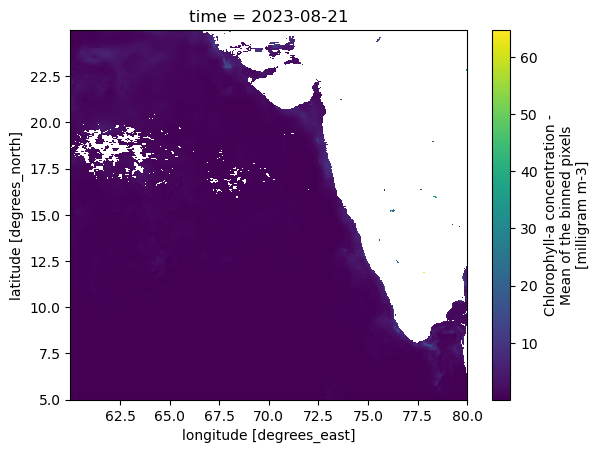
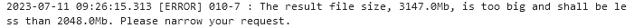

var_sla = {
'SERVICE_ID': 'SEALEVEL_GLO_PHY_L4_MY_008_047',
'PRODUCT_ID': 'cmems_obs-sl_glo_phy-ssh_my_allsat-l4-duacs-0.25deg_P1D',
'variables': ['adt', 'sla'],
'coords': {
'longitude-min': 60,
'longitude-max': 80,
'latitude-min': 5,
'latitude-max': 25,
'date-min': '2000-01',
'date-max': '2002-01' # exclusive of last month, so in this case, we get data until DEC '02
}
}Download Global Ocean Physics Reanalysis
Copernicus is the Earth Observation component of the European Union’s space programme (copernicus.eu). You will need to register for a Copernicus account in order to access the data and run this notebook.
This notebook will download and process the Copernicus Marine global ocean reanalysis data. The reanalysis is built to be as close as possible to the observations (i.e. realistic) and in agreement with the model physics. It covers the period from 1992 to 31/06/2021. The interim datasets cover 01/07/2021 to M-4 period. The dataset includes the sea_water_salinity, currents information from top to bottom and 2D sea surface level, bottom potential temperature, mixed layer thickness, and sea ice information. We are using the salinity, mixed layer thickness and bottom potential temperature from this dataset.
- 1993 through June 2021 id: cmems_mod_glo_phy_my_0.083deg_P1D-m
- July 2021 to present id: cmems_mod_glo_phy_myint_0.083deg_P1D-m
We will also download and process the Copernicus Global Ocean Gridded L 4 Sea Surface Heights. Altimeter satellite gridded Sea Level Anomalies (SLA) computed with respect to a twenty-year [1993, 2012] mean. The SLA is estimated by Optimal Interpolation, merging the L3 along-track measurement from the different altimeter missions available. We use this product:
- 1993 to June 2023 id: cmems_obs-sl_glo_phy-ssh_my_allsat-l4-duacs-0.25deg_P1D
- June 2023 to Sept 2023 id: cmems_obs-sl_glo_phy-ssh_myint_allsat-l4-duacs-0.25deg_P1D
Authenticate
Run this once. Afterwards the authentication file will be saved to your home directory.
import copernicusmarine copernicusmarine.login()
Import necessary libraries
import xarray as xr
import pandas as pd
import numpy as np
import matplotlib.pyplot as plt
import os, glob, subprocess
import copernicusmarineSource the file with functions
This has the download_copernicus() function used below.
%run -i "~/indian-ocean-zarr/notebooks/functions.py"Download data
This is an example command to download one day of data. The main command is copernicus.subset(). We will be downloading these datasets: cmems_obs-oc_glo_bgc-plankton_my_l4-gapfree-multi-4km_P1D and cmems_obs-oc_glo_bgc-plankton_my_l3-multi-4km_P1D.
help(copernicusmarine.subset)Help on function subset in module copernicusmarine.python_interface.subset:
subset(dataset_url: Optional[str] = None, dataset_id: Optional[str] = None, dataset_version: Optional[str] = None, dataset_part: Optional[str] = None, username: Optional[str] = None, password: Optional[str] = None, variables: Optional[List[str]] = None, minimum_longitude: Optional[float] = None, maximum_longitude: Optional[float] = None, minimum_latitude: Optional[float] = None, maximum_latitude: Optional[float] = None, minimum_depth: Optional[float] = None, maximum_depth: Optional[float] = None, vertical_dimension_as_originally_produced: bool = True, start_datetime: Union[datetime.datetime, str, NoneType] = None, end_datetime: Union[datetime.datetime, str, NoneType] = None, subset_method: Literal['nearest', 'strict'] = 'nearest', output_filename: Optional[str] = None, file_format: Literal['netcdf', 'zarr'] = 'netcdf', service: Optional[str] = None, request_file: Union[pathlib.Path, str, NoneType] = None, output_directory: Union[pathlib.Path, str, NoneType] = None, credentials_file: Union[pathlib.Path, str, NoneType] = None, motu_api_request: Optional[str] = None, force_download: bool = False, overwrite_output_data: bool = False, overwrite_metadata_cache: bool = False, no_metadata_cache: bool = False, disable_progress_bar: bool = False, staging: bool = False, netcdf_compression_enabled: bool = False, netcdf_compression_level: Optional[int] = None, netcdf3_compatible: bool = False) -> pathlib.Path
Extracts a subset of data from a specified dataset using given parameters.
Args:
dataset_url (str, optional): The URL of the dataset to retrieve.
dataset_id (str, optional): The unique identifier of the dataset.
dataset_version (str, optional): Force the use of a specific dataset version.
dataset_part (str, optional): Force the use of a specific dataset part.
username (str, optional): The username for authentication.
password (str, optional): The password for authentication.
output_directory (Union[pathlib.Path, str], optional): The directory where downloaded files will be saved.
credentials_file (Union[pathlib.Path, str], optional): Path to a file containing authentication credentials.
force_download (bool, optional): Skip confirmation before download.
overwrite_output_data (bool, optional): If True, overwrite existing output files.
request_file (Union[pathlib.Path, str], optional): Path to a file containing request parameters. For more information please refer to the README.
service (str, optional): Force the use of a specific service.
overwrite_metadata_cache (bool, optional): If True, overwrite the metadata cache.
no_metadata_cache (bool, optional): If True, do not use the metadata cache.
variables (List[str], optional): List of variable names to extract.
minimum_longitude (float, optional): Minimum longitude value for spatial subset.
maximum_longitude (float, optional): Maximum longitude value for spatial subset.
minimum_latitude (float, optional): Minimum latitude value for spatial subset.
maximum_latitude (float, optional): Maximum latitude value for spatial subset.
minimum_depth (float, optional): Minimum depth value for vertical subset.
maximum_depth (float, optional): Maximum depth value for vertical subset.
vertical_dimension_as_originally_produced (bool, optional): Use original vertical dimension.
start_datetime (datetime, optional): Start datetime for temporal subset.
end_datetime (datetime, optional): End datetime for temporal subset.
subset_method (str, optional): The subset method ('nearest' or 'strict') when requesting the dataset. If strict, you can only request dimension strictly inside the dataset.
output_filename (str, optional): Output filename for the subsetted data.
file_format (str, optional): Extension format for the filename.
motu_api_request (str, optional): MOTU API request string.
netcdf_compression_enabled (bool, optional): Enable compression level 1 to the NetCDF output file. Use 'netcdf_compression_level' option to customize the compression level.
netcdf_compression_level (int, optional): Specify a compression level to apply on the NetCDF output file. A value of 0 means no compression, and 9 is the highest level of compression available.
netcdf3_compatible (bool, optional): Enable downloading the dataset in a netCDF 3 compatible format.
Returns:
pathlib.Path: Path to the generated subsetted data file.
copernicusmarine.subset(
dataset_id = "cmems_mod_glo_phy_my_0.083deg_P1D-m",
variables = "",
start_datetime = "2020-08-21T00:00:00",
end_datetime = "2020-08-22T00:00:00",
minimum_longitude = 60,
maximum_longitude = 80,
minimum_latitude = 5,
maximum_latitude = 25,
output_directory = '/home/jovyan/shared/data/motu/cmems_mod_glo_phy_my_0.083deg_P1D-m',
output_filename = '20200821',
force_download = True,
)INFO - 2024-07-13T08:00:05Z - Dataset version was not specified, the latest one was selected: "202311"
INFO - 2024-07-13T08:00:05Z - Dataset part was not specified, the first one was selected: "default"
INFO - 2024-07-13T08:00:08Z - Service was not specified, the default one was selected: "arco-geo-series"
INFO - 2024-07-13T08:00:12Z - Downloading using service arco-geo-series...ds = xr.open_dataset('/home/jovyan/shared/data/motu/cmems_mod_glo_phy_my_0.083deg_P1D-m/20200821.nc')
ds
Create a function to download data in monthly chunks
def download_copernicus(dataset, date_start, date_end, vars="", lat1=-12, lat2=32, lon1=42, lon2=102, path='/home/jovyan/shared/data/copernicus'):
"""
dataset: dataset_id, example cmems_obs-oc_glo_bgc-plankton_my_l4-gapfree-multi-4km_P1D
vars: copernicus variables to write, example ['CHL']
date_start: formatted as YYYY-MM-DD or numpy.datetime64(
date_end: formatted as YYYY-MM-DD (right-exclusive)
"""
path_folder = f'{path}/{dataset}'
if not os.path.exists(path_folder):
os.makedirs(path_folder)
sliced_data_filename = '{year}{month}.nc'
months = pd.date_range(date_start, date_end, freq="ME")
for month in months:
yr=month.year
mon="{:02d}".format(month.month)
start_date=f'{yr}-{mon}-01'
export_file = sliced_data_filename.format(year = month.year, month = "{:02d}".format(month.month))
filpath=copernicusmarine.subset(
dataset_id = dataset,
variables = vars,
start_datetime = start_date,
end_datetime = month,
minimum_longitude = lon1,
maximum_longitude = lon2,
minimum_latitude = lat1,
maximum_latitude = lat2,
output_directory = path_folder,
output_filename = export_file,
force_download = True,
overwrite_output_data = True
)Download the products
Then I load and examine a test nc file.
download_copernicus("cmems_obs-oc_glo_bgc-plankton_my_l4-gapfree-multi-4km_P1D", "1997-10-01", "2024-06-30")INFO - 2024-07-12T00:39:47Z - Dataset version was not specified, the latest one was selected: "202311"
INFO - 2024-07-12T00:39:47Z - Dataset part was not specified, the first one was selected: "default"
INFO - 2024-07-12T00:39:51Z - Service was not specified, the default one was selected: "arco-geo-series"
INFO - 2024-07-12T00:39:54Z - Downloading using service arco-geo-series...
INFO - 2024-07-12T00:40:00Z - Estimated size of the dataset file is 539.769 MB.
INFO - 2024-07-12T00:40:00Z - Writing to local storage. Please wait...
INFO - 2024-07-12T00:40:58Z - Successfully downloaded to /home/jovyan/shared/data/copernicus/cmems_obs-oc_glo_bgc-plankton_my_l4-gapfree-multi-4km_P1D/199710.nc
INFO - 2024-07-12T00:40:59Z - Dataset version was not specified, the latest one was selected: "202311"
INFO - 2024-07-12T00:40:59Z - Dataset part was not specified, the first one was selected: "default"
INFO - 2024-07-12T00:41:03Z - Service was not specified, the default one was selected: "arco-geo-series"
INFO - 2024-07-12T00:41:06Z - Downloading using service arco-geo-series...
INFO - 2024-07-12T00:41:12Z - Estimated size of the dataset file is 522.357 MB.
INFO - 2024-07-12T00:41:12Z - Writing to local storage. Please wait...
INFO - 2024-07-12T00:42:14Z - Successfully downloaded to /home/jovyan/shared/data/copernicus/cmems_obs-oc_glo_bgc-plankton_my_l4-gapfree-multi-4km_P1D/199711.nc
INFO - 2024-07-12T00:42:15Z - Dataset version was not specified, the latest one was selected: "202311"
INFO - 2024-07-12T00:42:15Z - Dataset part was not specified, the first one was selected: "default"
INFO - 2024-07-12T00:42:18Z - Service was not specified, the default one was selected: "arco-geo-series"
INFO - 2024-07-12T00:42:21Z - Downloading using service arco-geo-series...
INFO - 2024-07-12T00:42:27Z - Estimated size of the dataset file is 539.769 MB.
INFO - 2024-07-12T00:42:27Z - Writing to local storage. Please wait...
INFO - 2024-07-12T00:43:31Z - Successfully downloaded to /home/jovyan/shared/data/copernicus/cmems_obs-oc_glo_bgc-plankton_my_l4-gapfree-multi-4km_P1D/199712.nc
INFO - 2024-07-12T00:43:32Z - Dataset version was not specified, the latest one was selected: "202311"
INFO - 2024-07-12T00:43:32Z - Dataset part was not specified, the first one was selected: "default"
INFO - 2024-07-12T00:43:35Z - Service was not specified, the default one was selected: "arco-geo-series"
INFO - 2024-07-12T00:43:38Z - Downloading using service arco-geo-series...
INFO - 2024-07-12T00:43:44Z - Estimated size of the dataset file is 539.769 MB.
INFO - 2024-07-12T00:43:44Z - Writing to local storage. Please wait...
INFO - 2024-07-12T00:44:47Z - Successfully downloaded to /home/jovyan/shared/data/copernicus/cmems_obs-oc_glo_bgc-plankton_my_l4-gapfree-multi-4km_P1D/199801.nc
INFO - 2024-07-12T00:44:49Z - Dataset version was not specified, the latest one was selected: "202311"
INFO - 2024-07-12T00:44:49Z - Dataset part was not specified, the first one was selected: "default"
INFO - 2024-07-12T00:44:52Z - Service was not specified, the default one was selected: "arco-geo-series"
INFO - 2024-07-12T00:44:55Z - Downloading using service arco-geo-series...
INFO - 2024-07-12T00:45:01Z - Estimated size of the dataset file is 487.533 MB.
INFO - 2024-07-12T00:45:01Z - Writing to local storage. Please wait...
INFO - 2024-07-12T00:45:59Z - Successfully downloaded to /home/jovyan/shared/data/copernicus/cmems_obs-oc_glo_bgc-plankton_my_l4-gapfree-multi-4km_P1D/199802.nc
INFO - 2024-07-12T00:46:00Z - Dataset version was not specified, the latest one was selected: "202311"
INFO - 2024-07-12T00:46:00Z - Dataset part was not specified, the first one was selected: "default"
INFO - 2024-07-12T00:46:04Z - Service was not specified, the default one was selected: "arco-geo-series"
INFO - 2024-07-12T00:46:07Z - Downloading using service arco-geo-series...
INFO - 2024-07-12T00:46:14Z - Estimated size of the dataset file is 539.769 MB.
INFO - 2024-07-12T00:46:14Z - Writing to local storage. Please wait...
INFO - 2024-07-12T00:47:17Z - Successfully downloaded to /home/jovyan/shared/data/copernicus/cmems_obs-oc_glo_bgc-plankton_my_l4-gapfree-multi-4km_P1D/199803.nc
INFO - 2024-07-12T00:47:18Z - Dataset version was not specified, the latest one was selected: "202311"
INFO - 2024-07-12T00:47:18Z - Dataset part was not specified, the first one was selected: "default"
INFO - 2024-07-12T00:47:21Z - Service was not specified, the default one was selected: "arco-geo-series"
INFO - 2024-07-12T00:47:24Z - Downloading using service arco-geo-series...
INFO - 2024-07-12T00:47:30Z - Estimated size of the dataset file is 522.357 MB.
INFO - 2024-07-12T00:47:30Z - Writing to local storage. Please wait...
INFO - 2024-07-12T00:48:31Z - Successfully downloaded to /home/jovyan/shared/data/copernicus/cmems_obs-oc_glo_bgc-plankton_my_l4-gapfree-multi-4km_P1D/199804.nc
INFO - 2024-07-12T00:48:33Z - Dataset version was not specified, the latest one was selected: "202311"
INFO - 2024-07-12T00:48:33Z - Dataset part was not specified, the first one was selected: "default"
INFO - 2024-07-12T00:48:36Z - Service was not specified, the default one was selected: "arco-geo-series"
INFO - 2024-07-12T00:48:39Z - Downloading using service arco-geo-series...
INFO - 2024-07-12T00:48:45Z - Estimated size of the dataset file is 539.769 MB.
INFO - 2024-07-12T00:48:45Z - Writing to local storage. Please wait...
INFO - 2024-07-12T00:49:48Z - Successfully downloaded to /home/jovyan/shared/data/copernicus/cmems_obs-oc_glo_bgc-plankton_my_l4-gapfree-multi-4km_P1D/199805.nc
INFO - 2024-07-12T00:49:49Z - Dataset version was not specified, the latest one was selected: "202311"
INFO - 2024-07-12T00:49:49Z - Dataset part was not specified, the first one was selected: "default"
INFO - 2024-07-12T00:49:52Z - Service was not specified, the default one was selected: "arco-geo-series"
INFO - 2024-07-12T00:49:56Z - Downloading using service arco-geo-series...
INFO - 2024-07-12T00:50:02Z - Estimated size of the dataset file is 522.357 MB.
INFO - 2024-07-12T00:50:02Z - Writing to local storage. Please wait...
INFO - 2024-07-12T00:51:03Z - Successfully downloaded to /home/jovyan/shared/data/copernicus/cmems_obs-oc_glo_bgc-plankton_my_l4-gapfree-multi-4km_P1D/199806.nc
INFO - 2024-07-12T00:51:04Z - Dataset version was not specified, the latest one was selected: "202311"
INFO - 2024-07-12T00:51:04Z - Dataset part was not specified, the first one was selected: "default"
INFO - 2024-07-12T00:51:07Z - Service was not specified, the default one was selected: "arco-geo-series"
INFO - 2024-07-12T00:51:10Z - Downloading using service arco-geo-series...
INFO - 2024-07-12T00:51:16Z - Estimated size of the dataset file is 539.769 MB.
INFO - 2024-07-12T00:51:16Z - Writing to local storage. Please wait...
INFO - 2024-07-12T00:52:19Z - Successfully downloaded to /home/jovyan/shared/data/copernicus/cmems_obs-oc_glo_bgc-plankton_my_l4-gapfree-multi-4km_P1D/199807.nc
INFO - 2024-07-12T00:52:20Z - Dataset version was not specified, the latest one was selected: "202311"
INFO - 2024-07-12T00:52:20Z - Dataset part was not specified, the first one was selected: "default"
INFO - 2024-07-12T00:52:23Z - Service was not specified, the default one was selected: "arco-geo-series"
INFO - 2024-07-12T00:52:26Z - Downloading using service arco-geo-series...
INFO - 2024-07-12T00:52:32Z - Estimated size of the dataset file is 539.769 MB.
INFO - 2024-07-12T00:52:32Z - Writing to local storage. Please wait...
INFO - 2024-07-12T00:53:36Z - Successfully downloaded to /home/jovyan/shared/data/copernicus/cmems_obs-oc_glo_bgc-plankton_my_l4-gapfree-multi-4km_P1D/199808.nc
INFO - 2024-07-12T00:53:37Z - Dataset version was not specified, the latest one was selected: "202311"
INFO - 2024-07-12T00:53:37Z - Dataset part was not specified, the first one was selected: "default"
INFO - 2024-07-12T00:53:40Z - Service was not specified, the default one was selected: "arco-geo-series"
INFO - 2024-07-12T00:53:43Z - Downloading using service arco-geo-series...
INFO - 2024-07-12T00:53:49Z - Estimated size of the dataset file is 522.357 MB.
INFO - 2024-07-12T00:53:49Z - Writing to local storage. Please wait...
INFO - 2024-07-12T00:54:51Z - Successfully downloaded to /home/jovyan/shared/data/copernicus/cmems_obs-oc_glo_bgc-plankton_my_l4-gapfree-multi-4km_P1D/199809.nc
INFO - 2024-07-12T00:54:52Z - Dataset version was not specified, the latest one was selected: "202311"
INFO - 2024-07-12T00:54:52Z - Dataset part was not specified, the first one was selected: "default"
INFO - 2024-07-12T00:54:55Z - Service was not specified, the default one was selected: "arco-geo-series"
INFO - 2024-07-12T00:54:58Z - Downloading using service arco-geo-series...
INFO - 2024-07-12T00:55:05Z - Estimated size of the dataset file is 539.769 MB.
INFO - 2024-07-12T00:55:05Z - Writing to local storage. Please wait...
INFO - 2024-07-12T00:56:08Z - Successfully downloaded to /home/jovyan/shared/data/copernicus/cmems_obs-oc_glo_bgc-plankton_my_l4-gapfree-multi-4km_P1D/199810.nc
INFO - 2024-07-12T00:56:09Z - Dataset version was not specified, the latest one was selected: "202311"
INFO - 2024-07-12T00:56:09Z - Dataset part was not specified, the first one was selected: "default"
INFO - 2024-07-12T00:56:12Z - Service was not specified, the default one was selected: "arco-geo-series"
INFO - 2024-07-12T00:56:15Z - Downloading using service arco-geo-series...
INFO - 2024-07-12T00:56:22Z - Estimated size of the dataset file is 522.357 MB.
INFO - 2024-07-12T00:56:22Z - Writing to local storage. Please wait...
INFO - 2024-07-12T00:57:19Z - Successfully downloaded to /home/jovyan/shared/data/copernicus/cmems_obs-oc_glo_bgc-plankton_my_l4-gapfree-multi-4km_P1D/199811.nc
INFO - 2024-07-12T00:57:20Z - Dataset version was not specified, the latest one was selected: "202311"
INFO - 2024-07-12T00:57:20Z - Dataset part was not specified, the first one was selected: "default"
INFO - 2024-07-12T00:57:24Z - Service was not specified, the default one was selected: "arco-geo-series"
INFO - 2024-07-12T00:57:27Z - Downloading using service arco-geo-series...
INFO - 2024-07-12T00:57:32Z - Estimated size of the dataset file is 539.769 MB.
INFO - 2024-07-12T00:57:32Z - Writing to local storage. Please wait...
INFO - 2024-07-12T00:58:35Z - Successfully downloaded to /home/jovyan/shared/data/copernicus/cmems_obs-oc_glo_bgc-plankton_my_l4-gapfree-multi-4km_P1D/199812.nc
INFO - 2024-07-12T00:58:37Z - Dataset version was not specified, the latest one was selected: "202311"
INFO - 2024-07-12T00:58:37Z - Dataset part was not specified, the first one was selected: "default"
INFO - 2024-07-12T00:58:40Z - Service was not specified, the default one was selected: "arco-geo-series"
INFO - 2024-07-12T00:58:43Z - Downloading using service arco-geo-series...
INFO - 2024-07-12T00:58:49Z - Estimated size of the dataset file is 539.769 MB.
INFO - 2024-07-12T00:58:49Z - Writing to local storage. Please wait...
INFO - 2024-07-12T00:59:51Z - Successfully downloaded to /home/jovyan/shared/data/copernicus/cmems_obs-oc_glo_bgc-plankton_my_l4-gapfree-multi-4km_P1D/199901.nc
INFO - 2024-07-12T00:59:52Z - Dataset version was not specified, the latest one was selected: "202311"
INFO - 2024-07-12T00:59:52Z - Dataset part was not specified, the first one was selected: "default"
INFO - 2024-07-12T00:59:55Z - Service was not specified, the default one was selected: "arco-geo-series"
INFO - 2024-07-12T00:59:58Z - Downloading using service arco-geo-series...
INFO - 2024-07-12T01:00:04Z - Estimated size of the dataset file is 487.533 MB.
INFO - 2024-07-12T01:00:04Z - Writing to local storage. Please wait...
INFO - 2024-07-12T01:01:02Z - Successfully downloaded to /home/jovyan/shared/data/copernicus/cmems_obs-oc_glo_bgc-plankton_my_l4-gapfree-multi-4km_P1D/199902.nc
INFO - 2024-07-12T01:01:04Z - Dataset version was not specified, the latest one was selected: "202311"
INFO - 2024-07-12T01:01:04Z - Dataset part was not specified, the first one was selected: "default"
INFO - 2024-07-12T01:01:07Z - Service was not specified, the default one was selected: "arco-geo-series"
INFO - 2024-07-12T01:01:10Z - Downloading using service arco-geo-series...
INFO - 2024-07-12T01:01:16Z - Estimated size of the dataset file is 539.769 MB.
INFO - 2024-07-12T01:01:16Z - Writing to local storage. Please wait...
INFO - 2024-07-12T01:02:21Z - Successfully downloaded to /home/jovyan/shared/data/copernicus/cmems_obs-oc_glo_bgc-plankton_my_l4-gapfree-multi-4km_P1D/199903.nc
INFO - 2024-07-12T01:02:22Z - Dataset version was not specified, the latest one was selected: "202311"
INFO - 2024-07-12T01:02:22Z - Dataset part was not specified, the first one was selected: "default"
INFO - 2024-07-12T01:02:25Z - Service was not specified, the default one was selected: "arco-geo-series"
INFO - 2024-07-12T01:02:28Z - Downloading using service arco-geo-series...
INFO - 2024-07-12T01:02:34Z - Estimated size of the dataset file is 522.357 MB.
INFO - 2024-07-12T01:02:34Z - Writing to local storage. Please wait...
INFO - 2024-07-12T01:03:36Z - Successfully downloaded to /home/jovyan/shared/data/copernicus/cmems_obs-oc_glo_bgc-plankton_my_l4-gapfree-multi-4km_P1D/199904.nc
INFO - 2024-07-12T01:03:38Z - Dataset version was not specified, the latest one was selected: "202311"
INFO - 2024-07-12T01:03:38Z - Dataset part was not specified, the first one was selected: "default"
INFO - 2024-07-12T01:03:41Z - Service was not specified, the default one was selected: "arco-geo-series"
INFO - 2024-07-12T01:03:44Z - Downloading using service arco-geo-series...
INFO - 2024-07-12T01:03:50Z - Estimated size of the dataset file is 539.769 MB.
INFO - 2024-07-12T01:03:50Z - Writing to local storage. Please wait...
INFO - 2024-07-12T01:04:54Z - Successfully downloaded to /home/jovyan/shared/data/copernicus/cmems_obs-oc_glo_bgc-plankton_my_l4-gapfree-multi-4km_P1D/199905.nc
INFO - 2024-07-12T01:04:55Z - Dataset version was not specified, the latest one was selected: "202311"
INFO - 2024-07-12T01:04:55Z - Dataset part was not specified, the first one was selected: "default"
INFO - 2024-07-12T01:04:58Z - Service was not specified, the default one was selected: "arco-geo-series"
INFO - 2024-07-12T01:05:01Z - Downloading using service arco-geo-series...
INFO - 2024-07-12T01:05:07Z - Estimated size of the dataset file is 522.357 MB.
INFO - 2024-07-12T01:05:07Z - Writing to local storage. Please wait...
INFO - 2024-07-12T01:06:10Z - Successfully downloaded to /home/jovyan/shared/data/copernicus/cmems_obs-oc_glo_bgc-plankton_my_l4-gapfree-multi-4km_P1D/199906.nc
INFO - 2024-07-12T01:06:11Z - Dataset version was not specified, the latest one was selected: "202311"
INFO - 2024-07-12T01:06:11Z - Dataset part was not specified, the first one was selected: "default"
INFO - 2024-07-12T01:06:14Z - Service was not specified, the default one was selected: "arco-geo-series"
INFO - 2024-07-12T01:06:17Z - Downloading using service arco-geo-series...
INFO - 2024-07-12T01:06:24Z - Estimated size of the dataset file is 539.769 MB.
INFO - 2024-07-12T01:06:24Z - Writing to local storage. Please wait...
INFO - 2024-07-12T01:07:27Z - Successfully downloaded to /home/jovyan/shared/data/copernicus/cmems_obs-oc_glo_bgc-plankton_my_l4-gapfree-multi-4km_P1D/199907.nc
INFO - 2024-07-12T01:07:29Z - Dataset version was not specified, the latest one was selected: "202311"
INFO - 2024-07-12T01:07:29Z - Dataset part was not specified, the first one was selected: "default"
INFO - 2024-07-12T01:07:32Z - Service was not specified, the default one was selected: "arco-geo-series"
INFO - 2024-07-12T01:07:34Z - Downloading using service arco-geo-series...
INFO - 2024-07-12T01:07:41Z - Estimated size of the dataset file is 539.769 MB.
INFO - 2024-07-12T01:07:41Z - Writing to local storage. Please wait...
INFO - 2024-07-12T01:08:45Z - Successfully downloaded to /home/jovyan/shared/data/copernicus/cmems_obs-oc_glo_bgc-plankton_my_l4-gapfree-multi-4km_P1D/199908.nc
INFO - 2024-07-12T01:08:47Z - Dataset version was not specified, the latest one was selected: "202311"
INFO - 2024-07-12T01:08:47Z - Dataset part was not specified, the first one was selected: "default"
INFO - 2024-07-12T01:08:50Z - Service was not specified, the default one was selected: "arco-geo-series"
INFO - 2024-07-12T01:08:53Z - Downloading using service arco-geo-series...
INFO - 2024-07-12T01:08:59Z - Estimated size of the dataset file is 522.357 MB.
INFO - 2024-07-12T01:08:59Z - Writing to local storage. Please wait...
INFO - 2024-07-12T01:10:01Z - Successfully downloaded to /home/jovyan/shared/data/copernicus/cmems_obs-oc_glo_bgc-plankton_my_l4-gapfree-multi-4km_P1D/199909.nc
INFO - 2024-07-12T01:10:02Z - Dataset version was not specified, the latest one was selected: "202311"
INFO - 2024-07-12T01:10:02Z - Dataset part was not specified, the first one was selected: "default"
INFO - 2024-07-12T01:10:04Z - Service was not specified, the default one was selected: "arco-geo-series"
INFO - 2024-07-12T01:10:07Z - Downloading using service arco-geo-series...
INFO - 2024-07-12T01:10:14Z - Estimated size of the dataset file is 539.769 MB.
INFO - 2024-07-12T01:10:14Z - Writing to local storage. Please wait...
INFO - 2024-07-12T01:11:19Z - Successfully downloaded to /home/jovyan/shared/data/copernicus/cmems_obs-oc_glo_bgc-plankton_my_l4-gapfree-multi-4km_P1D/199910.nc
INFO - 2024-07-12T01:11:20Z - Dataset version was not specified, the latest one was selected: "202311"
INFO - 2024-07-12T01:11:20Z - Dataset part was not specified, the first one was selected: "default"
INFO - 2024-07-12T01:11:23Z - Service was not specified, the default one was selected: "arco-geo-series"
INFO - 2024-07-12T01:11:26Z - Downloading using service arco-geo-series...
INFO - 2024-07-12T01:11:32Z - Estimated size of the dataset file is 522.357 MB.
INFO - 2024-07-12T01:11:32Z - Writing to local storage. Please wait...
INFO - 2024-07-12T01:12:33Z - Successfully downloaded to /home/jovyan/shared/data/copernicus/cmems_obs-oc_glo_bgc-plankton_my_l4-gapfree-multi-4km_P1D/199911.nc
INFO - 2024-07-12T01:12:35Z - Dataset version was not specified, the latest one was selected: "202311"
INFO - 2024-07-12T01:12:35Z - Dataset part was not specified, the first one was selected: "default"
INFO - 2024-07-12T01:12:38Z - Service was not specified, the default one was selected: "arco-geo-series"
INFO - 2024-07-12T01:12:41Z - Downloading using service arco-geo-series...
INFO - 2024-07-12T01:12:46Z - Estimated size of the dataset file is 539.769 MB.
INFO - 2024-07-12T01:12:46Z - Writing to local storage. Please wait...
INFO - 2024-07-12T01:13:49Z - Successfully downloaded to /home/jovyan/shared/data/copernicus/cmems_obs-oc_glo_bgc-plankton_my_l4-gapfree-multi-4km_P1D/199912.nc
INFO - 2024-07-12T01:13:50Z - Dataset version was not specified, the latest one was selected: "202311"
INFO - 2024-07-12T01:13:50Z - Dataset part was not specified, the first one was selected: "default"
INFO - 2024-07-12T01:13:54Z - Service was not specified, the default one was selected: "arco-geo-series"
INFO - 2024-07-12T01:13:57Z - Downloading using service arco-geo-series...
INFO - 2024-07-12T01:14:03Z - Estimated size of the dataset file is 539.769 MB.
INFO - 2024-07-12T01:14:03Z - Writing to local storage. Please wait...
INFO - 2024-07-12T01:15:07Z - Successfully downloaded to /home/jovyan/shared/data/copernicus/cmems_obs-oc_glo_bgc-plankton_my_l4-gapfree-multi-4km_P1D/200001.nc
INFO - 2024-07-12T01:15:09Z - Dataset version was not specified, the latest one was selected: "202311"
INFO - 2024-07-12T01:15:09Z - Dataset part was not specified, the first one was selected: "default"
INFO - 2024-07-12T01:15:12Z - Service was not specified, the default one was selected: "arco-geo-series"
INFO - 2024-07-12T01:15:15Z - Downloading using service arco-geo-series...
INFO - 2024-07-12T01:15:21Z - Estimated size of the dataset file is 504.945 MB.
INFO - 2024-07-12T01:15:21Z - Writing to local storage. Please wait...
INFO - 2024-07-12T01:16:22Z - Successfully downloaded to /home/jovyan/shared/data/copernicus/cmems_obs-oc_glo_bgc-plankton_my_l4-gapfree-multi-4km_P1D/200002.nc
INFO - 2024-07-12T01:16:24Z - Dataset version was not specified, the latest one was selected: "202311"
INFO - 2024-07-12T01:16:24Z - Dataset part was not specified, the first one was selected: "default"
INFO - 2024-07-12T01:16:27Z - Service was not specified, the default one was selected: "arco-geo-series"
INFO - 2024-07-12T01:16:30Z - Downloading using service arco-geo-series...
INFO - 2024-07-12T01:16:36Z - Estimated size of the dataset file is 539.769 MB.
INFO - 2024-07-12T01:16:36Z - Writing to local storage. Please wait...
INFO - 2024-07-12T01:17:40Z - Successfully downloaded to /home/jovyan/shared/data/copernicus/cmems_obs-oc_glo_bgc-plankton_my_l4-gapfree-multi-4km_P1D/200003.nc
INFO - 2024-07-12T01:17:41Z - Dataset version was not specified, the latest one was selected: "202311"
INFO - 2024-07-12T01:17:41Z - Dataset part was not specified, the first one was selected: "default"
INFO - 2024-07-12T01:17:44Z - Service was not specified, the default one was selected: "arco-geo-series"
INFO - 2024-07-12T01:17:48Z - Downloading using service arco-geo-series...
INFO - 2024-07-12T01:17:53Z - Estimated size of the dataset file is 522.357 MB.
INFO - 2024-07-12T01:17:53Z - Writing to local storage. Please wait...
INFO - 2024-07-12T01:18:56Z - Successfully downloaded to /home/jovyan/shared/data/copernicus/cmems_obs-oc_glo_bgc-plankton_my_l4-gapfree-multi-4km_P1D/200004.nc
INFO - 2024-07-12T01:18:57Z - Dataset version was not specified, the latest one was selected: "202311"
INFO - 2024-07-12T01:18:57Z - Dataset part was not specified, the first one was selected: "default"
INFO - 2024-07-12T01:19:00Z - Service was not specified, the default one was selected: "arco-geo-series"
INFO - 2024-07-12T01:19:03Z - Downloading using service arco-geo-series...
INFO - 2024-07-12T01:19:10Z - Estimated size of the dataset file is 539.769 MB.
INFO - 2024-07-12T01:19:10Z - Writing to local storage. Please wait...
INFO - 2024-07-12T01:20:13Z - Successfully downloaded to /home/jovyan/shared/data/copernicus/cmems_obs-oc_glo_bgc-plankton_my_l4-gapfree-multi-4km_P1D/200005.nc
INFO - 2024-07-12T01:20:15Z - Dataset version was not specified, the latest one was selected: "202311"
INFO - 2024-07-12T01:20:15Z - Dataset part was not specified, the first one was selected: "default"
INFO - 2024-07-12T01:20:18Z - Service was not specified, the default one was selected: "arco-geo-series"
INFO - 2024-07-12T01:20:21Z - Downloading using service arco-geo-series...
INFO - 2024-07-12T01:20:27Z - Estimated size of the dataset file is 522.357 MB.
INFO - 2024-07-12T01:20:27Z - Writing to local storage. Please wait...
INFO - 2024-07-12T01:21:29Z - Successfully downloaded to /home/jovyan/shared/data/copernicus/cmems_obs-oc_glo_bgc-plankton_my_l4-gapfree-multi-4km_P1D/200006.nc
INFO - 2024-07-12T01:21:30Z - Dataset version was not specified, the latest one was selected: "202311"
INFO - 2024-07-12T01:21:30Z - Dataset part was not specified, the first one was selected: "default"
INFO - 2024-07-12T01:21:33Z - Service was not specified, the default one was selected: "arco-geo-series"
INFO - 2024-07-12T01:21:36Z - Downloading using service arco-geo-series...
INFO - 2024-07-12T01:21:43Z - Estimated size of the dataset file is 539.769 MB.
INFO - 2024-07-12T01:21:43Z - Writing to local storage. Please wait...
INFO - 2024-07-12T01:22:46Z - Successfully downloaded to /home/jovyan/shared/data/copernicus/cmems_obs-oc_glo_bgc-plankton_my_l4-gapfree-multi-4km_P1D/200007.nc
INFO - 2024-07-12T01:22:47Z - Dataset version was not specified, the latest one was selected: "202311"
INFO - 2024-07-12T01:22:47Z - Dataset part was not specified, the first one was selected: "default"
INFO - 2024-07-12T01:22:50Z - Service was not specified, the default one was selected: "arco-geo-series"
INFO - 2024-07-12T01:22:53Z - Downloading using service arco-geo-series...
INFO - 2024-07-12T01:22:58Z - Estimated size of the dataset file is 539.769 MB.
INFO - 2024-07-12T01:22:58Z - Writing to local storage. Please wait...
INFO - 2024-07-12T01:24:02Z - Successfully downloaded to /home/jovyan/shared/data/copernicus/cmems_obs-oc_glo_bgc-plankton_my_l4-gapfree-multi-4km_P1D/200008.nc
INFO - 2024-07-12T01:24:03Z - Dataset version was not specified, the latest one was selected: "202311"
INFO - 2024-07-12T01:24:03Z - Dataset part was not specified, the first one was selected: "default"
INFO - 2024-07-12T01:24:07Z - Service was not specified, the default one was selected: "arco-geo-series"
INFO - 2024-07-12T01:24:10Z - Downloading using service arco-geo-series...
INFO - 2024-07-12T01:24:16Z - Estimated size of the dataset file is 522.357 MB.
INFO - 2024-07-12T01:24:16Z - Writing to local storage. Please wait...
INFO - 2024-07-12T01:25:17Z - Successfully downloaded to /home/jovyan/shared/data/copernicus/cmems_obs-oc_glo_bgc-plankton_my_l4-gapfree-multi-4km_P1D/200009.nc
INFO - 2024-07-12T01:25:19Z - Dataset version was not specified, the latest one was selected: "202311"
INFO - 2024-07-12T01:25:19Z - Dataset part was not specified, the first one was selected: "default"
INFO - 2024-07-12T01:25:22Z - Service was not specified, the default one was selected: "arco-geo-series"
INFO - 2024-07-12T01:25:25Z - Downloading using service arco-geo-series...
INFO - 2024-07-12T01:25:32Z - Estimated size of the dataset file is 539.769 MB.
INFO - 2024-07-12T01:25:32Z - Writing to local storage. Please wait...
INFO - 2024-07-12T01:26:35Z - Successfully downloaded to /home/jovyan/shared/data/copernicus/cmems_obs-oc_glo_bgc-plankton_my_l4-gapfree-multi-4km_P1D/200010.nc
INFO - 2024-07-12T01:26:36Z - Dataset version was not specified, the latest one was selected: "202311"
INFO - 2024-07-12T01:26:36Z - Dataset part was not specified, the first one was selected: "default"
INFO - 2024-07-12T01:26:39Z - Service was not specified, the default one was selected: "arco-geo-series"
INFO - 2024-07-12T01:26:42Z - Downloading using service arco-geo-series...
INFO - 2024-07-12T01:26:48Z - Estimated size of the dataset file is 522.357 MB.
INFO - 2024-07-12T01:26:48Z - Writing to local storage. Please wait...
INFO - 2024-07-12T01:27:50Z - Successfully downloaded to /home/jovyan/shared/data/copernicus/cmems_obs-oc_glo_bgc-plankton_my_l4-gapfree-multi-4km_P1D/200011.nc
INFO - 2024-07-12T01:27:51Z - Dataset version was not specified, the latest one was selected: "202311"
INFO - 2024-07-12T01:27:51Z - Dataset part was not specified, the first one was selected: "default"
INFO - 2024-07-12T01:27:54Z - Service was not specified, the default one was selected: "arco-geo-series"
INFO - 2024-07-12T01:27:57Z - Downloading using service arco-geo-series...
INFO - 2024-07-12T01:28:02Z - Estimated size of the dataset file is 539.769 MB.
INFO - 2024-07-12T01:28:02Z - Writing to local storage. Please wait...
INFO - 2024-07-12T01:29:06Z - Successfully downloaded to /home/jovyan/shared/data/copernicus/cmems_obs-oc_glo_bgc-plankton_my_l4-gapfree-multi-4km_P1D/200012.nc
INFO - 2024-07-12T01:29:08Z - Dataset version was not specified, the latest one was selected: "202311"
INFO - 2024-07-12T01:29:08Z - Dataset part was not specified, the first one was selected: "default"
INFO - 2024-07-12T01:29:10Z - Service was not specified, the default one was selected: "arco-geo-series"
INFO - 2024-07-12T01:29:13Z - Downloading using service arco-geo-series...
INFO - 2024-07-12T01:29:20Z - Estimated size of the dataset file is 539.769 MB.
INFO - 2024-07-12T01:29:20Z - Writing to local storage. Please wait...
INFO - 2024-07-12T01:30:23Z - Successfully downloaded to /home/jovyan/shared/data/copernicus/cmems_obs-oc_glo_bgc-plankton_my_l4-gapfree-multi-4km_P1D/200101.nc
INFO - 2024-07-12T01:30:25Z - Dataset version was not specified, the latest one was selected: "202311"
INFO - 2024-07-12T01:30:25Z - Dataset part was not specified, the first one was selected: "default"
INFO - 2024-07-12T01:30:28Z - Service was not specified, the default one was selected: "arco-geo-series"
INFO - 2024-07-12T01:30:31Z - Downloading using service arco-geo-series...
INFO - 2024-07-12T01:30:37Z - Estimated size of the dataset file is 487.533 MB.
INFO - 2024-07-12T01:30:37Z - Writing to local storage. Please wait...
INFO - 2024-07-12T01:31:35Z - Successfully downloaded to /home/jovyan/shared/data/copernicus/cmems_obs-oc_glo_bgc-plankton_my_l4-gapfree-multi-4km_P1D/200102.nc
INFO - 2024-07-12T01:31:36Z - Dataset version was not specified, the latest one was selected: "202311"
INFO - 2024-07-12T01:31:36Z - Dataset part was not specified, the first one was selected: "default"
INFO - 2024-07-12T01:31:39Z - Service was not specified, the default one was selected: "arco-geo-series"
INFO - 2024-07-12T01:31:42Z - Downloading using service arco-geo-series...
INFO - 2024-07-12T01:31:48Z - Estimated size of the dataset file is 539.769 MB.
INFO - 2024-07-12T01:31:48Z - Writing to local storage. Please wait...
INFO - 2024-07-12T01:32:51Z - Successfully downloaded to /home/jovyan/shared/data/copernicus/cmems_obs-oc_glo_bgc-plankton_my_l4-gapfree-multi-4km_P1D/200103.nc
INFO - 2024-07-12T01:32:52Z - Dataset version was not specified, the latest one was selected: "202311"
INFO - 2024-07-12T01:32:52Z - Dataset part was not specified, the first one was selected: "default"
INFO - 2024-07-12T01:32:55Z - Service was not specified, the default one was selected: "arco-geo-series"
INFO - 2024-07-12T01:32:58Z - Downloading using service arco-geo-series...
INFO - 2024-07-12T01:33:05Z - Estimated size of the dataset file is 522.357 MB.
INFO - 2024-07-12T01:33:05Z - Writing to local storage. Please wait...
INFO - 2024-07-12T01:34:07Z - Successfully downloaded to /home/jovyan/shared/data/copernicus/cmems_obs-oc_glo_bgc-plankton_my_l4-gapfree-multi-4km_P1D/200104.nc
INFO - 2024-07-12T01:34:09Z - Dataset version was not specified, the latest one was selected: "202311"
INFO - 2024-07-12T01:34:09Z - Dataset part was not specified, the first one was selected: "default"
INFO - 2024-07-12T01:34:12Z - Service was not specified, the default one was selected: "arco-geo-series"
INFO - 2024-07-12T01:34:15Z - Downloading using service arco-geo-series...
INFO - 2024-07-12T01:34:21Z - Estimated size of the dataset file is 539.769 MB.
INFO - 2024-07-12T01:34:21Z - Writing to local storage. Please wait...
INFO - 2024-07-12T01:35:24Z - Successfully downloaded to /home/jovyan/shared/data/copernicus/cmems_obs-oc_glo_bgc-plankton_my_l4-gapfree-multi-4km_P1D/200105.nc
INFO - 2024-07-12T01:35:25Z - Dataset version was not specified, the latest one was selected: "202311"
INFO - 2024-07-12T01:35:25Z - Dataset part was not specified, the first one was selected: "default"
INFO - 2024-07-12T01:35:28Z - Service was not specified, the default one was selected: "arco-geo-series"
INFO - 2024-07-12T01:35:31Z - Downloading using service arco-geo-series...
INFO - 2024-07-12T01:35:38Z - Estimated size of the dataset file is 522.357 MB.
INFO - 2024-07-12T01:35:38Z - Writing to local storage. Please wait...
INFO - 2024-07-12T01:36:39Z - Successfully downloaded to /home/jovyan/shared/data/copernicus/cmems_obs-oc_glo_bgc-plankton_my_l4-gapfree-multi-4km_P1D/200106.nc
INFO - 2024-07-12T01:36:40Z - Dataset version was not specified, the latest one was selected: "202311"
INFO - 2024-07-12T01:36:40Z - Dataset part was not specified, the first one was selected: "default"
INFO - 2024-07-12T01:36:43Z - Service was not specified, the default one was selected: "arco-geo-series"
INFO - 2024-07-12T01:36:46Z - Downloading using service arco-geo-series...
INFO - 2024-07-12T01:36:52Z - Estimated size of the dataset file is 539.769 MB.
INFO - 2024-07-12T01:36:52Z - Writing to local storage. Please wait...
INFO - 2024-07-12T01:37:56Z - Successfully downloaded to /home/jovyan/shared/data/copernicus/cmems_obs-oc_glo_bgc-plankton_my_l4-gapfree-multi-4km_P1D/200107.nc
INFO - 2024-07-12T01:37:57Z - Dataset version was not specified, the latest one was selected: "202311"
INFO - 2024-07-12T01:37:57Z - Dataset part was not specified, the first one was selected: "default"
INFO - 2024-07-12T01:38:00Z - Service was not specified, the default one was selected: "arco-geo-series"
INFO - 2024-07-12T01:38:03Z - Downloading using service arco-geo-series...
INFO - 2024-07-12T01:38:09Z - Estimated size of the dataset file is 539.769 MB.
INFO - 2024-07-12T01:38:09Z - Writing to local storage. Please wait...
INFO - 2024-07-12T01:39:12Z - Successfully downloaded to /home/jovyan/shared/data/copernicus/cmems_obs-oc_glo_bgc-plankton_my_l4-gapfree-multi-4km_P1D/200108.nc
INFO - 2024-07-12T01:39:14Z - Dataset version was not specified, the latest one was selected: "202311"
INFO - 2024-07-12T01:39:14Z - Dataset part was not specified, the first one was selected: "default"
INFO - 2024-07-12T01:39:17Z - Service was not specified, the default one was selected: "arco-geo-series"
INFO - 2024-07-12T01:39:20Z - Downloading using service arco-geo-series...
INFO - 2024-07-12T01:39:26Z - Estimated size of the dataset file is 522.357 MB.
INFO - 2024-07-12T01:39:26Z - Writing to local storage. Please wait...
INFO - 2024-07-12T01:40:28Z - Successfully downloaded to /home/jovyan/shared/data/copernicus/cmems_obs-oc_glo_bgc-plankton_my_l4-gapfree-multi-4km_P1D/200109.nc
INFO - 2024-07-12T01:40:29Z - Dataset version was not specified, the latest one was selected: "202311"
INFO - 2024-07-12T01:40:29Z - Dataset part was not specified, the first one was selected: "default"
INFO - 2024-07-12T01:40:32Z - Service was not specified, the default one was selected: "arco-geo-series"
INFO - 2024-07-12T01:40:35Z - Downloading using service arco-geo-series...
INFO - 2024-07-12T01:40:41Z - Estimated size of the dataset file is 539.769 MB.
INFO - 2024-07-12T01:40:41Z - Writing to local storage. Please wait...
INFO - 2024-07-12T01:41:45Z - Successfully downloaded to /home/jovyan/shared/data/copernicus/cmems_obs-oc_glo_bgc-plankton_my_l4-gapfree-multi-4km_P1D/200110.nc
INFO - 2024-07-12T01:41:46Z - Dataset version was not specified, the latest one was selected: "202311"
INFO - 2024-07-12T01:41:46Z - Dataset part was not specified, the first one was selected: "default"
INFO - 2024-07-12T01:41:49Z - Service was not specified, the default one was selected: "arco-geo-series"
INFO - 2024-07-12T01:41:52Z - Downloading using service arco-geo-series...
INFO - 2024-07-12T01:41:58Z - Estimated size of the dataset file is 522.357 MB.
INFO - 2024-07-12T01:41:58Z - Writing to local storage. Please wait...
INFO - 2024-07-12T01:42:59Z - Successfully downloaded to /home/jovyan/shared/data/copernicus/cmems_obs-oc_glo_bgc-plankton_my_l4-gapfree-multi-4km_P1D/200111.nc
INFO - 2024-07-12T01:43:00Z - Dataset version was not specified, the latest one was selected: "202311"
INFO - 2024-07-12T01:43:00Z - Dataset part was not specified, the first one was selected: "default"
INFO - 2024-07-12T01:43:03Z - Service was not specified, the default one was selected: "arco-geo-series"
INFO - 2024-07-12T01:43:06Z - Downloading using service arco-geo-series...
INFO - 2024-07-12T01:43:12Z - Estimated size of the dataset file is 539.769 MB.
INFO - 2024-07-12T01:43:12Z - Writing to local storage. Please wait...
INFO - 2024-07-12T01:44:15Z - Successfully downloaded to /home/jovyan/shared/data/copernicus/cmems_obs-oc_glo_bgc-plankton_my_l4-gapfree-multi-4km_P1D/200112.nc
INFO - 2024-07-12T01:44:17Z - Dataset version was not specified, the latest one was selected: "202311"
INFO - 2024-07-12T01:44:17Z - Dataset part was not specified, the first one was selected: "default"
INFO - 2024-07-12T01:44:20Z - Service was not specified, the default one was selected: "arco-geo-series"
INFO - 2024-07-12T01:44:23Z - Downloading using service arco-geo-series...
INFO - 2024-07-12T01:44:29Z - Estimated size of the dataset file is 539.769 MB.
INFO - 2024-07-12T01:44:29Z - Writing to local storage. Please wait...
INFO - 2024-07-12T01:45:33Z - Successfully downloaded to /home/jovyan/shared/data/copernicus/cmems_obs-oc_glo_bgc-plankton_my_l4-gapfree-multi-4km_P1D/200201.nc
INFO - 2024-07-12T01:45:34Z - Dataset version was not specified, the latest one was selected: "202311"
INFO - 2024-07-12T01:45:34Z - Dataset part was not specified, the first one was selected: "default"
INFO - 2024-07-12T01:45:37Z - Service was not specified, the default one was selected: "arco-geo-series"
INFO - 2024-07-12T01:45:40Z - Downloading using service arco-geo-series...
INFO - 2024-07-12T01:45:46Z - Estimated size of the dataset file is 487.533 MB.
INFO - 2024-07-12T01:45:46Z - Writing to local storage. Please wait...
INFO - 2024-07-12T01:46:44Z - Successfully downloaded to /home/jovyan/shared/data/copernicus/cmems_obs-oc_glo_bgc-plankton_my_l4-gapfree-multi-4km_P1D/200202.nc
INFO - 2024-07-12T01:46:46Z - Dataset version was not specified, the latest one was selected: "202311"
INFO - 2024-07-12T01:46:46Z - Dataset part was not specified, the first one was selected: "default"
INFO - 2024-07-12T01:46:49Z - Service was not specified, the default one was selected: "arco-geo-series"
INFO - 2024-07-12T01:46:52Z - Downloading using service arco-geo-series...
INFO - 2024-07-12T01:46:58Z - Estimated size of the dataset file is 539.769 MB.
INFO - 2024-07-12T01:46:58Z - Writing to local storage. Please wait...
INFO - 2024-07-12T01:48:02Z - Successfully downloaded to /home/jovyan/shared/data/copernicus/cmems_obs-oc_glo_bgc-plankton_my_l4-gapfree-multi-4km_P1D/200203.nc
INFO - 2024-07-12T01:48:03Z - Dataset version was not specified, the latest one was selected: "202311"
INFO - 2024-07-12T01:48:03Z - Dataset part was not specified, the first one was selected: "default"
INFO - 2024-07-12T01:48:06Z - Service was not specified, the default one was selected: "arco-geo-series"
INFO - 2024-07-12T01:48:09Z - Downloading using service arco-geo-series...
INFO - 2024-07-12T01:48:16Z - Estimated size of the dataset file is 522.357 MB.
INFO - 2024-07-12T01:48:16Z - Writing to local storage. Please wait...
INFO - 2024-07-12T01:49:17Z - Successfully downloaded to /home/jovyan/shared/data/copernicus/cmems_obs-oc_glo_bgc-plankton_my_l4-gapfree-multi-4km_P1D/200204.nc
INFO - 2024-07-12T01:49:18Z - Dataset version was not specified, the latest one was selected: "202311"
INFO - 2024-07-12T01:49:18Z - Dataset part was not specified, the first one was selected: "default"
INFO - 2024-07-12T01:49:21Z - Service was not specified, the default one was selected: "arco-geo-series"
INFO - 2024-07-12T01:49:25Z - Downloading using service arco-geo-series...
INFO - 2024-07-12T01:49:31Z - Estimated size of the dataset file is 539.769 MB.
INFO - 2024-07-12T01:49:31Z - Writing to local storage. Please wait...
INFO - 2024-07-12T01:50:34Z - Successfully downloaded to /home/jovyan/shared/data/copernicus/cmems_obs-oc_glo_bgc-plankton_my_l4-gapfree-multi-4km_P1D/200205.nc
INFO - 2024-07-12T01:50:35Z - Dataset version was not specified, the latest one was selected: "202311"
INFO - 2024-07-12T01:50:35Z - Dataset part was not specified, the first one was selected: "default"
INFO - 2024-07-12T01:50:39Z - Service was not specified, the default one was selected: "arco-geo-series"
INFO - 2024-07-12T01:50:42Z - Downloading using service arco-geo-series...
INFO - 2024-07-12T01:50:49Z - Estimated size of the dataset file is 522.357 MB.
INFO - 2024-07-12T01:50:49Z - Writing to local storage. Please wait...
INFO - 2024-07-12T01:51:51Z - Successfully downloaded to /home/jovyan/shared/data/copernicus/cmems_obs-oc_glo_bgc-plankton_my_l4-gapfree-multi-4km_P1D/200206.nc
INFO - 2024-07-12T01:51:52Z - Dataset version was not specified, the latest one was selected: "202311"
INFO - 2024-07-12T01:51:52Z - Dataset part was not specified, the first one was selected: "default"
INFO - 2024-07-12T01:51:55Z - Service was not specified, the default one was selected: "arco-geo-series"
INFO - 2024-07-12T01:51:59Z - Downloading using service arco-geo-series...
INFO - 2024-07-12T01:52:05Z - Estimated size of the dataset file is 539.769 MB.
INFO - 2024-07-12T01:52:05Z - Writing to local storage. Please wait...
INFO - 2024-07-12T01:53:09Z - Successfully downloaded to /home/jovyan/shared/data/copernicus/cmems_obs-oc_glo_bgc-plankton_my_l4-gapfree-multi-4km_P1D/200207.nc
INFO - 2024-07-12T01:53:10Z - Dataset version was not specified, the latest one was selected: "202311"
INFO - 2024-07-12T01:53:10Z - Dataset part was not specified, the first one was selected: "default"
INFO - 2024-07-12T01:53:13Z - Service was not specified, the default one was selected: "arco-geo-series"
INFO - 2024-07-12T01:53:17Z - Downloading using service arco-geo-series...
INFO - 2024-07-12T01:53:23Z - Estimated size of the dataset file is 539.769 MB.
INFO - 2024-07-12T01:53:23Z - Writing to local storage. Please wait...
INFO - 2024-07-12T01:54:26Z - Successfully downloaded to /home/jovyan/shared/data/copernicus/cmems_obs-oc_glo_bgc-plankton_my_l4-gapfree-multi-4km_P1D/200208.nc
INFO - 2024-07-12T01:54:27Z - Dataset version was not specified, the latest one was selected: "202311"
INFO - 2024-07-12T01:54:27Z - Dataset part was not specified, the first one was selected: "default"
INFO - 2024-07-12T01:54:30Z - Service was not specified, the default one was selected: "arco-geo-series"
INFO - 2024-07-12T01:54:33Z - Downloading using service arco-geo-series...
INFO - 2024-07-12T01:54:39Z - Estimated size of the dataset file is 522.357 MB.
INFO - 2024-07-12T01:54:39Z - Writing to local storage. Please wait...
INFO - 2024-07-12T01:55:41Z - Successfully downloaded to /home/jovyan/shared/data/copernicus/cmems_obs-oc_glo_bgc-plankton_my_l4-gapfree-multi-4km_P1D/200209.nc
INFO - 2024-07-12T01:55:42Z - Dataset version was not specified, the latest one was selected: "202311"
INFO - 2024-07-12T01:55:42Z - Dataset part was not specified, the first one was selected: "default"
INFO - 2024-07-12T01:55:45Z - Service was not specified, the default one was selected: "arco-geo-series"
INFO - 2024-07-12T01:55:48Z - Downloading using service arco-geo-series...
INFO - 2024-07-12T01:55:55Z - Estimated size of the dataset file is 539.769 MB.
INFO - 2024-07-12T01:55:55Z - Writing to local storage. Please wait...
INFO - 2024-07-12T01:56:58Z - Successfully downloaded to /home/jovyan/shared/data/copernicus/cmems_obs-oc_glo_bgc-plankton_my_l4-gapfree-multi-4km_P1D/200210.nc
INFO - 2024-07-12T01:56:59Z - Dataset version was not specified, the latest one was selected: "202311"
INFO - 2024-07-12T01:56:59Z - Dataset part was not specified, the first one was selected: "default"
INFO - 2024-07-12T01:57:03Z - Service was not specified, the default one was selected: "arco-geo-series"
INFO - 2024-07-12T01:57:06Z - Downloading using service arco-geo-series...
INFO - 2024-07-12T01:57:12Z - Estimated size of the dataset file is 522.357 MB.
INFO - 2024-07-12T01:57:12Z - Writing to local storage. Please wait...
INFO - 2024-07-12T01:58:13Z - Successfully downloaded to /home/jovyan/shared/data/copernicus/cmems_obs-oc_glo_bgc-plankton_my_l4-gapfree-multi-4km_P1D/200211.nc
INFO - 2024-07-12T01:58:14Z - Dataset version was not specified, the latest one was selected: "202311"
INFO - 2024-07-12T01:58:14Z - Dataset part was not specified, the first one was selected: "default"
INFO - 2024-07-12T01:58:17Z - Service was not specified, the default one was selected: "arco-geo-series"
INFO - 2024-07-12T01:58:20Z - Downloading using service arco-geo-series...
INFO - 2024-07-12T01:58:27Z - Estimated size of the dataset file is 539.769 MB.
INFO - 2024-07-12T01:58:27Z - Writing to local storage. Please wait...
INFO - 2024-07-12T01:59:29Z - Successfully downloaded to /home/jovyan/shared/data/copernicus/cmems_obs-oc_glo_bgc-plankton_my_l4-gapfree-multi-4km_P1D/200212.nc
INFO - 2024-07-12T01:59:31Z - Dataset version was not specified, the latest one was selected: "202311"
INFO - 2024-07-12T01:59:31Z - Dataset part was not specified, the first one was selected: "default"
INFO - 2024-07-12T01:59:34Z - Service was not specified, the default one was selected: "arco-geo-series"
INFO - 2024-07-12T01:59:37Z - Downloading using service arco-geo-series...
INFO - 2024-07-12T01:59:43Z - Estimated size of the dataset file is 539.769 MB.
INFO - 2024-07-12T01:59:43Z - Writing to local storage. Please wait...
INFO - 2024-07-12T02:00:47Z - Successfully downloaded to /home/jovyan/shared/data/copernicus/cmems_obs-oc_glo_bgc-plankton_my_l4-gapfree-multi-4km_P1D/200301.nc
INFO - 2024-07-12T02:00:48Z - Dataset version was not specified, the latest one was selected: "202311"
INFO - 2024-07-12T02:00:48Z - Dataset part was not specified, the first one was selected: "default"
INFO - 2024-07-12T02:00:51Z - Service was not specified, the default one was selected: "arco-geo-series"
INFO - 2024-07-12T02:00:54Z - Downloading using service arco-geo-series...
INFO - 2024-07-12T02:01:01Z - Estimated size of the dataset file is 487.533 MB.
INFO - 2024-07-12T02:01:01Z - Writing to local storage. Please wait...
INFO - 2024-07-12T02:01:58Z - Successfully downloaded to /home/jovyan/shared/data/copernicus/cmems_obs-oc_glo_bgc-plankton_my_l4-gapfree-multi-4km_P1D/200302.nc
INFO - 2024-07-12T02:01:59Z - Dataset version was not specified, the latest one was selected: "202311"
INFO - 2024-07-12T02:01:59Z - Dataset part was not specified, the first one was selected: "default"
INFO - 2024-07-12T02:02:02Z - Service was not specified, the default one was selected: "arco-geo-series"
INFO - 2024-07-12T02:02:05Z - Downloading using service arco-geo-series...
INFO - 2024-07-12T02:02:11Z - Estimated size of the dataset file is 539.769 MB.
INFO - 2024-07-12T02:02:11Z - Writing to local storage. Please wait...
INFO - 2024-07-12T02:03:15Z - Successfully downloaded to /home/jovyan/shared/data/copernicus/cmems_obs-oc_glo_bgc-plankton_my_l4-gapfree-multi-4km_P1D/200303.nc
INFO - 2024-07-12T02:03:16Z - Dataset version was not specified, the latest one was selected: "202311"
INFO - 2024-07-12T02:03:16Z - Dataset part was not specified, the first one was selected: "default"
INFO - 2024-07-12T02:03:19Z - Service was not specified, the default one was selected: "arco-geo-series"
INFO - 2024-07-12T02:03:22Z - Downloading using service arco-geo-series...
INFO - 2024-07-12T02:03:28Z - Estimated size of the dataset file is 522.357 MB.
INFO - 2024-07-12T02:03:28Z - Writing to local storage. Please wait...
INFO - 2024-07-12T02:04:29Z - Successfully downloaded to /home/jovyan/shared/data/copernicus/cmems_obs-oc_glo_bgc-plankton_my_l4-gapfree-multi-4km_P1D/200304.nc
INFO - 2024-07-12T02:04:31Z - Dataset version was not specified, the latest one was selected: "202311"
INFO - 2024-07-12T02:04:31Z - Dataset part was not specified, the first one was selected: "default"
INFO - 2024-07-12T02:04:34Z - Service was not specified, the default one was selected: "arco-geo-series"
INFO - 2024-07-12T02:04:37Z - Downloading using service arco-geo-series...
INFO - 2024-07-12T02:04:43Z - Estimated size of the dataset file is 539.769 MB.
INFO - 2024-07-12T02:04:43Z - Writing to local storage. Please wait...
INFO - 2024-07-12T02:05:46Z - Successfully downloaded to /home/jovyan/shared/data/copernicus/cmems_obs-oc_glo_bgc-plankton_my_l4-gapfree-multi-4km_P1D/200305.nc
INFO - 2024-07-12T02:05:47Z - Dataset version was not specified, the latest one was selected: "202311"
INFO - 2024-07-12T02:05:47Z - Dataset part was not specified, the first one was selected: "default"
INFO - 2024-07-12T02:05:50Z - Service was not specified, the default one was selected: "arco-geo-series"
INFO - 2024-07-12T02:05:53Z - Downloading using service arco-geo-series...
INFO - 2024-07-12T02:06:00Z - Estimated size of the dataset file is 522.357 MB.
INFO - 2024-07-12T02:06:00Z - Writing to local storage. Please wait...
INFO - 2024-07-12T02:07:01Z - Successfully downloaded to /home/jovyan/shared/data/copernicus/cmems_obs-oc_glo_bgc-plankton_my_l4-gapfree-multi-4km_P1D/200306.nc
INFO - 2024-07-12T02:07:02Z - Dataset version was not specified, the latest one was selected: "202311"
INFO - 2024-07-12T02:07:02Z - Dataset part was not specified, the first one was selected: "default"
INFO - 2024-07-12T02:07:06Z - Service was not specified, the default one was selected: "arco-geo-series"
INFO - 2024-07-12T02:07:09Z - Downloading using service arco-geo-series...
INFO - 2024-07-12T02:07:15Z - Estimated size of the dataset file is 539.769 MB.
INFO - 2024-07-12T02:07:15Z - Writing to local storage. Please wait...
INFO - 2024-07-12T02:08:18Z - Successfully downloaded to /home/jovyan/shared/data/copernicus/cmems_obs-oc_glo_bgc-plankton_my_l4-gapfree-multi-4km_P1D/200307.nc
INFO - 2024-07-12T02:08:19Z - Dataset version was not specified, the latest one was selected: "202311"
INFO - 2024-07-12T02:08:19Z - Dataset part was not specified, the first one was selected: "default"
INFO - 2024-07-12T02:08:22Z - Service was not specified, the default one was selected: "arco-geo-series"
INFO - 2024-07-12T02:08:25Z - Downloading using service arco-geo-series...
INFO - 2024-07-12T02:08:32Z - Estimated size of the dataset file is 539.769 MB.
INFO - 2024-07-12T02:08:32Z - Writing to local storage. Please wait...
INFO - 2024-07-12T02:09:34Z - Successfully downloaded to /home/jovyan/shared/data/copernicus/cmems_obs-oc_glo_bgc-plankton_my_l4-gapfree-multi-4km_P1D/200308.nc
INFO - 2024-07-12T02:09:36Z - Dataset version was not specified, the latest one was selected: "202311"
INFO - 2024-07-12T02:09:36Z - Dataset part was not specified, the first one was selected: "default"
INFO - 2024-07-12T02:09:39Z - Service was not specified, the default one was selected: "arco-geo-series"
INFO - 2024-07-12T02:09:42Z - Downloading using service arco-geo-series...
INFO - 2024-07-12T02:09:48Z - Estimated size of the dataset file is 522.357 MB.
INFO - 2024-07-12T02:09:48Z - Writing to local storage. Please wait...
INFO - 2024-07-12T02:10:50Z - Successfully downloaded to /home/jovyan/shared/data/copernicus/cmems_obs-oc_glo_bgc-plankton_my_l4-gapfree-multi-4km_P1D/200309.nc
INFO - 2024-07-12T02:10:51Z - Dataset version was not specified, the latest one was selected: "202311"
INFO - 2024-07-12T02:10:51Z - Dataset part was not specified, the first one was selected: "default"
INFO - 2024-07-12T02:10:54Z - Service was not specified, the default one was selected: "arco-geo-series"
INFO - 2024-07-12T02:10:57Z - Downloading using service arco-geo-series...
INFO - 2024-07-12T02:11:04Z - Estimated size of the dataset file is 539.769 MB.
INFO - 2024-07-12T02:11:04Z - Writing to local storage. Please wait...
INFO - 2024-07-12T02:12:07Z - Successfully downloaded to /home/jovyan/shared/data/copernicus/cmems_obs-oc_glo_bgc-plankton_my_l4-gapfree-multi-4km_P1D/200310.nc
INFO - 2024-07-12T02:12:08Z - Dataset version was not specified, the latest one was selected: "202311"
INFO - 2024-07-12T02:12:08Z - Dataset part was not specified, the first one was selected: "default"
INFO - 2024-07-12T02:12:11Z - Service was not specified, the default one was selected: "arco-geo-series"
INFO - 2024-07-12T02:12:14Z - Downloading using service arco-geo-series...
INFO - 2024-07-12T02:12:20Z - Estimated size of the dataset file is 522.357 MB.
INFO - 2024-07-12T02:12:20Z - Writing to local storage. Please wait...
INFO - 2024-07-12T02:13:22Z - Successfully downloaded to /home/jovyan/shared/data/copernicus/cmems_obs-oc_glo_bgc-plankton_my_l4-gapfree-multi-4km_P1D/200311.nc
INFO - 2024-07-12T02:13:23Z - Dataset version was not specified, the latest one was selected: "202311"
INFO - 2024-07-12T02:13:23Z - Dataset part was not specified, the first one was selected: "default"
INFO - 2024-07-12T02:13:26Z - Service was not specified, the default one was selected: "arco-geo-series"
INFO - 2024-07-12T02:13:29Z - Downloading using service arco-geo-series...
INFO - 2024-07-12T02:13:36Z - Estimated size of the dataset file is 539.769 MB.
INFO - 2024-07-12T02:13:36Z - Writing to local storage. Please wait...
INFO - 2024-07-12T02:14:38Z - Successfully downloaded to /home/jovyan/shared/data/copernicus/cmems_obs-oc_glo_bgc-plankton_my_l4-gapfree-multi-4km_P1D/200312.nc
INFO - 2024-07-12T02:14:39Z - Dataset version was not specified, the latest one was selected: "202311"
INFO - 2024-07-12T02:14:39Z - Dataset part was not specified, the first one was selected: "default"
INFO - 2024-07-12T02:14:42Z - Service was not specified, the default one was selected: "arco-geo-series"
INFO - 2024-07-12T02:14:45Z - Downloading using service arco-geo-series...
INFO - 2024-07-12T02:14:51Z - Estimated size of the dataset file is 539.769 MB.
INFO - 2024-07-12T02:14:51Z - Writing to local storage. Please wait...
INFO - 2024-07-12T02:15:56Z - Successfully downloaded to /home/jovyan/shared/data/copernicus/cmems_obs-oc_glo_bgc-plankton_my_l4-gapfree-multi-4km_P1D/200401.nc
INFO - 2024-07-12T02:15:57Z - Dataset version was not specified, the latest one was selected: "202311"
INFO - 2024-07-12T02:15:57Z - Dataset part was not specified, the first one was selected: "default"
INFO - 2024-07-12T02:16:00Z - Service was not specified, the default one was selected: "arco-geo-series"
INFO - 2024-07-12T02:16:03Z - Downloading using service arco-geo-series...
INFO - 2024-07-12T02:16:09Z - Estimated size of the dataset file is 504.945 MB.
INFO - 2024-07-12T02:16:09Z - Writing to local storage. Please wait...
INFO - 2024-07-12T02:17:08Z - Successfully downloaded to /home/jovyan/shared/data/copernicus/cmems_obs-oc_glo_bgc-plankton_my_l4-gapfree-multi-4km_P1D/200402.nc
INFO - 2024-07-12T02:17:09Z - Dataset version was not specified, the latest one was selected: "202311"
INFO - 2024-07-12T02:17:09Z - Dataset part was not specified, the first one was selected: "default"
INFO - 2024-07-12T02:17:12Z - Service was not specified, the default one was selected: "arco-geo-series"
INFO - 2024-07-12T02:17:15Z - Downloading using service arco-geo-series...
INFO - 2024-07-12T02:17:22Z - Estimated size of the dataset file is 539.769 MB.
INFO - 2024-07-12T02:17:22Z - Writing to local storage. Please wait...
INFO - 2024-07-12T02:18:25Z - Successfully downloaded to /home/jovyan/shared/data/copernicus/cmems_obs-oc_glo_bgc-plankton_my_l4-gapfree-multi-4km_P1D/200403.nc
INFO - 2024-07-12T02:18:26Z - Dataset version was not specified, the latest one was selected: "202311"
INFO - 2024-07-12T02:18:26Z - Dataset part was not specified, the first one was selected: "default"
INFO - 2024-07-12T02:18:29Z - Service was not specified, the default one was selected: "arco-geo-series"
INFO - 2024-07-12T02:18:32Z - Downloading using service arco-geo-series...
INFO - 2024-07-12T02:18:38Z - Estimated size of the dataset file is 522.357 MB.
INFO - 2024-07-12T02:18:38Z - Writing to local storage. Please wait...
INFO - 2024-07-12T02:19:40Z - Successfully downloaded to /home/jovyan/shared/data/copernicus/cmems_obs-oc_glo_bgc-plankton_my_l4-gapfree-multi-4km_P1D/200404.nc
INFO - 2024-07-12T02:19:41Z - Dataset version was not specified, the latest one was selected: "202311"
INFO - 2024-07-12T02:19:41Z - Dataset part was not specified, the first one was selected: "default"
INFO - 2024-07-12T02:19:44Z - Service was not specified, the default one was selected: "arco-geo-series"
INFO - 2024-07-12T02:19:48Z - Downloading using service arco-geo-series...
INFO - 2024-07-12T02:19:54Z - Estimated size of the dataset file is 539.769 MB.
INFO - 2024-07-12T02:19:54Z - Writing to local storage. Please wait...
INFO - 2024-07-12T02:20:57Z - Successfully downloaded to /home/jovyan/shared/data/copernicus/cmems_obs-oc_glo_bgc-plankton_my_l4-gapfree-multi-4km_P1D/200405.nc
INFO - 2024-07-12T02:20:58Z - Dataset version was not specified, the latest one was selected: "202311"
INFO - 2024-07-12T02:20:58Z - Dataset part was not specified, the first one was selected: "default"
INFO - 2024-07-12T02:21:01Z - Service was not specified, the default one was selected: "arco-geo-series"
INFO - 2024-07-12T02:21:04Z - Downloading using service arco-geo-series...
INFO - 2024-07-12T02:21:10Z - Estimated size of the dataset file is 522.357 MB.
INFO - 2024-07-12T02:21:10Z - Writing to local storage. Please wait...
INFO - 2024-07-12T02:22:12Z - Successfully downloaded to /home/jovyan/shared/data/copernicus/cmems_obs-oc_glo_bgc-plankton_my_l4-gapfree-multi-4km_P1D/200406.nc
INFO - 2024-07-12T02:22:13Z - Dataset version was not specified, the latest one was selected: "202311"
INFO - 2024-07-12T02:22:13Z - Dataset part was not specified, the first one was selected: "default"
INFO - 2024-07-12T02:22:16Z - Service was not specified, the default one was selected: "arco-geo-series"
INFO - 2024-07-12T02:22:19Z - Downloading using service arco-geo-series...
INFO - 2024-07-12T02:22:25Z - Estimated size of the dataset file is 539.769 MB.
INFO - 2024-07-12T02:22:25Z - Writing to local storage. Please wait...
INFO - 2024-07-12T02:23:28Z - Successfully downloaded to /home/jovyan/shared/data/copernicus/cmems_obs-oc_glo_bgc-plankton_my_l4-gapfree-multi-4km_P1D/200407.nc
INFO - 2024-07-12T02:23:30Z - Dataset version was not specified, the latest one was selected: "202311"
INFO - 2024-07-12T02:23:30Z - Dataset part was not specified, the first one was selected: "default"
INFO - 2024-07-12T02:23:33Z - Service was not specified, the default one was selected: "arco-geo-series"
INFO - 2024-07-12T02:23:36Z - Downloading using service arco-geo-series...
INFO - 2024-07-12T02:23:42Z - Estimated size of the dataset file is 539.769 MB.
INFO - 2024-07-12T02:23:42Z - Writing to local storage. Please wait...
INFO - 2024-07-12T02:24:45Z - Successfully downloaded to /home/jovyan/shared/data/copernicus/cmems_obs-oc_glo_bgc-plankton_my_l4-gapfree-multi-4km_P1D/200408.nc
INFO - 2024-07-12T02:24:46Z - Dataset version was not specified, the latest one was selected: "202311"
INFO - 2024-07-12T02:24:46Z - Dataset part was not specified, the first one was selected: "default"
INFO - 2024-07-12T02:24:50Z - Service was not specified, the default one was selected: "arco-geo-series"
INFO - 2024-07-12T02:24:53Z - Downloading using service arco-geo-series...
INFO - 2024-07-12T02:24:59Z - Estimated size of the dataset file is 522.357 MB.
INFO - 2024-07-12T02:24:59Z - Writing to local storage. Please wait...
INFO - 2024-07-12T02:26:02Z - Successfully downloaded to /home/jovyan/shared/data/copernicus/cmems_obs-oc_glo_bgc-plankton_my_l4-gapfree-multi-4km_P1D/200409.nc
INFO - 2024-07-12T02:26:03Z - Dataset version was not specified, the latest one was selected: "202311"
INFO - 2024-07-12T02:26:03Z - Dataset part was not specified, the first one was selected: "default"
INFO - 2024-07-12T02:26:07Z - Service was not specified, the default one was selected: "arco-geo-series"
INFO - 2024-07-12T02:26:10Z - Downloading using service arco-geo-series...
INFO - 2024-07-12T02:26:16Z - Estimated size of the dataset file is 539.769 MB.
INFO - 2024-07-12T02:26:16Z - Writing to local storage. Please wait...
INFO - 2024-07-12T02:27:19Z - Successfully downloaded to /home/jovyan/shared/data/copernicus/cmems_obs-oc_glo_bgc-plankton_my_l4-gapfree-multi-4km_P1D/200410.nc
INFO - 2024-07-12T02:27:20Z - Dataset version was not specified, the latest one was selected: "202311"
INFO - 2024-07-12T02:27:20Z - Dataset part was not specified, the first one was selected: "default"
INFO - 2024-07-12T02:27:23Z - Service was not specified, the default one was selected: "arco-geo-series"
INFO - 2024-07-12T02:27:26Z - Downloading using service arco-geo-series...
INFO - 2024-07-12T02:27:33Z - Estimated size of the dataset file is 522.357 MB.
INFO - 2024-07-12T02:27:33Z - Writing to local storage. Please wait...
INFO - 2024-07-12T02:28:33Z - Successfully downloaded to /home/jovyan/shared/data/copernicus/cmems_obs-oc_glo_bgc-plankton_my_l4-gapfree-multi-4km_P1D/200411.nc
INFO - 2024-07-12T02:28:35Z - Dataset version was not specified, the latest one was selected: "202311"
INFO - 2024-07-12T02:28:35Z - Dataset part was not specified, the first one was selected: "default"
INFO - 2024-07-12T02:28:38Z - Service was not specified, the default one was selected: "arco-geo-series"
INFO - 2024-07-12T02:28:41Z - Downloading using service arco-geo-series...
INFO - 2024-07-12T02:28:47Z - Estimated size of the dataset file is 539.769 MB.
INFO - 2024-07-12T02:28:47Z - Writing to local storage. Please wait...
INFO - 2024-07-12T02:29:50Z - Successfully downloaded to /home/jovyan/shared/data/copernicus/cmems_obs-oc_glo_bgc-plankton_my_l4-gapfree-multi-4km_P1D/200412.nc
INFO - 2024-07-12T02:29:51Z - Dataset version was not specified, the latest one was selected: "202311"
INFO - 2024-07-12T02:29:51Z - Dataset part was not specified, the first one was selected: "default"
INFO - 2024-07-12T02:29:55Z - Service was not specified, the default one was selected: "arco-geo-series"
INFO - 2024-07-12T02:29:58Z - Downloading using service arco-geo-series...
INFO - 2024-07-12T02:30:04Z - Estimated size of the dataset file is 539.769 MB.
INFO - 2024-07-12T02:30:04Z - Writing to local storage. Please wait...
INFO - 2024-07-12T02:31:07Z - Successfully downloaded to /home/jovyan/shared/data/copernicus/cmems_obs-oc_glo_bgc-plankton_my_l4-gapfree-multi-4km_P1D/200501.nc
INFO - 2024-07-12T02:31:08Z - Dataset version was not specified, the latest one was selected: "202311"
INFO - 2024-07-12T02:31:08Z - Dataset part was not specified, the first one was selected: "default"
INFO - 2024-07-12T02:31:11Z - Service was not specified, the default one was selected: "arco-geo-series"
INFO - 2024-07-12T02:31:14Z - Downloading using service arco-geo-series...
INFO - 2024-07-12T02:31:21Z - Estimated size of the dataset file is 487.533 MB.
INFO - 2024-07-12T02:31:21Z - Writing to local storage. Please wait...
INFO - 2024-07-12T02:32:18Z - Successfully downloaded to /home/jovyan/shared/data/copernicus/cmems_obs-oc_glo_bgc-plankton_my_l4-gapfree-multi-4km_P1D/200502.nc
INFO - 2024-07-12T02:32:20Z - Dataset version was not specified, the latest one was selected: "202311"
INFO - 2024-07-12T02:32:20Z - Dataset part was not specified, the first one was selected: "default"
INFO - 2024-07-12T02:32:23Z - Service was not specified, the default one was selected: "arco-geo-series"
INFO - 2024-07-12T02:32:26Z - Downloading using service arco-geo-series...
INFO - 2024-07-12T02:32:32Z - Estimated size of the dataset file is 539.769 MB.
INFO - 2024-07-12T02:32:32Z - Writing to local storage. Please wait...
INFO - 2024-07-12T02:33:35Z - Successfully downloaded to /home/jovyan/shared/data/copernicus/cmems_obs-oc_glo_bgc-plankton_my_l4-gapfree-multi-4km_P1D/200503.nc
INFO - 2024-07-12T02:33:36Z - Dataset version was not specified, the latest one was selected: "202311"
INFO - 2024-07-12T02:33:36Z - Dataset part was not specified, the first one was selected: "default"
INFO - 2024-07-12T02:33:39Z - Service was not specified, the default one was selected: "arco-geo-series"
INFO - 2024-07-12T02:33:42Z - Downloading using service arco-geo-series...
INFO - 2024-07-12T02:33:48Z - Estimated size of the dataset file is 522.357 MB.
INFO - 2024-07-12T02:33:48Z - Writing to local storage. Please wait...
INFO - 2024-07-12T02:34:50Z - Successfully downloaded to /home/jovyan/shared/data/copernicus/cmems_obs-oc_glo_bgc-plankton_my_l4-gapfree-multi-4km_P1D/200504.nc
INFO - 2024-07-12T02:34:51Z - Dataset version was not specified, the latest one was selected: "202311"
INFO - 2024-07-12T02:34:51Z - Dataset part was not specified, the first one was selected: "default"
INFO - 2024-07-12T02:34:54Z - Service was not specified, the default one was selected: "arco-geo-series"
INFO - 2024-07-12T02:34:57Z - Downloading using service arco-geo-series...
INFO - 2024-07-12T02:35:03Z - Estimated size of the dataset file is 539.769 MB.
INFO - 2024-07-12T02:35:03Z - Writing to local storage. Please wait...
INFO - 2024-07-12T02:36:06Z - Successfully downloaded to /home/jovyan/shared/data/copernicus/cmems_obs-oc_glo_bgc-plankton_my_l4-gapfree-multi-4km_P1D/200505.nc
INFO - 2024-07-12T02:36:07Z - Dataset version was not specified, the latest one was selected: "202311"
INFO - 2024-07-12T02:36:07Z - Dataset part was not specified, the first one was selected: "default"
INFO - 2024-07-12T02:36:11Z - Service was not specified, the default one was selected: "arco-geo-series"
INFO - 2024-07-12T02:36:14Z - Downloading using service arco-geo-series...
INFO - 2024-07-12T02:36:20Z - Estimated size of the dataset file is 522.357 MB.
INFO - 2024-07-12T02:36:20Z - Writing to local storage. Please wait...
INFO - 2024-07-12T02:37:22Z - Successfully downloaded to /home/jovyan/shared/data/copernicus/cmems_obs-oc_glo_bgc-plankton_my_l4-gapfree-multi-4km_P1D/200506.nc
INFO - 2024-07-12T02:37:23Z - Dataset version was not specified, the latest one was selected: "202311"
INFO - 2024-07-12T02:37:23Z - Dataset part was not specified, the first one was selected: "default"
INFO - 2024-07-12T02:37:26Z - Service was not specified, the default one was selected: "arco-geo-series"
INFO - 2024-07-12T02:37:29Z - Downloading using service arco-geo-series...
INFO - 2024-07-12T02:37:35Z - Estimated size of the dataset file is 539.769 MB.
INFO - 2024-07-12T02:37:35Z - Writing to local storage. Please wait...
INFO - 2024-07-12T02:38:38Z - Successfully downloaded to /home/jovyan/shared/data/copernicus/cmems_obs-oc_glo_bgc-plankton_my_l4-gapfree-multi-4km_P1D/200507.nc
INFO - 2024-07-12T02:38:39Z - Dataset version was not specified, the latest one was selected: "202311"
INFO - 2024-07-12T02:38:39Z - Dataset part was not specified, the first one was selected: "default"
INFO - 2024-07-12T02:38:42Z - Service was not specified, the default one was selected: "arco-geo-series"
INFO - 2024-07-12T02:38:45Z - Downloading using service arco-geo-series...
INFO - 2024-07-12T02:38:52Z - Estimated size of the dataset file is 539.769 MB.
INFO - 2024-07-12T02:38:52Z - Writing to local storage. Please wait...
INFO - 2024-07-12T02:39:55Z - Successfully downloaded to /home/jovyan/shared/data/copernicus/cmems_obs-oc_glo_bgc-plankton_my_l4-gapfree-multi-4km_P1D/200508.nc
INFO - 2024-07-12T02:39:56Z - Dataset version was not specified, the latest one was selected: "202311"
INFO - 2024-07-12T02:39:56Z - Dataset part was not specified, the first one was selected: "default"
INFO - 2024-07-12T02:39:59Z - Service was not specified, the default one was selected: "arco-geo-series"
INFO - 2024-07-12T02:40:02Z - Downloading using service arco-geo-series...
INFO - 2024-07-12T02:40:09Z - Estimated size of the dataset file is 522.357 MB.
INFO - 2024-07-12T02:40:09Z - Writing to local storage. Please wait...
INFO - 2024-07-12T02:41:10Z - Successfully downloaded to /home/jovyan/shared/data/copernicus/cmems_obs-oc_glo_bgc-plankton_my_l4-gapfree-multi-4km_P1D/200509.nc
INFO - 2024-07-12T02:41:11Z - Dataset version was not specified, the latest one was selected: "202311"
INFO - 2024-07-12T02:41:11Z - Dataset part was not specified, the first one was selected: "default"
INFO - 2024-07-12T02:41:14Z - Service was not specified, the default one was selected: "arco-geo-series"
INFO - 2024-07-12T02:41:17Z - Downloading using service arco-geo-series...
INFO - 2024-07-12T02:41:23Z - Estimated size of the dataset file is 539.769 MB.
INFO - 2024-07-12T02:41:23Z - Writing to local storage. Please wait...
INFO - 2024-07-12T02:42:26Z - Successfully downloaded to /home/jovyan/shared/data/copernicus/cmems_obs-oc_glo_bgc-plankton_my_l4-gapfree-multi-4km_P1D/200510.nc
INFO - 2024-07-12T02:42:27Z - Dataset version was not specified, the latest one was selected: "202311"
INFO - 2024-07-12T02:42:27Z - Dataset part was not specified, the first one was selected: "default"
INFO - 2024-07-12T02:42:30Z - Service was not specified, the default one was selected: "arco-geo-series"
INFO - 2024-07-12T02:42:33Z - Downloading using service arco-geo-series...
INFO - 2024-07-12T02:42:40Z - Estimated size of the dataset file is 522.357 MB.
INFO - 2024-07-12T02:42:40Z - Writing to local storage. Please wait...
INFO - 2024-07-12T02:43:42Z - Successfully downloaded to /home/jovyan/shared/data/copernicus/cmems_obs-oc_glo_bgc-plankton_my_l4-gapfree-multi-4km_P1D/200511.nc
INFO - 2024-07-12T02:43:42Z - Dataset version was not specified, the latest one was selected: "202311"
INFO - 2024-07-12T02:43:42Z - Dataset part was not specified, the first one was selected: "default"
INFO - 2024-07-12T02:43:45Z - Service was not specified, the default one was selected: "arco-geo-series"
INFO - 2024-07-12T02:43:48Z - Downloading using service arco-geo-series...
INFO - 2024-07-12T02:43:55Z - Estimated size of the dataset file is 539.769 MB.
INFO - 2024-07-12T02:43:55Z - Writing to local storage. Please wait...
INFO - 2024-07-12T02:44:58Z - Successfully downloaded to /home/jovyan/shared/data/copernicus/cmems_obs-oc_glo_bgc-plankton_my_l4-gapfree-multi-4km_P1D/200512.nc
INFO - 2024-07-12T02:44:59Z - Dataset version was not specified, the latest one was selected: "202311"
INFO - 2024-07-12T02:44:59Z - Dataset part was not specified, the first one was selected: "default"
INFO - 2024-07-12T02:45:02Z - Service was not specified, the default one was selected: "arco-geo-series"
INFO - 2024-07-12T02:45:05Z - Downloading using service arco-geo-series...
INFO - 2024-07-12T02:45:11Z - Estimated size of the dataset file is 539.769 MB.
INFO - 2024-07-12T02:45:11Z - Writing to local storage. Please wait...
INFO - 2024-07-12T02:46:14Z - Successfully downloaded to /home/jovyan/shared/data/copernicus/cmems_obs-oc_glo_bgc-plankton_my_l4-gapfree-multi-4km_P1D/200601.nc
INFO - 2024-07-12T02:46:15Z - Dataset version was not specified, the latest one was selected: "202311"
INFO - 2024-07-12T02:46:15Z - Dataset part was not specified, the first one was selected: "default"
INFO - 2024-07-12T02:46:18Z - Service was not specified, the default one was selected: "arco-geo-series"
INFO - 2024-07-12T02:46:21Z - Downloading using service arco-geo-series...
INFO - 2024-07-12T02:46:28Z - Estimated size of the dataset file is 487.533 MB.
INFO - 2024-07-12T02:46:28Z - Writing to local storage. Please wait...
INFO - 2024-07-12T02:47:26Z - Successfully downloaded to /home/jovyan/shared/data/copernicus/cmems_obs-oc_glo_bgc-plankton_my_l4-gapfree-multi-4km_P1D/200602.nc
INFO - 2024-07-12T02:47:27Z - Dataset version was not specified, the latest one was selected: "202311"
INFO - 2024-07-12T02:47:27Z - Dataset part was not specified, the first one was selected: "default"
INFO - 2024-07-12T02:47:30Z - Service was not specified, the default one was selected: "arco-geo-series"
INFO - 2024-07-12T02:47:33Z - Downloading using service arco-geo-series...
INFO - 2024-07-12T02:47:40Z - Estimated size of the dataset file is 539.769 MB.
INFO - 2024-07-12T02:47:40Z - Writing to local storage. Please wait...
INFO - 2024-07-12T02:48:43Z - Successfully downloaded to /home/jovyan/shared/data/copernicus/cmems_obs-oc_glo_bgc-plankton_my_l4-gapfree-multi-4km_P1D/200603.nc
INFO - 2024-07-12T02:48:44Z - Dataset version was not specified, the latest one was selected: "202311"
INFO - 2024-07-12T02:48:44Z - Dataset part was not specified, the first one was selected: "default"
INFO - 2024-07-12T02:48:47Z - Service was not specified, the default one was selected: "arco-geo-series"
INFO - 2024-07-12T02:48:50Z - Downloading using service arco-geo-series...
INFO - 2024-07-12T02:48:56Z - Estimated size of the dataset file is 522.357 MB.
INFO - 2024-07-12T02:48:56Z - Writing to local storage. Please wait...
INFO - 2024-07-12T02:49:58Z - Successfully downloaded to /home/jovyan/shared/data/copernicus/cmems_obs-oc_glo_bgc-plankton_my_l4-gapfree-multi-4km_P1D/200604.nc
INFO - 2024-07-12T02:49:59Z - Dataset version was not specified, the latest one was selected: "202311"
INFO - 2024-07-12T02:49:59Z - Dataset part was not specified, the first one was selected: "default"
INFO - 2024-07-12T02:50:02Z - Service was not specified, the default one was selected: "arco-geo-series"
INFO - 2024-07-12T02:50:05Z - Downloading using service arco-geo-series...
INFO - 2024-07-12T02:50:12Z - Estimated size of the dataset file is 539.769 MB.
INFO - 2024-07-12T02:50:12Z - Writing to local storage. Please wait...
INFO - 2024-07-12T02:51:14Z - Successfully downloaded to /home/jovyan/shared/data/copernicus/cmems_obs-oc_glo_bgc-plankton_my_l4-gapfree-multi-4km_P1D/200605.nc
INFO - 2024-07-12T02:51:16Z - Dataset version was not specified, the latest one was selected: "202311"
INFO - 2024-07-12T02:51:16Z - Dataset part was not specified, the first one was selected: "default"
INFO - 2024-07-12T02:51:19Z - Service was not specified, the default one was selected: "arco-geo-series"
INFO - 2024-07-12T02:51:22Z - Downloading using service arco-geo-series...
INFO - 2024-07-12T02:51:28Z - Estimated size of the dataset file is 522.357 MB.
INFO - 2024-07-12T02:51:28Z - Writing to local storage. Please wait...
INFO - 2024-07-12T02:52:30Z - Successfully downloaded to /home/jovyan/shared/data/copernicus/cmems_obs-oc_glo_bgc-plankton_my_l4-gapfree-multi-4km_P1D/200606.nc
INFO - 2024-07-12T02:52:31Z - Dataset version was not specified, the latest one was selected: "202311"
INFO - 2024-07-12T02:52:31Z - Dataset part was not specified, the first one was selected: "default"
INFO - 2024-07-12T02:52:34Z - Service was not specified, the default one was selected: "arco-geo-series"
INFO - 2024-07-12T02:52:37Z - Downloading using service arco-geo-series...
INFO - 2024-07-12T02:52:43Z - Estimated size of the dataset file is 539.769 MB.
INFO - 2024-07-12T02:52:43Z - Writing to local storage. Please wait...
INFO - 2024-07-12T02:53:46Z - Successfully downloaded to /home/jovyan/shared/data/copernicus/cmems_obs-oc_glo_bgc-plankton_my_l4-gapfree-multi-4km_P1D/200607.nc
INFO - 2024-07-12T02:53:48Z - Dataset version was not specified, the latest one was selected: "202311"
INFO - 2024-07-12T02:53:48Z - Dataset part was not specified, the first one was selected: "default"
INFO - 2024-07-12T02:53:51Z - Service was not specified, the default one was selected: "arco-geo-series"
INFO - 2024-07-12T02:53:54Z - Downloading using service arco-geo-series...
INFO - 2024-07-12T02:54:01Z - Estimated size of the dataset file is 539.769 MB.
INFO - 2024-07-12T02:54:01Z - Writing to local storage. Please wait...
INFO - 2024-07-12T02:55:04Z - Successfully downloaded to /home/jovyan/shared/data/copernicus/cmems_obs-oc_glo_bgc-plankton_my_l4-gapfree-multi-4km_P1D/200608.nc
INFO - 2024-07-12T02:55:05Z - Dataset version was not specified, the latest one was selected: "202311"
INFO - 2024-07-12T02:55:05Z - Dataset part was not specified, the first one was selected: "default"
INFO - 2024-07-12T02:55:08Z - Service was not specified, the default one was selected: "arco-geo-series"
INFO - 2024-07-12T02:55:11Z - Downloading using service arco-geo-series...
INFO - 2024-07-12T02:55:18Z - Estimated size of the dataset file is 522.357 MB.
INFO - 2024-07-12T02:55:18Z - Writing to local storage. Please wait...
INFO - 2024-07-12T02:56:19Z - Successfully downloaded to /home/jovyan/shared/data/copernicus/cmems_obs-oc_glo_bgc-plankton_my_l4-gapfree-multi-4km_P1D/200609.nc
INFO - 2024-07-12T02:56:20Z - Dataset version was not specified, the latest one was selected: "202311"
INFO - 2024-07-12T02:56:20Z - Dataset part was not specified, the first one was selected: "default"
INFO - 2024-07-12T02:56:23Z - Service was not specified, the default one was selected: "arco-geo-series"
INFO - 2024-07-12T02:56:26Z - Downloading using service arco-geo-series...
INFO - 2024-07-12T02:56:32Z - Estimated size of the dataset file is 539.769 MB.
INFO - 2024-07-12T02:56:32Z - Writing to local storage. Please wait...
INFO - 2024-07-12T02:57:36Z - Successfully downloaded to /home/jovyan/shared/data/copernicus/cmems_obs-oc_glo_bgc-plankton_my_l4-gapfree-multi-4km_P1D/200610.nc
INFO - 2024-07-12T02:57:37Z - Dataset version was not specified, the latest one was selected: "202311"
INFO - 2024-07-12T02:57:37Z - Dataset part was not specified, the first one was selected: "default"
INFO - 2024-07-12T02:57:41Z - Service was not specified, the default one was selected: "arco-geo-series"
INFO - 2024-07-12T02:57:44Z - Downloading using service arco-geo-series...
INFO - 2024-07-12T02:57:50Z - Estimated size of the dataset file is 522.357 MB.
INFO - 2024-07-12T02:57:50Z - Writing to local storage. Please wait...
INFO - 2024-07-12T02:58:52Z - Successfully downloaded to /home/jovyan/shared/data/copernicus/cmems_obs-oc_glo_bgc-plankton_my_l4-gapfree-multi-4km_P1D/200611.nc
INFO - 2024-07-12T02:58:53Z - Dataset version was not specified, the latest one was selected: "202311"
INFO - 2024-07-12T02:58:53Z - Dataset part was not specified, the first one was selected: "default"
INFO - 2024-07-12T02:58:56Z - Service was not specified, the default one was selected: "arco-geo-series"
INFO - 2024-07-12T02:58:59Z - Downloading using service arco-geo-series...
INFO - 2024-07-12T02:59:05Z - Estimated size of the dataset file is 539.769 MB.
INFO - 2024-07-12T02:59:05Z - Writing to local storage. Please wait...
INFO - 2024-07-12T03:00:09Z - Successfully downloaded to /home/jovyan/shared/data/copernicus/cmems_obs-oc_glo_bgc-plankton_my_l4-gapfree-multi-4km_P1D/200612.nc
INFO - 2024-07-12T03:00:10Z - Dataset version was not specified, the latest one was selected: "202311"
INFO - 2024-07-12T03:00:10Z - Dataset part was not specified, the first one was selected: "default"
INFO - 2024-07-12T03:00:13Z - Service was not specified, the default one was selected: "arco-geo-series"
INFO - 2024-07-12T03:00:16Z - Downloading using service arco-geo-series...
INFO - 2024-07-12T03:00:23Z - Estimated size of the dataset file is 539.769 MB.
INFO - 2024-07-12T03:00:23Z - Writing to local storage. Please wait...
INFO - 2024-07-12T03:01:26Z - Successfully downloaded to /home/jovyan/shared/data/copernicus/cmems_obs-oc_glo_bgc-plankton_my_l4-gapfree-multi-4km_P1D/200701.nc
INFO - 2024-07-12T03:01:27Z - Dataset version was not specified, the latest one was selected: "202311"
INFO - 2024-07-12T03:01:27Z - Dataset part was not specified, the first one was selected: "default"
INFO - 2024-07-12T03:01:30Z - Service was not specified, the default one was selected: "arco-geo-series"
INFO - 2024-07-12T03:01:33Z - Downloading using service arco-geo-series...
INFO - 2024-07-12T03:01:39Z - Estimated size of the dataset file is 487.533 MB.
INFO - 2024-07-12T03:01:39Z - Writing to local storage. Please wait...
INFO - 2024-07-12T03:02:37Z - Successfully downloaded to /home/jovyan/shared/data/copernicus/cmems_obs-oc_glo_bgc-plankton_my_l4-gapfree-multi-4km_P1D/200702.nc
INFO - 2024-07-12T03:02:38Z - Dataset version was not specified, the latest one was selected: "202311"
INFO - 2024-07-12T03:02:38Z - Dataset part was not specified, the first one was selected: "default"
INFO - 2024-07-12T03:02:41Z - Service was not specified, the default one was selected: "arco-geo-series"
INFO - 2024-07-12T03:02:45Z - Downloading using service arco-geo-series...
INFO - 2024-07-12T03:02:51Z - Estimated size of the dataset file is 539.769 MB.
INFO - 2024-07-12T03:02:51Z - Writing to local storage. Please wait...
INFO - 2024-07-12T03:03:54Z - Successfully downloaded to /home/jovyan/shared/data/copernicus/cmems_obs-oc_glo_bgc-plankton_my_l4-gapfree-multi-4km_P1D/200703.nc
INFO - 2024-07-12T03:03:56Z - Dataset version was not specified, the latest one was selected: "202311"
INFO - 2024-07-12T03:03:56Z - Dataset part was not specified, the first one was selected: "default"
INFO - 2024-07-12T03:03:58Z - Service was not specified, the default one was selected: "arco-geo-series"
INFO - 2024-07-12T03:04:01Z - Downloading using service arco-geo-series...
INFO - 2024-07-12T03:04:08Z - Estimated size of the dataset file is 522.357 MB.
INFO - 2024-07-12T03:04:08Z - Writing to local storage. Please wait...
INFO - 2024-07-12T03:05:09Z - Successfully downloaded to /home/jovyan/shared/data/copernicus/cmems_obs-oc_glo_bgc-plankton_my_l4-gapfree-multi-4km_P1D/200704.nc
INFO - 2024-07-12T03:05:10Z - Dataset version was not specified, the latest one was selected: "202311"
INFO - 2024-07-12T03:05:10Z - Dataset part was not specified, the first one was selected: "default"
INFO - 2024-07-12T03:05:14Z - Service was not specified, the default one was selected: "arco-geo-series"
INFO - 2024-07-12T03:05:17Z - Downloading using service arco-geo-series...
INFO - 2024-07-12T03:05:24Z - Estimated size of the dataset file is 539.769 MB.
INFO - 2024-07-12T03:05:24Z - Writing to local storage. Please wait...
INFO - 2024-07-12T03:06:27Z - Successfully downloaded to /home/jovyan/shared/data/copernicus/cmems_obs-oc_glo_bgc-plankton_my_l4-gapfree-multi-4km_P1D/200705.nc
INFO - 2024-07-12T03:06:28Z - Dataset version was not specified, the latest one was selected: "202311"
INFO - 2024-07-12T03:06:29Z - Dataset part was not specified, the first one was selected: "default"
INFO - 2024-07-12T03:06:32Z - Service was not specified, the default one was selected: "arco-geo-series"
INFO - 2024-07-12T03:06:35Z - Downloading using service arco-geo-series...
INFO - 2024-07-12T03:06:41Z - Estimated size of the dataset file is 522.357 MB.
INFO - 2024-07-12T03:06:41Z - Writing to local storage. Please wait...
INFO - 2024-07-12T03:07:43Z - Successfully downloaded to /home/jovyan/shared/data/copernicus/cmems_obs-oc_glo_bgc-plankton_my_l4-gapfree-multi-4km_P1D/200706.nc
INFO - 2024-07-12T03:07:44Z - Dataset version was not specified, the latest one was selected: "202311"
INFO - 2024-07-12T03:07:44Z - Dataset part was not specified, the first one was selected: "default"
INFO - 2024-07-12T03:07:47Z - Service was not specified, the default one was selected: "arco-geo-series"
INFO - 2024-07-12T03:07:50Z - Downloading using service arco-geo-series...
INFO - 2024-07-12T03:07:56Z - Estimated size of the dataset file is 539.769 MB.
INFO - 2024-07-12T03:07:56Z - Writing to local storage. Please wait...
INFO - 2024-07-12T03:09:00Z - Successfully downloaded to /home/jovyan/shared/data/copernicus/cmems_obs-oc_glo_bgc-plankton_my_l4-gapfree-multi-4km_P1D/200707.nc
INFO - 2024-07-12T03:09:01Z - Dataset version was not specified, the latest one was selected: "202311"
INFO - 2024-07-12T03:09:01Z - Dataset part was not specified, the first one was selected: "default"
INFO - 2024-07-12T03:09:04Z - Service was not specified, the default one was selected: "arco-geo-series"
INFO - 2024-07-12T03:09:07Z - Downloading using service arco-geo-series...
INFO - 2024-07-12T03:09:13Z - Estimated size of the dataset file is 539.769 MB.
INFO - 2024-07-12T03:09:13Z - Writing to local storage. Please wait...
INFO - 2024-07-12T03:10:17Z - Successfully downloaded to /home/jovyan/shared/data/copernicus/cmems_obs-oc_glo_bgc-plankton_my_l4-gapfree-multi-4km_P1D/200708.nc
INFO - 2024-07-12T03:10:18Z - Dataset version was not specified, the latest one was selected: "202311"
INFO - 2024-07-12T03:10:18Z - Dataset part was not specified, the first one was selected: "default"
INFO - 2024-07-12T03:10:21Z - Service was not specified, the default one was selected: "arco-geo-series"
INFO - 2024-07-12T03:10:24Z - Downloading using service arco-geo-series...
INFO - 2024-07-12T03:10:31Z - Estimated size of the dataset file is 522.357 MB.
INFO - 2024-07-12T03:10:31Z - Writing to local storage. Please wait...
INFO - 2024-07-12T03:11:33Z - Successfully downloaded to /home/jovyan/shared/data/copernicus/cmems_obs-oc_glo_bgc-plankton_my_l4-gapfree-multi-4km_P1D/200709.nc
INFO - 2024-07-12T03:11:34Z - Dataset version was not specified, the latest one was selected: "202311"
INFO - 2024-07-12T03:11:34Z - Dataset part was not specified, the first one was selected: "default"
INFO - 2024-07-12T03:11:37Z - Service was not specified, the default one was selected: "arco-geo-series"
INFO - 2024-07-12T03:11:40Z - Downloading using service arco-geo-series...
INFO - 2024-07-12T03:11:46Z - Estimated size of the dataset file is 539.769 MB.
INFO - 2024-07-12T03:11:46Z - Writing to local storage. Please wait...
INFO - 2024-07-12T03:12:49Z - Successfully downloaded to /home/jovyan/shared/data/copernicus/cmems_obs-oc_glo_bgc-plankton_my_l4-gapfree-multi-4km_P1D/200710.nc
INFO - 2024-07-12T03:12:50Z - Dataset version was not specified, the latest one was selected: "202311"
INFO - 2024-07-12T03:12:50Z - Dataset part was not specified, the first one was selected: "default"
INFO - 2024-07-12T03:12:53Z - Service was not specified, the default one was selected: "arco-geo-series"
INFO - 2024-07-12T03:12:56Z - Downloading using service arco-geo-series...
INFO - 2024-07-12T03:13:03Z - Estimated size of the dataset file is 522.357 MB.
INFO - 2024-07-12T03:13:03Z - Writing to local storage. Please wait...
INFO - 2024-07-12T03:14:04Z - Successfully downloaded to /home/jovyan/shared/data/copernicus/cmems_obs-oc_glo_bgc-plankton_my_l4-gapfree-multi-4km_P1D/200711.nc
INFO - 2024-07-12T03:14:06Z - Dataset version was not specified, the latest one was selected: "202311"
INFO - 2024-07-12T03:14:06Z - Dataset part was not specified, the first one was selected: "default"
INFO - 2024-07-12T03:14:09Z - Service was not specified, the default one was selected: "arco-geo-series"
INFO - 2024-07-12T03:14:12Z - Downloading using service arco-geo-series...
INFO - 2024-07-12T03:14:18Z - Estimated size of the dataset file is 539.769 MB.
INFO - 2024-07-12T03:14:18Z - Writing to local storage. Please wait...
INFO - 2024-07-12T03:15:22Z - Successfully downloaded to /home/jovyan/shared/data/copernicus/cmems_obs-oc_glo_bgc-plankton_my_l4-gapfree-multi-4km_P1D/200712.nc
INFO - 2024-07-12T03:15:23Z - Dataset version was not specified, the latest one was selected: "202311"
INFO - 2024-07-12T03:15:23Z - Dataset part was not specified, the first one was selected: "default"
INFO - 2024-07-12T03:15:26Z - Service was not specified, the default one was selected: "arco-geo-series"
INFO - 2024-07-12T03:15:28Z - Downloading using service arco-geo-series...
INFO - 2024-07-12T03:15:35Z - Estimated size of the dataset file is 539.769 MB.
INFO - 2024-07-12T03:15:35Z - Writing to local storage. Please wait...
INFO - 2024-07-12T03:16:38Z - Successfully downloaded to /home/jovyan/shared/data/copernicus/cmems_obs-oc_glo_bgc-plankton_my_l4-gapfree-multi-4km_P1D/200801.nc
INFO - 2024-07-12T03:16:39Z - Dataset version was not specified, the latest one was selected: "202311"
INFO - 2024-07-12T03:16:39Z - Dataset part was not specified, the first one was selected: "default"
INFO - 2024-07-12T03:16:42Z - Service was not specified, the default one was selected: "arco-geo-series"
INFO - 2024-07-12T03:16:45Z - Downloading using service arco-geo-series...
INFO - 2024-07-12T03:16:52Z - Estimated size of the dataset file is 504.945 MB.
INFO - 2024-07-12T03:16:52Z - Writing to local storage. Please wait...
INFO - 2024-07-12T03:17:52Z - Successfully downloaded to /home/jovyan/shared/data/copernicus/cmems_obs-oc_glo_bgc-plankton_my_l4-gapfree-multi-4km_P1D/200802.nc
INFO - 2024-07-12T03:17:53Z - Dataset version was not specified, the latest one was selected: "202311"
INFO - 2024-07-12T03:17:53Z - Dataset part was not specified, the first one was selected: "default"
INFO - 2024-07-12T03:17:56Z - Service was not specified, the default one was selected: "arco-geo-series"
INFO - 2024-07-12T03:17:59Z - Downloading using service arco-geo-series...
INFO - 2024-07-12T03:18:05Z - Estimated size of the dataset file is 539.769 MB.
INFO - 2024-07-12T03:18:05Z - Writing to local storage. Please wait...
INFO - 2024-07-12T03:19:08Z - Successfully downloaded to /home/jovyan/shared/data/copernicus/cmems_obs-oc_glo_bgc-plankton_my_l4-gapfree-multi-4km_P1D/200803.nc
INFO - 2024-07-12T03:19:09Z - Dataset version was not specified, the latest one was selected: "202311"
INFO - 2024-07-12T03:19:09Z - Dataset part was not specified, the first one was selected: "default"
INFO - 2024-07-12T03:19:12Z - Service was not specified, the default one was selected: "arco-geo-series"
INFO - 2024-07-12T03:19:15Z - Downloading using service arco-geo-series...
INFO - 2024-07-12T03:19:21Z - Estimated size of the dataset file is 522.357 MB.
INFO - 2024-07-12T03:19:21Z - Writing to local storage. Please wait...
INFO - 2024-07-12T03:20:23Z - Successfully downloaded to /home/jovyan/shared/data/copernicus/cmems_obs-oc_glo_bgc-plankton_my_l4-gapfree-multi-4km_P1D/200804.nc
INFO - 2024-07-12T03:20:24Z - Dataset version was not specified, the latest one was selected: "202311"
INFO - 2024-07-12T03:20:24Z - Dataset part was not specified, the first one was selected: "default"
INFO - 2024-07-12T03:20:27Z - Service was not specified, the default one was selected: "arco-geo-series"
INFO - 2024-07-12T03:20:30Z - Downloading using service arco-geo-series...
INFO - 2024-07-12T03:20:37Z - Estimated size of the dataset file is 539.769 MB.
INFO - 2024-07-12T03:20:37Z - Writing to local storage. Please wait...
INFO - 2024-07-12T03:21:40Z - Successfully downloaded to /home/jovyan/shared/data/copernicus/cmems_obs-oc_glo_bgc-plankton_my_l4-gapfree-multi-4km_P1D/200805.nc
INFO - 2024-07-12T03:21:42Z - Dataset version was not specified, the latest one was selected: "202311"
INFO - 2024-07-12T03:21:42Z - Dataset part was not specified, the first one was selected: "default"
INFO - 2024-07-12T03:21:45Z - Service was not specified, the default one was selected: "arco-geo-series"
INFO - 2024-07-12T03:21:48Z - Downloading using service arco-geo-series...
INFO - 2024-07-12T03:21:54Z - Estimated size of the dataset file is 522.357 MB.
INFO - 2024-07-12T03:21:54Z - Writing to local storage. Please wait...
INFO - 2024-07-12T03:22:56Z - Successfully downloaded to /home/jovyan/shared/data/copernicus/cmems_obs-oc_glo_bgc-plankton_my_l4-gapfree-multi-4km_P1D/200806.nc
INFO - 2024-07-12T03:22:57Z - Dataset version was not specified, the latest one was selected: "202311"
INFO - 2024-07-12T03:22:57Z - Dataset part was not specified, the first one was selected: "default"
INFO - 2024-07-12T03:23:00Z - Service was not specified, the default one was selected: "arco-geo-series"
INFO - 2024-07-12T03:23:03Z - Downloading using service arco-geo-series...
INFO - 2024-07-12T03:23:10Z - Estimated size of the dataset file is 539.769 MB.
INFO - 2024-07-12T03:23:10Z - Writing to local storage. Please wait...
INFO - 2024-07-12T03:24:12Z - Successfully downloaded to /home/jovyan/shared/data/copernicus/cmems_obs-oc_glo_bgc-plankton_my_l4-gapfree-multi-4km_P1D/200807.nc
INFO - 2024-07-12T03:24:14Z - Dataset version was not specified, the latest one was selected: "202311"
INFO - 2024-07-12T03:24:14Z - Dataset part was not specified, the first one was selected: "default"
INFO - 2024-07-12T03:24:17Z - Service was not specified, the default one was selected: "arco-geo-series"
INFO - 2024-07-12T03:24:20Z - Downloading using service arco-geo-series...
INFO - 2024-07-12T03:24:26Z - Estimated size of the dataset file is 539.769 MB.
INFO - 2024-07-12T03:24:26Z - Writing to local storage. Please wait...
INFO - 2024-07-12T03:25:29Z - Successfully downloaded to /home/jovyan/shared/data/copernicus/cmems_obs-oc_glo_bgc-plankton_my_l4-gapfree-multi-4km_P1D/200808.nc
INFO - 2024-07-12T03:25:30Z - Dataset version was not specified, the latest one was selected: "202311"
INFO - 2024-07-12T03:25:30Z - Dataset part was not specified, the first one was selected: "default"
INFO - 2024-07-12T03:25:34Z - Service was not specified, the default one was selected: "arco-geo-series"
INFO - 2024-07-12T03:25:37Z - Downloading using service arco-geo-series...
INFO - 2024-07-12T03:25:43Z - Estimated size of the dataset file is 522.357 MB.
INFO - 2024-07-12T03:25:43Z - Writing to local storage. Please wait...
INFO - 2024-07-12T03:26:45Z - Successfully downloaded to /home/jovyan/shared/data/copernicus/cmems_obs-oc_glo_bgc-plankton_my_l4-gapfree-multi-4km_P1D/200809.nc
INFO - 2024-07-12T03:26:46Z - Dataset version was not specified, the latest one was selected: "202311"
INFO - 2024-07-12T03:26:46Z - Dataset part was not specified, the first one was selected: "default"
INFO - 2024-07-12T03:26:50Z - Service was not specified, the default one was selected: "arco-geo-series"
INFO - 2024-07-12T03:26:53Z - Downloading using service arco-geo-series...
INFO - 2024-07-12T03:26:59Z - Estimated size of the dataset file is 539.769 MB.
INFO - 2024-07-12T03:26:59Z - Writing to local storage. Please wait...
INFO - 2024-07-12T03:28:03Z - Successfully downloaded to /home/jovyan/shared/data/copernicus/cmems_obs-oc_glo_bgc-plankton_my_l4-gapfree-multi-4km_P1D/200810.nc
INFO - 2024-07-12T03:28:04Z - Dataset version was not specified, the latest one was selected: "202311"
INFO - 2024-07-12T03:28:04Z - Dataset part was not specified, the first one was selected: "default"
INFO - 2024-07-12T03:28:07Z - Service was not specified, the default one was selected: "arco-geo-series"
INFO - 2024-07-12T03:28:10Z - Downloading using service arco-geo-series...
INFO - 2024-07-12T03:28:17Z - Estimated size of the dataset file is 522.357 MB.
INFO - 2024-07-12T03:28:17Z - Writing to local storage. Please wait...
INFO - 2024-07-12T03:29:19Z - Successfully downloaded to /home/jovyan/shared/data/copernicus/cmems_obs-oc_glo_bgc-plankton_my_l4-gapfree-multi-4km_P1D/200811.nc
INFO - 2024-07-12T03:29:20Z - Dataset version was not specified, the latest one was selected: "202311"
INFO - 2024-07-12T03:29:20Z - Dataset part was not specified, the first one was selected: "default"
INFO - 2024-07-12T03:29:23Z - Service was not specified, the default one was selected: "arco-geo-series"
INFO - 2024-07-12T03:29:26Z - Downloading using service arco-geo-series...
INFO - 2024-07-12T03:29:32Z - Estimated size of the dataset file is 539.769 MB.
INFO - 2024-07-12T03:29:32Z - Writing to local storage. Please wait...
INFO - 2024-07-12T03:30:36Z - Successfully downloaded to /home/jovyan/shared/data/copernicus/cmems_obs-oc_glo_bgc-plankton_my_l4-gapfree-multi-4km_P1D/200812.nc
INFO - 2024-07-12T03:30:37Z - Dataset version was not specified, the latest one was selected: "202311"
INFO - 2024-07-12T03:30:37Z - Dataset part was not specified, the first one was selected: "default"
INFO - 2024-07-12T03:30:40Z - Service was not specified, the default one was selected: "arco-geo-series"
INFO - 2024-07-12T03:30:43Z - Downloading using service arco-geo-series...
INFO - 2024-07-12T03:30:50Z - Estimated size of the dataset file is 539.769 MB.
INFO - 2024-07-12T03:30:50Z - Writing to local storage. Please wait...
INFO - 2024-07-12T03:31:54Z - Successfully downloaded to /home/jovyan/shared/data/copernicus/cmems_obs-oc_glo_bgc-plankton_my_l4-gapfree-multi-4km_P1D/200901.nc
INFO - 2024-07-12T03:31:55Z - Dataset version was not specified, the latest one was selected: "202311"
INFO - 2024-07-12T03:31:55Z - Dataset part was not specified, the first one was selected: "default"
INFO - 2024-07-12T03:31:58Z - Service was not specified, the default one was selected: "arco-geo-series"
INFO - 2024-07-12T03:32:01Z - Downloading using service arco-geo-series...
INFO - 2024-07-12T03:32:08Z - Estimated size of the dataset file is 487.533 MB.
INFO - 2024-07-12T03:32:08Z - Writing to local storage. Please wait...
INFO - 2024-07-12T03:33:07Z - Successfully downloaded to /home/jovyan/shared/data/copernicus/cmems_obs-oc_glo_bgc-plankton_my_l4-gapfree-multi-4km_P1D/200902.nc
INFO - 2024-07-12T03:33:08Z - Dataset version was not specified, the latest one was selected: "202311"
INFO - 2024-07-12T03:33:08Z - Dataset part was not specified, the first one was selected: "default"
INFO - 2024-07-12T03:33:11Z - Service was not specified, the default one was selected: "arco-geo-series"
INFO - 2024-07-12T03:33:14Z - Downloading using service arco-geo-series...
INFO - 2024-07-12T03:33:20Z - Estimated size of the dataset file is 539.769 MB.
INFO - 2024-07-12T03:33:20Z - Writing to local storage. Please wait...
INFO - 2024-07-12T03:34:24Z - Successfully downloaded to /home/jovyan/shared/data/copernicus/cmems_obs-oc_glo_bgc-plankton_my_l4-gapfree-multi-4km_P1D/200903.nc
INFO - 2024-07-12T03:34:25Z - Dataset version was not specified, the latest one was selected: "202311"
INFO - 2024-07-12T03:34:25Z - Dataset part was not specified, the first one was selected: "default"
INFO - 2024-07-12T03:34:28Z - Service was not specified, the default one was selected: "arco-geo-series"
INFO - 2024-07-12T03:34:31Z - Downloading using service arco-geo-series...
INFO - 2024-07-12T03:34:37Z - Estimated size of the dataset file is 522.357 MB.
INFO - 2024-07-12T03:34:37Z - Writing to local storage. Please wait...
INFO - 2024-07-12T03:35:40Z - Successfully downloaded to /home/jovyan/shared/data/copernicus/cmems_obs-oc_glo_bgc-plankton_my_l4-gapfree-multi-4km_P1D/200904.nc
INFO - 2024-07-12T03:35:41Z - Dataset version was not specified, the latest one was selected: "202311"
INFO - 2024-07-12T03:35:41Z - Dataset part was not specified, the first one was selected: "default"
INFO - 2024-07-12T03:35:44Z - Service was not specified, the default one was selected: "arco-geo-series"
INFO - 2024-07-12T03:35:47Z - Downloading using service arco-geo-series...
INFO - 2024-07-12T03:35:53Z - Estimated size of the dataset file is 539.769 MB.
INFO - 2024-07-12T03:35:53Z - Writing to local storage. Please wait...
INFO - 2024-07-12T03:36:57Z - Successfully downloaded to /home/jovyan/shared/data/copernicus/cmems_obs-oc_glo_bgc-plankton_my_l4-gapfree-multi-4km_P1D/200905.nc
INFO - 2024-07-12T03:36:58Z - Dataset version was not specified, the latest one was selected: "202311"
INFO - 2024-07-12T03:36:58Z - Dataset part was not specified, the first one was selected: "default"
INFO - 2024-07-12T03:37:01Z - Service was not specified, the default one was selected: "arco-geo-series"
INFO - 2024-07-12T03:37:04Z - Downloading using service arco-geo-series...
INFO - 2024-07-12T03:37:11Z - Estimated size of the dataset file is 522.357 MB.
INFO - 2024-07-12T03:37:11Z - Writing to local storage. Please wait...
INFO - 2024-07-12T03:38:13Z - Successfully downloaded to /home/jovyan/shared/data/copernicus/cmems_obs-oc_glo_bgc-plankton_my_l4-gapfree-multi-4km_P1D/200906.nc
INFO - 2024-07-12T03:38:14Z - Dataset version was not specified, the latest one was selected: "202311"
INFO - 2024-07-12T03:38:14Z - Dataset part was not specified, the first one was selected: "default"
INFO - 2024-07-12T03:38:17Z - Service was not specified, the default one was selected: "arco-geo-series"
INFO - 2024-07-12T03:38:20Z - Downloading using service arco-geo-series...
INFO - 2024-07-12T03:38:26Z - Estimated size of the dataset file is 539.769 MB.
INFO - 2024-07-12T03:38:26Z - Writing to local storage. Please wait...
INFO - 2024-07-12T03:39:30Z - Successfully downloaded to /home/jovyan/shared/data/copernicus/cmems_obs-oc_glo_bgc-plankton_my_l4-gapfree-multi-4km_P1D/200907.nc
INFO - 2024-07-12T03:39:31Z - Dataset version was not specified, the latest one was selected: "202311"
INFO - 2024-07-12T03:39:31Z - Dataset part was not specified, the first one was selected: "default"
INFO - 2024-07-12T03:39:34Z - Service was not specified, the default one was selected: "arco-geo-series"
INFO - 2024-07-12T03:39:37Z - Downloading using service arco-geo-series...
INFO - 2024-07-12T03:39:43Z - Estimated size of the dataset file is 539.769 MB.
INFO - 2024-07-12T03:39:43Z - Writing to local storage. Please wait...
INFO - 2024-07-12T03:40:46Z - Successfully downloaded to /home/jovyan/shared/data/copernicus/cmems_obs-oc_glo_bgc-plankton_my_l4-gapfree-multi-4km_P1D/200908.nc
INFO - 2024-07-12T03:40:47Z - Dataset version was not specified, the latest one was selected: "202311"
INFO - 2024-07-12T03:40:47Z - Dataset part was not specified, the first one was selected: "default"
INFO - 2024-07-12T03:40:51Z - Service was not specified, the default one was selected: "arco-geo-series"
INFO - 2024-07-12T03:40:53Z - Downloading using service arco-geo-series...
INFO - 2024-07-12T03:41:00Z - Estimated size of the dataset file is 522.357 MB.
INFO - 2024-07-12T03:41:00Z - Writing to local storage. Please wait...
INFO - 2024-07-12T03:42:01Z - Successfully downloaded to /home/jovyan/shared/data/copernicus/cmems_obs-oc_glo_bgc-plankton_my_l4-gapfree-multi-4km_P1D/200909.nc
INFO - 2024-07-12T03:42:02Z - Dataset version was not specified, the latest one was selected: "202311"
INFO - 2024-07-12T03:42:02Z - Dataset part was not specified, the first one was selected: "default"
INFO - 2024-07-12T03:42:05Z - Service was not specified, the default one was selected: "arco-geo-series"
INFO - 2024-07-12T03:42:09Z - Downloading using service arco-geo-series...
INFO - 2024-07-12T03:42:15Z - Estimated size of the dataset file is 539.769 MB.
INFO - 2024-07-12T03:42:15Z - Writing to local storage. Please wait...
INFO - 2024-07-12T03:43:18Z - Successfully downloaded to /home/jovyan/shared/data/copernicus/cmems_obs-oc_glo_bgc-plankton_my_l4-gapfree-multi-4km_P1D/200910.nc
INFO - 2024-07-12T03:43:19Z - Dataset version was not specified, the latest one was selected: "202311"
INFO - 2024-07-12T03:43:19Z - Dataset part was not specified, the first one was selected: "default"
INFO - 2024-07-12T03:43:23Z - Service was not specified, the default one was selected: "arco-geo-series"
INFO - 2024-07-12T03:43:25Z - Downloading using service arco-geo-series...
INFO - 2024-07-12T03:43:32Z - Estimated size of the dataset file is 522.357 MB.
INFO - 2024-07-12T03:43:32Z - Writing to local storage. Please wait...
INFO - 2024-07-12T03:44:34Z - Successfully downloaded to /home/jovyan/shared/data/copernicus/cmems_obs-oc_glo_bgc-plankton_my_l4-gapfree-multi-4km_P1D/200911.nc
INFO - 2024-07-12T03:44:35Z - Dataset version was not specified, the latest one was selected: "202311"
INFO - 2024-07-12T03:44:35Z - Dataset part was not specified, the first one was selected: "default"
INFO - 2024-07-12T03:44:38Z - Service was not specified, the default one was selected: "arco-geo-series"
INFO - 2024-07-12T03:44:41Z - Downloading using service arco-geo-series...
INFO - 2024-07-12T03:44:48Z - Estimated size of the dataset file is 539.769 MB.
INFO - 2024-07-12T03:44:48Z - Writing to local storage. Please wait...
INFO - 2024-07-12T03:45:51Z - Successfully downloaded to /home/jovyan/shared/data/copernicus/cmems_obs-oc_glo_bgc-plankton_my_l4-gapfree-multi-4km_P1D/200912.nc
INFO - 2024-07-12T03:45:52Z - Dataset version was not specified, the latest one was selected: "202311"
INFO - 2024-07-12T03:45:52Z - Dataset part was not specified, the first one was selected: "default"
INFO - 2024-07-12T03:45:55Z - Service was not specified, the default one was selected: "arco-geo-series"
INFO - 2024-07-12T03:45:58Z - Downloading using service arco-geo-series...
INFO - 2024-07-12T03:46:05Z - Estimated size of the dataset file is 539.769 MB.
INFO - 2024-07-12T03:46:05Z - Writing to local storage. Please wait...
INFO - 2024-07-12T03:47:09Z - Successfully downloaded to /home/jovyan/shared/data/copernicus/cmems_obs-oc_glo_bgc-plankton_my_l4-gapfree-multi-4km_P1D/201001.nc
INFO - 2024-07-12T03:47:10Z - Dataset version was not specified, the latest one was selected: "202311"
INFO - 2024-07-12T03:47:10Z - Dataset part was not specified, the first one was selected: "default"
INFO - 2024-07-12T03:47:13Z - Service was not specified, the default one was selected: "arco-geo-series"
INFO - 2024-07-12T03:47:16Z - Downloading using service arco-geo-series...
INFO - 2024-07-12T03:47:22Z - Estimated size of the dataset file is 487.533 MB.
INFO - 2024-07-12T03:47:22Z - Writing to local storage. Please wait...
INFO - 2024-07-12T03:48:20Z - Successfully downloaded to /home/jovyan/shared/data/copernicus/cmems_obs-oc_glo_bgc-plankton_my_l4-gapfree-multi-4km_P1D/201002.nc
INFO - 2024-07-12T03:48:21Z - Dataset version was not specified, the latest one was selected: "202311"
INFO - 2024-07-12T03:48:21Z - Dataset part was not specified, the first one was selected: "default"
INFO - 2024-07-12T03:48:24Z - Service was not specified, the default one was selected: "arco-geo-series"
INFO - 2024-07-12T03:48:27Z - Downloading using service arco-geo-series...
INFO - 2024-07-12T03:48:33Z - Estimated size of the dataset file is 539.769 MB.
INFO - 2024-07-12T03:48:33Z - Writing to local storage. Please wait...
INFO - 2024-07-12T03:49:37Z - Successfully downloaded to /home/jovyan/shared/data/copernicus/cmems_obs-oc_glo_bgc-plankton_my_l4-gapfree-multi-4km_P1D/201003.nc
INFO - 2024-07-12T03:49:38Z - Dataset version was not specified, the latest one was selected: "202311"
INFO - 2024-07-12T03:49:38Z - Dataset part was not specified, the first one was selected: "default"
INFO - 2024-07-12T03:49:41Z - Service was not specified, the default one was selected: "arco-geo-series"
INFO - 2024-07-12T03:49:44Z - Downloading using service arco-geo-series...
INFO - 2024-07-12T03:49:50Z - Estimated size of the dataset file is 522.357 MB.
INFO - 2024-07-12T03:49:50Z - Writing to local storage. Please wait...
INFO - 2024-07-12T03:50:52Z - Successfully downloaded to /home/jovyan/shared/data/copernicus/cmems_obs-oc_glo_bgc-plankton_my_l4-gapfree-multi-4km_P1D/201004.nc
INFO - 2024-07-12T03:50:53Z - Dataset version was not specified, the latest one was selected: "202311"
INFO - 2024-07-12T03:50:53Z - Dataset part was not specified, the first one was selected: "default"
INFO - 2024-07-12T03:50:56Z - Service was not specified, the default one was selected: "arco-geo-series"
INFO - 2024-07-12T03:50:59Z - Downloading using service arco-geo-series...
INFO - 2024-07-12T03:51:06Z - Estimated size of the dataset file is 539.769 MB.
INFO - 2024-07-12T03:51:06Z - Writing to local storage. Please wait...
INFO - 2024-07-12T03:52:09Z - Successfully downloaded to /home/jovyan/shared/data/copernicus/cmems_obs-oc_glo_bgc-plankton_my_l4-gapfree-multi-4km_P1D/201005.nc
INFO - 2024-07-12T03:52:10Z - Dataset version was not specified, the latest one was selected: "202311"
INFO - 2024-07-12T03:52:10Z - Dataset part was not specified, the first one was selected: "default"
INFO - 2024-07-12T03:52:13Z - Service was not specified, the default one was selected: "arco-geo-series"
INFO - 2024-07-12T03:52:16Z - Downloading using service arco-geo-series...
INFO - 2024-07-12T03:52:23Z - Estimated size of the dataset file is 522.357 MB.
INFO - 2024-07-12T03:52:23Z - Writing to local storage. Please wait...
INFO - 2024-07-12T03:53:25Z - Successfully downloaded to /home/jovyan/shared/data/copernicus/cmems_obs-oc_glo_bgc-plankton_my_l4-gapfree-multi-4km_P1D/201006.nc
INFO - 2024-07-12T03:53:26Z - Dataset version was not specified, the latest one was selected: "202311"
INFO - 2024-07-12T03:53:26Z - Dataset part was not specified, the first one was selected: "default"
INFO - 2024-07-12T03:53:29Z - Service was not specified, the default one was selected: "arco-geo-series"
INFO - 2024-07-12T03:53:32Z - Downloading using service arco-geo-series...
INFO - 2024-07-12T03:53:39Z - Estimated size of the dataset file is 539.769 MB.
INFO - 2024-07-12T03:53:39Z - Writing to local storage. Please wait...
INFO - 2024-07-12T03:54:43Z - Successfully downloaded to /home/jovyan/shared/data/copernicus/cmems_obs-oc_glo_bgc-plankton_my_l4-gapfree-multi-4km_P1D/201007.nc
INFO - 2024-07-12T03:54:44Z - Dataset version was not specified, the latest one was selected: "202311"
INFO - 2024-07-12T03:54:44Z - Dataset part was not specified, the first one was selected: "default"
INFO - 2024-07-12T03:54:47Z - Service was not specified, the default one was selected: "arco-geo-series"
INFO - 2024-07-12T03:54:50Z - Downloading using service arco-geo-series...
INFO - 2024-07-12T03:54:56Z - Estimated size of the dataset file is 539.769 MB.
INFO - 2024-07-12T03:54:56Z - Writing to local storage. Please wait...
INFO - 2024-07-12T03:56:00Z - Successfully downloaded to /home/jovyan/shared/data/copernicus/cmems_obs-oc_glo_bgc-plankton_my_l4-gapfree-multi-4km_P1D/201008.nc
INFO - 2024-07-12T03:56:01Z - Dataset version was not specified, the latest one was selected: "202311"
INFO - 2024-07-12T03:56:01Z - Dataset part was not specified, the first one was selected: "default"
INFO - 2024-07-12T03:56:05Z - Service was not specified, the default one was selected: "arco-geo-series"
INFO - 2024-07-12T03:56:07Z - Downloading using service arco-geo-series...
INFO - 2024-07-12T03:56:14Z - Estimated size of the dataset file is 522.357 MB.
INFO - 2024-07-12T03:56:14Z - Writing to local storage. Please wait...
INFO - 2024-07-12T03:57:16Z - Successfully downloaded to /home/jovyan/shared/data/copernicus/cmems_obs-oc_glo_bgc-plankton_my_l4-gapfree-multi-4km_P1D/201009.nc
INFO - 2024-07-12T03:57:17Z - Dataset version was not specified, the latest one was selected: "202311"
INFO - 2024-07-12T03:57:17Z - Dataset part was not specified, the first one was selected: "default"
INFO - 2024-07-12T03:57:20Z - Service was not specified, the default one was selected: "arco-geo-series"
INFO - 2024-07-12T03:57:23Z - Downloading using service arco-geo-series...
INFO - 2024-07-12T03:57:30Z - Estimated size of the dataset file is 539.769 MB.
INFO - 2024-07-12T03:57:30Z - Writing to local storage. Please wait...
INFO - 2024-07-12T03:58:33Z - Successfully downloaded to /home/jovyan/shared/data/copernicus/cmems_obs-oc_glo_bgc-plankton_my_l4-gapfree-multi-4km_P1D/201010.nc
INFO - 2024-07-12T03:58:34Z - Dataset version was not specified, the latest one was selected: "202311"
INFO - 2024-07-12T03:58:34Z - Dataset part was not specified, the first one was selected: "default"
INFO - 2024-07-12T03:58:37Z - Service was not specified, the default one was selected: "arco-geo-series"
INFO - 2024-07-12T03:58:40Z - Downloading using service arco-geo-series...
INFO - 2024-07-12T03:58:46Z - Estimated size of the dataset file is 522.357 MB.
INFO - 2024-07-12T03:58:46Z - Writing to local storage. Please wait...
INFO - 2024-07-12T03:59:48Z - Successfully downloaded to /home/jovyan/shared/data/copernicus/cmems_obs-oc_glo_bgc-plankton_my_l4-gapfree-multi-4km_P1D/201011.nc
INFO - 2024-07-12T03:59:49Z - Dataset version was not specified, the latest one was selected: "202311"
INFO - 2024-07-12T03:59:49Z - Dataset part was not specified, the first one was selected: "default"
INFO - 2024-07-12T03:59:52Z - Service was not specified, the default one was selected: "arco-geo-series"
INFO - 2024-07-12T03:59:55Z - Downloading using service arco-geo-series...
INFO - 2024-07-12T04:00:02Z - Estimated size of the dataset file is 539.769 MB.
INFO - 2024-07-12T04:00:02Z - Writing to local storage. Please wait...
INFO - 2024-07-12T04:01:06Z - Successfully downloaded to /home/jovyan/shared/data/copernicus/cmems_obs-oc_glo_bgc-plankton_my_l4-gapfree-multi-4km_P1D/201012.nc
INFO - 2024-07-12T04:01:07Z - Dataset version was not specified, the latest one was selected: "202311"
INFO - 2024-07-12T04:01:07Z - Dataset part was not specified, the first one was selected: "default"
INFO - 2024-07-12T04:01:10Z - Service was not specified, the default one was selected: "arco-geo-series"
INFO - 2024-07-12T04:01:13Z - Downloading using service arco-geo-series...
INFO - 2024-07-12T04:01:20Z - Estimated size of the dataset file is 539.769 MB.
INFO - 2024-07-12T04:01:20Z - Writing to local storage. Please wait...
INFO - 2024-07-12T04:02:25Z - Successfully downloaded to /home/jovyan/shared/data/copernicus/cmems_obs-oc_glo_bgc-plankton_my_l4-gapfree-multi-4km_P1D/201101.nc
INFO - 2024-07-12T04:02:26Z - Dataset version was not specified, the latest one was selected: "202311"
INFO - 2024-07-12T04:02:26Z - Dataset part was not specified, the first one was selected: "default"
INFO - 2024-07-12T04:02:29Z - Service was not specified, the default one was selected: "arco-geo-series"
INFO - 2024-07-12T04:02:32Z - Downloading using service arco-geo-series...
INFO - 2024-07-12T04:02:38Z - Estimated size of the dataset file is 487.533 MB.
INFO - 2024-07-12T04:02:38Z - Writing to local storage. Please wait...
INFO - 2024-07-12T04:03:36Z - Successfully downloaded to /home/jovyan/shared/data/copernicus/cmems_obs-oc_glo_bgc-plankton_my_l4-gapfree-multi-4km_P1D/201102.nc
INFO - 2024-07-12T04:03:38Z - Dataset version was not specified, the latest one was selected: "202311"
INFO - 2024-07-12T04:03:38Z - Dataset part was not specified, the first one was selected: "default"
INFO - 2024-07-12T04:03:41Z - Service was not specified, the default one was selected: "arco-geo-series"
INFO - 2024-07-12T04:03:44Z - Downloading using service arco-geo-series...
INFO - 2024-07-12T04:03:51Z - Estimated size of the dataset file is 539.769 MB.
INFO - 2024-07-12T04:03:51Z - Writing to local storage. Please wait...
INFO - 2024-07-12T04:04:54Z - Successfully downloaded to /home/jovyan/shared/data/copernicus/cmems_obs-oc_glo_bgc-plankton_my_l4-gapfree-multi-4km_P1D/201103.nc
INFO - 2024-07-12T04:04:55Z - Dataset version was not specified, the latest one was selected: "202311"
INFO - 2024-07-12T04:04:55Z - Dataset part was not specified, the first one was selected: "default"
INFO - 2024-07-12T04:04:59Z - Service was not specified, the default one was selected: "arco-geo-series"
INFO - 2024-07-12T04:05:02Z - Downloading using service arco-geo-series...
INFO - 2024-07-12T04:05:08Z - Estimated size of the dataset file is 522.357 MB.
INFO - 2024-07-12T04:05:08Z - Writing to local storage. Please wait...
INFO - 2024-07-12T04:06:09Z - Successfully downloaded to /home/jovyan/shared/data/copernicus/cmems_obs-oc_glo_bgc-plankton_my_l4-gapfree-multi-4km_P1D/201104.nc
INFO - 2024-07-12T04:06:11Z - Dataset version was not specified, the latest one was selected: "202311"
INFO - 2024-07-12T04:06:11Z - Dataset part was not specified, the first one was selected: "default"
INFO - 2024-07-12T04:06:14Z - Service was not specified, the default one was selected: "arco-geo-series"
INFO - 2024-07-12T04:06:17Z - Downloading using service arco-geo-series...
INFO - 2024-07-12T04:06:23Z - Estimated size of the dataset file is 539.769 MB.
INFO - 2024-07-12T04:06:23Z - Writing to local storage. Please wait...
INFO - 2024-07-12T04:07:26Z - Successfully downloaded to /home/jovyan/shared/data/copernicus/cmems_obs-oc_glo_bgc-plankton_my_l4-gapfree-multi-4km_P1D/201105.nc
INFO - 2024-07-12T04:07:27Z - Dataset version was not specified, the latest one was selected: "202311"
INFO - 2024-07-12T04:07:27Z - Dataset part was not specified, the first one was selected: "default"
INFO - 2024-07-12T04:07:30Z - Service was not specified, the default one was selected: "arco-geo-series"
INFO - 2024-07-12T04:07:34Z - Downloading using service arco-geo-series...
INFO - 2024-07-12T04:07:40Z - Estimated size of the dataset file is 522.357 MB.
INFO - 2024-07-12T04:07:40Z - Writing to local storage. Please wait...
INFO - 2024-07-12T04:08:41Z - Successfully downloaded to /home/jovyan/shared/data/copernicus/cmems_obs-oc_glo_bgc-plankton_my_l4-gapfree-multi-4km_P1D/201106.nc
INFO - 2024-07-12T04:08:43Z - Dataset version was not specified, the latest one was selected: "202311"
INFO - 2024-07-12T04:08:43Z - Dataset part was not specified, the first one was selected: "default"
INFO - 2024-07-12T04:08:46Z - Service was not specified, the default one was selected: "arco-geo-series"
INFO - 2024-07-12T04:08:49Z - Downloading using service arco-geo-series...
INFO - 2024-07-12T04:08:55Z - Estimated size of the dataset file is 539.769 MB.
INFO - 2024-07-12T04:08:55Z - Writing to local storage. Please wait...
INFO - 2024-07-12T04:09:58Z - Successfully downloaded to /home/jovyan/shared/data/copernicus/cmems_obs-oc_glo_bgc-plankton_my_l4-gapfree-multi-4km_P1D/201107.nc
INFO - 2024-07-12T04:10:00Z - Dataset version was not specified, the latest one was selected: "202311"
INFO - 2024-07-12T04:10:00Z - Dataset part was not specified, the first one was selected: "default"
INFO - 2024-07-12T04:10:02Z - Service was not specified, the default one was selected: "arco-geo-series"
INFO - 2024-07-12T04:10:05Z - Downloading using service arco-geo-series...
INFO - 2024-07-12T04:10:12Z - Estimated size of the dataset file is 539.769 MB.
INFO - 2024-07-12T04:10:12Z - Writing to local storage. Please wait...
INFO - 2024-07-12T04:11:16Z - Successfully downloaded to /home/jovyan/shared/data/copernicus/cmems_obs-oc_glo_bgc-plankton_my_l4-gapfree-multi-4km_P1D/201108.nc
INFO - 2024-07-12T04:11:17Z - Dataset version was not specified, the latest one was selected: "202311"
INFO - 2024-07-12T04:11:17Z - Dataset part was not specified, the first one was selected: "default"
INFO - 2024-07-12T04:11:20Z - Service was not specified, the default one was selected: "arco-geo-series"
INFO - 2024-07-12T04:11:23Z - Downloading using service arco-geo-series...
INFO - 2024-07-12T04:11:29Z - Estimated size of the dataset file is 522.357 MB.
INFO - 2024-07-12T04:11:29Z - Writing to local storage. Please wait...
INFO - 2024-07-12T04:12:31Z - Successfully downloaded to /home/jovyan/shared/data/copernicus/cmems_obs-oc_glo_bgc-plankton_my_l4-gapfree-multi-4km_P1D/201109.nc
INFO - 2024-07-12T04:12:32Z - Dataset version was not specified, the latest one was selected: "202311"
INFO - 2024-07-12T04:12:32Z - Dataset part was not specified, the first one was selected: "default"
INFO - 2024-07-12T04:12:36Z - Service was not specified, the default one was selected: "arco-geo-series"
INFO - 2024-07-12T04:12:39Z - Downloading using service arco-geo-series...
INFO - 2024-07-12T04:12:46Z - Estimated size of the dataset file is 539.769 MB.
INFO - 2024-07-12T04:12:46Z - Writing to local storage. Please wait...
INFO - 2024-07-12T04:13:50Z - Successfully downloaded to /home/jovyan/shared/data/copernicus/cmems_obs-oc_glo_bgc-plankton_my_l4-gapfree-multi-4km_P1D/201110.nc
INFO - 2024-07-12T04:13:51Z - Dataset version was not specified, the latest one was selected: "202311"
INFO - 2024-07-12T04:13:51Z - Dataset part was not specified, the first one was selected: "default"
INFO - 2024-07-12T04:13:54Z - Service was not specified, the default one was selected: "arco-geo-series"
INFO - 2024-07-12T04:13:57Z - Downloading using service arco-geo-series...
INFO - 2024-07-12T04:14:04Z - Estimated size of the dataset file is 522.357 MB.
INFO - 2024-07-12T04:14:04Z - Writing to local storage. Please wait...
INFO - 2024-07-12T04:15:05Z - Successfully downloaded to /home/jovyan/shared/data/copernicus/cmems_obs-oc_glo_bgc-plankton_my_l4-gapfree-multi-4km_P1D/201111.nc
INFO - 2024-07-12T04:15:06Z - Dataset version was not specified, the latest one was selected: "202311"
INFO - 2024-07-12T04:15:06Z - Dataset part was not specified, the first one was selected: "default"
INFO - 2024-07-12T04:15:10Z - Service was not specified, the default one was selected: "arco-geo-series"
INFO - 2024-07-12T04:15:13Z - Downloading using service arco-geo-series...
INFO - 2024-07-12T04:15:20Z - Estimated size of the dataset file is 539.769 MB.
INFO - 2024-07-12T04:15:20Z - Writing to local storage. Please wait...
INFO - 2024-07-12T04:16:22Z - Successfully downloaded to /home/jovyan/shared/data/copernicus/cmems_obs-oc_glo_bgc-plankton_my_l4-gapfree-multi-4km_P1D/201112.nc
INFO - 2024-07-12T04:16:23Z - Dataset version was not specified, the latest one was selected: "202311"
INFO - 2024-07-12T04:16:23Z - Dataset part was not specified, the first one was selected: "default"
INFO - 2024-07-12T04:16:26Z - Service was not specified, the default one was selected: "arco-geo-series"
INFO - 2024-07-12T04:16:30Z - Downloading using service arco-geo-series...
INFO - 2024-07-12T04:16:36Z - Estimated size of the dataset file is 539.769 MB.
INFO - 2024-07-12T04:16:36Z - Writing to local storage. Please wait...
INFO - 2024-07-12T04:17:39Z - Successfully downloaded to /home/jovyan/shared/data/copernicus/cmems_obs-oc_glo_bgc-plankton_my_l4-gapfree-multi-4km_P1D/201201.nc
INFO - 2024-07-12T04:17:40Z - Dataset version was not specified, the latest one was selected: "202311"
INFO - 2024-07-12T04:17:40Z - Dataset part was not specified, the first one was selected: "default"
INFO - 2024-07-12T04:17:43Z - Service was not specified, the default one was selected: "arco-geo-series"
INFO - 2024-07-12T04:17:46Z - Downloading using service arco-geo-series...
INFO - 2024-07-12T04:17:53Z - Estimated size of the dataset file is 504.945 MB.
INFO - 2024-07-12T04:17:53Z - Writing to local storage. Please wait...
INFO - 2024-07-12T04:18:53Z - Successfully downloaded to /home/jovyan/shared/data/copernicus/cmems_obs-oc_glo_bgc-plankton_my_l4-gapfree-multi-4km_P1D/201202.nc
INFO - 2024-07-12T04:18:54Z - Dataset version was not specified, the latest one was selected: "202311"
INFO - 2024-07-12T04:18:54Z - Dataset part was not specified, the first one was selected: "default"
INFO - 2024-07-12T04:18:57Z - Service was not specified, the default one was selected: "arco-geo-series"
INFO - 2024-07-12T04:19:00Z - Downloading using service arco-geo-series...
INFO - 2024-07-12T04:19:07Z - Estimated size of the dataset file is 539.769 MB.
INFO - 2024-07-12T04:19:07Z - Writing to local storage. Please wait...
INFO - 2024-07-12T04:20:10Z - Successfully downloaded to /home/jovyan/shared/data/copernicus/cmems_obs-oc_glo_bgc-plankton_my_l4-gapfree-multi-4km_P1D/201203.nc
INFO - 2024-07-12T04:20:11Z - Dataset version was not specified, the latest one was selected: "202311"
INFO - 2024-07-12T04:20:11Z - Dataset part was not specified, the first one was selected: "default"
INFO - 2024-07-12T04:20:14Z - Service was not specified, the default one was selected: "arco-geo-series"
INFO - 2024-07-12T04:20:17Z - Downloading using service arco-geo-series...
INFO - 2024-07-12T04:20:24Z - Estimated size of the dataset file is 522.357 MB.
INFO - 2024-07-12T04:20:24Z - Writing to local storage. Please wait...
INFO - 2024-07-12T04:21:25Z - Successfully downloaded to /home/jovyan/shared/data/copernicus/cmems_obs-oc_glo_bgc-plankton_my_l4-gapfree-multi-4km_P1D/201204.nc
INFO - 2024-07-12T04:21:26Z - Dataset version was not specified, the latest one was selected: "202311"
INFO - 2024-07-12T04:21:26Z - Dataset part was not specified, the first one was selected: "default"
INFO - 2024-07-12T04:21:29Z - Service was not specified, the default one was selected: "arco-geo-series"
INFO - 2024-07-12T04:21:32Z - Downloading using service arco-geo-series...
INFO - 2024-07-12T04:21:39Z - Estimated size of the dataset file is 539.769 MB.
INFO - 2024-07-12T04:21:39Z - Writing to local storage. Please wait...
INFO - 2024-07-12T04:22:43Z - Successfully downloaded to /home/jovyan/shared/data/copernicus/cmems_obs-oc_glo_bgc-plankton_my_l4-gapfree-multi-4km_P1D/201205.nc
INFO - 2024-07-12T04:22:44Z - Dataset version was not specified, the latest one was selected: "202311"
INFO - 2024-07-12T04:22:44Z - Dataset part was not specified, the first one was selected: "default"
INFO - 2024-07-12T04:22:47Z - Service was not specified, the default one was selected: "arco-geo-series"
INFO - 2024-07-12T04:22:50Z - Downloading using service arco-geo-series...
INFO - 2024-07-12T04:22:56Z - Estimated size of the dataset file is 522.357 MB.
INFO - 2024-07-12T04:22:56Z - Writing to local storage. Please wait...
INFO - 2024-07-12T04:23:59Z - Successfully downloaded to /home/jovyan/shared/data/copernicus/cmems_obs-oc_glo_bgc-plankton_my_l4-gapfree-multi-4km_P1D/201206.nc
INFO - 2024-07-12T04:24:00Z - Dataset version was not specified, the latest one was selected: "202311"
INFO - 2024-07-12T04:24:00Z - Dataset part was not specified, the first one was selected: "default"
INFO - 2024-07-12T04:24:03Z - Service was not specified, the default one was selected: "arco-geo-series"
INFO - 2024-07-12T04:24:05Z - Downloading using service arco-geo-series...
INFO - 2024-07-12T04:24:12Z - Estimated size of the dataset file is 539.769 MB.
INFO - 2024-07-12T04:24:12Z - Writing to local storage. Please wait...
INFO - 2024-07-12T04:25:15Z - Successfully downloaded to /home/jovyan/shared/data/copernicus/cmems_obs-oc_glo_bgc-plankton_my_l4-gapfree-multi-4km_P1D/201207.nc
INFO - 2024-07-12T04:25:16Z - Dataset version was not specified, the latest one was selected: "202311"
INFO - 2024-07-12T04:25:16Z - Dataset part was not specified, the first one was selected: "default"
INFO - 2024-07-12T04:25:19Z - Service was not specified, the default one was selected: "arco-geo-series"
INFO - 2024-07-12T04:25:22Z - Downloading using service arco-geo-series...
INFO - 2024-07-12T04:25:29Z - Estimated size of the dataset file is 539.769 MB.
INFO - 2024-07-12T04:25:29Z - Writing to local storage. Please wait...
INFO - 2024-07-12T04:26:31Z - Successfully downloaded to /home/jovyan/shared/data/copernicus/cmems_obs-oc_glo_bgc-plankton_my_l4-gapfree-multi-4km_P1D/201208.nc
INFO - 2024-07-12T04:26:32Z - Dataset version was not specified, the latest one was selected: "202311"
INFO - 2024-07-12T04:26:32Z - Dataset part was not specified, the first one was selected: "default"
INFO - 2024-07-12T04:26:36Z - Service was not specified, the default one was selected: "arco-geo-series"
INFO - 2024-07-12T04:26:39Z - Downloading using service arco-geo-series...
INFO - 2024-07-12T04:26:45Z - Estimated size of the dataset file is 522.357 MB.
INFO - 2024-07-12T04:26:45Z - Writing to local storage. Please wait...
INFO - 2024-07-12T04:27:47Z - Successfully downloaded to /home/jovyan/shared/data/copernicus/cmems_obs-oc_glo_bgc-plankton_my_l4-gapfree-multi-4km_P1D/201209.nc
INFO - 2024-07-12T04:27:48Z - Dataset version was not specified, the latest one was selected: "202311"
INFO - 2024-07-12T04:27:48Z - Dataset part was not specified, the first one was selected: "default"
INFO - 2024-07-12T04:27:51Z - Service was not specified, the default one was selected: "arco-geo-series"
INFO - 2024-07-12T04:27:54Z - Downloading using service arco-geo-series...
INFO - 2024-07-12T04:28:01Z - Estimated size of the dataset file is 539.769 MB.
INFO - 2024-07-12T04:28:01Z - Writing to local storage. Please wait...
INFO - 2024-07-12T04:29:04Z - Successfully downloaded to /home/jovyan/shared/data/copernicus/cmems_obs-oc_glo_bgc-plankton_my_l4-gapfree-multi-4km_P1D/201210.nc
INFO - 2024-07-12T04:29:05Z - Dataset version was not specified, the latest one was selected: "202311"
INFO - 2024-07-12T04:29:05Z - Dataset part was not specified, the first one was selected: "default"
INFO - 2024-07-12T04:29:09Z - Service was not specified, the default one was selected: "arco-geo-series"
INFO - 2024-07-12T04:29:12Z - Downloading using service arco-geo-series...
INFO - 2024-07-12T04:29:19Z - Estimated size of the dataset file is 522.357 MB.
INFO - 2024-07-12T04:29:19Z - Writing to local storage. Please wait...
INFO - 2024-07-12T04:30:20Z - Successfully downloaded to /home/jovyan/shared/data/copernicus/cmems_obs-oc_glo_bgc-plankton_my_l4-gapfree-multi-4km_P1D/201211.nc
INFO - 2024-07-12T04:30:21Z - Dataset version was not specified, the latest one was selected: "202311"
INFO - 2024-07-12T04:30:21Z - Dataset part was not specified, the first one was selected: "default"
INFO - 2024-07-12T04:30:24Z - Service was not specified, the default one was selected: "arco-geo-series"
INFO - 2024-07-12T04:30:28Z - Downloading using service arco-geo-series...
INFO - 2024-07-12T04:30:34Z - Estimated size of the dataset file is 539.769 MB.
INFO - 2024-07-12T04:30:34Z - Writing to local storage. Please wait...
INFO - 2024-07-12T04:31:38Z - Successfully downloaded to /home/jovyan/shared/data/copernicus/cmems_obs-oc_glo_bgc-plankton_my_l4-gapfree-multi-4km_P1D/201212.nc
INFO - 2024-07-12T04:31:39Z - Dataset version was not specified, the latest one was selected: "202311"
INFO - 2024-07-12T04:31:39Z - Dataset part was not specified, the first one was selected: "default"
INFO - 2024-07-12T04:31:42Z - Service was not specified, the default one was selected: "arco-geo-series"
INFO - 2024-07-12T04:31:45Z - Downloading using service arco-geo-series...
INFO - 2024-07-12T04:31:52Z - Estimated size of the dataset file is 539.769 MB.
INFO - 2024-07-12T04:31:52Z - Writing to local storage. Please wait...
INFO - 2024-07-12T04:32:54Z - Successfully downloaded to /home/jovyan/shared/data/copernicus/cmems_obs-oc_glo_bgc-plankton_my_l4-gapfree-multi-4km_P1D/201301.nc
INFO - 2024-07-12T04:32:56Z - Dataset version was not specified, the latest one was selected: "202311"
INFO - 2024-07-12T04:32:56Z - Dataset part was not specified, the first one was selected: "default"
INFO - 2024-07-12T04:32:59Z - Service was not specified, the default one was selected: "arco-geo-series"
INFO - 2024-07-12T04:33:02Z - Downloading using service arco-geo-series...
INFO - 2024-07-12T04:33:09Z - Estimated size of the dataset file is 487.533 MB.
INFO - 2024-07-12T04:33:09Z - Writing to local storage. Please wait...
INFO - 2024-07-12T04:34:06Z - Successfully downloaded to /home/jovyan/shared/data/copernicus/cmems_obs-oc_glo_bgc-plankton_my_l4-gapfree-multi-4km_P1D/201302.nc
INFO - 2024-07-12T04:34:07Z - Dataset version was not specified, the latest one was selected: "202311"
INFO - 2024-07-12T04:34:07Z - Dataset part was not specified, the first one was selected: "default"
INFO - 2024-07-12T04:34:10Z - Service was not specified, the default one was selected: "arco-geo-series"
INFO - 2024-07-12T04:34:13Z - Downloading using service arco-geo-series...
INFO - 2024-07-12T04:34:20Z - Estimated size of the dataset file is 539.769 MB.
INFO - 2024-07-12T04:34:20Z - Writing to local storage. Please wait...
INFO - 2024-07-12T04:35:23Z - Successfully downloaded to /home/jovyan/shared/data/copernicus/cmems_obs-oc_glo_bgc-plankton_my_l4-gapfree-multi-4km_P1D/201303.nc
INFO - 2024-07-12T04:35:24Z - Dataset version was not specified, the latest one was selected: "202311"
INFO - 2024-07-12T04:35:24Z - Dataset part was not specified, the first one was selected: "default"
INFO - 2024-07-12T04:35:27Z - Service was not specified, the default one was selected: "arco-geo-series"
INFO - 2024-07-12T04:35:30Z - Downloading using service arco-geo-series...
INFO - 2024-07-12T04:35:37Z - Estimated size of the dataset file is 522.357 MB.
INFO - 2024-07-12T04:35:37Z - Writing to local storage. Please wait...
INFO - 2024-07-12T04:36:38Z - Successfully downloaded to /home/jovyan/shared/data/copernicus/cmems_obs-oc_glo_bgc-plankton_my_l4-gapfree-multi-4km_P1D/201304.nc
INFO - 2024-07-12T04:36:39Z - Dataset version was not specified, the latest one was selected: "202311"
INFO - 2024-07-12T04:36:39Z - Dataset part was not specified, the first one was selected: "default"
INFO - 2024-07-12T04:36:42Z - Service was not specified, the default one was selected: "arco-geo-series"
INFO - 2024-07-12T04:36:45Z - Downloading using service arco-geo-series...
INFO - 2024-07-12T04:36:52Z - Estimated size of the dataset file is 539.769 MB.
INFO - 2024-07-12T04:36:52Z - Writing to local storage. Please wait...
INFO - 2024-07-12T04:37:55Z - Successfully downloaded to /home/jovyan/shared/data/copernicus/cmems_obs-oc_glo_bgc-plankton_my_l4-gapfree-multi-4km_P1D/201305.nc
INFO - 2024-07-12T04:37:56Z - Dataset version was not specified, the latest one was selected: "202311"
INFO - 2024-07-12T04:37:56Z - Dataset part was not specified, the first one was selected: "default"
INFO - 2024-07-12T04:37:59Z - Service was not specified, the default one was selected: "arco-geo-series"
INFO - 2024-07-12T04:38:02Z - Downloading using service arco-geo-series...
INFO - 2024-07-12T04:38:08Z - Estimated size of the dataset file is 522.357 MB.
INFO - 2024-07-12T04:38:08Z - Writing to local storage. Please wait...
INFO - 2024-07-12T04:39:09Z - Successfully downloaded to /home/jovyan/shared/data/copernicus/cmems_obs-oc_glo_bgc-plankton_my_l4-gapfree-multi-4km_P1D/201306.nc
INFO - 2024-07-12T04:39:10Z - Dataset version was not specified, the latest one was selected: "202311"
INFO - 2024-07-12T04:39:10Z - Dataset part was not specified, the first one was selected: "default"
INFO - 2024-07-12T04:39:13Z - Service was not specified, the default one was selected: "arco-geo-series"
INFO - 2024-07-12T04:39:16Z - Downloading using service arco-geo-series...
INFO - 2024-07-12T04:39:23Z - Estimated size of the dataset file is 539.769 MB.
INFO - 2024-07-12T04:39:23Z - Writing to local storage. Please wait...
INFO - 2024-07-12T04:40:26Z - Successfully downloaded to /home/jovyan/shared/data/copernicus/cmems_obs-oc_glo_bgc-plankton_my_l4-gapfree-multi-4km_P1D/201307.nc
INFO - 2024-07-12T04:40:27Z - Dataset version was not specified, the latest one was selected: "202311"
INFO - 2024-07-12T04:40:27Z - Dataset part was not specified, the first one was selected: "default"
INFO - 2024-07-12T04:40:30Z - Service was not specified, the default one was selected: "arco-geo-series"
INFO - 2024-07-12T04:40:33Z - Downloading using service arco-geo-series...
INFO - 2024-07-12T04:40:39Z - Estimated size of the dataset file is 539.769 MB.
INFO - 2024-07-12T04:40:39Z - Writing to local storage. Please wait...
INFO - 2024-07-12T04:41:42Z - Successfully downloaded to /home/jovyan/shared/data/copernicus/cmems_obs-oc_glo_bgc-plankton_my_l4-gapfree-multi-4km_P1D/201308.nc
INFO - 2024-07-12T04:41:43Z - Dataset version was not specified, the latest one was selected: "202311"
INFO - 2024-07-12T04:41:43Z - Dataset part was not specified, the first one was selected: "default"
INFO - 2024-07-12T04:41:46Z - Service was not specified, the default one was selected: "arco-geo-series"
INFO - 2024-07-12T04:41:50Z - Downloading using service arco-geo-series...
INFO - 2024-07-12T04:41:56Z - Estimated size of the dataset file is 522.357 MB.
INFO - 2024-07-12T04:41:56Z - Writing to local storage. Please wait...
INFO - 2024-07-12T04:42:57Z - Successfully downloaded to /home/jovyan/shared/data/copernicus/cmems_obs-oc_glo_bgc-plankton_my_l4-gapfree-multi-4km_P1D/201309.nc
INFO - 2024-07-12T04:42:59Z - Dataset version was not specified, the latest one was selected: "202311"
INFO - 2024-07-12T04:42:59Z - Dataset part was not specified, the first one was selected: "default"
INFO - 2024-07-12T04:43:02Z - Service was not specified, the default one was selected: "arco-geo-series"
INFO - 2024-07-12T04:43:05Z - Downloading using service arco-geo-series...
INFO - 2024-07-12T04:43:11Z - Estimated size of the dataset file is 539.769 MB.
INFO - 2024-07-12T04:43:11Z - Writing to local storage. Please wait...
INFO - 2024-07-12T04:44:15Z - Successfully downloaded to /home/jovyan/shared/data/copernicus/cmems_obs-oc_glo_bgc-plankton_my_l4-gapfree-multi-4km_P1D/201310.nc
INFO - 2024-07-12T04:44:16Z - Dataset version was not specified, the latest one was selected: "202311"
INFO - 2024-07-12T04:44:16Z - Dataset part was not specified, the first one was selected: "default"
INFO - 2024-07-12T04:44:19Z - Service was not specified, the default one was selected: "arco-geo-series"
INFO - 2024-07-12T04:44:23Z - Downloading using service arco-geo-series...
INFO - 2024-07-12T04:44:29Z - Estimated size of the dataset file is 522.357 MB.
INFO - 2024-07-12T04:44:29Z - Writing to local storage. Please wait...
INFO - 2024-07-12T04:45:31Z - Successfully downloaded to /home/jovyan/shared/data/copernicus/cmems_obs-oc_glo_bgc-plankton_my_l4-gapfree-multi-4km_P1D/201311.nc
INFO - 2024-07-12T04:45:32Z - Dataset version was not specified, the latest one was selected: "202311"
INFO - 2024-07-12T04:45:32Z - Dataset part was not specified, the first one was selected: "default"
INFO - 2024-07-12T04:45:35Z - Service was not specified, the default one was selected: "arco-geo-series"
INFO - 2024-07-12T04:45:38Z - Downloading using service arco-geo-series...
INFO - 2024-07-12T04:45:45Z - Estimated size of the dataset file is 539.769 MB.
INFO - 2024-07-12T04:45:45Z - Writing to local storage. Please wait...
INFO - 2024-07-12T04:46:48Z - Successfully downloaded to /home/jovyan/shared/data/copernicus/cmems_obs-oc_glo_bgc-plankton_my_l4-gapfree-multi-4km_P1D/201312.nc
INFO - 2024-07-12T04:46:49Z - Dataset version was not specified, the latest one was selected: "202311"
INFO - 2024-07-12T04:46:49Z - Dataset part was not specified, the first one was selected: "default"
INFO - 2024-07-12T04:46:52Z - Service was not specified, the default one was selected: "arco-geo-series"
INFO - 2024-07-12T04:46:55Z - Downloading using service arco-geo-series...
INFO - 2024-07-12T04:47:02Z - Estimated size of the dataset file is 539.769 MB.
INFO - 2024-07-12T04:47:02Z - Writing to local storage. Please wait...
INFO - 2024-07-12T04:48:05Z - Successfully downloaded to /home/jovyan/shared/data/copernicus/cmems_obs-oc_glo_bgc-plankton_my_l4-gapfree-multi-4km_P1D/201401.nc
INFO - 2024-07-12T04:48:07Z - Dataset version was not specified, the latest one was selected: "202311"
INFO - 2024-07-12T04:48:07Z - Dataset part was not specified, the first one was selected: "default"
INFO - 2024-07-12T04:48:09Z - Service was not specified, the default one was selected: "arco-geo-series"
INFO - 2024-07-12T04:48:12Z - Downloading using service arco-geo-series...
INFO - 2024-07-12T04:48:19Z - Estimated size of the dataset file is 487.533 MB.
INFO - 2024-07-12T04:48:19Z - Writing to local storage. Please wait...
INFO - 2024-07-12T04:49:16Z - Successfully downloaded to /home/jovyan/shared/data/copernicus/cmems_obs-oc_glo_bgc-plankton_my_l4-gapfree-multi-4km_P1D/201402.nc
INFO - 2024-07-12T04:49:17Z - Dataset version was not specified, the latest one was selected: "202311"
INFO - 2024-07-12T04:49:17Z - Dataset part was not specified, the first one was selected: "default"
INFO - 2024-07-12T04:49:20Z - Service was not specified, the default one was selected: "arco-geo-series"
INFO - 2024-07-12T04:49:23Z - Downloading using service arco-geo-series...
INFO - 2024-07-12T04:49:30Z - Estimated size of the dataset file is 539.769 MB.
INFO - 2024-07-12T04:49:30Z - Writing to local storage. Please wait...
INFO - 2024-07-12T04:50:33Z - Successfully downloaded to /home/jovyan/shared/data/copernicus/cmems_obs-oc_glo_bgc-plankton_my_l4-gapfree-multi-4km_P1D/201403.nc
INFO - 2024-07-12T04:50:34Z - Dataset version was not specified, the latest one was selected: "202311"
INFO - 2024-07-12T04:50:34Z - Dataset part was not specified, the first one was selected: "default"
INFO - 2024-07-12T04:50:37Z - Service was not specified, the default one was selected: "arco-geo-series"
INFO - 2024-07-12T04:50:40Z - Downloading using service arco-geo-series...
INFO - 2024-07-12T04:50:47Z - Estimated size of the dataset file is 522.357 MB.
INFO - 2024-07-12T04:50:47Z - Writing to local storage. Please wait...
INFO - 2024-07-12T04:51:50Z - Successfully downloaded to /home/jovyan/shared/data/copernicus/cmems_obs-oc_glo_bgc-plankton_my_l4-gapfree-multi-4km_P1D/201404.nc
INFO - 2024-07-12T04:51:51Z - Dataset version was not specified, the latest one was selected: "202311"
INFO - 2024-07-12T04:51:51Z - Dataset part was not specified, the first one was selected: "default"
INFO - 2024-07-12T04:51:54Z - Service was not specified, the default one was selected: "arco-geo-series"
INFO - 2024-07-12T04:51:57Z - Downloading using service arco-geo-series...
INFO - 2024-07-12T04:52:03Z - Estimated size of the dataset file is 539.769 MB.
INFO - 2024-07-12T04:52:03Z - Writing to local storage. Please wait...
INFO - 2024-07-12T04:53:07Z - Successfully downloaded to /home/jovyan/shared/data/copernicus/cmems_obs-oc_glo_bgc-plankton_my_l4-gapfree-multi-4km_P1D/201405.nc
INFO - 2024-07-12T04:53:08Z - Dataset version was not specified, the latest one was selected: "202311"
INFO - 2024-07-12T04:53:08Z - Dataset part was not specified, the first one was selected: "default"
INFO - 2024-07-12T04:53:11Z - Service was not specified, the default one was selected: "arco-geo-series"
INFO - 2024-07-12T04:53:14Z - Downloading using service arco-geo-series...
INFO - 2024-07-12T04:53:20Z - Estimated size of the dataset file is 522.357 MB.
INFO - 2024-07-12T04:53:20Z - Writing to local storage. Please wait...
INFO - 2024-07-12T04:54:22Z - Successfully downloaded to /home/jovyan/shared/data/copernicus/cmems_obs-oc_glo_bgc-plankton_my_l4-gapfree-multi-4km_P1D/201406.nc
INFO - 2024-07-12T04:54:23Z - Dataset version was not specified, the latest one was selected: "202311"
INFO - 2024-07-12T04:54:23Z - Dataset part was not specified, the first one was selected: "default"
INFO - 2024-07-12T04:54:26Z - Service was not specified, the default one was selected: "arco-geo-series"
INFO - 2024-07-12T04:54:29Z - Downloading using service arco-geo-series...
INFO - 2024-07-12T04:54:35Z - Estimated size of the dataset file is 539.769 MB.
INFO - 2024-07-12T04:54:35Z - Writing to local storage. Please wait...
INFO - 2024-07-12T04:55:38Z - Successfully downloaded to /home/jovyan/shared/data/copernicus/cmems_obs-oc_glo_bgc-plankton_my_l4-gapfree-multi-4km_P1D/201407.nc
INFO - 2024-07-12T04:55:40Z - Dataset version was not specified, the latest one was selected: "202311"
INFO - 2024-07-12T04:55:40Z - Dataset part was not specified, the first one was selected: "default"
INFO - 2024-07-12T04:55:43Z - Service was not specified, the default one was selected: "arco-geo-series"
INFO - 2024-07-12T04:55:46Z - Downloading using service arco-geo-series...
INFO - 2024-07-12T04:55:53Z - Estimated size of the dataset file is 539.769 MB.
INFO - 2024-07-12T04:55:53Z - Writing to local storage. Please wait...
INFO - 2024-07-12T04:56:57Z - Successfully downloaded to /home/jovyan/shared/data/copernicus/cmems_obs-oc_glo_bgc-plankton_my_l4-gapfree-multi-4km_P1D/201408.nc
INFO - 2024-07-12T04:56:57Z - Dataset version was not specified, the latest one was selected: "202311"
INFO - 2024-07-12T04:56:57Z - Dataset part was not specified, the first one was selected: "default"
INFO - 2024-07-12T04:57:01Z - Service was not specified, the default one was selected: "arco-geo-series"
INFO - 2024-07-12T04:57:03Z - Downloading using service arco-geo-series...
INFO - 2024-07-12T04:57:10Z - Estimated size of the dataset file is 522.357 MB.
INFO - 2024-07-12T04:57:10Z - Writing to local storage. Please wait...
INFO - 2024-07-12T04:58:12Z - Successfully downloaded to /home/jovyan/shared/data/copernicus/cmems_obs-oc_glo_bgc-plankton_my_l4-gapfree-multi-4km_P1D/201409.nc
INFO - 2024-07-12T04:58:13Z - Dataset version was not specified, the latest one was selected: "202311"
INFO - 2024-07-12T04:58:13Z - Dataset part was not specified, the first one was selected: "default"
INFO - 2024-07-12T04:58:16Z - Service was not specified, the default one was selected: "arco-geo-series"
INFO - 2024-07-12T04:58:19Z - Downloading using service arco-geo-series...
INFO - 2024-07-12T04:58:26Z - Estimated size of the dataset file is 539.769 MB.
INFO - 2024-07-12T04:58:26Z - Writing to local storage. Please wait...
INFO - 2024-07-12T04:59:29Z - Successfully downloaded to /home/jovyan/shared/data/copernicus/cmems_obs-oc_glo_bgc-plankton_my_l4-gapfree-multi-4km_P1D/201410.nc
INFO - 2024-07-12T04:59:30Z - Dataset version was not specified, the latest one was selected: "202311"
INFO - 2024-07-12T04:59:30Z - Dataset part was not specified, the first one was selected: "default"
INFO - 2024-07-12T04:59:34Z - Service was not specified, the default one was selected: "arco-geo-series"
INFO - 2024-07-12T04:59:37Z - Downloading using service arco-geo-series...
INFO - 2024-07-12T04:59:43Z - Estimated size of the dataset file is 522.357 MB.
INFO - 2024-07-12T04:59:43Z - Writing to local storage. Please wait...
INFO - 2024-07-12T05:00:45Z - Successfully downloaded to /home/jovyan/shared/data/copernicus/cmems_obs-oc_glo_bgc-plankton_my_l4-gapfree-multi-4km_P1D/201411.nc
INFO - 2024-07-12T05:00:46Z - Dataset version was not specified, the latest one was selected: "202311"
INFO - 2024-07-12T05:00:46Z - Dataset part was not specified, the first one was selected: "default"
INFO - 2024-07-12T05:00:50Z - Service was not specified, the default one was selected: "arco-geo-series"
INFO - 2024-07-12T05:00:53Z - Downloading using service arco-geo-series...
INFO - 2024-07-12T05:00:59Z - Estimated size of the dataset file is 539.769 MB.
INFO - 2024-07-12T05:00:59Z - Writing to local storage. Please wait...
INFO - 2024-07-12T05:02:03Z - Successfully downloaded to /home/jovyan/shared/data/copernicus/cmems_obs-oc_glo_bgc-plankton_my_l4-gapfree-multi-4km_P1D/201412.nc
INFO - 2024-07-12T05:02:04Z - Dataset version was not specified, the latest one was selected: "202311"
INFO - 2024-07-12T05:02:04Z - Dataset part was not specified, the first one was selected: "default"
INFO - 2024-07-12T05:02:07Z - Service was not specified, the default one was selected: "arco-geo-series"
INFO - 2024-07-12T05:02:10Z - Downloading using service arco-geo-series...
INFO - 2024-07-12T05:02:16Z - Estimated size of the dataset file is 539.769 MB.
INFO - 2024-07-12T05:02:16Z - Writing to local storage. Please wait...
INFO - 2024-07-12T05:03:20Z - Successfully downloaded to /home/jovyan/shared/data/copernicus/cmems_obs-oc_glo_bgc-plankton_my_l4-gapfree-multi-4km_P1D/201501.nc
INFO - 2024-07-12T05:03:20Z - Dataset version was not specified, the latest one was selected: "202311"
INFO - 2024-07-12T05:03:20Z - Dataset part was not specified, the first one was selected: "default"
INFO - 2024-07-12T05:03:24Z - Service was not specified, the default one was selected: "arco-geo-series"
INFO - 2024-07-12T05:03:27Z - Downloading using service arco-geo-series...
INFO - 2024-07-12T05:03:34Z - Estimated size of the dataset file is 487.533 MB.
INFO - 2024-07-12T05:03:34Z - Writing to local storage. Please wait...
INFO - 2024-07-12T05:04:32Z - Successfully downloaded to /home/jovyan/shared/data/copernicus/cmems_obs-oc_glo_bgc-plankton_my_l4-gapfree-multi-4km_P1D/201502.nc
INFO - 2024-07-12T05:04:33Z - Dataset version was not specified, the latest one was selected: "202311"
INFO - 2024-07-12T05:04:33Z - Dataset part was not specified, the first one was selected: "default"
INFO - 2024-07-12T05:04:36Z - Service was not specified, the default one was selected: "arco-geo-series"
INFO - 2024-07-12T05:04:39Z - Downloading using service arco-geo-series...
INFO - 2024-07-12T05:04:46Z - Estimated size of the dataset file is 539.769 MB.
INFO - 2024-07-12T05:04:46Z - Writing to local storage. Please wait...
INFO - 2024-07-12T05:05:49Z - Successfully downloaded to /home/jovyan/shared/data/copernicus/cmems_obs-oc_glo_bgc-plankton_my_l4-gapfree-multi-4km_P1D/201503.nc
INFO - 2024-07-12T05:05:50Z - Dataset version was not specified, the latest one was selected: "202311"
INFO - 2024-07-12T05:05:50Z - Dataset part was not specified, the first one was selected: "default"
INFO - 2024-07-12T05:05:54Z - Service was not specified, the default one was selected: "arco-geo-series"
INFO - 2024-07-12T05:05:57Z - Downloading using service arco-geo-series...
INFO - 2024-07-12T05:06:03Z - Estimated size of the dataset file is 522.357 MB.
INFO - 2024-07-12T05:06:03Z - Writing to local storage. Please wait...
INFO - 2024-07-12T05:07:05Z - Successfully downloaded to /home/jovyan/shared/data/copernicus/cmems_obs-oc_glo_bgc-plankton_my_l4-gapfree-multi-4km_P1D/201504.nc
INFO - 2024-07-12T05:07:06Z - Dataset version was not specified, the latest one was selected: "202311"
INFO - 2024-07-12T05:07:06Z - Dataset part was not specified, the first one was selected: "default"
INFO - 2024-07-12T05:07:10Z - Service was not specified, the default one was selected: "arco-geo-series"
INFO - 2024-07-12T05:07:13Z - Downloading using service arco-geo-series...
INFO - 2024-07-12T05:07:19Z - Estimated size of the dataset file is 539.769 MB.
INFO - 2024-07-12T05:07:19Z - Writing to local storage. Please wait...
INFO - 2024-07-12T05:08:23Z - Successfully downloaded to /home/jovyan/shared/data/copernicus/cmems_obs-oc_glo_bgc-plankton_my_l4-gapfree-multi-4km_P1D/201505.nc
INFO - 2024-07-12T05:08:24Z - Dataset version was not specified, the latest one was selected: "202311"
INFO - 2024-07-12T05:08:24Z - Dataset part was not specified, the first one was selected: "default"
INFO - 2024-07-12T05:08:28Z - Service was not specified, the default one was selected: "arco-geo-series"
INFO - 2024-07-12T05:08:31Z - Downloading using service arco-geo-series...
INFO - 2024-07-12T05:08:37Z - Estimated size of the dataset file is 522.357 MB.
INFO - 2024-07-12T05:08:37Z - Writing to local storage. Please wait...
INFO - 2024-07-12T05:09:38Z - Successfully downloaded to /home/jovyan/shared/data/copernicus/cmems_obs-oc_glo_bgc-plankton_my_l4-gapfree-multi-4km_P1D/201506.nc
INFO - 2024-07-12T05:09:39Z - Dataset version was not specified, the latest one was selected: "202311"
INFO - 2024-07-12T05:09:39Z - Dataset part was not specified, the first one was selected: "default"
INFO - 2024-07-12T05:09:43Z - Service was not specified, the default one was selected: "arco-geo-series"
INFO - 2024-07-12T05:09:46Z - Downloading using service arco-geo-series...
INFO - 2024-07-12T05:09:53Z - Estimated size of the dataset file is 539.769 MB.
INFO - 2024-07-12T05:09:53Z - Writing to local storage. Please wait...
INFO - 2024-07-12T05:10:56Z - Successfully downloaded to /home/jovyan/shared/data/copernicus/cmems_obs-oc_glo_bgc-plankton_my_l4-gapfree-multi-4km_P1D/201507.nc
INFO - 2024-07-12T05:10:57Z - Dataset version was not specified, the latest one was selected: "202311"
INFO - 2024-07-12T05:10:57Z - Dataset part was not specified, the first one was selected: "default"
INFO - 2024-07-12T05:11:00Z - Service was not specified, the default one was selected: "arco-geo-series"
INFO - 2024-07-12T05:11:03Z - Downloading using service arco-geo-series...
INFO - 2024-07-12T05:11:09Z - Estimated size of the dataset file is 539.769 MB.
INFO - 2024-07-12T05:11:09Z - Writing to local storage. Please wait...
INFO - 2024-07-12T05:12:12Z - Successfully downloaded to /home/jovyan/shared/data/copernicus/cmems_obs-oc_glo_bgc-plankton_my_l4-gapfree-multi-4km_P1D/201508.nc
INFO - 2024-07-12T05:12:13Z - Dataset version was not specified, the latest one was selected: "202311"
INFO - 2024-07-12T05:12:13Z - Dataset part was not specified, the first one was selected: "default"
INFO - 2024-07-12T05:12:16Z - Service was not specified, the default one was selected: "arco-geo-series"
INFO - 2024-07-12T05:12:19Z - Downloading using service arco-geo-series...
INFO - 2024-07-12T05:12:26Z - Estimated size of the dataset file is 522.357 MB.
INFO - 2024-07-12T05:12:26Z - Writing to local storage. Please wait...
INFO - 2024-07-12T05:13:28Z - Successfully downloaded to /home/jovyan/shared/data/copernicus/cmems_obs-oc_glo_bgc-plankton_my_l4-gapfree-multi-4km_P1D/201509.nc
INFO - 2024-07-12T05:13:29Z - Dataset version was not specified, the latest one was selected: "202311"
INFO - 2024-07-12T05:13:29Z - Dataset part was not specified, the first one was selected: "default"
INFO - 2024-07-12T05:13:32Z - Service was not specified, the default one was selected: "arco-geo-series"
INFO - 2024-07-12T05:13:35Z - Downloading using service arco-geo-series...
INFO - 2024-07-12T05:13:42Z - Estimated size of the dataset file is 539.769 MB.
INFO - 2024-07-12T05:13:42Z - Writing to local storage. Please wait...
INFO - 2024-07-12T05:14:44Z - Successfully downloaded to /home/jovyan/shared/data/copernicus/cmems_obs-oc_glo_bgc-plankton_my_l4-gapfree-multi-4km_P1D/201510.nc
INFO - 2024-07-12T05:14:46Z - Dataset version was not specified, the latest one was selected: "202311"
INFO - 2024-07-12T05:14:46Z - Dataset part was not specified, the first one was selected: "default"
INFO - 2024-07-12T05:14:49Z - Service was not specified, the default one was selected: "arco-geo-series"
INFO - 2024-07-12T05:14:52Z - Downloading using service arco-geo-series...
INFO - 2024-07-12T05:14:59Z - Estimated size of the dataset file is 522.357 MB.
INFO - 2024-07-12T05:14:59Z - Writing to local storage. Please wait...
INFO - 2024-07-12T05:16:01Z - Successfully downloaded to /home/jovyan/shared/data/copernicus/cmems_obs-oc_glo_bgc-plankton_my_l4-gapfree-multi-4km_P1D/201511.nc
INFO - 2024-07-12T05:16:02Z - Dataset version was not specified, the latest one was selected: "202311"
INFO - 2024-07-12T05:16:02Z - Dataset part was not specified, the first one was selected: "default"
INFO - 2024-07-12T05:16:05Z - Service was not specified, the default one was selected: "arco-geo-series"
INFO - 2024-07-12T05:16:08Z - Downloading using service arco-geo-series...
INFO - 2024-07-12T05:16:14Z - Estimated size of the dataset file is 539.769 MB.
INFO - 2024-07-12T05:16:14Z - Writing to local storage. Please wait...
INFO - 2024-07-12T05:17:17Z - Successfully downloaded to /home/jovyan/shared/data/copernicus/cmems_obs-oc_glo_bgc-plankton_my_l4-gapfree-multi-4km_P1D/201512.nc
INFO - 2024-07-12T05:17:19Z - Dataset version was not specified, the latest one was selected: "202311"
INFO - 2024-07-12T05:17:19Z - Dataset part was not specified, the first one was selected: "default"
INFO - 2024-07-12T05:17:22Z - Service was not specified, the default one was selected: "arco-geo-series"
INFO - 2024-07-12T05:17:25Z - Downloading using service arco-geo-series...
INFO - 2024-07-12T05:17:31Z - Estimated size of the dataset file is 539.769 MB.
INFO - 2024-07-12T05:17:31Z - Writing to local storage. Please wait...
INFO - 2024-07-12T05:18:35Z - Successfully downloaded to /home/jovyan/shared/data/copernicus/cmems_obs-oc_glo_bgc-plankton_my_l4-gapfree-multi-4km_P1D/201601.nc
INFO - 2024-07-12T05:18:36Z - Dataset version was not specified, the latest one was selected: "202311"
INFO - 2024-07-12T05:18:36Z - Dataset part was not specified, the first one was selected: "default"
INFO - 2024-07-12T05:18:39Z - Service was not specified, the default one was selected: "arco-geo-series"
INFO - 2024-07-12T05:18:42Z - Downloading using service arco-geo-series...
INFO - 2024-07-12T05:18:48Z - Estimated size of the dataset file is 504.945 MB.
INFO - 2024-07-12T05:18:48Z - Writing to local storage. Please wait...
INFO - 2024-07-12T05:19:48Z - Successfully downloaded to /home/jovyan/shared/data/copernicus/cmems_obs-oc_glo_bgc-plankton_my_l4-gapfree-multi-4km_P1D/201602.nc
INFO - 2024-07-12T05:19:49Z - Dataset version was not specified, the latest one was selected: "202311"
INFO - 2024-07-12T05:19:49Z - Dataset part was not specified, the first one was selected: "default"
INFO - 2024-07-12T05:19:52Z - Service was not specified, the default one was selected: "arco-geo-series"
INFO - 2024-07-12T05:19:55Z - Downloading using service arco-geo-series...
INFO - 2024-07-12T05:20:02Z - Estimated size of the dataset file is 539.769 MB.
INFO - 2024-07-12T05:20:02Z - Writing to local storage. Please wait...
INFO - 2024-07-12T05:21:05Z - Successfully downloaded to /home/jovyan/shared/data/copernicus/cmems_obs-oc_glo_bgc-plankton_my_l4-gapfree-multi-4km_P1D/201603.nc
INFO - 2024-07-12T05:21:06Z - Dataset version was not specified, the latest one was selected: "202311"
INFO - 2024-07-12T05:21:06Z - Dataset part was not specified, the first one was selected: "default"
INFO - 2024-07-12T05:21:09Z - Service was not specified, the default one was selected: "arco-geo-series"
INFO - 2024-07-12T05:21:12Z - Downloading using service arco-geo-series...
INFO - 2024-07-12T05:21:19Z - Estimated size of the dataset file is 522.357 MB.
INFO - 2024-07-12T05:21:19Z - Writing to local storage. Please wait...
INFO - 2024-07-12T05:22:21Z - Successfully downloaded to /home/jovyan/shared/data/copernicus/cmems_obs-oc_glo_bgc-plankton_my_l4-gapfree-multi-4km_P1D/201604.nc
INFO - 2024-07-12T05:22:22Z - Dataset version was not specified, the latest one was selected: "202311"
INFO - 2024-07-12T05:22:22Z - Dataset part was not specified, the first one was selected: "default"
INFO - 2024-07-12T05:22:25Z - Service was not specified, the default one was selected: "arco-geo-series"
INFO - 2024-07-12T05:22:28Z - Downloading using service arco-geo-series...
INFO - 2024-07-12T05:22:34Z - Estimated size of the dataset file is 539.769 MB.
INFO - 2024-07-12T05:22:34Z - Writing to local storage. Please wait...
INFO - 2024-07-12T05:23:37Z - Successfully downloaded to /home/jovyan/shared/data/copernicus/cmems_obs-oc_glo_bgc-plankton_my_l4-gapfree-multi-4km_P1D/201605.nc
INFO - 2024-07-12T05:23:38Z - Dataset version was not specified, the latest one was selected: "202311"
INFO - 2024-07-12T05:23:38Z - Dataset part was not specified, the first one was selected: "default"
INFO - 2024-07-12T05:23:41Z - Service was not specified, the default one was selected: "arco-geo-series"
INFO - 2024-07-12T05:23:44Z - Downloading using service arco-geo-series...
INFO - 2024-07-12T05:23:51Z - Estimated size of the dataset file is 522.357 MB.
INFO - 2024-07-12T05:23:51Z - Writing to local storage. Please wait...
INFO - 2024-07-12T05:24:53Z - Successfully downloaded to /home/jovyan/shared/data/copernicus/cmems_obs-oc_glo_bgc-plankton_my_l4-gapfree-multi-4km_P1D/201606.nc
INFO - 2024-07-12T05:24:54Z - Dataset version was not specified, the latest one was selected: "202311"
INFO - 2024-07-12T05:24:54Z - Dataset part was not specified, the first one was selected: "default"
INFO - 2024-07-12T05:24:58Z - Service was not specified, the default one was selected: "arco-geo-series"
INFO - 2024-07-12T05:25:00Z - Downloading using service arco-geo-series...
INFO - 2024-07-12T05:25:07Z - Estimated size of the dataset file is 539.769 MB.
INFO - 2024-07-12T05:25:07Z - Writing to local storage. Please wait...
INFO - 2024-07-12T05:26:10Z - Successfully downloaded to /home/jovyan/shared/data/copernicus/cmems_obs-oc_glo_bgc-plankton_my_l4-gapfree-multi-4km_P1D/201607.nc
INFO - 2024-07-12T05:26:11Z - Dataset version was not specified, the latest one was selected: "202311"
INFO - 2024-07-12T05:26:11Z - Dataset part was not specified, the first one was selected: "default"
INFO - 2024-07-12T05:26:14Z - Service was not specified, the default one was selected: "arco-geo-series"
INFO - 2024-07-12T05:26:17Z - Downloading using service arco-geo-series...
INFO - 2024-07-12T05:26:24Z - Estimated size of the dataset file is 539.769 MB.
INFO - 2024-07-12T05:26:24Z - Writing to local storage. Please wait...
INFO - 2024-07-12T05:27:27Z - Successfully downloaded to /home/jovyan/shared/data/copernicus/cmems_obs-oc_glo_bgc-plankton_my_l4-gapfree-multi-4km_P1D/201608.nc
INFO - 2024-07-12T05:27:28Z - Dataset version was not specified, the latest one was selected: "202311"
INFO - 2024-07-12T05:27:28Z - Dataset part was not specified, the first one was selected: "default"
INFO - 2024-07-12T05:27:31Z - Service was not specified, the default one was selected: "arco-geo-series"
INFO - 2024-07-12T05:27:34Z - Downloading using service arco-geo-series...
INFO - 2024-07-12T05:27:41Z - Estimated size of the dataset file is 522.357 MB.
INFO - 2024-07-12T05:27:41Z - Writing to local storage. Please wait...
INFO - 2024-07-12T05:28:42Z - Successfully downloaded to /home/jovyan/shared/data/copernicus/cmems_obs-oc_glo_bgc-plankton_my_l4-gapfree-multi-4km_P1D/201609.nc
INFO - 2024-07-12T05:28:43Z - Dataset version was not specified, the latest one was selected: "202311"
INFO - 2024-07-12T05:28:43Z - Dataset part was not specified, the first one was selected: "default"
INFO - 2024-07-12T05:28:46Z - Service was not specified, the default one was selected: "arco-geo-series"
INFO - 2024-07-12T05:28:49Z - Downloading using service arco-geo-series...
INFO - 2024-07-12T05:28:56Z - Estimated size of the dataset file is 539.769 MB.
INFO - 2024-07-12T05:28:56Z - Writing to local storage. Please wait...
INFO - 2024-07-12T05:29:59Z - Successfully downloaded to /home/jovyan/shared/data/copernicus/cmems_obs-oc_glo_bgc-plankton_my_l4-gapfree-multi-4km_P1D/201610.nc
INFO - 2024-07-12T05:30:00Z - Dataset version was not specified, the latest one was selected: "202311"
INFO - 2024-07-12T05:30:00Z - Dataset part was not specified, the first one was selected: "default"
INFO - 2024-07-12T05:30:04Z - Service was not specified, the default one was selected: "arco-geo-series"
INFO - 2024-07-12T05:30:07Z - Downloading using service arco-geo-series...
INFO - 2024-07-12T05:30:13Z - Estimated size of the dataset file is 522.357 MB.
INFO - 2024-07-12T05:30:13Z - Writing to local storage. Please wait...
INFO - 2024-07-12T05:31:15Z - Successfully downloaded to /home/jovyan/shared/data/copernicus/cmems_obs-oc_glo_bgc-plankton_my_l4-gapfree-multi-4km_P1D/201611.nc
INFO - 2024-07-12T05:31:16Z - Dataset version was not specified, the latest one was selected: "202311"
INFO - 2024-07-12T05:31:16Z - Dataset part was not specified, the first one was selected: "default"
INFO - 2024-07-12T05:31:19Z - Service was not specified, the default one was selected: "arco-geo-series"
INFO - 2024-07-12T05:31:22Z - Downloading using service arco-geo-series...
INFO - 2024-07-12T05:31:28Z - Estimated size of the dataset file is 539.769 MB.
INFO - 2024-07-12T05:31:28Z - Writing to local storage. Please wait...
INFO - 2024-07-12T05:32:31Z - Successfully downloaded to /home/jovyan/shared/data/copernicus/cmems_obs-oc_glo_bgc-plankton_my_l4-gapfree-multi-4km_P1D/201612.nc
INFO - 2024-07-12T05:32:32Z - Dataset version was not specified, the latest one was selected: "202311"
INFO - 2024-07-12T05:32:32Z - Dataset part was not specified, the first one was selected: "default"
INFO - 2024-07-12T05:32:36Z - Service was not specified, the default one was selected: "arco-geo-series"
INFO - 2024-07-12T05:32:39Z - Downloading using service arco-geo-series...
INFO - 2024-07-12T05:32:45Z - Estimated size of the dataset file is 539.769 MB.
INFO - 2024-07-12T05:32:45Z - Writing to local storage. Please wait...
INFO - 2024-07-12T05:33:48Z - Successfully downloaded to /home/jovyan/shared/data/copernicus/cmems_obs-oc_glo_bgc-plankton_my_l4-gapfree-multi-4km_P1D/201701.nc
INFO - 2024-07-12T05:33:50Z - Dataset version was not specified, the latest one was selected: "202311"
INFO - 2024-07-12T05:33:50Z - Dataset part was not specified, the first one was selected: "default"
INFO - 2024-07-12T05:33:54Z - Service was not specified, the default one was selected: "arco-geo-series"
INFO - 2024-07-12T05:33:57Z - Downloading using service arco-geo-series...
INFO - 2024-07-12T05:34:04Z - Estimated size of the dataset file is 487.533 MB.
INFO - 2024-07-12T05:34:04Z - Writing to local storage. Please wait...
INFO - 2024-07-12T05:35:02Z - Successfully downloaded to /home/jovyan/shared/data/copernicus/cmems_obs-oc_glo_bgc-plankton_my_l4-gapfree-multi-4km_P1D/201702.nc
INFO - 2024-07-12T05:35:03Z - Dataset version was not specified, the latest one was selected: "202311"
INFO - 2024-07-12T05:35:03Z - Dataset part was not specified, the first one was selected: "default"
INFO - 2024-07-12T05:35:06Z - Service was not specified, the default one was selected: "arco-geo-series"
INFO - 2024-07-12T05:35:09Z - Downloading using service arco-geo-series...
INFO - 2024-07-12T05:35:16Z - Estimated size of the dataset file is 539.769 MB.
INFO - 2024-07-12T05:35:16Z - Writing to local storage. Please wait...
INFO - 2024-07-12T05:36:19Z - Successfully downloaded to /home/jovyan/shared/data/copernicus/cmems_obs-oc_glo_bgc-plankton_my_l4-gapfree-multi-4km_P1D/201703.nc
INFO - 2024-07-12T05:36:20Z - Dataset version was not specified, the latest one was selected: "202311"
INFO - 2024-07-12T05:36:20Z - Dataset part was not specified, the first one was selected: "default"
INFO - 2024-07-12T05:36:23Z - Service was not specified, the default one was selected: "arco-geo-series"
INFO - 2024-07-12T05:36:26Z - Downloading using service arco-geo-series...
INFO - 2024-07-12T05:36:33Z - Estimated size of the dataset file is 522.357 MB.
INFO - 2024-07-12T05:36:33Z - Writing to local storage. Please wait...
INFO - 2024-07-12T05:37:34Z - Successfully downloaded to /home/jovyan/shared/data/copernicus/cmems_obs-oc_glo_bgc-plankton_my_l4-gapfree-multi-4km_P1D/201704.nc
INFO - 2024-07-12T05:37:35Z - Dataset version was not specified, the latest one was selected: "202311"
INFO - 2024-07-12T05:37:35Z - Dataset part was not specified, the first one was selected: "default"
INFO - 2024-07-12T05:37:38Z - Service was not specified, the default one was selected: "arco-geo-series"
INFO - 2024-07-12T05:37:41Z - Downloading using service arco-geo-series...
INFO - 2024-07-12T05:37:47Z - Estimated size of the dataset file is 539.769 MB.
INFO - 2024-07-12T05:37:47Z - Writing to local storage. Please wait...
INFO - 2024-07-12T05:38:50Z - Successfully downloaded to /home/jovyan/shared/data/copernicus/cmems_obs-oc_glo_bgc-plankton_my_l4-gapfree-multi-4km_P1D/201705.nc
INFO - 2024-07-12T05:38:51Z - Dataset version was not specified, the latest one was selected: "202311"
INFO - 2024-07-12T05:38:51Z - Dataset part was not specified, the first one was selected: "default"
INFO - 2024-07-12T05:38:55Z - Service was not specified, the default one was selected: "arco-geo-series"
INFO - 2024-07-12T05:38:58Z - Downloading using service arco-geo-series...
INFO - 2024-07-12T05:39:04Z - Estimated size of the dataset file is 522.357 MB.
INFO - 2024-07-12T05:39:04Z - Writing to local storage. Please wait...
INFO - 2024-07-12T05:40:05Z - Successfully downloaded to /home/jovyan/shared/data/copernicus/cmems_obs-oc_glo_bgc-plankton_my_l4-gapfree-multi-4km_P1D/201706.nc
INFO - 2024-07-12T05:40:06Z - Dataset version was not specified, the latest one was selected: "202311"
INFO - 2024-07-12T05:40:06Z - Dataset part was not specified, the first one was selected: "default"
INFO - 2024-07-12T05:40:09Z - Service was not specified, the default one was selected: "arco-geo-series"
INFO - 2024-07-12T05:40:12Z - Downloading using service arco-geo-series...
INFO - 2024-07-12T05:40:19Z - Estimated size of the dataset file is 539.769 MB.
INFO - 2024-07-12T05:40:19Z - Writing to local storage. Please wait...
INFO - 2024-07-12T05:41:22Z - Successfully downloaded to /home/jovyan/shared/data/copernicus/cmems_obs-oc_glo_bgc-plankton_my_l4-gapfree-multi-4km_P1D/201707.nc
INFO - 2024-07-12T05:41:23Z - Dataset version was not specified, the latest one was selected: "202311"
INFO - 2024-07-12T05:41:23Z - Dataset part was not specified, the first one was selected: "default"
INFO - 2024-07-12T05:41:26Z - Service was not specified, the default one was selected: "arco-geo-series"
INFO - 2024-07-12T05:41:29Z - Downloading using service arco-geo-series...
INFO - 2024-07-12T05:41:36Z - Estimated size of the dataset file is 539.769 MB.
INFO - 2024-07-12T05:41:36Z - Writing to local storage. Please wait...
INFO - 2024-07-12T05:42:39Z - Successfully downloaded to /home/jovyan/shared/data/copernicus/cmems_obs-oc_glo_bgc-plankton_my_l4-gapfree-multi-4km_P1D/201708.nc
INFO - 2024-07-12T05:42:40Z - Dataset version was not specified, the latest one was selected: "202311"
INFO - 2024-07-12T05:42:40Z - Dataset part was not specified, the first one was selected: "default"
INFO - 2024-07-12T05:42:43Z - Service was not specified, the default one was selected: "arco-geo-series"
INFO - 2024-07-12T05:42:46Z - Downloading using service arco-geo-series...
INFO - 2024-07-12T05:42:53Z - Estimated size of the dataset file is 522.357 MB.
INFO - 2024-07-12T05:42:53Z - Writing to local storage. Please wait...
INFO - 2024-07-12T05:43:55Z - Successfully downloaded to /home/jovyan/shared/data/copernicus/cmems_obs-oc_glo_bgc-plankton_my_l4-gapfree-multi-4km_P1D/201709.nc
INFO - 2024-07-12T05:43:56Z - Dataset version was not specified, the latest one was selected: "202311"
INFO - 2024-07-12T05:43:56Z - Dataset part was not specified, the first one was selected: "default"
INFO - 2024-07-12T05:43:59Z - Service was not specified, the default one was selected: "arco-geo-series"
INFO - 2024-07-12T05:44:02Z - Downloading using service arco-geo-series...
INFO - 2024-07-12T05:44:09Z - Estimated size of the dataset file is 539.769 MB.
INFO - 2024-07-12T05:44:09Z - Writing to local storage. Please wait...
INFO - 2024-07-12T05:45:12Z - Successfully downloaded to /home/jovyan/shared/data/copernicus/cmems_obs-oc_glo_bgc-plankton_my_l4-gapfree-multi-4km_P1D/201710.nc
INFO - 2024-07-12T05:45:13Z - Dataset version was not specified, the latest one was selected: "202311"
INFO - 2024-07-12T05:45:13Z - Dataset part was not specified, the first one was selected: "default"
INFO - 2024-07-12T05:45:16Z - Service was not specified, the default one was selected: "arco-geo-series"
INFO - 2024-07-12T05:45:19Z - Downloading using service arco-geo-series...
INFO - 2024-07-12T05:45:26Z - Estimated size of the dataset file is 522.357 MB.
INFO - 2024-07-12T05:45:26Z - Writing to local storage. Please wait...
INFO - 2024-07-12T05:46:27Z - Successfully downloaded to /home/jovyan/shared/data/copernicus/cmems_obs-oc_glo_bgc-plankton_my_l4-gapfree-multi-4km_P1D/201711.nc
INFO - 2024-07-12T05:46:28Z - Dataset version was not specified, the latest one was selected: "202311"
INFO - 2024-07-12T05:46:28Z - Dataset part was not specified, the first one was selected: "default"
INFO - 2024-07-12T05:46:31Z - Service was not specified, the default one was selected: "arco-geo-series"
INFO - 2024-07-12T05:46:34Z - Downloading using service arco-geo-series...
INFO - 2024-07-12T05:46:41Z - Estimated size of the dataset file is 539.769 MB.
INFO - 2024-07-12T05:46:41Z - Writing to local storage. Please wait...
INFO - 2024-07-12T05:47:44Z - Successfully downloaded to /home/jovyan/shared/data/copernicus/cmems_obs-oc_glo_bgc-plankton_my_l4-gapfree-multi-4km_P1D/201712.nc
INFO - 2024-07-12T05:47:45Z - Dataset version was not specified, the latest one was selected: "202311"
INFO - 2024-07-12T05:47:45Z - Dataset part was not specified, the first one was selected: "default"
INFO - 2024-07-12T05:47:48Z - Service was not specified, the default one was selected: "arco-geo-series"
INFO - 2024-07-12T05:47:52Z - Downloading using service arco-geo-series...
INFO - 2024-07-12T05:47:58Z - Estimated size of the dataset file is 539.769 MB.
INFO - 2024-07-12T05:47:58Z - Writing to local storage. Please wait...
INFO - 2024-07-12T05:49:01Z - Successfully downloaded to /home/jovyan/shared/data/copernicus/cmems_obs-oc_glo_bgc-plankton_my_l4-gapfree-multi-4km_P1D/201801.nc
INFO - 2024-07-12T05:49:03Z - Dataset version was not specified, the latest one was selected: "202311"
INFO - 2024-07-12T05:49:03Z - Dataset part was not specified, the first one was selected: "default"
INFO - 2024-07-12T05:49:06Z - Service was not specified, the default one was selected: "arco-geo-series"
INFO - 2024-07-12T05:49:08Z - Downloading using service arco-geo-series...
INFO - 2024-07-12T05:49:15Z - Estimated size of the dataset file is 487.533 MB.
INFO - 2024-07-12T05:49:15Z - Writing to local storage. Please wait...
INFO - 2024-07-12T05:50:13Z - Successfully downloaded to /home/jovyan/shared/data/copernicus/cmems_obs-oc_glo_bgc-plankton_my_l4-gapfree-multi-4km_P1D/201802.nc
INFO - 2024-07-12T05:50:15Z - Dataset version was not specified, the latest one was selected: "202311"
INFO - 2024-07-12T05:50:15Z - Dataset part was not specified, the first one was selected: "default"
INFO - 2024-07-12T05:50:18Z - Service was not specified, the default one was selected: "arco-geo-series"
INFO - 2024-07-12T05:50:21Z - Downloading using service arco-geo-series...
INFO - 2024-07-12T05:50:27Z - Estimated size of the dataset file is 539.769 MB.
INFO - 2024-07-12T05:50:27Z - Writing to local storage. Please wait...
INFO - 2024-07-12T05:51:30Z - Successfully downloaded to /home/jovyan/shared/data/copernicus/cmems_obs-oc_glo_bgc-plankton_my_l4-gapfree-multi-4km_P1D/201803.nc
INFO - 2024-07-12T05:51:32Z - Dataset version was not specified, the latest one was selected: "202311"
INFO - 2024-07-12T05:51:32Z - Dataset part was not specified, the first one was selected: "default"
INFO - 2024-07-12T05:51:35Z - Service was not specified, the default one was selected: "arco-geo-series"
INFO - 2024-07-12T05:51:38Z - Downloading using service arco-geo-series...
INFO - 2024-07-12T05:51:44Z - Estimated size of the dataset file is 522.357 MB.
INFO - 2024-07-12T05:51:44Z - Writing to local storage. Please wait...
INFO - 2024-07-12T05:52:46Z - Successfully downloaded to /home/jovyan/shared/data/copernicus/cmems_obs-oc_glo_bgc-plankton_my_l4-gapfree-multi-4km_P1D/201804.nc
INFO - 2024-07-12T05:52:47Z - Dataset version was not specified, the latest one was selected: "202311"
INFO - 2024-07-12T05:52:47Z - Dataset part was not specified, the first one was selected: "default"
INFO - 2024-07-12T05:52:51Z - Service was not specified, the default one was selected: "arco-geo-series"
INFO - 2024-07-12T05:52:54Z - Downloading using service arco-geo-series...
INFO - 2024-07-12T05:53:00Z - Estimated size of the dataset file is 539.769 MB.
INFO - 2024-07-12T05:53:00Z - Writing to local storage. Please wait...
INFO - 2024-07-12T05:54:03Z - Successfully downloaded to /home/jovyan/shared/data/copernicus/cmems_obs-oc_glo_bgc-plankton_my_l4-gapfree-multi-4km_P1D/201805.nc
INFO - 2024-07-12T05:54:05Z - Dataset version was not specified, the latest one was selected: "202311"
INFO - 2024-07-12T05:54:05Z - Dataset part was not specified, the first one was selected: "default"
INFO - 2024-07-12T05:54:08Z - Service was not specified, the default one was selected: "arco-geo-series"
INFO - 2024-07-12T05:54:11Z - Downloading using service arco-geo-series...
INFO - 2024-07-12T05:54:17Z - Estimated size of the dataset file is 522.357 MB.
INFO - 2024-07-12T05:54:17Z - Writing to local storage. Please wait...
INFO - 2024-07-12T05:55:19Z - Successfully downloaded to /home/jovyan/shared/data/copernicus/cmems_obs-oc_glo_bgc-plankton_my_l4-gapfree-multi-4km_P1D/201806.nc
INFO - 2024-07-12T05:55:20Z - Dataset version was not specified, the latest one was selected: "202311"
INFO - 2024-07-12T05:55:20Z - Dataset part was not specified, the first one was selected: "default"
INFO - 2024-07-12T05:55:23Z - Service was not specified, the default one was selected: "arco-geo-series"
INFO - 2024-07-12T05:55:26Z - Downloading using service arco-geo-series...
INFO - 2024-07-12T05:55:33Z - Estimated size of the dataset file is 539.769 MB.
INFO - 2024-07-12T05:55:33Z - Writing to local storage. Please wait...
INFO - 2024-07-12T05:56:36Z - Successfully downloaded to /home/jovyan/shared/data/copernicus/cmems_obs-oc_glo_bgc-plankton_my_l4-gapfree-multi-4km_P1D/201807.nc
INFO - 2024-07-12T05:56:37Z - Dataset version was not specified, the latest one was selected: "202311"
INFO - 2024-07-12T05:56:37Z - Dataset part was not specified, the first one was selected: "default"
INFO - 2024-07-12T05:56:41Z - Service was not specified, the default one was selected: "arco-geo-series"
INFO - 2024-07-12T05:56:44Z - Downloading using service arco-geo-series...
INFO - 2024-07-12T05:56:50Z - Estimated size of the dataset file is 539.769 MB.
INFO - 2024-07-12T05:56:50Z - Writing to local storage. Please wait...
INFO - 2024-07-12T05:57:55Z - Successfully downloaded to /home/jovyan/shared/data/copernicus/cmems_obs-oc_glo_bgc-plankton_my_l4-gapfree-multi-4km_P1D/201808.nc
INFO - 2024-07-12T05:57:56Z - Dataset version was not specified, the latest one was selected: "202311"
INFO - 2024-07-12T05:57:56Z - Dataset part was not specified, the first one was selected: "default"
INFO - 2024-07-12T05:57:59Z - Service was not specified, the default one was selected: "arco-geo-series"
INFO - 2024-07-12T05:58:02Z - Downloading using service arco-geo-series...
INFO - 2024-07-12T05:58:08Z - Estimated size of the dataset file is 522.357 MB.
INFO - 2024-07-12T05:58:08Z - Writing to local storage. Please wait...
INFO - 2024-07-12T05:59:10Z - Successfully downloaded to /home/jovyan/shared/data/copernicus/cmems_obs-oc_glo_bgc-plankton_my_l4-gapfree-multi-4km_P1D/201809.nc
INFO - 2024-07-12T05:59:11Z - Dataset version was not specified, the latest one was selected: "202311"
INFO - 2024-07-12T05:59:11Z - Dataset part was not specified, the first one was selected: "default"
INFO - 2024-07-12T05:59:14Z - Service was not specified, the default one was selected: "arco-geo-series"
INFO - 2024-07-12T05:59:17Z - Downloading using service arco-geo-series...
INFO - 2024-07-12T05:59:24Z - Estimated size of the dataset file is 539.769 MB.
INFO - 2024-07-12T05:59:24Z - Writing to local storage. Please wait...
INFO - 2024-07-12T06:00:28Z - Successfully downloaded to /home/jovyan/shared/data/copernicus/cmems_obs-oc_glo_bgc-plankton_my_l4-gapfree-multi-4km_P1D/201810.nc
INFO - 2024-07-12T06:00:29Z - Dataset version was not specified, the latest one was selected: "202311"
INFO - 2024-07-12T06:00:29Z - Dataset part was not specified, the first one was selected: "default"
INFO - 2024-07-12T06:00:32Z - Service was not specified, the default one was selected: "arco-geo-series"
INFO - 2024-07-12T06:00:35Z - Downloading using service arco-geo-series...
INFO - 2024-07-12T06:00:42Z - Estimated size of the dataset file is 522.357 MB.
INFO - 2024-07-12T06:00:42Z - Writing to local storage. Please wait...
INFO - 2024-07-12T06:01:44Z - Successfully downloaded to /home/jovyan/shared/data/copernicus/cmems_obs-oc_glo_bgc-plankton_my_l4-gapfree-multi-4km_P1D/201811.nc
INFO - 2024-07-12T06:01:45Z - Dataset version was not specified, the latest one was selected: "202311"
INFO - 2024-07-12T06:01:45Z - Dataset part was not specified, the first one was selected: "default"
INFO - 2024-07-12T06:01:48Z - Service was not specified, the default one was selected: "arco-geo-series"
INFO - 2024-07-12T06:01:51Z - Downloading using service arco-geo-series...
INFO - 2024-07-12T06:01:58Z - Estimated size of the dataset file is 539.769 MB.
INFO - 2024-07-12T06:01:58Z - Writing to local storage. Please wait...
INFO - 2024-07-12T06:03:02Z - Successfully downloaded to /home/jovyan/shared/data/copernicus/cmems_obs-oc_glo_bgc-plankton_my_l4-gapfree-multi-4km_P1D/201812.nc
INFO - 2024-07-12T06:03:03Z - Dataset version was not specified, the latest one was selected: "202311"
INFO - 2024-07-12T06:03:03Z - Dataset part was not specified, the first one was selected: "default"
INFO - 2024-07-12T06:03:06Z - Service was not specified, the default one was selected: "arco-geo-series"
INFO - 2024-07-12T06:03:09Z - Downloading using service arco-geo-series...
INFO - 2024-07-12T06:03:16Z - Estimated size of the dataset file is 539.769 MB.
INFO - 2024-07-12T06:03:16Z - Writing to local storage. Please wait...
INFO - 2024-07-12T06:04:20Z - Successfully downloaded to /home/jovyan/shared/data/copernicus/cmems_obs-oc_glo_bgc-plankton_my_l4-gapfree-multi-4km_P1D/201901.nc
INFO - 2024-07-12T06:04:21Z - Dataset version was not specified, the latest one was selected: "202311"
INFO - 2024-07-12T06:04:21Z - Dataset part was not specified, the first one was selected: "default"
INFO - 2024-07-12T06:04:24Z - Service was not specified, the default one was selected: "arco-geo-series"
INFO - 2024-07-12T06:04:27Z - Downloading using service arco-geo-series...
INFO - 2024-07-12T06:04:33Z - Estimated size of the dataset file is 487.533 MB.
INFO - 2024-07-12T06:04:33Z - Writing to local storage. Please wait...
INFO - 2024-07-12T06:05:31Z - Successfully downloaded to /home/jovyan/shared/data/copernicus/cmems_obs-oc_glo_bgc-plankton_my_l4-gapfree-multi-4km_P1D/201902.nc
INFO - 2024-07-12T06:05:32Z - Dataset version was not specified, the latest one was selected: "202311"
INFO - 2024-07-12T06:05:32Z - Dataset part was not specified, the first one was selected: "default"
INFO - 2024-07-12T06:05:35Z - Service was not specified, the default one was selected: "arco-geo-series"
INFO - 2024-07-12T06:05:38Z - Downloading using service arco-geo-series...
INFO - 2024-07-12T06:05:45Z - Estimated size of the dataset file is 539.769 MB.
INFO - 2024-07-12T06:05:45Z - Writing to local storage. Please wait...
INFO - 2024-07-12T06:06:48Z - Successfully downloaded to /home/jovyan/shared/data/copernicus/cmems_obs-oc_glo_bgc-plankton_my_l4-gapfree-multi-4km_P1D/201903.nc
INFO - 2024-07-12T06:06:50Z - Dataset version was not specified, the latest one was selected: "202311"
INFO - 2024-07-12T06:06:50Z - Dataset part was not specified, the first one was selected: "default"
INFO - 2024-07-12T06:06:53Z - Service was not specified, the default one was selected: "arco-geo-series"
INFO - 2024-07-12T06:06:56Z - Downloading using service arco-geo-series...
INFO - 2024-07-12T06:07:03Z - Estimated size of the dataset file is 522.357 MB.
INFO - 2024-07-12T06:07:03Z - Writing to local storage. Please wait...
INFO - 2024-07-12T06:08:04Z - Successfully downloaded to /home/jovyan/shared/data/copernicus/cmems_obs-oc_glo_bgc-plankton_my_l4-gapfree-multi-4km_P1D/201904.nc
INFO - 2024-07-12T06:08:06Z - Dataset version was not specified, the latest one was selected: "202311"
INFO - 2024-07-12T06:08:06Z - Dataset part was not specified, the first one was selected: "default"
INFO - 2024-07-12T06:08:09Z - Service was not specified, the default one was selected: "arco-geo-series"
INFO - 2024-07-12T06:08:12Z - Downloading using service arco-geo-series...
INFO - 2024-07-12T06:08:19Z - Estimated size of the dataset file is 539.769 MB.
INFO - 2024-07-12T06:08:19Z - Writing to local storage. Please wait...
INFO - 2024-07-12T06:09:22Z - Successfully downloaded to /home/jovyan/shared/data/copernicus/cmems_obs-oc_glo_bgc-plankton_my_l4-gapfree-multi-4km_P1D/201905.nc
INFO - 2024-07-12T06:09:23Z - Dataset version was not specified, the latest one was selected: "202311"
INFO - 2024-07-12T06:09:23Z - Dataset part was not specified, the first one was selected: "default"
INFO - 2024-07-12T06:09:26Z - Service was not specified, the default one was selected: "arco-geo-series"
INFO - 2024-07-12T06:09:29Z - Downloading using service arco-geo-series...
INFO - 2024-07-12T06:09:35Z - Estimated size of the dataset file is 522.357 MB.
INFO - 2024-07-12T06:09:35Z - Writing to local storage. Please wait...
INFO - 2024-07-12T06:10:36Z - Successfully downloaded to /home/jovyan/shared/data/copernicus/cmems_obs-oc_glo_bgc-plankton_my_l4-gapfree-multi-4km_P1D/201906.nc
INFO - 2024-07-12T06:10:37Z - Dataset version was not specified, the latest one was selected: "202311"
INFO - 2024-07-12T06:10:37Z - Dataset part was not specified, the first one was selected: "default"
INFO - 2024-07-12T06:10:41Z - Service was not specified, the default one was selected: "arco-geo-series"
INFO - 2024-07-12T06:10:44Z - Downloading using service arco-geo-series...
INFO - 2024-07-12T06:10:51Z - Estimated size of the dataset file is 539.769 MB.
INFO - 2024-07-12T06:10:51Z - Writing to local storage. Please wait...
INFO - 2024-07-12T06:11:53Z - Successfully downloaded to /home/jovyan/shared/data/copernicus/cmems_obs-oc_glo_bgc-plankton_my_l4-gapfree-multi-4km_P1D/201907.nc
INFO - 2024-07-12T06:11:54Z - Dataset version was not specified, the latest one was selected: "202311"
INFO - 2024-07-12T06:11:54Z - Dataset part was not specified, the first one was selected: "default"
INFO - 2024-07-12T06:11:58Z - Service was not specified, the default one was selected: "arco-geo-series"
INFO - 2024-07-12T06:12:01Z - Downloading using service arco-geo-series...
INFO - 2024-07-12T06:12:08Z - Estimated size of the dataset file is 539.769 MB.
INFO - 2024-07-12T06:12:08Z - Writing to local storage. Please wait...
INFO - 2024-07-12T06:13:11Z - Successfully downloaded to /home/jovyan/shared/data/copernicus/cmems_obs-oc_glo_bgc-plankton_my_l4-gapfree-multi-4km_P1D/201908.nc
INFO - 2024-07-12T06:13:12Z - Dataset version was not specified, the latest one was selected: "202311"
INFO - 2024-07-12T06:13:12Z - Dataset part was not specified, the first one was selected: "default"
INFO - 2024-07-12T06:13:15Z - Service was not specified, the default one was selected: "arco-geo-series"
INFO - 2024-07-12T06:13:18Z - Downloading using service arco-geo-series...
INFO - 2024-07-12T06:13:25Z - Estimated size of the dataset file is 522.357 MB.
INFO - 2024-07-12T06:13:25Z - Writing to local storage. Please wait...
INFO - 2024-07-12T06:14:26Z - Successfully downloaded to /home/jovyan/shared/data/copernicus/cmems_obs-oc_glo_bgc-plankton_my_l4-gapfree-multi-4km_P1D/201909.nc
INFO - 2024-07-12T06:14:28Z - Dataset version was not specified, the latest one was selected: "202311"
INFO - 2024-07-12T06:14:28Z - Dataset part was not specified, the first one was selected: "default"
INFO - 2024-07-12T06:14:31Z - Service was not specified, the default one was selected: "arco-geo-series"
INFO - 2024-07-12T06:14:34Z - Downloading using service arco-geo-series...
INFO - 2024-07-12T06:14:40Z - Estimated size of the dataset file is 539.769 MB.
INFO - 2024-07-12T06:14:40Z - Writing to local storage. Please wait...
INFO - 2024-07-12T06:15:43Z - Successfully downloaded to /home/jovyan/shared/data/copernicus/cmems_obs-oc_glo_bgc-plankton_my_l4-gapfree-multi-4km_P1D/201910.nc
INFO - 2024-07-12T06:15:44Z - Dataset version was not specified, the latest one was selected: "202311"
INFO - 2024-07-12T06:15:44Z - Dataset part was not specified, the first one was selected: "default"
INFO - 2024-07-12T06:15:47Z - Service was not specified, the default one was selected: "arco-geo-series"
INFO - 2024-07-12T06:15:50Z - Downloading using service arco-geo-series...
INFO - 2024-07-12T06:15:57Z - Estimated size of the dataset file is 522.357 MB.
INFO - 2024-07-12T06:15:57Z - Writing to local storage. Please wait...
INFO - 2024-07-12T06:16:58Z - Successfully downloaded to /home/jovyan/shared/data/copernicus/cmems_obs-oc_glo_bgc-plankton_my_l4-gapfree-multi-4km_P1D/201911.nc
INFO - 2024-07-12T06:16:59Z - Dataset version was not specified, the latest one was selected: "202311"
INFO - 2024-07-12T06:16:59Z - Dataset part was not specified, the first one was selected: "default"
INFO - 2024-07-12T06:17:03Z - Service was not specified, the default one was selected: "arco-geo-series"
INFO - 2024-07-12T06:17:06Z - Downloading using service arco-geo-series...
INFO - 2024-07-12T06:17:12Z - Estimated size of the dataset file is 539.769 MB.
INFO - 2024-07-12T06:17:12Z - Writing to local storage. Please wait...
INFO - 2024-07-12T06:18:15Z - Successfully downloaded to /home/jovyan/shared/data/copernicus/cmems_obs-oc_glo_bgc-plankton_my_l4-gapfree-multi-4km_P1D/201912.nc
INFO - 2024-07-12T06:18:17Z - Dataset version was not specified, the latest one was selected: "202311"
INFO - 2024-07-12T06:18:17Z - Dataset part was not specified, the first one was selected: "default"
INFO - 2024-07-12T06:18:20Z - Service was not specified, the default one was selected: "arco-geo-series"
INFO - 2024-07-12T06:18:23Z - Downloading using service arco-geo-series...
INFO - 2024-07-12T06:18:30Z - Estimated size of the dataset file is 539.769 MB.
INFO - 2024-07-12T06:18:30Z - Writing to local storage. Please wait...
INFO - 2024-07-12T06:19:33Z - Successfully downloaded to /home/jovyan/shared/data/copernicus/cmems_obs-oc_glo_bgc-plankton_my_l4-gapfree-multi-4km_P1D/202001.nc
INFO - 2024-07-12T06:19:34Z - Dataset version was not specified, the latest one was selected: "202311"
INFO - 2024-07-12T06:19:34Z - Dataset part was not specified, the first one was selected: "default"
INFO - 2024-07-12T06:19:37Z - Service was not specified, the default one was selected: "arco-geo-series"
INFO - 2024-07-12T06:19:40Z - Downloading using service arco-geo-series...
INFO - 2024-07-12T06:19:46Z - Estimated size of the dataset file is 504.945 MB.
INFO - 2024-07-12T06:19:46Z - Writing to local storage. Please wait...
INFO - 2024-07-12T06:20:46Z - Successfully downloaded to /home/jovyan/shared/data/copernicus/cmems_obs-oc_glo_bgc-plankton_my_l4-gapfree-multi-4km_P1D/202002.nc
INFO - 2024-07-12T06:20:47Z - Dataset version was not specified, the latest one was selected: "202311"
INFO - 2024-07-12T06:20:47Z - Dataset part was not specified, the first one was selected: "default"
INFO - 2024-07-12T06:20:50Z - Service was not specified, the default one was selected: "arco-geo-series"
INFO - 2024-07-12T06:20:53Z - Downloading using service arco-geo-series...
INFO - 2024-07-12T06:21:00Z - Estimated size of the dataset file is 539.769 MB.
INFO - 2024-07-12T06:21:00Z - Writing to local storage. Please wait...
INFO - 2024-07-12T06:22:02Z - Successfully downloaded to /home/jovyan/shared/data/copernicus/cmems_obs-oc_glo_bgc-plankton_my_l4-gapfree-multi-4km_P1D/202003.nc
INFO - 2024-07-12T06:22:04Z - Dataset version was not specified, the latest one was selected: "202311"
INFO - 2024-07-12T06:22:04Z - Dataset part was not specified, the first one was selected: "default"
INFO - 2024-07-12T06:22:07Z - Service was not specified, the default one was selected: "arco-geo-series"
INFO - 2024-07-12T06:22:10Z - Downloading using service arco-geo-series...
INFO - 2024-07-12T06:22:17Z - Estimated size of the dataset file is 522.357 MB.
INFO - 2024-07-12T06:22:17Z - Writing to local storage. Please wait...
INFO - 2024-07-12T06:23:18Z - Successfully downloaded to /home/jovyan/shared/data/copernicus/cmems_obs-oc_glo_bgc-plankton_my_l4-gapfree-multi-4km_P1D/202004.nc
INFO - 2024-07-12T06:23:19Z - Dataset version was not specified, the latest one was selected: "202311"
INFO - 2024-07-12T06:23:19Z - Dataset part was not specified, the first one was selected: "default"
INFO - 2024-07-12T06:23:22Z - Service was not specified, the default one was selected: "arco-geo-series"
INFO - 2024-07-12T06:23:25Z - Downloading using service arco-geo-series...
INFO - 2024-07-12T06:23:32Z - Estimated size of the dataset file is 539.769 MB.
INFO - 2024-07-12T06:23:32Z - Writing to local storage. Please wait...
INFO - 2024-07-12T06:24:34Z - Successfully downloaded to /home/jovyan/shared/data/copernicus/cmems_obs-oc_glo_bgc-plankton_my_l4-gapfree-multi-4km_P1D/202005.nc
INFO - 2024-07-12T06:24:36Z - Dataset version was not specified, the latest one was selected: "202311"
INFO - 2024-07-12T06:24:36Z - Dataset part was not specified, the first one was selected: "default"
INFO - 2024-07-12T06:24:39Z - Service was not specified, the default one was selected: "arco-geo-series"
INFO - 2024-07-12T06:24:42Z - Downloading using service arco-geo-series...
INFO - 2024-07-12T06:24:48Z - Estimated size of the dataset file is 522.357 MB.
INFO - 2024-07-12T06:24:48Z - Writing to local storage. Please wait...
INFO - 2024-07-12T06:25:50Z - Successfully downloaded to /home/jovyan/shared/data/copernicus/cmems_obs-oc_glo_bgc-plankton_my_l4-gapfree-multi-4km_P1D/202006.nc
INFO - 2024-07-12T06:25:51Z - Dataset version was not specified, the latest one was selected: "202311"
INFO - 2024-07-12T06:25:51Z - Dataset part was not specified, the first one was selected: "default"
INFO - 2024-07-12T06:25:54Z - Service was not specified, the default one was selected: "arco-geo-series"
INFO - 2024-07-12T06:25:58Z - Downloading using service arco-geo-series...
INFO - 2024-07-12T06:26:05Z - Estimated size of the dataset file is 539.769 MB.
INFO - 2024-07-12T06:26:05Z - Writing to local storage. Please wait...
INFO - 2024-07-12T06:27:08Z - Successfully downloaded to /home/jovyan/shared/data/copernicus/cmems_obs-oc_glo_bgc-plankton_my_l4-gapfree-multi-4km_P1D/202007.nc
INFO - 2024-07-12T06:27:09Z - Dataset version was not specified, the latest one was selected: "202311"
INFO - 2024-07-12T06:27:09Z - Dataset part was not specified, the first one was selected: "default"
INFO - 2024-07-12T06:27:12Z - Service was not specified, the default one was selected: "arco-geo-series"
INFO - 2024-07-12T06:27:15Z - Downloading using service arco-geo-series...
INFO - 2024-07-12T06:27:22Z - Estimated size of the dataset file is 539.769 MB.
INFO - 2024-07-12T06:27:22Z - Writing to local storage. Please wait...
INFO - 2024-07-12T06:28:25Z - Successfully downloaded to /home/jovyan/shared/data/copernicus/cmems_obs-oc_glo_bgc-plankton_my_l4-gapfree-multi-4km_P1D/202008.nc
INFO - 2024-07-12T06:28:26Z - Dataset version was not specified, the latest one was selected: "202311"
INFO - 2024-07-12T06:28:26Z - Dataset part was not specified, the first one was selected: "default"
INFO - 2024-07-12T06:28:29Z - Service was not specified, the default one was selected: "arco-geo-series"
INFO - 2024-07-12T06:28:32Z - Downloading using service arco-geo-series...
INFO - 2024-07-12T06:28:38Z - Estimated size of the dataset file is 522.357 MB.
INFO - 2024-07-12T06:28:38Z - Writing to local storage. Please wait...
INFO - 2024-07-12T06:29:39Z - Successfully downloaded to /home/jovyan/shared/data/copernicus/cmems_obs-oc_glo_bgc-plankton_my_l4-gapfree-multi-4km_P1D/202009.nc
INFO - 2024-07-12T06:29:41Z - Dataset version was not specified, the latest one was selected: "202311"
INFO - 2024-07-12T06:29:41Z - Dataset part was not specified, the first one was selected: "default"
INFO - 2024-07-12T06:29:44Z - Service was not specified, the default one was selected: "arco-geo-series"
INFO - 2024-07-12T06:29:47Z - Downloading using service arco-geo-series...
INFO - 2024-07-12T06:29:54Z - Estimated size of the dataset file is 539.769 MB.
INFO - 2024-07-12T06:29:54Z - Writing to local storage. Please wait...
INFO - 2024-07-12T06:30:58Z - Successfully downloaded to /home/jovyan/shared/data/copernicus/cmems_obs-oc_glo_bgc-plankton_my_l4-gapfree-multi-4km_P1D/202010.nc
INFO - 2024-07-12T06:30:59Z - Dataset version was not specified, the latest one was selected: "202311"
INFO - 2024-07-12T06:30:59Z - Dataset part was not specified, the first one was selected: "default"
INFO - 2024-07-12T06:31:02Z - Service was not specified, the default one was selected: "arco-geo-series"
INFO - 2024-07-12T06:31:05Z - Downloading using service arco-geo-series...
INFO - 2024-07-12T06:31:12Z - Estimated size of the dataset file is 522.357 MB.
INFO - 2024-07-12T06:31:12Z - Writing to local storage. Please wait...
INFO - 2024-07-12T06:32:13Z - Successfully downloaded to /home/jovyan/shared/data/copernicus/cmems_obs-oc_glo_bgc-plankton_my_l4-gapfree-multi-4km_P1D/202011.nc
INFO - 2024-07-12T06:32:14Z - Dataset version was not specified, the latest one was selected: "202311"
INFO - 2024-07-12T06:32:14Z - Dataset part was not specified, the first one was selected: "default"
INFO - 2024-07-12T06:32:18Z - Service was not specified, the default one was selected: "arco-geo-series"
INFO - 2024-07-12T06:32:21Z - Downloading using service arco-geo-series...
INFO - 2024-07-12T06:32:28Z - Estimated size of the dataset file is 539.769 MB.
INFO - 2024-07-12T06:32:28Z - Writing to local storage. Please wait...
INFO - 2024-07-12T06:33:31Z - Successfully downloaded to /home/jovyan/shared/data/copernicus/cmems_obs-oc_glo_bgc-plankton_my_l4-gapfree-multi-4km_P1D/202012.nc
INFO - 2024-07-12T06:33:32Z - Dataset version was not specified, the latest one was selected: "202311"
INFO - 2024-07-12T06:33:32Z - Dataset part was not specified, the first one was selected: "default"
INFO - 2024-07-12T06:33:35Z - Service was not specified, the default one was selected: "arco-geo-series"
INFO - 2024-07-12T06:33:38Z - Downloading using service arco-geo-series...
INFO - 2024-07-12T06:33:44Z - Estimated size of the dataset file is 539.769 MB.
INFO - 2024-07-12T06:33:44Z - Writing to local storage. Please wait...
INFO - 2024-07-12T06:34:48Z - Successfully downloaded to /home/jovyan/shared/data/copernicus/cmems_obs-oc_glo_bgc-plankton_my_l4-gapfree-multi-4km_P1D/202101.nc
INFO - 2024-07-12T06:34:49Z - Dataset version was not specified, the latest one was selected: "202311"
INFO - 2024-07-12T06:34:49Z - Dataset part was not specified, the first one was selected: "default"
INFO - 2024-07-12T06:34:52Z - Service was not specified, the default one was selected: "arco-geo-series"
INFO - 2024-07-12T06:34:55Z - Downloading using service arco-geo-series...
INFO - 2024-07-12T06:35:02Z - Estimated size of the dataset file is 487.533 MB.
INFO - 2024-07-12T06:35:02Z - Writing to local storage. Please wait...
INFO - 2024-07-12T06:36:00Z - Successfully downloaded to /home/jovyan/shared/data/copernicus/cmems_obs-oc_glo_bgc-plankton_my_l4-gapfree-multi-4km_P1D/202102.nc
INFO - 2024-07-12T06:36:01Z - Dataset version was not specified, the latest one was selected: "202311"
INFO - 2024-07-12T06:36:01Z - Dataset part was not specified, the first one was selected: "default"
INFO - 2024-07-12T06:36:04Z - Service was not specified, the default one was selected: "arco-geo-series"
INFO - 2024-07-12T06:36:07Z - Downloading using service arco-geo-series...
INFO - 2024-07-12T06:36:14Z - Estimated size of the dataset file is 539.769 MB.
INFO - 2024-07-12T06:36:14Z - Writing to local storage. Please wait...
INFO - 2024-07-12T06:37:18Z - Successfully downloaded to /home/jovyan/shared/data/copernicus/cmems_obs-oc_glo_bgc-plankton_my_l4-gapfree-multi-4km_P1D/202103.nc
INFO - 2024-07-12T06:37:19Z - Dataset version was not specified, the latest one was selected: "202311"
INFO - 2024-07-12T06:37:19Z - Dataset part was not specified, the first one was selected: "default"
INFO - 2024-07-12T06:37:22Z - Service was not specified, the default one was selected: "arco-geo-series"
INFO - 2024-07-12T06:37:26Z - Downloading using service arco-geo-series...
INFO - 2024-07-12T06:37:32Z - Estimated size of the dataset file is 522.357 MB.
INFO - 2024-07-12T06:37:32Z - Writing to local storage. Please wait...
INFO - 2024-07-12T06:38:34Z - Successfully downloaded to /home/jovyan/shared/data/copernicus/cmems_obs-oc_glo_bgc-plankton_my_l4-gapfree-multi-4km_P1D/202104.nc
INFO - 2024-07-12T06:38:35Z - Dataset version was not specified, the latest one was selected: "202311"
INFO - 2024-07-12T06:38:35Z - Dataset part was not specified, the first one was selected: "default"
INFO - 2024-07-12T06:38:39Z - Service was not specified, the default one was selected: "arco-geo-series"
INFO - 2024-07-12T06:38:42Z - Downloading using service arco-geo-series...
INFO - 2024-07-12T06:38:49Z - Estimated size of the dataset file is 539.769 MB.
INFO - 2024-07-12T06:38:49Z - Writing to local storage. Please wait...
INFO - 2024-07-12T06:39:52Z - Successfully downloaded to /home/jovyan/shared/data/copernicus/cmems_obs-oc_glo_bgc-plankton_my_l4-gapfree-multi-4km_P1D/202105.nc
INFO - 2024-07-12T06:39:53Z - Dataset version was not specified, the latest one was selected: "202311"
INFO - 2024-07-12T06:39:53Z - Dataset part was not specified, the first one was selected: "default"
INFO - 2024-07-12T06:39:56Z - Service was not specified, the default one was selected: "arco-geo-series"
INFO - 2024-07-12T06:39:59Z - Downloading using service arco-geo-series...
INFO - 2024-07-12T06:40:06Z - Estimated size of the dataset file is 522.357 MB.
INFO - 2024-07-12T06:40:06Z - Writing to local storage. Please wait...
INFO - 2024-07-12T06:41:08Z - Successfully downloaded to /home/jovyan/shared/data/copernicus/cmems_obs-oc_glo_bgc-plankton_my_l4-gapfree-multi-4km_P1D/202106.nc
INFO - 2024-07-12T06:41:09Z - Dataset version was not specified, the latest one was selected: "202311"
INFO - 2024-07-12T06:41:09Z - Dataset part was not specified, the first one was selected: "default"
INFO - 2024-07-12T06:41:12Z - Service was not specified, the default one was selected: "arco-geo-series"
INFO - 2024-07-12T06:41:15Z - Downloading using service arco-geo-series...
INFO - 2024-07-12T06:41:21Z - Estimated size of the dataset file is 539.769 MB.
INFO - 2024-07-12T06:41:21Z - Writing to local storage. Please wait...
INFO - 2024-07-12T06:42:25Z - Successfully downloaded to /home/jovyan/shared/data/copernicus/cmems_obs-oc_glo_bgc-plankton_my_l4-gapfree-multi-4km_P1D/202107.nc
INFO - 2024-07-12T06:42:26Z - Dataset version was not specified, the latest one was selected: "202311"
INFO - 2024-07-12T06:42:26Z - Dataset part was not specified, the first one was selected: "default"
INFO - 2024-07-12T06:42:30Z - Service was not specified, the default one was selected: "arco-geo-series"
INFO - 2024-07-12T06:42:32Z - Downloading using service arco-geo-series...
INFO - 2024-07-12T06:42:39Z - Estimated size of the dataset file is 539.769 MB.
INFO - 2024-07-12T06:42:39Z - Writing to local storage. Please wait...
INFO - 2024-07-12T06:43:42Z - Successfully downloaded to /home/jovyan/shared/data/copernicus/cmems_obs-oc_glo_bgc-plankton_my_l4-gapfree-multi-4km_P1D/202108.nc
INFO - 2024-07-12T06:43:43Z - Dataset version was not specified, the latest one was selected: "202311"
INFO - 2024-07-12T06:43:43Z - Dataset part was not specified, the first one was selected: "default"
INFO - 2024-07-12T06:43:47Z - Service was not specified, the default one was selected: "arco-geo-series"
INFO - 2024-07-12T06:43:50Z - Downloading using service arco-geo-series...
INFO - 2024-07-12T06:43:56Z - Estimated size of the dataset file is 522.357 MB.
INFO - 2024-07-12T06:43:56Z - Writing to local storage. Please wait...
INFO - 2024-07-12T06:44:58Z - Successfully downloaded to /home/jovyan/shared/data/copernicus/cmems_obs-oc_glo_bgc-plankton_my_l4-gapfree-multi-4km_P1D/202109.nc
INFO - 2024-07-12T06:44:59Z - Dataset version was not specified, the latest one was selected: "202311"
INFO - 2024-07-12T06:44:59Z - Dataset part was not specified, the first one was selected: "default"
INFO - 2024-07-12T06:45:03Z - Service was not specified, the default one was selected: "arco-geo-series"
INFO - 2024-07-12T06:45:06Z - Downloading using service arco-geo-series...
INFO - 2024-07-12T06:45:13Z - Estimated size of the dataset file is 539.769 MB.
INFO - 2024-07-12T06:45:13Z - Writing to local storage. Please wait...
INFO - 2024-07-12T06:46:16Z - Successfully downloaded to /home/jovyan/shared/data/copernicus/cmems_obs-oc_glo_bgc-plankton_my_l4-gapfree-multi-4km_P1D/202110.nc
INFO - 2024-07-12T06:46:17Z - Dataset version was not specified, the latest one was selected: "202311"
INFO - 2024-07-12T06:46:17Z - Dataset part was not specified, the first one was selected: "default"
INFO - 2024-07-12T06:46:20Z - Service was not specified, the default one was selected: "arco-geo-series"
INFO - 2024-07-12T06:46:23Z - Downloading using service arco-geo-series...
INFO - 2024-07-12T06:46:30Z - Estimated size of the dataset file is 522.357 MB.
INFO - 2024-07-12T06:46:30Z - Writing to local storage. Please wait...
INFO - 2024-07-12T06:47:32Z - Successfully downloaded to /home/jovyan/shared/data/copernicus/cmems_obs-oc_glo_bgc-plankton_my_l4-gapfree-multi-4km_P1D/202111.nc
INFO - 2024-07-12T06:47:33Z - Dataset version was not specified, the latest one was selected: "202311"
INFO - 2024-07-12T06:47:33Z - Dataset part was not specified, the first one was selected: "default"
INFO - 2024-07-12T06:47:36Z - Service was not specified, the default one was selected: "arco-geo-series"
INFO - 2024-07-12T06:47:39Z - Downloading using service arco-geo-series...
INFO - 2024-07-12T06:47:46Z - Estimated size of the dataset file is 539.769 MB.
INFO - 2024-07-12T06:47:46Z - Writing to local storage. Please wait...
INFO - 2024-07-12T06:48:49Z - Successfully downloaded to /home/jovyan/shared/data/copernicus/cmems_obs-oc_glo_bgc-plankton_my_l4-gapfree-multi-4km_P1D/202112.nc
INFO - 2024-07-12T06:48:50Z - Dataset version was not specified, the latest one was selected: "202311"
INFO - 2024-07-12T06:48:50Z - Dataset part was not specified, the first one was selected: "default"
INFO - 2024-07-12T06:48:53Z - Service was not specified, the default one was selected: "arco-geo-series"
INFO - 2024-07-12T06:48:56Z - Downloading using service arco-geo-series...
INFO - 2024-07-12T06:49:03Z - Estimated size of the dataset file is 539.769 MB.
INFO - 2024-07-12T06:49:03Z - Writing to local storage. Please wait...
INFO - 2024-07-12T06:50:06Z - Successfully downloaded to /home/jovyan/shared/data/copernicus/cmems_obs-oc_glo_bgc-plankton_my_l4-gapfree-multi-4km_P1D/202201.nc
INFO - 2024-07-12T06:50:08Z - Dataset version was not specified, the latest one was selected: "202311"
INFO - 2024-07-12T06:50:08Z - Dataset part was not specified, the first one was selected: "default"
INFO - 2024-07-12T06:50:11Z - Service was not specified, the default one was selected: "arco-geo-series"
INFO - 2024-07-12T06:50:14Z - Downloading using service arco-geo-series...
INFO - 2024-07-12T06:50:20Z - Estimated size of the dataset file is 487.533 MB.
INFO - 2024-07-12T06:50:20Z - Writing to local storage. Please wait...
INFO - 2024-07-12T06:51:19Z - Successfully downloaded to /home/jovyan/shared/data/copernicus/cmems_obs-oc_glo_bgc-plankton_my_l4-gapfree-multi-4km_P1D/202202.nc
INFO - 2024-07-12T06:51:20Z - Dataset version was not specified, the latest one was selected: "202311"
INFO - 2024-07-12T06:51:20Z - Dataset part was not specified, the first one was selected: "default"
INFO - 2024-07-12T06:51:23Z - Service was not specified, the default one was selected: "arco-geo-series"
INFO - 2024-07-12T06:51:26Z - Downloading using service arco-geo-series...
INFO - 2024-07-12T06:51:32Z - Estimated size of the dataset file is 539.769 MB.
INFO - 2024-07-12T06:51:32Z - Writing to local storage. Please wait...
INFO - 2024-07-12T06:52:36Z - Successfully downloaded to /home/jovyan/shared/data/copernicus/cmems_obs-oc_glo_bgc-plankton_my_l4-gapfree-multi-4km_P1D/202203.nc
INFO - 2024-07-12T06:52:37Z - Dataset version was not specified, the latest one was selected: "202311"
INFO - 2024-07-12T06:52:37Z - Dataset part was not specified, the first one was selected: "default"
INFO - 2024-07-12T06:52:41Z - Service was not specified, the default one was selected: "arco-geo-series"
INFO - 2024-07-12T06:52:43Z - Downloading using service arco-geo-series...
INFO - 2024-07-12T06:52:50Z - Estimated size of the dataset file is 522.357 MB.
INFO - 2024-07-12T06:52:50Z - Writing to local storage. Please wait...
INFO - 2024-07-12T06:53:52Z - Successfully downloaded to /home/jovyan/shared/data/copernicus/cmems_obs-oc_glo_bgc-plankton_my_l4-gapfree-multi-4km_P1D/202204.nc
INFO - 2024-07-12T06:53:53Z - Dataset version was not specified, the latest one was selected: "202311"
INFO - 2024-07-12T06:53:53Z - Dataset part was not specified, the first one was selected: "default"
INFO - 2024-07-12T06:53:56Z - Service was not specified, the default one was selected: "arco-geo-series"
INFO - 2024-07-12T06:53:59Z - Downloading using service arco-geo-series...
INFO - 2024-07-12T06:54:05Z - Estimated size of the dataset file is 539.769 MB.
INFO - 2024-07-12T06:54:05Z - Writing to local storage. Please wait...
INFO - 2024-07-12T06:55:08Z - Successfully downloaded to /home/jovyan/shared/data/copernicus/cmems_obs-oc_glo_bgc-plankton_my_l4-gapfree-multi-4km_P1D/202205.nc
INFO - 2024-07-12T06:55:10Z - Dataset version was not specified, the latest one was selected: "202311"
INFO - 2024-07-12T06:55:10Z - Dataset part was not specified, the first one was selected: "default"
INFO - 2024-07-12T06:55:13Z - Service was not specified, the default one was selected: "arco-geo-series"
INFO - 2024-07-12T06:55:16Z - Downloading using service arco-geo-series...
INFO - 2024-07-12T06:55:22Z - Estimated size of the dataset file is 522.357 MB.
INFO - 2024-07-12T06:55:22Z - Writing to local storage. Please wait...
INFO - 2024-07-12T06:56:24Z - Successfully downloaded to /home/jovyan/shared/data/copernicus/cmems_obs-oc_glo_bgc-plankton_my_l4-gapfree-multi-4km_P1D/202206.nc
INFO - 2024-07-12T06:56:25Z - Dataset version was not specified, the latest one was selected: "202311"
INFO - 2024-07-12T06:56:25Z - Dataset part was not specified, the first one was selected: "default"
INFO - 2024-07-12T06:56:28Z - Service was not specified, the default one was selected: "arco-geo-series"
INFO - 2024-07-12T06:56:31Z - Downloading using service arco-geo-series...
INFO - 2024-07-12T06:56:38Z - Estimated size of the dataset file is 539.769 MB.
INFO - 2024-07-12T06:56:38Z - Writing to local storage. Please wait...
INFO - 2024-07-12T06:57:42Z - Successfully downloaded to /home/jovyan/shared/data/copernicus/cmems_obs-oc_glo_bgc-plankton_my_l4-gapfree-multi-4km_P1D/202207.nc
INFO - 2024-07-12T06:57:43Z - Dataset version was not specified, the latest one was selected: "202311"
INFO - 2024-07-12T06:57:43Z - Dataset part was not specified, the first one was selected: "default"
INFO - 2024-07-12T06:57:47Z - Service was not specified, the default one was selected: "arco-geo-series"
INFO - 2024-07-12T06:57:50Z - Downloading using service arco-geo-series...
INFO - 2024-07-12T06:57:56Z - Estimated size of the dataset file is 539.769 MB.
INFO - 2024-07-12T06:57:56Z - Writing to local storage. Please wait...
INFO - 2024-07-12T06:58:59Z - Successfully downloaded to /home/jovyan/shared/data/copernicus/cmems_obs-oc_glo_bgc-plankton_my_l4-gapfree-multi-4km_P1D/202208.nc
INFO - 2024-07-12T06:59:00Z - Dataset version was not specified, the latest one was selected: "202311"
INFO - 2024-07-12T06:59:00Z - Dataset part was not specified, the first one was selected: "default"
INFO - 2024-07-12T06:59:04Z - Service was not specified, the default one was selected: "arco-geo-series"
INFO - 2024-07-12T06:59:07Z - Downloading using service arco-geo-series...
INFO - 2024-07-12T06:59:14Z - Estimated size of the dataset file is 522.357 MB.
INFO - 2024-07-12T06:59:14Z - Writing to local storage. Please wait...
INFO - 2024-07-12T07:00:16Z - Successfully downloaded to /home/jovyan/shared/data/copernicus/cmems_obs-oc_glo_bgc-plankton_my_l4-gapfree-multi-4km_P1D/202209.nc
INFO - 2024-07-12T07:00:17Z - Dataset version was not specified, the latest one was selected: "202311"
INFO - 2024-07-12T07:00:17Z - Dataset part was not specified, the first one was selected: "default"
INFO - 2024-07-12T07:00:20Z - Service was not specified, the default one was selected: "arco-geo-series"
INFO - 2024-07-12T07:00:24Z - Downloading using service arco-geo-series...
INFO - 2024-07-12T07:00:30Z - Estimated size of the dataset file is 539.769 MB.
INFO - 2024-07-12T07:00:30Z - Writing to local storage. Please wait...
INFO - 2024-07-12T07:01:33Z - Successfully downloaded to /home/jovyan/shared/data/copernicus/cmems_obs-oc_glo_bgc-plankton_my_l4-gapfree-multi-4km_P1D/202210.nc
INFO - 2024-07-12T07:01:34Z - Dataset version was not specified, the latest one was selected: "202311"
INFO - 2024-07-12T07:01:34Z - Dataset part was not specified, the first one was selected: "default"
INFO - 2024-07-12T07:01:37Z - Service was not specified, the default one was selected: "arco-geo-series"
INFO - 2024-07-12T07:01:40Z - Downloading using service arco-geo-series...
INFO - 2024-07-12T07:01:47Z - Estimated size of the dataset file is 522.357 MB.
INFO - 2024-07-12T07:01:47Z - Writing to local storage. Please wait...
INFO - 2024-07-12T07:02:49Z - Successfully downloaded to /home/jovyan/shared/data/copernicus/cmems_obs-oc_glo_bgc-plankton_my_l4-gapfree-multi-4km_P1D/202211.nc
INFO - 2024-07-12T07:02:50Z - Dataset version was not specified, the latest one was selected: "202311"
INFO - 2024-07-12T07:02:50Z - Dataset part was not specified, the first one was selected: "default"
INFO - 2024-07-12T07:02:53Z - Service was not specified, the default one was selected: "arco-geo-series"
INFO - 2024-07-12T07:02:56Z - Downloading using service arco-geo-series...
INFO - 2024-07-12T07:03:03Z - Estimated size of the dataset file is 539.769 MB.
INFO - 2024-07-12T07:03:03Z - Writing to local storage. Please wait...
INFO - 2024-07-12T07:04:06Z - Successfully downloaded to /home/jovyan/shared/data/copernicus/cmems_obs-oc_glo_bgc-plankton_my_l4-gapfree-multi-4km_P1D/202212.nc
INFO - 2024-07-12T07:04:08Z - Dataset version was not specified, the latest one was selected: "202311"
INFO - 2024-07-12T07:04:08Z - Dataset part was not specified, the first one was selected: "default"
INFO - 2024-07-12T07:04:11Z - Service was not specified, the default one was selected: "arco-geo-series"
INFO - 2024-07-12T07:04:14Z - Downloading using service arco-geo-series...
INFO - 2024-07-12T07:04:21Z - Estimated size of the dataset file is 539.769 MB.
INFO - 2024-07-12T07:04:21Z - Writing to local storage. Please wait...
INFO - 2024-07-12T07:05:24Z - Successfully downloaded to /home/jovyan/shared/data/copernicus/cmems_obs-oc_glo_bgc-plankton_my_l4-gapfree-multi-4km_P1D/202301.nc
INFO - 2024-07-12T07:05:25Z - Dataset version was not specified, the latest one was selected: "202311"
INFO - 2024-07-12T07:05:25Z - Dataset part was not specified, the first one was selected: "default"
INFO - 2024-07-12T07:05:28Z - Service was not specified, the default one was selected: "arco-geo-series"
INFO - 2024-07-12T07:05:31Z - Downloading using service arco-geo-series...
INFO - 2024-07-12T07:05:38Z - Estimated size of the dataset file is 487.533 MB.
INFO - 2024-07-12T07:05:38Z - Writing to local storage. Please wait...
INFO - 2024-07-12T07:06:36Z - Successfully downloaded to /home/jovyan/shared/data/copernicus/cmems_obs-oc_glo_bgc-plankton_my_l4-gapfree-multi-4km_P1D/202302.nc
INFO - 2024-07-12T07:06:37Z - Dataset version was not specified, the latest one was selected: "202311"
INFO - 2024-07-12T07:06:37Z - Dataset part was not specified, the first one was selected: "default"
INFO - 2024-07-12T07:06:40Z - Service was not specified, the default one was selected: "arco-geo-series"
INFO - 2024-07-12T07:06:43Z - Downloading using service arco-geo-series...
INFO - 2024-07-12T07:06:50Z - Estimated size of the dataset file is 539.769 MB.
INFO - 2024-07-12T07:06:50Z - Writing to local storage. Please wait...
INFO - 2024-07-12T07:07:53Z - Successfully downloaded to /home/jovyan/shared/data/copernicus/cmems_obs-oc_glo_bgc-plankton_my_l4-gapfree-multi-4km_P1D/202303.nc
INFO - 2024-07-12T07:07:54Z - Dataset version was not specified, the latest one was selected: "202311"
INFO - 2024-07-12T07:07:54Z - Dataset part was not specified, the first one was selected: "default"
INFO - 2024-07-12T07:07:58Z - Service was not specified, the default one was selected: "arco-geo-series"
INFO - 2024-07-12T07:08:01Z - Downloading using service arco-geo-series...
INFO - 2024-07-12T07:08:07Z - Estimated size of the dataset file is 522.357 MB.
INFO - 2024-07-12T07:08:07Z - Writing to local storage. Please wait...
INFO - 2024-07-12T07:09:09Z - Successfully downloaded to /home/jovyan/shared/data/copernicus/cmems_obs-oc_glo_bgc-plankton_my_l4-gapfree-multi-4km_P1D/202304.nc
INFO - 2024-07-12T07:09:11Z - Dataset version was not specified, the latest one was selected: "202311"
INFO - 2024-07-12T07:09:11Z - Dataset part was not specified, the first one was selected: "default"
INFO - 2024-07-12T07:09:14Z - Service was not specified, the default one was selected: "arco-geo-series"
INFO - 2024-07-12T07:09:17Z - Downloading using service arco-geo-series...
INFO - 2024-07-12T07:09:24Z - Estimated size of the dataset file is 539.769 MB.
INFO - 2024-07-12T07:09:24Z - Writing to local storage. Please wait...
INFO - 2024-07-12T07:10:27Z - Successfully downloaded to /home/jovyan/shared/data/copernicus/cmems_obs-oc_glo_bgc-plankton_my_l4-gapfree-multi-4km_P1D/202305.nc
INFO - 2024-07-12T07:10:28Z - Dataset version was not specified, the latest one was selected: "202311"
INFO - 2024-07-12T07:10:28Z - Dataset part was not specified, the first one was selected: "default"
INFO - 2024-07-12T07:10:31Z - Service was not specified, the default one was selected: "arco-geo-series"
INFO - 2024-07-12T07:10:34Z - Downloading using service arco-geo-series...
INFO - 2024-07-12T07:10:40Z - Estimated size of the dataset file is 522.357 MB.
INFO - 2024-07-12T07:10:40Z - Writing to local storage. Please wait...
INFO - 2024-07-12T07:11:42Z - Successfully downloaded to /home/jovyan/shared/data/copernicus/cmems_obs-oc_glo_bgc-plankton_my_l4-gapfree-multi-4km_P1D/202306.nc
INFO - 2024-07-12T07:11:44Z - Dataset version was not specified, the latest one was selected: "202311"
INFO - 2024-07-12T07:11:44Z - Dataset part was not specified, the first one was selected: "default"
INFO - 2024-07-12T07:11:47Z - Service was not specified, the default one was selected: "arco-geo-series"
INFO - 2024-07-12T07:11:50Z - Downloading using service arco-geo-series...
INFO - 2024-07-12T07:11:56Z - Estimated size of the dataset file is 539.769 MB.
INFO - 2024-07-12T07:11:56Z - Writing to local storage. Please wait...
INFO - 2024-07-12T07:13:00Z - Successfully downloaded to /home/jovyan/shared/data/copernicus/cmems_obs-oc_glo_bgc-plankton_my_l4-gapfree-multi-4km_P1D/202307.nc
INFO - 2024-07-12T07:13:01Z - Dataset version was not specified, the latest one was selected: "202311"
INFO - 2024-07-12T07:13:01Z - Dataset part was not specified, the first one was selected: "default"
INFO - 2024-07-12T07:13:04Z - Service was not specified, the default one was selected: "arco-geo-series"
INFO - 2024-07-12T07:13:08Z - Downloading using service arco-geo-series...
INFO - 2024-07-12T07:13:14Z - Estimated size of the dataset file is 539.769 MB.
INFO - 2024-07-12T07:13:14Z - Writing to local storage. Please wait...
INFO - 2024-07-12T07:14:17Z - Successfully downloaded to /home/jovyan/shared/data/copernicus/cmems_obs-oc_glo_bgc-plankton_my_l4-gapfree-multi-4km_P1D/202308.nc
INFO - 2024-07-12T07:14:19Z - Dataset version was not specified, the latest one was selected: "202311"
INFO - 2024-07-12T07:14:19Z - Dataset part was not specified, the first one was selected: "default"
INFO - 2024-07-12T07:14:22Z - Service was not specified, the default one was selected: "arco-geo-series"
INFO - 2024-07-12T07:14:25Z - Downloading using service arco-geo-series...
INFO - 2024-07-12T07:14:32Z - Estimated size of the dataset file is 522.357 MB.
INFO - 2024-07-12T07:14:32Z - Writing to local storage. Please wait...
INFO - 2024-07-12T07:15:34Z - Successfully downloaded to /home/jovyan/shared/data/copernicus/cmems_obs-oc_glo_bgc-plankton_my_l4-gapfree-multi-4km_P1D/202309.nc
INFO - 2024-07-12T07:15:35Z - Dataset version was not specified, the latest one was selected: "202311"
INFO - 2024-07-12T07:15:35Z - Dataset part was not specified, the first one was selected: "default"
INFO - 2024-07-12T07:15:38Z - Service was not specified, the default one was selected: "arco-geo-series"
INFO - 2024-07-12T07:15:41Z - Downloading using service arco-geo-series...
INFO - 2024-07-12T07:15:48Z - Estimated size of the dataset file is 539.769 MB.
INFO - 2024-07-12T07:15:48Z - Writing to local storage. Please wait...
INFO - 2024-07-12T07:16:52Z - Successfully downloaded to /home/jovyan/shared/data/copernicus/cmems_obs-oc_glo_bgc-plankton_my_l4-gapfree-multi-4km_P1D/202310.nc
INFO - 2024-07-12T07:16:53Z - Dataset version was not specified, the latest one was selected: "202311"
INFO - 2024-07-12T07:16:53Z - Dataset part was not specified, the first one was selected: "default"
INFO - 2024-07-12T07:16:57Z - Service was not specified, the default one was selected: "arco-geo-series"
INFO - 2024-07-12T07:17:00Z - Downloading using service arco-geo-series...
INFO - 2024-07-12T07:17:06Z - Estimated size of the dataset file is 522.357 MB.
INFO - 2024-07-12T07:17:06Z - Writing to local storage. Please wait...
INFO - 2024-07-12T07:18:09Z - Successfully downloaded to /home/jovyan/shared/data/copernicus/cmems_obs-oc_glo_bgc-plankton_my_l4-gapfree-multi-4km_P1D/202311.nc
INFO - 2024-07-12T07:18:10Z - Dataset version was not specified, the latest one was selected: "202311"
INFO - 2024-07-12T07:18:10Z - Dataset part was not specified, the first one was selected: "default"
INFO - 2024-07-12T07:18:13Z - Service was not specified, the default one was selected: "arco-geo-series"
INFO - 2024-07-12T07:18:16Z - Downloading using service arco-geo-series...
INFO - 2024-07-12T07:18:22Z - Estimated size of the dataset file is 539.769 MB.
INFO - 2024-07-12T07:18:22Z - Writing to local storage. Please wait...
INFO - 2024-07-12T07:19:26Z - Successfully downloaded to /home/jovyan/shared/data/copernicus/cmems_obs-oc_glo_bgc-plankton_my_l4-gapfree-multi-4km_P1D/202312.nc
INFO - 2024-07-12T07:19:27Z - Dataset version was not specified, the latest one was selected: "202311"
INFO - 2024-07-12T07:19:27Z - Dataset part was not specified, the first one was selected: "default"
INFO - 2024-07-12T07:19:30Z - Service was not specified, the default one was selected: "arco-geo-series"
INFO - 2024-07-12T07:19:33Z - Downloading using service arco-geo-series...
INFO - 2024-07-12T07:19:40Z - Estimated size of the dataset file is 539.769 MB.
INFO - 2024-07-12T07:19:40Z - Writing to local storage. Please wait...
INFO - 2024-07-12T07:20:43Z - Successfully downloaded to /home/jovyan/shared/data/copernicus/cmems_obs-oc_glo_bgc-plankton_my_l4-gapfree-multi-4km_P1D/202401.nc
INFO - 2024-07-12T07:20:44Z - Dataset version was not specified, the latest one was selected: "202311"
INFO - 2024-07-12T07:20:44Z - Dataset part was not specified, the first one was selected: "default"
INFO - 2024-07-12T07:20:48Z - Service was not specified, the default one was selected: "arco-geo-series"
INFO - 2024-07-12T07:20:53Z - Downloading using service arco-geo-series...
INFO - 2024-07-12T07:21:00Z - Estimated size of the dataset file is 504.945 MB.
INFO - 2024-07-12T07:21:00Z - Writing to local storage. Please wait...
INFO - 2024-07-12T07:21:59Z - Successfully downloaded to /home/jovyan/shared/data/copernicus/cmems_obs-oc_glo_bgc-plankton_my_l4-gapfree-multi-4km_P1D/202402.nc
INFO - 2024-07-12T07:22:00Z - Dataset version was not specified, the latest one was selected: "202311"
INFO - 2024-07-12T07:22:00Z - Dataset part was not specified, the first one was selected: "default"
INFO - 2024-07-12T07:22:03Z - Service was not specified, the default one was selected: "arco-geo-series"
INFO - 2024-07-12T07:22:06Z - Downloading using service arco-geo-series...
INFO - 2024-07-12T07:22:13Z - Estimated size of the dataset file is 539.769 MB.
INFO - 2024-07-12T07:22:13Z - Writing to local storage. Please wait...
INFO - 2024-07-12T07:23:17Z - Successfully downloaded to /home/jovyan/shared/data/copernicus/cmems_obs-oc_glo_bgc-plankton_my_l4-gapfree-multi-4km_P1D/202403.nc
INFO - 2024-07-12T07:23:19Z - Dataset version was not specified, the latest one was selected: "202311"
INFO - 2024-07-12T07:23:19Z - Dataset part was not specified, the first one was selected: "default"
INFO - 2024-07-12T07:23:22Z - Service was not specified, the default one was selected: "arco-geo-series"
INFO - 2024-07-12T07:23:25Z - Downloading using service arco-geo-series...
INFO - 2024-07-12T07:23:31Z - Estimated size of the dataset file is 522.357 MB.
INFO - 2024-07-12T07:23:31Z - Writing to local storage. Please wait...
INFO - 2024-07-12T07:24:33Z - Successfully downloaded to /home/jovyan/shared/data/copernicus/cmems_obs-oc_glo_bgc-plankton_my_l4-gapfree-multi-4km_P1D/202404.nc
INFO - 2024-07-12T07:24:34Z - Dataset version was not specified, the latest one was selected: "202311"
INFO - 2024-07-12T07:24:34Z - Dataset part was not specified, the first one was selected: "default"
INFO - 2024-07-12T07:24:37Z - Service was not specified, the default one was selected: "arco-geo-series"
INFO - 2024-07-12T07:24:40Z - Downloading using service arco-geo-series...
INFO - 2024-07-12T07:24:47Z - Estimated size of the dataset file is 539.769 MB.
INFO - 2024-07-12T07:24:47Z - Writing to local storage. Please wait...
INFO - 2024-07-12T07:25:50Z - Successfully downloaded to /home/jovyan/shared/data/copernicus/cmems_obs-oc_glo_bgc-plankton_my_l4-gapfree-multi-4km_P1D/202405.nc
INFO - 2024-07-12T07:25:51Z - Dataset version was not specified, the latest one was selected: "202311"
INFO - 2024-07-12T07:25:51Z - Dataset part was not specified, the first one was selected: "default"
INFO - 2024-07-12T07:25:55Z - Service was not specified, the default one was selected: "arco-geo-series"
INFO - 2024-07-12T07:25:58Z - Downloading using service arco-geo-series...
INFO - 2024-07-12T07:26:05Z - Estimated size of the dataset file is 522.357 MB.
INFO - 2024-07-12T07:26:05Z - Writing to local storage. Please wait...
INFO - 2024-07-12T07:27:05Z - Successfully downloaded to /home/jovyan/shared/data/copernicus/cmems_obs-oc_glo_bgc-plankton_my_l4-gapfree-multi-4km_P1D/202406.ncds = xr.open_dataset('/home/jovyan/shared/data/copernicus/cmems_obs-oc_glo_bgc-plankton_my_l4-gapfree-multi-4km_P1D/199710.nc')
ds<xarray.Dataset> Size: 613MB
Dimensions: (time: 31, latitude: 1056, longitude: 1440)
Coordinates:
* latitude (latitude) float32 4kB -11.98 -11.94 -11.9 ... 31.94 31.98
* longitude (longitude) float32 6kB 42.02 42.06 42.1 ... 101.9 102.0
* time (time) datetime64[ns] 248B 1997-10-01 ... 1997-10-31
Data variables:
CHL (time, latitude, longitude) float32 189MB ...
CHL_uncertainty (time, latitude, longitude) float64 377MB ...
flags (time, latitude, longitude) int8 47MB ...
Attributes: (12/92)
Conventions: CF-1.8, ACDD-1.3
DPM_reference: GC-UD-ACRI-PUG
IODD_reference: GC-UD-ACRI-PUG
acknowledgement: The Licensees will ensure that original ...
citation: The Licensees will ensure that original ...
cmems_product_id: OCEANCOLOUR_GLO_BGC_L4_MY_009_104
... ...
time_coverage_resolution: P1D
time_coverage_start: 2023-11-20T15:24:55Z
title: cmems_obs-oc_glo_bgc-plankton_my_l4-gapf...
westernmost_longitude: -180.0
westernmost_valid_longitude: -180.0
copernicusmarine_version: 1.3.1The cmems_obs-oc_glo_bgc-plankton_my_l4-multi-4km_P1M product has many variables (plankton spp) and each month would be 3.8 GB. I will only download the same variables that are in the gapfree product.
download_copernicus("cmems_obs-oc_glo_bgc-plankton_my_l3-multi-4km_P1D", "1997-10-01", "2024-06-30", vars=['CHL', 'CHL_uncertainty', 'flags'])INFO - 2024-07-12T13:25:15Z - Dataset version was not specified, the latest one was selected: "202311"
INFO - 2024-07-12T13:25:15Z - Dataset part was not specified, the first one was selected: "default"
INFO - 2024-07-12T13:25:18Z - Service was not specified, the default one was selected: "arco-geo-series"
INFO - 2024-07-12T13:25:22Z - Downloading using service arco-geo-series...
INFO - 2024-07-12T13:25:29Z - Estimated size of the dataset file is 539.769 MB.
INFO - 2024-07-12T13:25:29Z - Writing to local storage. Please wait...
INFO - 2024-07-12T13:26:24Z - Successfully downloaded to /home/jovyan/shared/data/copernicus/cmems_obs-oc_glo_bgc-plankton_my_l3-multi-4km_P1D/199710.nc
INFO - 2024-07-12T13:26:25Z - Dataset version was not specified, the latest one was selected: "202311"
INFO - 2024-07-12T13:26:25Z - Dataset part was not specified, the first one was selected: "default"
INFO - 2024-07-12T13:26:28Z - Service was not specified, the default one was selected: "arco-geo-series"
INFO - 2024-07-12T13:26:31Z - Downloading using service arco-geo-series...
INFO - 2024-07-12T13:26:38Z - Estimated size of the dataset file is 522.357 MB.
INFO - 2024-07-12T13:26:38Z - Writing to local storage. Please wait...
INFO - 2024-07-12T13:27:38Z - Successfully downloaded to /home/jovyan/shared/data/copernicus/cmems_obs-oc_glo_bgc-plankton_my_l3-multi-4km_P1D/199711.nc
INFO - 2024-07-12T13:27:39Z - Dataset version was not specified, the latest one was selected: "202311"
INFO - 2024-07-12T13:27:39Z - Dataset part was not specified, the first one was selected: "default"
INFO - 2024-07-12T13:27:42Z - Service was not specified, the default one was selected: "arco-geo-series"
INFO - 2024-07-12T13:27:46Z - Downloading using service arco-geo-series...
INFO - 2024-07-12T13:27:53Z - Estimated size of the dataset file is 539.769 MB.
INFO - 2024-07-12T13:27:53Z - Writing to local storage. Please wait...
INFO - 2024-07-12T13:28:55Z - Successfully downloaded to /home/jovyan/shared/data/copernicus/cmems_obs-oc_glo_bgc-plankton_my_l3-multi-4km_P1D/199712.nc
INFO - 2024-07-12T13:28:56Z - Dataset version was not specified, the latest one was selected: "202311"
INFO - 2024-07-12T13:28:56Z - Dataset part was not specified, the first one was selected: "default"
INFO - 2024-07-12T13:28:59Z - Service was not specified, the default one was selected: "arco-geo-series"
INFO - 2024-07-12T13:29:03Z - Downloading using service arco-geo-series...
INFO - 2024-07-12T13:29:10Z - Estimated size of the dataset file is 539.769 MB.
INFO - 2024-07-12T13:29:10Z - Writing to local storage. Please wait...
INFO - 2024-07-12T13:30:12Z - Successfully downloaded to /home/jovyan/shared/data/copernicus/cmems_obs-oc_glo_bgc-plankton_my_l3-multi-4km_P1D/199801.nc
INFO - 2024-07-12T13:30:13Z - Dataset version was not specified, the latest one was selected: "202311"
INFO - 2024-07-12T13:30:13Z - Dataset part was not specified, the first one was selected: "default"
INFO - 2024-07-12T13:30:17Z - Service was not specified, the default one was selected: "arco-geo-series"
INFO - 2024-07-12T13:30:20Z - Downloading using service arco-geo-series...
INFO - 2024-07-12T13:30:27Z - Estimated size of the dataset file is 487.533 MB.
INFO - 2024-07-12T13:30:27Z - Writing to local storage. Please wait...
INFO - 2024-07-12T13:31:23Z - Successfully downloaded to /home/jovyan/shared/data/copernicus/cmems_obs-oc_glo_bgc-plankton_my_l3-multi-4km_P1D/199802.nc
INFO - 2024-07-12T13:31:24Z - Dataset version was not specified, the latest one was selected: "202311"
INFO - 2024-07-12T13:31:24Z - Dataset part was not specified, the first one was selected: "default"
INFO - 2024-07-12T13:31:28Z - Service was not specified, the default one was selected: "arco-geo-series"
INFO - 2024-07-12T13:31:31Z - Downloading using service arco-geo-series...
INFO - 2024-07-12T13:31:38Z - Estimated size of the dataset file is 539.769 MB.
INFO - 2024-07-12T13:31:38Z - Writing to local storage. Please wait...
INFO - 2024-07-12T13:32:41Z - Successfully downloaded to /home/jovyan/shared/data/copernicus/cmems_obs-oc_glo_bgc-plankton_my_l3-multi-4km_P1D/199803.nc
INFO - 2024-07-12T13:32:42Z - Dataset version was not specified, the latest one was selected: "202311"
INFO - 2024-07-12T13:32:42Z - Dataset part was not specified, the first one was selected: "default"
INFO - 2024-07-12T13:32:46Z - Service was not specified, the default one was selected: "arco-geo-series"
INFO - 2024-07-12T13:32:49Z - Downloading using service arco-geo-series...
INFO - 2024-07-12T13:32:56Z - Estimated size of the dataset file is 522.357 MB.
INFO - 2024-07-12T13:32:56Z - Writing to local storage. Please wait...
INFO - 2024-07-12T13:33:57Z - Successfully downloaded to /home/jovyan/shared/data/copernicus/cmems_obs-oc_glo_bgc-plankton_my_l3-multi-4km_P1D/199804.nc
INFO - 2024-07-12T13:33:58Z - Dataset version was not specified, the latest one was selected: "202311"
INFO - 2024-07-12T13:33:58Z - Dataset part was not specified, the first one was selected: "default"
INFO - 2024-07-12T13:34:02Z - Service was not specified, the default one was selected: "arco-geo-series"
INFO - 2024-07-12T13:34:05Z - Downloading using service arco-geo-series...
INFO - 2024-07-12T13:34:12Z - Estimated size of the dataset file is 539.769 MB.
INFO - 2024-07-12T13:34:12Z - Writing to local storage. Please wait...
INFO - 2024-07-12T13:35:14Z - Successfully downloaded to /home/jovyan/shared/data/copernicus/cmems_obs-oc_glo_bgc-plankton_my_l3-multi-4km_P1D/199805.nc
INFO - 2024-07-12T13:35:15Z - Dataset version was not specified, the latest one was selected: "202311"
INFO - 2024-07-12T13:35:15Z - Dataset part was not specified, the first one was selected: "default"
INFO - 2024-07-12T13:35:19Z - Service was not specified, the default one was selected: "arco-geo-series"
INFO - 2024-07-12T13:35:22Z - Downloading using service arco-geo-series...
INFO - 2024-07-12T13:35:29Z - Estimated size of the dataset file is 522.357 MB.
INFO - 2024-07-12T13:35:29Z - Writing to local storage. Please wait...
INFO - 2024-07-12T13:36:29Z - Successfully downloaded to /home/jovyan/shared/data/copernicus/cmems_obs-oc_glo_bgc-plankton_my_l3-multi-4km_P1D/199806.nc
INFO - 2024-07-12T13:36:30Z - Dataset version was not specified, the latest one was selected: "202311"
INFO - 2024-07-12T13:36:30Z - Dataset part was not specified, the first one was selected: "default"
INFO - 2024-07-12T13:36:33Z - Service was not specified, the default one was selected: "arco-geo-series"
INFO - 2024-07-12T13:36:37Z - Downloading using service arco-geo-series...
INFO - 2024-07-12T13:36:44Z - Estimated size of the dataset file is 539.769 MB.
INFO - 2024-07-12T13:36:44Z - Writing to local storage. Please wait...
INFO - 2024-07-12T13:37:44Z - Successfully downloaded to /home/jovyan/shared/data/copernicus/cmems_obs-oc_glo_bgc-plankton_my_l3-multi-4km_P1D/199807.nc
INFO - 2024-07-12T13:37:45Z - Dataset version was not specified, the latest one was selected: "202311"
INFO - 2024-07-12T13:37:45Z - Dataset part was not specified, the first one was selected: "default"
INFO - 2024-07-12T13:37:48Z - Service was not specified, the default one was selected: "arco-geo-series"
INFO - 2024-07-12T13:37:52Z - Downloading using service arco-geo-series...
INFO - 2024-07-12T13:37:58Z - Estimated size of the dataset file is 539.769 MB.
INFO - 2024-07-12T13:37:58Z - Writing to local storage. Please wait...
INFO - 2024-07-12T13:39:00Z - Successfully downloaded to /home/jovyan/shared/data/copernicus/cmems_obs-oc_glo_bgc-plankton_my_l3-multi-4km_P1D/199808.nc
INFO - 2024-07-12T13:39:01Z - Dataset version was not specified, the latest one was selected: "202311"
INFO - 2024-07-12T13:39:01Z - Dataset part was not specified, the first one was selected: "default"
INFO - 2024-07-12T13:39:05Z - Service was not specified, the default one was selected: "arco-geo-series"
INFO - 2024-07-12T13:39:08Z - Downloading using service arco-geo-series...
INFO - 2024-07-12T13:39:15Z - Estimated size of the dataset file is 522.357 MB.
INFO - 2024-07-12T13:39:15Z - Writing to local storage. Please wait...
INFO - 2024-07-12T13:40:14Z - Successfully downloaded to /home/jovyan/shared/data/copernicus/cmems_obs-oc_glo_bgc-plankton_my_l3-multi-4km_P1D/199809.nc
INFO - 2024-07-12T13:40:15Z - Dataset version was not specified, the latest one was selected: "202311"
INFO - 2024-07-12T13:40:15Z - Dataset part was not specified, the first one was selected: "default"
INFO - 2024-07-12T13:40:19Z - Service was not specified, the default one was selected: "arco-geo-series"
INFO - 2024-07-12T13:40:22Z - Downloading using service arco-geo-series...
INFO - 2024-07-12T13:40:29Z - Estimated size of the dataset file is 539.769 MB.
INFO - 2024-07-12T13:40:29Z - Writing to local storage. Please wait...
INFO - 2024-07-12T13:41:31Z - Successfully downloaded to /home/jovyan/shared/data/copernicus/cmems_obs-oc_glo_bgc-plankton_my_l3-multi-4km_P1D/199810.nc
INFO - 2024-07-12T13:41:32Z - Dataset version was not specified, the latest one was selected: "202311"
INFO - 2024-07-12T13:41:32Z - Dataset part was not specified, the first one was selected: "default"
INFO - 2024-07-12T13:41:36Z - Service was not specified, the default one was selected: "arco-geo-series"
INFO - 2024-07-12T13:41:39Z - Downloading using service arco-geo-series...
INFO - 2024-07-12T13:41:46Z - Estimated size of the dataset file is 522.357 MB.
INFO - 2024-07-12T13:41:46Z - Writing to local storage. Please wait...
INFO - 2024-07-12T13:42:41Z - Successfully downloaded to /home/jovyan/shared/data/copernicus/cmems_obs-oc_glo_bgc-plankton_my_l3-multi-4km_P1D/199811.nc
INFO - 2024-07-12T13:42:42Z - Dataset version was not specified, the latest one was selected: "202311"
INFO - 2024-07-12T13:42:42Z - Dataset part was not specified, the first one was selected: "default"
INFO - 2024-07-12T13:42:46Z - Service was not specified, the default one was selected: "arco-geo-series"
INFO - 2024-07-12T13:42:50Z - Downloading using service arco-geo-series...
INFO - 2024-07-12T13:42:57Z - Estimated size of the dataset file is 539.769 MB.
INFO - 2024-07-12T13:42:57Z - Writing to local storage. Please wait...
INFO - 2024-07-12T13:43:58Z - Successfully downloaded to /home/jovyan/shared/data/copernicus/cmems_obs-oc_glo_bgc-plankton_my_l3-multi-4km_P1D/199812.nc
INFO - 2024-07-12T13:43:59Z - Dataset version was not specified, the latest one was selected: "202311"
INFO - 2024-07-12T13:43:59Z - Dataset part was not specified, the first one was selected: "default"
INFO - 2024-07-12T13:44:03Z - Service was not specified, the default one was selected: "arco-geo-series"
INFO - 2024-07-12T13:44:06Z - Downloading using service arco-geo-series...
INFO - 2024-07-12T13:44:13Z - Estimated size of the dataset file is 539.769 MB.
INFO - 2024-07-12T13:44:13Z - Writing to local storage. Please wait...
INFO - 2024-07-12T13:45:12Z - Successfully downloaded to /home/jovyan/shared/data/copernicus/cmems_obs-oc_glo_bgc-plankton_my_l3-multi-4km_P1D/199901.nc
INFO - 2024-07-12T13:45:14Z - Dataset version was not specified, the latest one was selected: "202311"
INFO - 2024-07-12T13:45:14Z - Dataset part was not specified, the first one was selected: "default"
INFO - 2024-07-12T13:45:18Z - Service was not specified, the default one was selected: "arco-geo-series"
INFO - 2024-07-12T13:45:21Z - Downloading using service arco-geo-series...
INFO - 2024-07-12T13:45:28Z - Estimated size of the dataset file is 487.533 MB.
INFO - 2024-07-12T13:45:28Z - Writing to local storage. Please wait...
INFO - 2024-07-12T13:46:25Z - Successfully downloaded to /home/jovyan/shared/data/copernicus/cmems_obs-oc_glo_bgc-plankton_my_l3-multi-4km_P1D/199902.nc
INFO - 2024-07-12T13:46:26Z - Dataset version was not specified, the latest one was selected: "202311"
INFO - 2024-07-12T13:46:26Z - Dataset part was not specified, the first one was selected: "default"
INFO - 2024-07-12T13:46:30Z - Service was not specified, the default one was selected: "arco-geo-series"
INFO - 2024-07-12T13:46:33Z - Downloading using service arco-geo-series...
INFO - 2024-07-12T13:46:40Z - Estimated size of the dataset file is 539.769 MB.
INFO - 2024-07-12T13:46:40Z - Writing to local storage. Please wait...
INFO - 2024-07-12T13:47:42Z - Successfully downloaded to /home/jovyan/shared/data/copernicus/cmems_obs-oc_glo_bgc-plankton_my_l3-multi-4km_P1D/199903.nc
INFO - 2024-07-12T13:47:43Z - Dataset version was not specified, the latest one was selected: "202311"
INFO - 2024-07-12T13:47:43Z - Dataset part was not specified, the first one was selected: "default"
INFO - 2024-07-12T13:47:47Z - Service was not specified, the default one was selected: "arco-geo-series"
INFO - 2024-07-12T13:47:50Z - Downloading using service arco-geo-series...
INFO - 2024-07-12T13:47:57Z - Estimated size of the dataset file is 522.357 MB.
INFO - 2024-07-12T13:47:57Z - Writing to local storage. Please wait...
INFO - 2024-07-12T13:48:57Z - Successfully downloaded to /home/jovyan/shared/data/copernicus/cmems_obs-oc_glo_bgc-plankton_my_l3-multi-4km_P1D/199904.nc
INFO - 2024-07-12T13:48:58Z - Dataset version was not specified, the latest one was selected: "202311"
INFO - 2024-07-12T13:48:58Z - Dataset part was not specified, the first one was selected: "default"
INFO - 2024-07-12T13:49:01Z - Service was not specified, the default one was selected: "arco-geo-series"
INFO - 2024-07-12T13:49:05Z - Downloading using service arco-geo-series...
INFO - 2024-07-12T13:49:11Z - Estimated size of the dataset file is 539.769 MB.
INFO - 2024-07-12T13:49:11Z - Writing to local storage. Please wait...
INFO - 2024-07-12T13:50:14Z - Successfully downloaded to /home/jovyan/shared/data/copernicus/cmems_obs-oc_glo_bgc-plankton_my_l3-multi-4km_P1D/199905.nc
INFO - 2024-07-12T13:50:15Z - Dataset version was not specified, the latest one was selected: "202311"
INFO - 2024-07-12T13:50:15Z - Dataset part was not specified, the first one was selected: "default"
INFO - 2024-07-12T13:50:18Z - Service was not specified, the default one was selected: "arco-geo-series"
INFO - 2024-07-12T13:50:22Z - Downloading using service arco-geo-series...
INFO - 2024-07-12T13:50:28Z - Estimated size of the dataset file is 522.357 MB.
INFO - 2024-07-12T13:50:28Z - Writing to local storage. Please wait...
INFO - 2024-07-12T13:51:28Z - Successfully downloaded to /home/jovyan/shared/data/copernicus/cmems_obs-oc_glo_bgc-plankton_my_l3-multi-4km_P1D/199906.nc
INFO - 2024-07-12T13:51:29Z - Dataset version was not specified, the latest one was selected: "202311"
INFO - 2024-07-12T13:51:29Z - Dataset part was not specified, the first one was selected: "default"
INFO - 2024-07-12T13:51:32Z - Service was not specified, the default one was selected: "arco-geo-series"
INFO - 2024-07-12T13:51:35Z - Downloading using service arco-geo-series...
INFO - 2024-07-12T13:51:43Z - Estimated size of the dataset file is 539.769 MB.
INFO - 2024-07-12T13:51:43Z - Writing to local storage. Please wait...
INFO - 2024-07-12T13:52:45Z - Successfully downloaded to /home/jovyan/shared/data/copernicus/cmems_obs-oc_glo_bgc-plankton_my_l3-multi-4km_P1D/199907.nc
INFO - 2024-07-12T13:52:46Z - Dataset version was not specified, the latest one was selected: "202311"
INFO - 2024-07-12T13:52:46Z - Dataset part was not specified, the first one was selected: "default"
INFO - 2024-07-12T13:52:49Z - Service was not specified, the default one was selected: "arco-geo-series"
INFO - 2024-07-12T13:52:53Z - Downloading using service arco-geo-series...
INFO - 2024-07-12T13:53:00Z - Estimated size of the dataset file is 539.769 MB.
INFO - 2024-07-12T13:53:00Z - Writing to local storage. Please wait...
INFO - 2024-07-12T13:54:01Z - Successfully downloaded to /home/jovyan/shared/data/copernicus/cmems_obs-oc_glo_bgc-plankton_my_l3-multi-4km_P1D/199908.nc
INFO - 2024-07-12T13:54:02Z - Dataset version was not specified, the latest one was selected: "202311"
INFO - 2024-07-12T13:54:02Z - Dataset part was not specified, the first one was selected: "default"
INFO - 2024-07-12T13:54:06Z - Service was not specified, the default one was selected: "arco-geo-series"
INFO - 2024-07-12T13:54:09Z - Downloading using service arco-geo-series...
INFO - 2024-07-12T13:54:16Z - Estimated size of the dataset file is 522.357 MB.
INFO - 2024-07-12T13:54:16Z - Writing to local storage. Please wait...
INFO - 2024-07-12T13:55:16Z - Successfully downloaded to /home/jovyan/shared/data/copernicus/cmems_obs-oc_glo_bgc-plankton_my_l3-multi-4km_P1D/199909.nc
INFO - 2024-07-12T13:55:17Z - Dataset version was not specified, the latest one was selected: "202311"
INFO - 2024-07-12T13:55:17Z - Dataset part was not specified, the first one was selected: "default"
INFO - 2024-07-12T13:55:21Z - Service was not specified, the default one was selected: "arco-geo-series"
INFO - 2024-07-12T13:55:24Z - Downloading using service arco-geo-series...
INFO - 2024-07-12T13:55:32Z - Estimated size of the dataset file is 539.769 MB.
INFO - 2024-07-12T13:55:32Z - Writing to local storage. Please wait...
INFO - 2024-07-12T13:56:34Z - Successfully downloaded to /home/jovyan/shared/data/copernicus/cmems_obs-oc_glo_bgc-plankton_my_l3-multi-4km_P1D/199910.nc
INFO - 2024-07-12T13:56:35Z - Dataset version was not specified, the latest one was selected: "202311"
INFO - 2024-07-12T13:56:35Z - Dataset part was not specified, the first one was selected: "default"
INFO - 2024-07-12T13:56:38Z - Service was not specified, the default one was selected: "arco-geo-series"
INFO - 2024-07-12T13:56:42Z - Downloading using service arco-geo-series...
INFO - 2024-07-12T13:56:49Z - Estimated size of the dataset file is 522.357 MB.
INFO - 2024-07-12T13:56:49Z - Writing to local storage. Please wait...
INFO - 2024-07-12T13:57:45Z - Successfully downloaded to /home/jovyan/shared/data/copernicus/cmems_obs-oc_glo_bgc-plankton_my_l3-multi-4km_P1D/199911.nc
INFO - 2024-07-12T13:57:46Z - Dataset version was not specified, the latest one was selected: "202311"
INFO - 2024-07-12T13:57:46Z - Dataset part was not specified, the first one was selected: "default"
INFO - 2024-07-12T13:57:50Z - Service was not specified, the default one was selected: "arco-geo-series"
INFO - 2024-07-12T13:57:53Z - Downloading using service arco-geo-series...
INFO - 2024-07-12T13:58:01Z - Estimated size of the dataset file is 539.769 MB.
INFO - 2024-07-12T13:58:01Z - Writing to local storage. Please wait...
INFO - 2024-07-12T13:59:03Z - Successfully downloaded to /home/jovyan/shared/data/copernicus/cmems_obs-oc_glo_bgc-plankton_my_l3-multi-4km_P1D/199912.nc
INFO - 2024-07-12T13:59:04Z - Dataset version was not specified, the latest one was selected: "202311"
INFO - 2024-07-12T13:59:04Z - Dataset part was not specified, the first one was selected: "default"
INFO - 2024-07-12T13:59:07Z - Service was not specified, the default one was selected: "arco-geo-series"
INFO - 2024-07-12T13:59:11Z - Downloading using service arco-geo-series...
INFO - 2024-07-12T13:59:18Z - Estimated size of the dataset file is 539.769 MB.
INFO - 2024-07-12T13:59:18Z - Writing to local storage. Please wait...
INFO - 2024-07-12T14:00:21Z - Successfully downloaded to /home/jovyan/shared/data/copernicus/cmems_obs-oc_glo_bgc-plankton_my_l3-multi-4km_P1D/200001.nc
INFO - 2024-07-12T14:00:22Z - Dataset version was not specified, the latest one was selected: "202311"
INFO - 2024-07-12T14:00:22Z - Dataset part was not specified, the first one was selected: "default"
INFO - 2024-07-12T14:00:25Z - Service was not specified, the default one was selected: "arco-geo-series"
INFO - 2024-07-12T14:00:29Z - Downloading using service arco-geo-series...
INFO - 2024-07-12T14:00:35Z - Estimated size of the dataset file is 504.945 MB.
INFO - 2024-07-12T14:00:35Z - Writing to local storage. Please wait...
INFO - 2024-07-12T14:01:34Z - Successfully downloaded to /home/jovyan/shared/data/copernicus/cmems_obs-oc_glo_bgc-plankton_my_l3-multi-4km_P1D/200002.nc
INFO - 2024-07-12T14:01:35Z - Dataset version was not specified, the latest one was selected: "202311"
INFO - 2024-07-12T14:01:35Z - Dataset part was not specified, the first one was selected: "default"
INFO - 2024-07-12T14:01:38Z - Service was not specified, the default one was selected: "arco-geo-series"
INFO - 2024-07-12T14:01:42Z - Downloading using service arco-geo-series...
INFO - 2024-07-12T14:01:49Z - Estimated size of the dataset file is 539.769 MB.
INFO - 2024-07-12T14:01:49Z - Writing to local storage. Please wait...
INFO - 2024-07-12T14:02:52Z - Successfully downloaded to /home/jovyan/shared/data/copernicus/cmems_obs-oc_glo_bgc-plankton_my_l3-multi-4km_P1D/200003.nc
INFO - 2024-07-12T14:02:53Z - Dataset version was not specified, the latest one was selected: "202311"
INFO - 2024-07-12T14:02:53Z - Dataset part was not specified, the first one was selected: "default"
INFO - 2024-07-12T14:02:57Z - Service was not specified, the default one was selected: "arco-geo-series"
INFO - 2024-07-12T14:03:00Z - Downloading using service arco-geo-series...
INFO - 2024-07-12T14:03:07Z - Estimated size of the dataset file is 522.357 MB.
INFO - 2024-07-12T14:03:07Z - Writing to local storage. Please wait...
INFO - 2024-07-12T14:04:07Z - Successfully downloaded to /home/jovyan/shared/data/copernicus/cmems_obs-oc_glo_bgc-plankton_my_l3-multi-4km_P1D/200004.nc
INFO - 2024-07-12T14:04:08Z - Dataset version was not specified, the latest one was selected: "202311"
INFO - 2024-07-12T14:04:08Z - Dataset part was not specified, the first one was selected: "default"
INFO - 2024-07-12T14:04:12Z - Service was not specified, the default one was selected: "arco-geo-series"
INFO - 2024-07-12T14:04:15Z - Downloading using service arco-geo-series...
INFO - 2024-07-12T14:04:22Z - Estimated size of the dataset file is 539.769 MB.
INFO - 2024-07-12T14:04:22Z - Writing to local storage. Please wait...
INFO - 2024-07-12T14:05:24Z - Successfully downloaded to /home/jovyan/shared/data/copernicus/cmems_obs-oc_glo_bgc-plankton_my_l3-multi-4km_P1D/200005.nc
INFO - 2024-07-12T14:05:26Z - Dataset version was not specified, the latest one was selected: "202311"
INFO - 2024-07-12T14:05:26Z - Dataset part was not specified, the first one was selected: "default"
INFO - 2024-07-12T14:05:29Z - Service was not specified, the default one was selected: "arco-geo-series"
INFO - 2024-07-12T14:05:32Z - Downloading using service arco-geo-series...
INFO - 2024-07-12T14:05:39Z - Estimated size of the dataset file is 522.357 MB.
INFO - 2024-07-12T14:05:39Z - Writing to local storage. Please wait...
INFO - 2024-07-12T14:06:40Z - Successfully downloaded to /home/jovyan/shared/data/copernicus/cmems_obs-oc_glo_bgc-plankton_my_l3-multi-4km_P1D/200006.nc
INFO - 2024-07-12T14:06:41Z - Dataset version was not specified, the latest one was selected: "202311"
INFO - 2024-07-12T14:06:41Z - Dataset part was not specified, the first one was selected: "default"
INFO - 2024-07-12T14:06:45Z - Service was not specified, the default one was selected: "arco-geo-series"
INFO - 2024-07-12T14:06:48Z - Downloading using service arco-geo-series...
INFO - 2024-07-12T14:06:55Z - Estimated size of the dataset file is 539.769 MB.
INFO - 2024-07-12T14:06:55Z - Writing to local storage. Please wait...
INFO - 2024-07-12T14:07:57Z - Successfully downloaded to /home/jovyan/shared/data/copernicus/cmems_obs-oc_glo_bgc-plankton_my_l3-multi-4km_P1D/200007.nc
INFO - 2024-07-12T14:07:59Z - Dataset version was not specified, the latest one was selected: "202311"
INFO - 2024-07-12T14:07:59Z - Dataset part was not specified, the first one was selected: "default"
INFO - 2024-07-12T14:08:02Z - Service was not specified, the default one was selected: "arco-geo-series"
INFO - 2024-07-12T14:08:06Z - Downloading using service arco-geo-series...
INFO - 2024-07-12T14:08:13Z - Estimated size of the dataset file is 539.769 MB.
INFO - 2024-07-12T14:08:13Z - Writing to local storage. Please wait...
INFO - 2024-07-12T14:09:15Z - Successfully downloaded to /home/jovyan/shared/data/copernicus/cmems_obs-oc_glo_bgc-plankton_my_l3-multi-4km_P1D/200008.nc
INFO - 2024-07-12T14:09:16Z - Dataset version was not specified, the latest one was selected: "202311"
INFO - 2024-07-12T14:09:16Z - Dataset part was not specified, the first one was selected: "default"
INFO - 2024-07-12T14:09:20Z - Service was not specified, the default one was selected: "arco-geo-series"
INFO - 2024-07-12T14:09:23Z - Downloading using service arco-geo-series...
INFO - 2024-07-12T14:09:30Z - Estimated size of the dataset file is 522.357 MB.
INFO - 2024-07-12T14:09:30Z - Writing to local storage. Please wait...
INFO - 2024-07-12T14:10:31Z - Successfully downloaded to /home/jovyan/shared/data/copernicus/cmems_obs-oc_glo_bgc-plankton_my_l3-multi-4km_P1D/200009.nc
INFO - 2024-07-12T14:10:32Z - Dataset version was not specified, the latest one was selected: "202311"
INFO - 2024-07-12T14:10:32Z - Dataset part was not specified, the first one was selected: "default"
INFO - 2024-07-12T14:10:35Z - Service was not specified, the default one was selected: "arco-geo-series"
INFO - 2024-07-12T14:10:39Z - Downloading using service arco-geo-series...
INFO - 2024-07-12T14:10:46Z - Estimated size of the dataset file is 539.769 MB.
INFO - 2024-07-12T14:10:46Z - Writing to local storage. Please wait...
INFO - 2024-07-12T14:11:48Z - Successfully downloaded to /home/jovyan/shared/data/copernicus/cmems_obs-oc_glo_bgc-plankton_my_l3-multi-4km_P1D/200010.nc
INFO - 2024-07-12T14:11:49Z - Dataset version was not specified, the latest one was selected: "202311"
INFO - 2024-07-12T14:11:49Z - Dataset part was not specified, the first one was selected: "default"
INFO - 2024-07-12T14:11:53Z - Service was not specified, the default one was selected: "arco-geo-series"
INFO - 2024-07-12T14:11:56Z - Downloading using service arco-geo-series...
INFO - 2024-07-12T14:12:03Z - Estimated size of the dataset file is 522.357 MB.
INFO - 2024-07-12T14:12:03Z - Writing to local storage. Please wait...
INFO - 2024-07-12T14:13:03Z - Successfully downloaded to /home/jovyan/shared/data/copernicus/cmems_obs-oc_glo_bgc-plankton_my_l3-multi-4km_P1D/200011.nc
INFO - 2024-07-12T14:13:04Z - Dataset version was not specified, the latest one was selected: "202311"
INFO - 2024-07-12T14:13:04Z - Dataset part was not specified, the first one was selected: "default"
INFO - 2024-07-12T14:13:07Z - Service was not specified, the default one was selected: "arco-geo-series"
INFO - 2024-07-12T14:13:11Z - Downloading using service arco-geo-series...
INFO - 2024-07-12T14:13:17Z - Estimated size of the dataset file is 539.769 MB.
INFO - 2024-07-12T14:13:17Z - Writing to local storage. Please wait...
INFO - 2024-07-12T14:14:20Z - Successfully downloaded to /home/jovyan/shared/data/copernicus/cmems_obs-oc_glo_bgc-plankton_my_l3-multi-4km_P1D/200012.nc
INFO - 2024-07-12T14:14:21Z - Dataset version was not specified, the latest one was selected: "202311"
INFO - 2024-07-12T14:14:21Z - Dataset part was not specified, the first one was selected: "default"
INFO - 2024-07-12T14:14:24Z - Service was not specified, the default one was selected: "arco-geo-series"
INFO - 2024-07-12T14:14:27Z - Downloading using service arco-geo-series...
INFO - 2024-07-12T14:14:34Z - Estimated size of the dataset file is 539.769 MB.
INFO - 2024-07-12T14:14:34Z - Writing to local storage. Please wait...
INFO - 2024-07-12T14:15:36Z - Successfully downloaded to /home/jovyan/shared/data/copernicus/cmems_obs-oc_glo_bgc-plankton_my_l3-multi-4km_P1D/200101.nc
INFO - 2024-07-12T14:15:37Z - Dataset version was not specified, the latest one was selected: "202311"
INFO - 2024-07-12T14:15:37Z - Dataset part was not specified, the first one was selected: "default"
INFO - 2024-07-12T14:15:41Z - Service was not specified, the default one was selected: "arco-geo-series"
INFO - 2024-07-12T14:15:44Z - Downloading using service arco-geo-series...
INFO - 2024-07-12T14:15:51Z - Estimated size of the dataset file is 487.533 MB.
INFO - 2024-07-12T14:15:51Z - Writing to local storage. Please wait...
INFO - 2024-07-12T14:16:47Z - Successfully downloaded to /home/jovyan/shared/data/copernicus/cmems_obs-oc_glo_bgc-plankton_my_l3-multi-4km_P1D/200102.nc
INFO - 2024-07-12T14:16:49Z - Dataset version was not specified, the latest one was selected: "202311"
INFO - 2024-07-12T14:16:49Z - Dataset part was not specified, the first one was selected: "default"
INFO - 2024-07-12T14:16:52Z - Service was not specified, the default one was selected: "arco-geo-series"
INFO - 2024-07-12T14:16:55Z - Downloading using service arco-geo-series...
INFO - 2024-07-12T14:17:03Z - Estimated size of the dataset file is 539.769 MB.
INFO - 2024-07-12T14:17:03Z - Writing to local storage. Please wait...
INFO - 2024-07-12T14:18:06Z - Successfully downloaded to /home/jovyan/shared/data/copernicus/cmems_obs-oc_glo_bgc-plankton_my_l3-multi-4km_P1D/200103.nc
INFO - 2024-07-12T14:18:07Z - Dataset version was not specified, the latest one was selected: "202311"
INFO - 2024-07-12T14:18:07Z - Dataset part was not specified, the first one was selected: "default"
INFO - 2024-07-12T14:18:11Z - Service was not specified, the default one was selected: "arco-geo-series"
INFO - 2024-07-12T14:18:14Z - Downloading using service arco-geo-series...
INFO - 2024-07-12T14:18:21Z - Estimated size of the dataset file is 522.357 MB.
INFO - 2024-07-12T14:18:21Z - Writing to local storage. Please wait...
INFO - 2024-07-12T14:19:21Z - Successfully downloaded to /home/jovyan/shared/data/copernicus/cmems_obs-oc_glo_bgc-plankton_my_l3-multi-4km_P1D/200104.nc
INFO - 2024-07-12T14:19:22Z - Dataset version was not specified, the latest one was selected: "202311"
INFO - 2024-07-12T14:19:22Z - Dataset part was not specified, the first one was selected: "default"
INFO - 2024-07-12T14:19:25Z - Service was not specified, the default one was selected: "arco-geo-series"
INFO - 2024-07-12T14:19:29Z - Downloading using service arco-geo-series...
INFO - 2024-07-12T14:19:36Z - Estimated size of the dataset file is 539.769 MB.
INFO - 2024-07-12T14:19:36Z - Writing to local storage. Please wait...
INFO - 2024-07-12T14:20:38Z - Successfully downloaded to /home/jovyan/shared/data/copernicus/cmems_obs-oc_glo_bgc-plankton_my_l3-multi-4km_P1D/200105.nc
INFO - 2024-07-12T14:20:39Z - Dataset version was not specified, the latest one was selected: "202311"
INFO - 2024-07-12T14:20:39Z - Dataset part was not specified, the first one was selected: "default"
INFO - 2024-07-12T14:20:42Z - Service was not specified, the default one was selected: "arco-geo-series"
INFO - 2024-07-12T14:20:45Z - Downloading using service arco-geo-series...
INFO - 2024-07-12T14:20:52Z - Estimated size of the dataset file is 522.357 MB.
INFO - 2024-07-12T14:20:52Z - Writing to local storage. Please wait...
INFO - 2024-07-12T14:21:52Z - Successfully downloaded to /home/jovyan/shared/data/copernicus/cmems_obs-oc_glo_bgc-plankton_my_l3-multi-4km_P1D/200106.nc
INFO - 2024-07-12T14:21:53Z - Dataset version was not specified, the latest one was selected: "202311"
INFO - 2024-07-12T14:21:53Z - Dataset part was not specified, the first one was selected: "default"
INFO - 2024-07-12T14:21:56Z - Service was not specified, the default one was selected: "arco-geo-series"
INFO - 2024-07-12T14:21:59Z - Downloading using service arco-geo-series...
INFO - 2024-07-12T14:22:06Z - Estimated size of the dataset file is 539.769 MB.
INFO - 2024-07-12T14:22:06Z - Writing to local storage. Please wait...
INFO - 2024-07-12T14:23:08Z - Successfully downloaded to /home/jovyan/shared/data/copernicus/cmems_obs-oc_glo_bgc-plankton_my_l3-multi-4km_P1D/200107.nc
INFO - 2024-07-12T14:23:09Z - Dataset version was not specified, the latest one was selected: "202311"
INFO - 2024-07-12T14:23:09Z - Dataset part was not specified, the first one was selected: "default"
INFO - 2024-07-12T14:23:13Z - Service was not specified, the default one was selected: "arco-geo-series"
INFO - 2024-07-12T14:23:16Z - Downloading using service arco-geo-series...
INFO - 2024-07-12T14:23:23Z - Estimated size of the dataset file is 539.769 MB.
INFO - 2024-07-12T14:23:23Z - Writing to local storage. Please wait...
INFO - 2024-07-12T14:24:25Z - Successfully downloaded to /home/jovyan/shared/data/copernicus/cmems_obs-oc_glo_bgc-plankton_my_l3-multi-4km_P1D/200108.nc
INFO - 2024-07-12T14:24:26Z - Dataset version was not specified, the latest one was selected: "202311"
INFO - 2024-07-12T14:24:26Z - Dataset part was not specified, the first one was selected: "default"
INFO - 2024-07-12T14:24:29Z - Service was not specified, the default one was selected: "arco-geo-series"
INFO - 2024-07-12T14:24:32Z - Downloading using service arco-geo-series...
INFO - 2024-07-12T14:24:39Z - Estimated size of the dataset file is 522.357 MB.
INFO - 2024-07-12T14:24:39Z - Writing to local storage. Please wait...
INFO - 2024-07-12T14:25:39Z - Successfully downloaded to /home/jovyan/shared/data/copernicus/cmems_obs-oc_glo_bgc-plankton_my_l3-multi-4km_P1D/200109.nc
INFO - 2024-07-12T14:25:41Z - Dataset version was not specified, the latest one was selected: "202311"
INFO - 2024-07-12T14:25:41Z - Dataset part was not specified, the first one was selected: "default"
INFO - 2024-07-12T14:25:45Z - Service was not specified, the default one was selected: "arco-geo-series"
INFO - 2024-07-12T14:25:48Z - Downloading using service arco-geo-series...
INFO - 2024-07-12T14:25:55Z - Estimated size of the dataset file is 539.769 MB.
INFO - 2024-07-12T14:25:55Z - Writing to local storage. Please wait...
INFO - 2024-07-12T14:26:57Z - Successfully downloaded to /home/jovyan/shared/data/copernicus/cmems_obs-oc_glo_bgc-plankton_my_l3-multi-4km_P1D/200110.nc
INFO - 2024-07-12T14:26:58Z - Dataset version was not specified, the latest one was selected: "202311"
INFO - 2024-07-12T14:26:58Z - Dataset part was not specified, the first one was selected: "default"
INFO - 2024-07-12T14:27:02Z - Service was not specified, the default one was selected: "arco-geo-series"
INFO - 2024-07-12T14:27:05Z - Downloading using service arco-geo-series...
INFO - 2024-07-12T14:27:12Z - Estimated size of the dataset file is 522.357 MB.
INFO - 2024-07-12T14:27:12Z - Writing to local storage. Please wait...
INFO - 2024-07-12T14:28:12Z - Successfully downloaded to /home/jovyan/shared/data/copernicus/cmems_obs-oc_glo_bgc-plankton_my_l3-multi-4km_P1D/200111.nc
INFO - 2024-07-12T14:28:13Z - Dataset version was not specified, the latest one was selected: "202311"
INFO - 2024-07-12T14:28:13Z - Dataset part was not specified, the first one was selected: "default"
INFO - 2024-07-12T14:28:17Z - Service was not specified, the default one was selected: "arco-geo-series"
INFO - 2024-07-12T14:28:20Z - Downloading using service arco-geo-series...
INFO - 2024-07-12T14:28:27Z - Estimated size of the dataset file is 539.769 MB.
INFO - 2024-07-12T14:28:27Z - Writing to local storage. Please wait...
INFO - 2024-07-12T14:29:30Z - Successfully downloaded to /home/jovyan/shared/data/copernicus/cmems_obs-oc_glo_bgc-plankton_my_l3-multi-4km_P1D/200112.nc
INFO - 2024-07-12T14:29:31Z - Dataset version was not specified, the latest one was selected: "202311"
INFO - 2024-07-12T14:29:31Z - Dataset part was not specified, the first one was selected: "default"
INFO - 2024-07-12T14:29:35Z - Service was not specified, the default one was selected: "arco-geo-series"
INFO - 2024-07-12T14:29:38Z - Downloading using service arco-geo-series...
INFO - 2024-07-12T14:29:45Z - Estimated size of the dataset file is 539.769 MB.
INFO - 2024-07-12T14:29:45Z - Writing to local storage. Please wait...
INFO - 2024-07-12T14:30:48Z - Successfully downloaded to /home/jovyan/shared/data/copernicus/cmems_obs-oc_glo_bgc-plankton_my_l3-multi-4km_P1D/200201.nc
INFO - 2024-07-12T14:30:49Z - Dataset version was not specified, the latest one was selected: "202311"
INFO - 2024-07-12T14:30:49Z - Dataset part was not specified, the first one was selected: "default"
INFO - 2024-07-12T14:30:52Z - Service was not specified, the default one was selected: "arco-geo-series"
INFO - 2024-07-12T14:30:56Z - Downloading using service arco-geo-series...
INFO - 2024-07-12T14:31:03Z - Estimated size of the dataset file is 487.533 MB.
INFO - 2024-07-12T14:31:03Z - Writing to local storage. Please wait...
INFO - 2024-07-12T14:32:00Z - Successfully downloaded to /home/jovyan/shared/data/copernicus/cmems_obs-oc_glo_bgc-plankton_my_l3-multi-4km_P1D/200202.nc
INFO - 2024-07-12T14:32:02Z - Dataset version was not specified, the latest one was selected: "202311"
INFO - 2024-07-12T14:32:02Z - Dataset part was not specified, the first one was selected: "default"
INFO - 2024-07-12T14:32:05Z - Service was not specified, the default one was selected: "arco-geo-series"
INFO - 2024-07-12T14:32:09Z - Downloading using service arco-geo-series...
INFO - 2024-07-12T14:32:15Z - Estimated size of the dataset file is 539.769 MB.
INFO - 2024-07-12T14:32:15Z - Writing to local storage. Please wait...
INFO - 2024-07-12T14:33:18Z - Successfully downloaded to /home/jovyan/shared/data/copernicus/cmems_obs-oc_glo_bgc-plankton_my_l3-multi-4km_P1D/200203.nc
INFO - 2024-07-12T14:33:19Z - Dataset version was not specified, the latest one was selected: "202311"
INFO - 2024-07-12T14:33:19Z - Dataset part was not specified, the first one was selected: "default"
INFO - 2024-07-12T14:33:23Z - Service was not specified, the default one was selected: "arco-geo-series"
INFO - 2024-07-12T14:33:26Z - Downloading using service arco-geo-series...
INFO - 2024-07-12T14:33:33Z - Estimated size of the dataset file is 522.357 MB.
INFO - 2024-07-12T14:33:33Z - Writing to local storage. Please wait...
INFO - 2024-07-12T14:34:34Z - Successfully downloaded to /home/jovyan/shared/data/copernicus/cmems_obs-oc_glo_bgc-plankton_my_l3-multi-4km_P1D/200204.nc
INFO - 2024-07-12T14:34:35Z - Dataset version was not specified, the latest one was selected: "202311"
INFO - 2024-07-12T14:34:35Z - Dataset part was not specified, the first one was selected: "default"
INFO - 2024-07-12T14:34:38Z - Service was not specified, the default one was selected: "arco-geo-series"
INFO - 2024-07-12T14:34:41Z - Downloading using service arco-geo-series...
INFO - 2024-07-12T14:34:48Z - Estimated size of the dataset file is 539.769 MB.
INFO - 2024-07-12T14:34:48Z - Writing to local storage. Please wait...
INFO - 2024-07-12T14:35:50Z - Successfully downloaded to /home/jovyan/shared/data/copernicus/cmems_obs-oc_glo_bgc-plankton_my_l3-multi-4km_P1D/200205.nc
INFO - 2024-07-12T14:35:52Z - Dataset version was not specified, the latest one was selected: "202311"
INFO - 2024-07-12T14:35:52Z - Dataset part was not specified, the first one was selected: "default"
INFO - 2024-07-12T14:35:55Z - Service was not specified, the default one was selected: "arco-geo-series"
INFO - 2024-07-12T14:35:59Z - Downloading using service arco-geo-series...
INFO - 2024-07-12T14:36:06Z - Estimated size of the dataset file is 522.357 MB.
INFO - 2024-07-12T14:36:06Z - Writing to local storage. Please wait...
INFO - 2024-07-12T14:37:05Z - Successfully downloaded to /home/jovyan/shared/data/copernicus/cmems_obs-oc_glo_bgc-plankton_my_l3-multi-4km_P1D/200206.nc
INFO - 2024-07-12T14:37:06Z - Dataset version was not specified, the latest one was selected: "202311"
INFO - 2024-07-12T14:37:06Z - Dataset part was not specified, the first one was selected: "default"
INFO - 2024-07-12T14:37:10Z - Service was not specified, the default one was selected: "arco-geo-series"
INFO - 2024-07-12T14:37:13Z - Downloading using service arco-geo-series...
INFO - 2024-07-12T14:37:20Z - Estimated size of the dataset file is 539.769 MB.
INFO - 2024-07-12T14:37:20Z - Writing to local storage. Please wait...
INFO - 2024-07-12T14:38:23Z - Successfully downloaded to /home/jovyan/shared/data/copernicus/cmems_obs-oc_glo_bgc-plankton_my_l3-multi-4km_P1D/200207.nc
INFO - 2024-07-12T14:38:24Z - Dataset version was not specified, the latest one was selected: "202311"
INFO - 2024-07-12T14:38:24Z - Dataset part was not specified, the first one was selected: "default"
INFO - 2024-07-12T14:38:28Z - Service was not specified, the default one was selected: "arco-geo-series"
INFO - 2024-07-12T14:38:31Z - Downloading using service arco-geo-series...
INFO - 2024-07-12T14:38:38Z - Estimated size of the dataset file is 539.769 MB.
INFO - 2024-07-12T14:38:38Z - Writing to local storage. Please wait...
INFO - 2024-07-12T14:39:40Z - Successfully downloaded to /home/jovyan/shared/data/copernicus/cmems_obs-oc_glo_bgc-plankton_my_l3-multi-4km_P1D/200208.nc
INFO - 2024-07-12T14:39:41Z - Dataset version was not specified, the latest one was selected: "202311"
INFO - 2024-07-12T14:39:41Z - Dataset part was not specified, the first one was selected: "default"
INFO - 2024-07-12T14:39:45Z - Service was not specified, the default one was selected: "arco-geo-series"
INFO - 2024-07-12T14:39:48Z - Downloading using service arco-geo-series...
INFO - 2024-07-12T14:39:55Z - Estimated size of the dataset file is 522.357 MB.
INFO - 2024-07-12T14:39:55Z - Writing to local storage. Please wait...
INFO - 2024-07-12T14:40:56Z - Successfully downloaded to /home/jovyan/shared/data/copernicus/cmems_obs-oc_glo_bgc-plankton_my_l3-multi-4km_P1D/200209.nc
INFO - 2024-07-12T14:40:57Z - Dataset version was not specified, the latest one was selected: "202311"
INFO - 2024-07-12T14:40:57Z - Dataset part was not specified, the first one was selected: "default"
INFO - 2024-07-12T14:41:01Z - Service was not specified, the default one was selected: "arco-geo-series"
INFO - 2024-07-12T14:41:04Z - Downloading using service arco-geo-series...
INFO - 2024-07-12T14:41:11Z - Estimated size of the dataset file is 539.769 MB.
INFO - 2024-07-12T14:41:11Z - Writing to local storage. Please wait...
INFO - 2024-07-12T14:42:14Z - Successfully downloaded to /home/jovyan/shared/data/copernicus/cmems_obs-oc_glo_bgc-plankton_my_l3-multi-4km_P1D/200210.nc
INFO - 2024-07-12T14:42:15Z - Dataset version was not specified, the latest one was selected: "202311"
INFO - 2024-07-12T14:42:15Z - Dataset part was not specified, the first one was selected: "default"
INFO - 2024-07-12T14:42:19Z - Service was not specified, the default one was selected: "arco-geo-series"
INFO - 2024-07-12T14:42:22Z - Downloading using service arco-geo-series...
INFO - 2024-07-12T14:42:29Z - Estimated size of the dataset file is 522.357 MB.
INFO - 2024-07-12T14:42:29Z - Writing to local storage. Please wait...
INFO - 2024-07-12T14:43:30Z - Successfully downloaded to /home/jovyan/shared/data/copernicus/cmems_obs-oc_glo_bgc-plankton_my_l3-multi-4km_P1D/200211.nc
INFO - 2024-07-12T14:43:31Z - Dataset version was not specified, the latest one was selected: "202311"
INFO - 2024-07-12T14:43:31Z - Dataset part was not specified, the first one was selected: "default"
INFO - 2024-07-12T14:43:34Z - Service was not specified, the default one was selected: "arco-geo-series"
INFO - 2024-07-12T14:43:38Z - Downloading using service arco-geo-series...
INFO - 2024-07-12T14:43:45Z - Estimated size of the dataset file is 539.769 MB.
INFO - 2024-07-12T14:43:45Z - Writing to local storage. Please wait...
INFO - 2024-07-12T14:44:47Z - Successfully downloaded to /home/jovyan/shared/data/copernicus/cmems_obs-oc_glo_bgc-plankton_my_l3-multi-4km_P1D/200212.nc
INFO - 2024-07-12T14:44:48Z - Dataset version was not specified, the latest one was selected: "202311"
INFO - 2024-07-12T14:44:48Z - Dataset part was not specified, the first one was selected: "default"
INFO - 2024-07-12T14:44:52Z - Service was not specified, the default one was selected: "arco-geo-series"
INFO - 2024-07-12T14:44:55Z - Downloading using service arco-geo-series...
INFO - 2024-07-12T14:45:02Z - Estimated size of the dataset file is 539.769 MB.
INFO - 2024-07-12T14:45:02Z - Writing to local storage. Please wait...
INFO - 2024-07-12T14:46:05Z - Successfully downloaded to /home/jovyan/shared/data/copernicus/cmems_obs-oc_glo_bgc-plankton_my_l3-multi-4km_P1D/200301.nc
INFO - 2024-07-12T14:46:06Z - Dataset version was not specified, the latest one was selected: "202311"
INFO - 2024-07-12T14:46:06Z - Dataset part was not specified, the first one was selected: "default"
INFO - 2024-07-12T14:46:10Z - Service was not specified, the default one was selected: "arco-geo-series"
INFO - 2024-07-12T14:46:13Z - Downloading using service arco-geo-series...
INFO - 2024-07-12T14:46:20Z - Estimated size of the dataset file is 487.533 MB.
INFO - 2024-07-12T14:46:20Z - Writing to local storage. Please wait...
INFO - 2024-07-12T14:47:17Z - Successfully downloaded to /home/jovyan/shared/data/copernicus/cmems_obs-oc_glo_bgc-plankton_my_l3-multi-4km_P1D/200302.nc
INFO - 2024-07-12T14:47:18Z - Dataset version was not specified, the latest one was selected: "202311"
INFO - 2024-07-12T14:47:18Z - Dataset part was not specified, the first one was selected: "default"
INFO - 2024-07-12T14:47:22Z - Service was not specified, the default one was selected: "arco-geo-series"
INFO - 2024-07-12T14:47:25Z - Downloading using service arco-geo-series...
INFO - 2024-07-12T14:47:32Z - Estimated size of the dataset file is 539.769 MB.
INFO - 2024-07-12T14:47:32Z - Writing to local storage. Please wait...
INFO - 2024-07-12T14:48:34Z - Successfully downloaded to /home/jovyan/shared/data/copernicus/cmems_obs-oc_glo_bgc-plankton_my_l3-multi-4km_P1D/200303.nc
INFO - 2024-07-12T14:48:36Z - Dataset version was not specified, the latest one was selected: "202311"
INFO - 2024-07-12T14:48:36Z - Dataset part was not specified, the first one was selected: "default"
INFO - 2024-07-12T14:48:39Z - Service was not specified, the default one was selected: "arco-geo-series"
INFO - 2024-07-12T14:48:43Z - Downloading using service arco-geo-series...
INFO - 2024-07-12T14:48:50Z - Estimated size of the dataset file is 522.357 MB.
INFO - 2024-07-12T14:48:50Z - Writing to local storage. Please wait...
INFO - 2024-07-12T14:49:51Z - Successfully downloaded to /home/jovyan/shared/data/copernicus/cmems_obs-oc_glo_bgc-plankton_my_l3-multi-4km_P1D/200304.nc
INFO - 2024-07-12T14:49:52Z - Dataset version was not specified, the latest one was selected: "202311"
INFO - 2024-07-12T14:49:52Z - Dataset part was not specified, the first one was selected: "default"
INFO - 2024-07-12T14:49:55Z - Service was not specified, the default one was selected: "arco-geo-series"
INFO - 2024-07-12T14:49:59Z - Downloading using service arco-geo-series...
INFO - 2024-07-12T14:50:05Z - Estimated size of the dataset file is 539.769 MB.
INFO - 2024-07-12T14:50:05Z - Writing to local storage. Please wait...
INFO - 2024-07-12T14:51:08Z - Successfully downloaded to /home/jovyan/shared/data/copernicus/cmems_obs-oc_glo_bgc-plankton_my_l3-multi-4km_P1D/200305.nc
INFO - 2024-07-12T14:51:09Z - Dataset version was not specified, the latest one was selected: "202311"
INFO - 2024-07-12T14:51:09Z - Dataset part was not specified, the first one was selected: "default"
INFO - 2024-07-12T14:51:12Z - Service was not specified, the default one was selected: "arco-geo-series"
INFO - 2024-07-12T14:51:15Z - Downloading using service arco-geo-series...
INFO - 2024-07-12T14:51:22Z - Estimated size of the dataset file is 522.357 MB.
INFO - 2024-07-12T14:51:22Z - Writing to local storage. Please wait...
INFO - 2024-07-12T14:52:22Z - Successfully downloaded to /home/jovyan/shared/data/copernicus/cmems_obs-oc_glo_bgc-plankton_my_l3-multi-4km_P1D/200306.nc
INFO - 2024-07-12T14:52:23Z - Dataset version was not specified, the latest one was selected: "202311"
INFO - 2024-07-12T14:52:23Z - Dataset part was not specified, the first one was selected: "default"
INFO - 2024-07-12T14:52:26Z - Service was not specified, the default one was selected: "arco-geo-series"
INFO - 2024-07-12T14:52:30Z - Downloading using service arco-geo-series...
INFO - 2024-07-12T14:52:37Z - Estimated size of the dataset file is 539.769 MB.
INFO - 2024-07-12T14:52:37Z - Writing to local storage. Please wait...
INFO - 2024-07-12T14:53:38Z - Successfully downloaded to /home/jovyan/shared/data/copernicus/cmems_obs-oc_glo_bgc-plankton_my_l3-multi-4km_P1D/200307.nc
INFO - 2024-07-12T14:53:40Z - Dataset version was not specified, the latest one was selected: "202311"
INFO - 2024-07-12T14:53:40Z - Dataset part was not specified, the first one was selected: "default"
INFO - 2024-07-12T14:53:43Z - Service was not specified, the default one was selected: "arco-geo-series"
INFO - 2024-07-12T14:53:46Z - Downloading using service arco-geo-series...
INFO - 2024-07-12T14:53:54Z - Estimated size of the dataset file is 539.769 MB.
INFO - 2024-07-12T14:53:54Z - Writing to local storage. Please wait...
INFO - 2024-07-12T14:54:55Z - Successfully downloaded to /home/jovyan/shared/data/copernicus/cmems_obs-oc_glo_bgc-plankton_my_l3-multi-4km_P1D/200308.nc
INFO - 2024-07-12T14:54:56Z - Dataset version was not specified, the latest one was selected: "202311"
INFO - 2024-07-12T14:54:56Z - Dataset part was not specified, the first one was selected: "default"
INFO - 2024-07-12T14:55:00Z - Service was not specified, the default one was selected: "arco-geo-series"
INFO - 2024-07-12T14:55:03Z - Downloading using service arco-geo-series...
INFO - 2024-07-12T14:55:10Z - Estimated size of the dataset file is 522.357 MB.
INFO - 2024-07-12T14:55:10Z - Writing to local storage. Please wait...
INFO - 2024-07-12T14:56:11Z - Successfully downloaded to /home/jovyan/shared/data/copernicus/cmems_obs-oc_glo_bgc-plankton_my_l3-multi-4km_P1D/200309.nc
INFO - 2024-07-12T14:56:12Z - Dataset version was not specified, the latest one was selected: "202311"
INFO - 2024-07-12T14:56:12Z - Dataset part was not specified, the first one was selected: "default"
INFO - 2024-07-12T14:56:15Z - Service was not specified, the default one was selected: "arco-geo-series"
INFO - 2024-07-12T14:56:19Z - Downloading using service arco-geo-series...
INFO - 2024-07-12T14:56:26Z - Estimated size of the dataset file is 539.769 MB.
INFO - 2024-07-12T14:56:26Z - Writing to local storage. Please wait...
INFO - 2024-07-12T14:57:28Z - Successfully downloaded to /home/jovyan/shared/data/copernicus/cmems_obs-oc_glo_bgc-plankton_my_l3-multi-4km_P1D/200310.nc
INFO - 2024-07-12T14:57:29Z - Dataset version was not specified, the latest one was selected: "202311"
INFO - 2024-07-12T14:57:29Z - Dataset part was not specified, the first one was selected: "default"
INFO - 2024-07-12T14:57:32Z - Service was not specified, the default one was selected: "arco-geo-series"
INFO - 2024-07-12T14:57:36Z - Downloading using service arco-geo-series...
INFO - 2024-07-12T14:57:43Z - Estimated size of the dataset file is 522.357 MB.
INFO - 2024-07-12T14:57:43Z - Writing to local storage. Please wait...
INFO - 2024-07-12T14:58:44Z - Successfully downloaded to /home/jovyan/shared/data/copernicus/cmems_obs-oc_glo_bgc-plankton_my_l3-multi-4km_P1D/200311.nc
INFO - 2024-07-12T14:58:45Z - Dataset version was not specified, the latest one was selected: "202311"
INFO - 2024-07-12T14:58:45Z - Dataset part was not specified, the first one was selected: "default"
INFO - 2024-07-12T14:58:49Z - Service was not specified, the default one was selected: "arco-geo-series"
INFO - 2024-07-12T14:58:52Z - Downloading using service arco-geo-series...
INFO - 2024-07-12T14:58:59Z - Estimated size of the dataset file is 539.769 MB.
INFO - 2024-07-12T14:58:59Z - Writing to local storage. Please wait...
INFO - 2024-07-12T15:00:02Z - Successfully downloaded to /home/jovyan/shared/data/copernicus/cmems_obs-oc_glo_bgc-plankton_my_l3-multi-4km_P1D/200312.nc
INFO - 2024-07-12T15:00:03Z - Dataset version was not specified, the latest one was selected: "202311"
INFO - 2024-07-12T15:00:03Z - Dataset part was not specified, the first one was selected: "default"
INFO - 2024-07-12T15:00:06Z - Service was not specified, the default one was selected: "arco-geo-series"
INFO - 2024-07-12T15:00:10Z - Downloading using service arco-geo-series...
INFO - 2024-07-12T15:00:16Z - Estimated size of the dataset file is 539.769 MB.
INFO - 2024-07-12T15:00:16Z - Writing to local storage. Please wait...
INFO - 2024-07-12T15:01:19Z - Successfully downloaded to /home/jovyan/shared/data/copernicus/cmems_obs-oc_glo_bgc-plankton_my_l3-multi-4km_P1D/200401.nc
INFO - 2024-07-12T15:01:20Z - Dataset version was not specified, the latest one was selected: "202311"
INFO - 2024-07-12T15:01:20Z - Dataset part was not specified, the first one was selected: "default"
INFO - 2024-07-12T15:01:24Z - Service was not specified, the default one was selected: "arco-geo-series"
INFO - 2024-07-12T15:01:27Z - Downloading using service arco-geo-series...
INFO - 2024-07-12T15:01:34Z - Estimated size of the dataset file is 504.945 MB.
INFO - 2024-07-12T15:01:34Z - Writing to local storage. Please wait...
INFO - 2024-07-12T15:02:32Z - Successfully downloaded to /home/jovyan/shared/data/copernicus/cmems_obs-oc_glo_bgc-plankton_my_l3-multi-4km_P1D/200402.nc
INFO - 2024-07-12T15:02:33Z - Dataset version was not specified, the latest one was selected: "202311"
INFO - 2024-07-12T15:02:33Z - Dataset part was not specified, the first one was selected: "default"
INFO - 2024-07-12T15:02:37Z - Service was not specified, the default one was selected: "arco-geo-series"
INFO - 2024-07-12T15:02:40Z - Downloading using service arco-geo-series...
INFO - 2024-07-12T15:02:47Z - Estimated size of the dataset file is 539.769 MB.
INFO - 2024-07-12T15:02:47Z - Writing to local storage. Please wait...
INFO - 2024-07-12T15:03:50Z - Successfully downloaded to /home/jovyan/shared/data/copernicus/cmems_obs-oc_glo_bgc-plankton_my_l3-multi-4km_P1D/200403.nc
INFO - 2024-07-12T15:03:51Z - Dataset version was not specified, the latest one was selected: "202311"
INFO - 2024-07-12T15:03:51Z - Dataset part was not specified, the first one was selected: "default"
INFO - 2024-07-12T15:03:55Z - Service was not specified, the default one was selected: "arco-geo-series"
INFO - 2024-07-12T15:03:58Z - Downloading using service arco-geo-series...
INFO - 2024-07-12T15:04:05Z - Estimated size of the dataset file is 522.357 MB.
INFO - 2024-07-12T15:04:05Z - Writing to local storage. Please wait...
INFO - 2024-07-12T15:05:06Z - Successfully downloaded to /home/jovyan/shared/data/copernicus/cmems_obs-oc_glo_bgc-plankton_my_l3-multi-4km_P1D/200404.nc
INFO - 2024-07-12T15:05:07Z - Dataset version was not specified, the latest one was selected: "202311"
INFO - 2024-07-12T15:05:07Z - Dataset part was not specified, the first one was selected: "default"
INFO - 2024-07-12T15:05:11Z - Service was not specified, the default one was selected: "arco-geo-series"
INFO - 2024-07-12T15:05:14Z - Downloading using service arco-geo-series...
INFO - 2024-07-12T15:05:20Z - Estimated size of the dataset file is 539.769 MB.
INFO - 2024-07-12T15:05:20Z - Writing to local storage. Please wait...
INFO - 2024-07-12T15:06:23Z - Successfully downloaded to /home/jovyan/shared/data/copernicus/cmems_obs-oc_glo_bgc-plankton_my_l3-multi-4km_P1D/200405.nc
INFO - 2024-07-12T15:06:24Z - Dataset version was not specified, the latest one was selected: "202311"
INFO - 2024-07-12T15:06:24Z - Dataset part was not specified, the first one was selected: "default"
INFO - 2024-07-12T15:06:27Z - Service was not specified, the default one was selected: "arco-geo-series"
INFO - 2024-07-12T15:06:31Z - Downloading using service arco-geo-series...
INFO - 2024-07-12T15:06:37Z - Estimated size of the dataset file is 522.357 MB.
INFO - 2024-07-12T15:06:37Z - Writing to local storage. Please wait...
INFO - 2024-07-12T15:07:38Z - Successfully downloaded to /home/jovyan/shared/data/copernicus/cmems_obs-oc_glo_bgc-plankton_my_l3-multi-4km_P1D/200406.nc
INFO - 2024-07-12T15:07:39Z - Dataset version was not specified, the latest one was selected: "202311"
INFO - 2024-07-12T15:07:39Z - Dataset part was not specified, the first one was selected: "default"
INFO - 2024-07-12T15:07:42Z - Service was not specified, the default one was selected: "arco-geo-series"
INFO - 2024-07-12T15:07:46Z - Downloading using service arco-geo-series...
INFO - 2024-07-12T15:07:53Z - Estimated size of the dataset file is 539.769 MB.
INFO - 2024-07-12T15:07:53Z - Writing to local storage. Please wait...
INFO - 2024-07-12T15:08:54Z - Successfully downloaded to /home/jovyan/shared/data/copernicus/cmems_obs-oc_glo_bgc-plankton_my_l3-multi-4km_P1D/200407.nc
INFO - 2024-07-12T15:08:56Z - Dataset version was not specified, the latest one was selected: "202311"
INFO - 2024-07-12T15:08:56Z - Dataset part was not specified, the first one was selected: "default"
INFO - 2024-07-12T15:08:59Z - Service was not specified, the default one was selected: "arco-geo-series"
INFO - 2024-07-12T15:09:03Z - Downloading using service arco-geo-series...
INFO - 2024-07-12T15:09:10Z - Estimated size of the dataset file is 539.769 MB.
INFO - 2024-07-12T15:09:10Z - Writing to local storage. Please wait...
INFO - 2024-07-12T15:10:11Z - Successfully downloaded to /home/jovyan/shared/data/copernicus/cmems_obs-oc_glo_bgc-plankton_my_l3-multi-4km_P1D/200408.nc
INFO - 2024-07-12T15:10:12Z - Dataset version was not specified, the latest one was selected: "202311"
INFO - 2024-07-12T15:10:12Z - Dataset part was not specified, the first one was selected: "default"
INFO - 2024-07-12T15:10:16Z - Service was not specified, the default one was selected: "arco-geo-series"
INFO - 2024-07-12T15:10:19Z - Downloading using service arco-geo-series...
INFO - 2024-07-12T15:10:26Z - Estimated size of the dataset file is 522.357 MB.
INFO - 2024-07-12T15:10:26Z - Writing to local storage. Please wait...
INFO - 2024-07-12T15:11:27Z - Successfully downloaded to /home/jovyan/shared/data/copernicus/cmems_obs-oc_glo_bgc-plankton_my_l3-multi-4km_P1D/200409.nc
INFO - 2024-07-12T15:11:28Z - Dataset version was not specified, the latest one was selected: "202311"
INFO - 2024-07-12T15:11:28Z - Dataset part was not specified, the first one was selected: "default"
INFO - 2024-07-12T15:11:32Z - Service was not specified, the default one was selected: "arco-geo-series"
INFO - 2024-07-12T15:11:35Z - Downloading using service arco-geo-series...
INFO - 2024-07-12T15:11:42Z - Estimated size of the dataset file is 539.769 MB.
INFO - 2024-07-12T15:11:42Z - Writing to local storage. Please wait...
INFO - 2024-07-12T15:12:43Z - Successfully downloaded to /home/jovyan/shared/data/copernicus/cmems_obs-oc_glo_bgc-plankton_my_l3-multi-4km_P1D/200410.nc
INFO - 2024-07-12T15:12:44Z - Dataset version was not specified, the latest one was selected: "202311"
INFO - 2024-07-12T15:12:44Z - Dataset part was not specified, the first one was selected: "default"
INFO - 2024-07-12T15:12:48Z - Service was not specified, the default one was selected: "arco-geo-series"
INFO - 2024-07-12T15:12:51Z - Downloading using service arco-geo-series...
INFO - 2024-07-12T15:12:58Z - Estimated size of the dataset file is 522.357 MB.
INFO - 2024-07-12T15:12:58Z - Writing to local storage. Please wait...
INFO - 2024-07-12T15:13:58Z - Successfully downloaded to /home/jovyan/shared/data/copernicus/cmems_obs-oc_glo_bgc-plankton_my_l3-multi-4km_P1D/200411.nc
INFO - 2024-07-12T15:14:00Z - Dataset version was not specified, the latest one was selected: "202311"
INFO - 2024-07-12T15:14:00Z - Dataset part was not specified, the first one was selected: "default"
INFO - 2024-07-12T15:14:03Z - Service was not specified, the default one was selected: "arco-geo-series"
INFO - 2024-07-12T15:14:06Z - Downloading using service arco-geo-series...
INFO - 2024-07-12T15:14:14Z - Estimated size of the dataset file is 539.769 MB.
INFO - 2024-07-12T15:14:14Z - Writing to local storage. Please wait...
INFO - 2024-07-12T15:15:16Z - Successfully downloaded to /home/jovyan/shared/data/copernicus/cmems_obs-oc_glo_bgc-plankton_my_l3-multi-4km_P1D/200412.nc
INFO - 2024-07-12T15:15:17Z - Dataset version was not specified, the latest one was selected: "202311"
INFO - 2024-07-12T15:15:17Z - Dataset part was not specified, the first one was selected: "default"
INFO - 2024-07-12T15:15:20Z - Service was not specified, the default one was selected: "arco-geo-series"
INFO - 2024-07-12T15:15:24Z - Downloading using service arco-geo-series...
INFO - 2024-07-12T15:15:31Z - Estimated size of the dataset file is 539.769 MB.
INFO - 2024-07-12T15:15:31Z - Writing to local storage. Please wait...
INFO - 2024-07-12T15:16:33Z - Successfully downloaded to /home/jovyan/shared/data/copernicus/cmems_obs-oc_glo_bgc-plankton_my_l3-multi-4km_P1D/200501.nc
INFO - 2024-07-12T15:16:34Z - Dataset version was not specified, the latest one was selected: "202311"
INFO - 2024-07-12T15:16:34Z - Dataset part was not specified, the first one was selected: "default"
INFO - 2024-07-12T15:16:38Z - Service was not specified, the default one was selected: "arco-geo-series"
INFO - 2024-07-12T15:16:41Z - Downloading using service arco-geo-series...
INFO - 2024-07-12T15:16:48Z - Estimated size of the dataset file is 487.533 MB.
INFO - 2024-07-12T15:16:48Z - Writing to local storage. Please wait...
INFO - 2024-07-12T15:17:44Z - Successfully downloaded to /home/jovyan/shared/data/copernicus/cmems_obs-oc_glo_bgc-plankton_my_l3-multi-4km_P1D/200502.nc
INFO - 2024-07-12T15:17:45Z - Dataset version was not specified, the latest one was selected: "202311"
INFO - 2024-07-12T15:17:45Z - Dataset part was not specified, the first one was selected: "default"
INFO - 2024-07-12T15:17:49Z - Service was not specified, the default one was selected: "arco-geo-series"
INFO - 2024-07-12T15:17:52Z - Downloading using service arco-geo-series...
INFO - 2024-07-12T15:17:59Z - Estimated size of the dataset file is 539.769 MB.
INFO - 2024-07-12T15:17:59Z - Writing to local storage. Please wait...
INFO - 2024-07-12T15:19:02Z - Successfully downloaded to /home/jovyan/shared/data/copernicus/cmems_obs-oc_glo_bgc-plankton_my_l3-multi-4km_P1D/200503.nc
INFO - 2024-07-12T15:19:03Z - Dataset version was not specified, the latest one was selected: "202311"
INFO - 2024-07-12T15:19:03Z - Dataset part was not specified, the first one was selected: "default"
INFO - 2024-07-12T15:19:06Z - Service was not specified, the default one was selected: "arco-geo-series"
INFO - 2024-07-12T15:19:09Z - Downloading using service arco-geo-series...
INFO - 2024-07-12T15:19:17Z - Estimated size of the dataset file is 522.357 MB.
INFO - 2024-07-12T15:19:17Z - Writing to local storage. Please wait...
INFO - 2024-07-12T15:20:17Z - Successfully downloaded to /home/jovyan/shared/data/copernicus/cmems_obs-oc_glo_bgc-plankton_my_l3-multi-4km_P1D/200504.nc
INFO - 2024-07-12T15:20:18Z - Dataset version was not specified, the latest one was selected: "202311"
INFO - 2024-07-12T15:20:19Z - Dataset part was not specified, the first one was selected: "default"
INFO - 2024-07-12T15:20:22Z - Service was not specified, the default one was selected: "arco-geo-series"
INFO - 2024-07-12T15:20:25Z - Downloading using service arco-geo-series...
INFO - 2024-07-12T15:20:32Z - Estimated size of the dataset file is 539.769 MB.
INFO - 2024-07-12T15:20:32Z - Writing to local storage. Please wait...
INFO - 2024-07-12T15:21:34Z - Successfully downloaded to /home/jovyan/shared/data/copernicus/cmems_obs-oc_glo_bgc-plankton_my_l3-multi-4km_P1D/200505.nc
INFO - 2024-07-12T15:21:35Z - Dataset version was not specified, the latest one was selected: "202311"
INFO - 2024-07-12T15:21:35Z - Dataset part was not specified, the first one was selected: "default"
INFO - 2024-07-12T15:21:39Z - Service was not specified, the default one was selected: "arco-geo-series"
INFO - 2024-07-12T15:21:42Z - Downloading using service arco-geo-series...
INFO - 2024-07-12T15:21:50Z - Estimated size of the dataset file is 522.357 MB.
INFO - 2024-07-12T15:21:50Z - Writing to local storage. Please wait...
INFO - 2024-07-12T15:22:49Z - Successfully downloaded to /home/jovyan/shared/data/copernicus/cmems_obs-oc_glo_bgc-plankton_my_l3-multi-4km_P1D/200506.nc
INFO - 2024-07-12T15:22:51Z - Dataset version was not specified, the latest one was selected: "202311"
INFO - 2024-07-12T15:22:51Z - Dataset part was not specified, the first one was selected: "default"
INFO - 2024-07-12T15:22:54Z - Service was not specified, the default one was selected: "arco-geo-series"
INFO - 2024-07-12T15:22:57Z - Downloading using service arco-geo-series...
INFO - 2024-07-12T15:23:04Z - Estimated size of the dataset file is 539.769 MB.
INFO - 2024-07-12T15:23:04Z - Writing to local storage. Please wait...
INFO - 2024-07-12T15:24:06Z - Successfully downloaded to /home/jovyan/shared/data/copernicus/cmems_obs-oc_glo_bgc-plankton_my_l3-multi-4km_P1D/200507.nc
INFO - 2024-07-12T15:24:08Z - Dataset version was not specified, the latest one was selected: "202311"
INFO - 2024-07-12T15:24:08Z - Dataset part was not specified, the first one was selected: "default"
INFO - 2024-07-12T15:24:11Z - Service was not specified, the default one was selected: "arco-geo-series"
INFO - 2024-07-12T15:24:14Z - Downloading using service arco-geo-series...
INFO - 2024-07-12T15:24:21Z - Estimated size of the dataset file is 539.769 MB.
INFO - 2024-07-12T15:24:21Z - Writing to local storage. Please wait...
INFO - 2024-07-12T15:25:23Z - Successfully downloaded to /home/jovyan/shared/data/copernicus/cmems_obs-oc_glo_bgc-plankton_my_l3-multi-4km_P1D/200508.nc
INFO - 2024-07-12T15:25:24Z - Dataset version was not specified, the latest one was selected: "202311"
INFO - 2024-07-12T15:25:24Z - Dataset part was not specified, the first one was selected: "default"
INFO - 2024-07-12T15:25:28Z - Service was not specified, the default one was selected: "arco-geo-series"
INFO - 2024-07-12T15:25:31Z - Downloading using service arco-geo-series...
INFO - 2024-07-12T15:25:38Z - Estimated size of the dataset file is 522.357 MB.
INFO - 2024-07-12T15:25:38Z - Writing to local storage. Please wait...
INFO - 2024-07-12T15:26:38Z - Successfully downloaded to /home/jovyan/shared/data/copernicus/cmems_obs-oc_glo_bgc-plankton_my_l3-multi-4km_P1D/200509.nc
INFO - 2024-07-12T15:26:39Z - Dataset version was not specified, the latest one was selected: "202311"
INFO - 2024-07-12T15:26:39Z - Dataset part was not specified, the first one was selected: "default"
INFO - 2024-07-12T15:26:43Z - Service was not specified, the default one was selected: "arco-geo-series"
INFO - 2024-07-12T15:26:46Z - Downloading using service arco-geo-series...
INFO - 2024-07-12T15:26:53Z - Estimated size of the dataset file is 539.769 MB.
INFO - 2024-07-12T15:26:53Z - Writing to local storage. Please wait...
INFO - 2024-07-12T15:27:55Z - Successfully downloaded to /home/jovyan/shared/data/copernicus/cmems_obs-oc_glo_bgc-plankton_my_l3-multi-4km_P1D/200510.nc
INFO - 2024-07-12T15:27:56Z - Dataset version was not specified, the latest one was selected: "202311"
INFO - 2024-07-12T15:27:56Z - Dataset part was not specified, the first one was selected: "default"
INFO - 2024-07-12T15:28:00Z - Service was not specified, the default one was selected: "arco-geo-series"
INFO - 2024-07-12T15:28:03Z - Downloading using service arco-geo-series...
INFO - 2024-07-12T15:28:10Z - Estimated size of the dataset file is 522.357 MB.
INFO - 2024-07-12T15:28:10Z - Writing to local storage. Please wait...
INFO - 2024-07-12T15:29:11Z - Successfully downloaded to /home/jovyan/shared/data/copernicus/cmems_obs-oc_glo_bgc-plankton_my_l3-multi-4km_P1D/200511.nc
INFO - 2024-07-12T15:29:12Z - Dataset version was not specified, the latest one was selected: "202311"
INFO - 2024-07-12T15:29:12Z - Dataset part was not specified, the first one was selected: "default"
INFO - 2024-07-12T15:29:16Z - Service was not specified, the default one was selected: "arco-geo-series"
INFO - 2024-07-12T15:29:19Z - Downloading using service arco-geo-series...
INFO - 2024-07-12T15:29:26Z - Estimated size of the dataset file is 539.769 MB.
INFO - 2024-07-12T15:29:26Z - Writing to local storage. Please wait...
INFO - 2024-07-12T15:30:29Z - Successfully downloaded to /home/jovyan/shared/data/copernicus/cmems_obs-oc_glo_bgc-plankton_my_l3-multi-4km_P1D/200512.nc
INFO - 2024-07-12T15:30:30Z - Dataset version was not specified, the latest one was selected: "202311"
INFO - 2024-07-12T15:30:30Z - Dataset part was not specified, the first one was selected: "default"
INFO - 2024-07-12T15:30:33Z - Service was not specified, the default one was selected: "arco-geo-series"
INFO - 2024-07-12T15:30:37Z - Downloading using service arco-geo-series...
INFO - 2024-07-12T15:30:44Z - Estimated size of the dataset file is 539.769 MB.
INFO - 2024-07-12T15:30:44Z - Writing to local storage. Please wait...
INFO - 2024-07-12T15:31:46Z - Successfully downloaded to /home/jovyan/shared/data/copernicus/cmems_obs-oc_glo_bgc-plankton_my_l3-multi-4km_P1D/200601.nc
INFO - 2024-07-12T15:31:48Z - Dataset version was not specified, the latest one was selected: "202311"
INFO - 2024-07-12T15:31:48Z - Dataset part was not specified, the first one was selected: "default"
INFO - 2024-07-12T15:31:51Z - Service was not specified, the default one was selected: "arco-geo-series"
INFO - 2024-07-12T15:31:55Z - Downloading using service arco-geo-series...
INFO - 2024-07-12T15:32:02Z - Estimated size of the dataset file is 487.533 MB.
INFO - 2024-07-12T15:32:02Z - Writing to local storage. Please wait...
INFO - 2024-07-12T15:32:59Z - Successfully downloaded to /home/jovyan/shared/data/copernicus/cmems_obs-oc_glo_bgc-plankton_my_l3-multi-4km_P1D/200602.nc
INFO - 2024-07-12T15:33:00Z - Dataset version was not specified, the latest one was selected: "202311"
INFO - 2024-07-12T15:33:00Z - Dataset part was not specified, the first one was selected: "default"
INFO - 2024-07-12T15:33:04Z - Service was not specified, the default one was selected: "arco-geo-series"
INFO - 2024-07-12T15:33:07Z - Downloading using service arco-geo-series...
INFO - 2024-07-12T15:33:14Z - Estimated size of the dataset file is 539.769 MB.
INFO - 2024-07-12T15:33:14Z - Writing to local storage. Please wait...
INFO - 2024-07-12T15:34:16Z - Successfully downloaded to /home/jovyan/shared/data/copernicus/cmems_obs-oc_glo_bgc-plankton_my_l3-multi-4km_P1D/200603.nc
INFO - 2024-07-12T15:34:18Z - Dataset version was not specified, the latest one was selected: "202311"
INFO - 2024-07-12T15:34:18Z - Dataset part was not specified, the first one was selected: "default"
INFO - 2024-07-12T15:34:21Z - Service was not specified, the default one was selected: "arco-geo-series"
INFO - 2024-07-12T15:34:24Z - Downloading using service arco-geo-series...
INFO - 2024-07-12T15:34:32Z - Estimated size of the dataset file is 522.357 MB.
INFO - 2024-07-12T15:34:32Z - Writing to local storage. Please wait...
INFO - 2024-07-12T15:35:32Z - Successfully downloaded to /home/jovyan/shared/data/copernicus/cmems_obs-oc_glo_bgc-plankton_my_l3-multi-4km_P1D/200604.nc
INFO - 2024-07-12T15:35:34Z - Dataset version was not specified, the latest one was selected: "202311"
INFO - 2024-07-12T15:35:34Z - Dataset part was not specified, the first one was selected: "default"
INFO - 2024-07-12T15:35:37Z - Service was not specified, the default one was selected: "arco-geo-series"
INFO - 2024-07-12T15:35:40Z - Downloading using service arco-geo-series...
INFO - 2024-07-12T15:35:47Z - Estimated size of the dataset file is 539.769 MB.
INFO - 2024-07-12T15:35:47Z - Writing to local storage. Please wait...
INFO - 2024-07-12T15:36:50Z - Successfully downloaded to /home/jovyan/shared/data/copernicus/cmems_obs-oc_glo_bgc-plankton_my_l3-multi-4km_P1D/200605.nc
INFO - 2024-07-12T15:36:52Z - Dataset version was not specified, the latest one was selected: "202311"
INFO - 2024-07-12T15:36:52Z - Dataset part was not specified, the first one was selected: "default"
INFO - 2024-07-12T15:36:55Z - Service was not specified, the default one was selected: "arco-geo-series"
INFO - 2024-07-12T15:36:58Z - Downloading using service arco-geo-series...
INFO - 2024-07-12T15:37:05Z - Estimated size of the dataset file is 522.357 MB.
INFO - 2024-07-12T15:37:05Z - Writing to local storage. Please wait...
INFO - 2024-07-12T15:38:05Z - Successfully downloaded to /home/jovyan/shared/data/copernicus/cmems_obs-oc_glo_bgc-plankton_my_l3-multi-4km_P1D/200606.nc
INFO - 2024-07-12T15:38:06Z - Dataset version was not specified, the latest one was selected: "202311"
INFO - 2024-07-12T15:38:06Z - Dataset part was not specified, the first one was selected: "default"
INFO - 2024-07-12T15:38:09Z - Service was not specified, the default one was selected: "arco-geo-series"
INFO - 2024-07-12T15:38:13Z - Downloading using service arco-geo-series...
INFO - 2024-07-12T15:38:20Z - Estimated size of the dataset file is 539.769 MB.
INFO - 2024-07-12T15:38:20Z - Writing to local storage. Please wait...
INFO - 2024-07-12T15:39:22Z - Successfully downloaded to /home/jovyan/shared/data/copernicus/cmems_obs-oc_glo_bgc-plankton_my_l3-multi-4km_P1D/200607.nc
INFO - 2024-07-12T15:39:23Z - Dataset version was not specified, the latest one was selected: "202311"
INFO - 2024-07-12T15:39:23Z - Dataset part was not specified, the first one was selected: "default"
INFO - 2024-07-12T15:39:26Z - Service was not specified, the default one was selected: "arco-geo-series"
INFO - 2024-07-12T15:39:30Z - Downloading using service arco-geo-series...
INFO - 2024-07-12T15:39:37Z - Estimated size of the dataset file is 539.769 MB.
INFO - 2024-07-12T15:39:37Z - Writing to local storage. Please wait...
INFO - 2024-07-12T15:40:39Z - Successfully downloaded to /home/jovyan/shared/data/copernicus/cmems_obs-oc_glo_bgc-plankton_my_l3-multi-4km_P1D/200608.nc
INFO - 2024-07-12T15:40:40Z - Dataset version was not specified, the latest one was selected: "202311"
INFO - 2024-07-12T15:40:40Z - Dataset part was not specified, the first one was selected: "default"
INFO - 2024-07-12T15:40:43Z - Service was not specified, the default one was selected: "arco-geo-series"
INFO - 2024-07-12T15:40:47Z - Downloading using service arco-geo-series...
INFO - 2024-07-12T15:40:54Z - Estimated size of the dataset file is 522.357 MB.
INFO - 2024-07-12T15:40:54Z - Writing to local storage. Please wait...
INFO - 2024-07-12T15:41:54Z - Successfully downloaded to /home/jovyan/shared/data/copernicus/cmems_obs-oc_glo_bgc-plankton_my_l3-multi-4km_P1D/200609.nc
INFO - 2024-07-12T15:41:55Z - Dataset version was not specified, the latest one was selected: "202311"
INFO - 2024-07-12T15:41:55Z - Dataset part was not specified, the first one was selected: "default"
INFO - 2024-07-12T15:41:58Z - Service was not specified, the default one was selected: "arco-geo-series"
INFO - 2024-07-12T15:42:01Z - Downloading using service arco-geo-series...
INFO - 2024-07-12T15:42:08Z - Estimated size of the dataset file is 539.769 MB.
INFO - 2024-07-12T15:42:08Z - Writing to local storage. Please wait...
INFO - 2024-07-12T15:43:11Z - Successfully downloaded to /home/jovyan/shared/data/copernicus/cmems_obs-oc_glo_bgc-plankton_my_l3-multi-4km_P1D/200610.nc
INFO - 2024-07-12T15:43:12Z - Dataset version was not specified, the latest one was selected: "202311"
INFO - 2024-07-12T15:43:12Z - Dataset part was not specified, the first one was selected: "default"
INFO - 2024-07-12T15:43:16Z - Service was not specified, the default one was selected: "arco-geo-series"
INFO - 2024-07-12T15:43:19Z - Downloading using service arco-geo-series...
INFO - 2024-07-12T15:43:26Z - Estimated size of the dataset file is 522.357 MB.
INFO - 2024-07-12T15:43:26Z - Writing to local storage. Please wait...
INFO - 2024-07-12T15:44:26Z - Successfully downloaded to /home/jovyan/shared/data/copernicus/cmems_obs-oc_glo_bgc-plankton_my_l3-multi-4km_P1D/200611.nc
INFO - 2024-07-12T15:44:28Z - Dataset version was not specified, the latest one was selected: "202311"
INFO - 2024-07-12T15:44:28Z - Dataset part was not specified, the first one was selected: "default"
INFO - 2024-07-12T15:44:31Z - Service was not specified, the default one was selected: "arco-geo-series"
INFO - 2024-07-12T15:44:35Z - Downloading using service arco-geo-series...
INFO - 2024-07-12T15:44:42Z - Estimated size of the dataset file is 539.769 MB.
INFO - 2024-07-12T15:44:42Z - Writing to local storage. Please wait...
INFO - 2024-07-12T15:45:44Z - Successfully downloaded to /home/jovyan/shared/data/copernicus/cmems_obs-oc_glo_bgc-plankton_my_l3-multi-4km_P1D/200612.nc
INFO - 2024-07-12T15:45:45Z - Dataset version was not specified, the latest one was selected: "202311"
INFO - 2024-07-12T15:45:45Z - Dataset part was not specified, the first one was selected: "default"
INFO - 2024-07-12T15:45:49Z - Service was not specified, the default one was selected: "arco-geo-series"
INFO - 2024-07-12T15:45:52Z - Downloading using service arco-geo-series...
INFO - 2024-07-12T15:45:59Z - Estimated size of the dataset file is 539.769 MB.
INFO - 2024-07-12T15:45:59Z - Writing to local storage. Please wait...
INFO - 2024-07-12T15:47:02Z - Successfully downloaded to /home/jovyan/shared/data/copernicus/cmems_obs-oc_glo_bgc-plankton_my_l3-multi-4km_P1D/200701.nc
INFO - 2024-07-12T15:47:03Z - Dataset version was not specified, the latest one was selected: "202311"
INFO - 2024-07-12T15:47:03Z - Dataset part was not specified, the first one was selected: "default"
INFO - 2024-07-12T15:47:06Z - Service was not specified, the default one was selected: "arco-geo-series"
INFO - 2024-07-12T15:47:10Z - Downloading using service arco-geo-series...
INFO - 2024-07-12T15:47:17Z - Estimated size of the dataset file is 487.533 MB.
INFO - 2024-07-12T15:47:17Z - Writing to local storage. Please wait...
INFO - 2024-07-12T15:48:13Z - Successfully downloaded to /home/jovyan/shared/data/copernicus/cmems_obs-oc_glo_bgc-plankton_my_l3-multi-4km_P1D/200702.nc
INFO - 2024-07-12T15:48:14Z - Dataset version was not specified, the latest one was selected: "202311"
INFO - 2024-07-12T15:48:14Z - Dataset part was not specified, the first one was selected: "default"
INFO - 2024-07-12T15:48:18Z - Service was not specified, the default one was selected: "arco-geo-series"
INFO - 2024-07-12T15:48:21Z - Downloading using service arco-geo-series...
INFO - 2024-07-12T15:48:28Z - Estimated size of the dataset file is 539.769 MB.
INFO - 2024-07-12T15:48:28Z - Writing to local storage. Please wait...
INFO - 2024-07-12T15:49:30Z - Successfully downloaded to /home/jovyan/shared/data/copernicus/cmems_obs-oc_glo_bgc-plankton_my_l3-multi-4km_P1D/200703.nc
INFO - 2024-07-12T15:49:32Z - Dataset version was not specified, the latest one was selected: "202311"
INFO - 2024-07-12T15:49:32Z - Dataset part was not specified, the first one was selected: "default"
INFO - 2024-07-12T15:49:35Z - Service was not specified, the default one was selected: "arco-geo-series"
INFO - 2024-07-12T15:49:39Z - Downloading using service arco-geo-series...
INFO - 2024-07-12T15:49:46Z - Estimated size of the dataset file is 522.357 MB.
INFO - 2024-07-12T15:49:46Z - Writing to local storage. Please wait...
INFO - 2024-07-12T15:50:46Z - Successfully downloaded to /home/jovyan/shared/data/copernicus/cmems_obs-oc_glo_bgc-plankton_my_l3-multi-4km_P1D/200704.nc
INFO - 2024-07-12T15:50:48Z - Dataset version was not specified, the latest one was selected: "202311"
INFO - 2024-07-12T15:50:48Z - Dataset part was not specified, the first one was selected: "default"
INFO - 2024-07-12T15:50:51Z - Service was not specified, the default one was selected: "arco-geo-series"
INFO - 2024-07-12T15:50:54Z - Downloading using service arco-geo-series...
INFO - 2024-07-12T15:51:02Z - Estimated size of the dataset file is 539.769 MB.
INFO - 2024-07-12T15:51:02Z - Writing to local storage. Please wait...
INFO - 2024-07-12T15:52:04Z - Successfully downloaded to /home/jovyan/shared/data/copernicus/cmems_obs-oc_glo_bgc-plankton_my_l3-multi-4km_P1D/200705.nc
INFO - 2024-07-12T15:52:05Z - Dataset version was not specified, the latest one was selected: "202311"
INFO - 2024-07-12T15:52:05Z - Dataset part was not specified, the first one was selected: "default"
INFO - 2024-07-12T15:52:09Z - Service was not specified, the default one was selected: "arco-geo-series"
INFO - 2024-07-12T15:52:12Z - Downloading using service arco-geo-series...
INFO - 2024-07-12T15:52:19Z - Estimated size of the dataset file is 522.357 MB.
INFO - 2024-07-12T15:52:19Z - Writing to local storage. Please wait...
INFO - 2024-07-12T15:53:19Z - Successfully downloaded to /home/jovyan/shared/data/copernicus/cmems_obs-oc_glo_bgc-plankton_my_l3-multi-4km_P1D/200706.nc
INFO - 2024-07-12T15:53:20Z - Dataset version was not specified, the latest one was selected: "202311"
INFO - 2024-07-12T15:53:20Z - Dataset part was not specified, the first one was selected: "default"
INFO - 2024-07-12T15:53:23Z - Service was not specified, the default one was selected: "arco-geo-series"
INFO - 2024-07-12T15:53:27Z - Downloading using service arco-geo-series...
INFO - 2024-07-12T15:53:34Z - Estimated size of the dataset file is 539.769 MB.
INFO - 2024-07-12T15:53:34Z - Writing to local storage. Please wait...
INFO - 2024-07-12T15:54:36Z - Successfully downloaded to /home/jovyan/shared/data/copernicus/cmems_obs-oc_glo_bgc-plankton_my_l3-multi-4km_P1D/200707.nc
INFO - 2024-07-12T15:54:37Z - Dataset version was not specified, the latest one was selected: "202311"
INFO - 2024-07-12T15:54:37Z - Dataset part was not specified, the first one was selected: "default"
INFO - 2024-07-12T15:54:40Z - Service was not specified, the default one was selected: "arco-geo-series"
INFO - 2024-07-12T15:54:44Z - Downloading using service arco-geo-series...
INFO - 2024-07-12T15:54:51Z - Estimated size of the dataset file is 539.769 MB.
INFO - 2024-07-12T15:54:51Z - Writing to local storage. Please wait...
INFO - 2024-07-12T15:55:53Z - Successfully downloaded to /home/jovyan/shared/data/copernicus/cmems_obs-oc_glo_bgc-plankton_my_l3-multi-4km_P1D/200708.nc
INFO - 2024-07-12T15:55:54Z - Dataset version was not specified, the latest one was selected: "202311"
INFO - 2024-07-12T15:55:54Z - Dataset part was not specified, the first one was selected: "default"
INFO - 2024-07-12T15:55:57Z - Service was not specified, the default one was selected: "arco-geo-series"
INFO - 2024-07-12T15:56:01Z - Downloading using service arco-geo-series...
INFO - 2024-07-12T15:56:07Z - Estimated size of the dataset file is 522.357 MB.
INFO - 2024-07-12T15:56:07Z - Writing to local storage. Please wait...
INFO - 2024-07-12T15:57:07Z - Successfully downloaded to /home/jovyan/shared/data/copernicus/cmems_obs-oc_glo_bgc-plankton_my_l3-multi-4km_P1D/200709.nc
INFO - 2024-07-12T15:57:08Z - Dataset version was not specified, the latest one was selected: "202311"
INFO - 2024-07-12T15:57:08Z - Dataset part was not specified, the first one was selected: "default"
INFO - 2024-07-12T15:57:11Z - Service was not specified, the default one was selected: "arco-geo-series"
INFO - 2024-07-12T15:57:15Z - Downloading using service arco-geo-series...
INFO - 2024-07-12T15:57:22Z - Estimated size of the dataset file is 539.769 MB.
INFO - 2024-07-12T15:57:22Z - Writing to local storage. Please wait...
INFO - 2024-07-12T15:58:23Z - Successfully downloaded to /home/jovyan/shared/data/copernicus/cmems_obs-oc_glo_bgc-plankton_my_l3-multi-4km_P1D/200710.nc
INFO - 2024-07-12T15:58:25Z - Dataset version was not specified, the latest one was selected: "202311"
INFO - 2024-07-12T15:58:25Z - Dataset part was not specified, the first one was selected: "default"
INFO - 2024-07-12T15:58:28Z - Service was not specified, the default one was selected: "arco-geo-series"
INFO - 2024-07-12T15:58:32Z - Downloading using service arco-geo-series...
INFO - 2024-07-12T15:58:39Z - Estimated size of the dataset file is 522.357 MB.
INFO - 2024-07-12T15:58:39Z - Writing to local storage. Please wait...
INFO - 2024-07-12T15:59:39Z - Successfully downloaded to /home/jovyan/shared/data/copernicus/cmems_obs-oc_glo_bgc-plankton_my_l3-multi-4km_P1D/200711.nc
INFO - 2024-07-12T15:59:40Z - Dataset version was not specified, the latest one was selected: "202311"
INFO - 2024-07-12T15:59:40Z - Dataset part was not specified, the first one was selected: "default"
INFO - 2024-07-12T15:59:44Z - Service was not specified, the default one was selected: "arco-geo-series"
INFO - 2024-07-12T15:59:48Z - Downloading using service arco-geo-series...
INFO - 2024-07-12T15:59:55Z - Estimated size of the dataset file is 539.769 MB.
INFO - 2024-07-12T15:59:55Z - Writing to local storage. Please wait...
INFO - 2024-07-12T16:00:57Z - Successfully downloaded to /home/jovyan/shared/data/copernicus/cmems_obs-oc_glo_bgc-plankton_my_l3-multi-4km_P1D/200712.nc
INFO - 2024-07-12T16:00:58Z - Dataset version was not specified, the latest one was selected: "202311"
INFO - 2024-07-12T16:00:58Z - Dataset part was not specified, the first one was selected: "default"
INFO - 2024-07-12T16:01:02Z - Service was not specified, the default one was selected: "arco-geo-series"
INFO - 2024-07-12T16:01:05Z - Downloading using service arco-geo-series...
INFO - 2024-07-12T16:01:12Z - Estimated size of the dataset file is 539.769 MB.
INFO - 2024-07-12T16:01:12Z - Writing to local storage. Please wait...
INFO - 2024-07-12T16:02:14Z - Successfully downloaded to /home/jovyan/shared/data/copernicus/cmems_obs-oc_glo_bgc-plankton_my_l3-multi-4km_P1D/200801.nc
INFO - 2024-07-12T16:02:15Z - Dataset version was not specified, the latest one was selected: "202311"
INFO - 2024-07-12T16:02:15Z - Dataset part was not specified, the first one was selected: "default"
INFO - 2024-07-12T16:02:18Z - Service was not specified, the default one was selected: "arco-geo-series"
INFO - 2024-07-12T16:02:22Z - Downloading using service arco-geo-series...
INFO - 2024-07-12T16:02:29Z - Estimated size of the dataset file is 504.945 MB.
INFO - 2024-07-12T16:02:29Z - Writing to local storage. Please wait...
INFO - 2024-07-12T16:03:27Z - Successfully downloaded to /home/jovyan/shared/data/copernicus/cmems_obs-oc_glo_bgc-plankton_my_l3-multi-4km_P1D/200802.nc
INFO - 2024-07-12T16:03:28Z - Dataset version was not specified, the latest one was selected: "202311"
INFO - 2024-07-12T16:03:28Z - Dataset part was not specified, the first one was selected: "default"
INFO - 2024-07-12T16:03:32Z - Service was not specified, the default one was selected: "arco-geo-series"
INFO - 2024-07-12T16:03:36Z - Downloading using service arco-geo-series...
INFO - 2024-07-12T16:03:42Z - Estimated size of the dataset file is 539.769 MB.
INFO - 2024-07-12T16:03:42Z - Writing to local storage. Please wait...
INFO - 2024-07-12T16:04:44Z - Successfully downloaded to /home/jovyan/shared/data/copernicus/cmems_obs-oc_glo_bgc-plankton_my_l3-multi-4km_P1D/200803.nc
INFO - 2024-07-12T16:04:45Z - Dataset version was not specified, the latest one was selected: "202311"
INFO - 2024-07-12T16:04:45Z - Dataset part was not specified, the first one was selected: "default"
INFO - 2024-07-12T16:04:49Z - Service was not specified, the default one was selected: "arco-geo-series"
INFO - 2024-07-12T16:04:52Z - Downloading using service arco-geo-series...
INFO - 2024-07-12T16:05:00Z - Estimated size of the dataset file is 522.357 MB.
INFO - 2024-07-12T16:05:00Z - Writing to local storage. Please wait...
INFO - 2024-07-12T16:05:59Z - Successfully downloaded to /home/jovyan/shared/data/copernicus/cmems_obs-oc_glo_bgc-plankton_my_l3-multi-4km_P1D/200804.nc
INFO - 2024-07-12T16:06:00Z - Dataset version was not specified, the latest one was selected: "202311"
INFO - 2024-07-12T16:06:00Z - Dataset part was not specified, the first one was selected: "default"
INFO - 2024-07-12T16:06:04Z - Service was not specified, the default one was selected: "arco-geo-series"
INFO - 2024-07-12T16:06:07Z - Downloading using service arco-geo-series...
INFO - 2024-07-12T16:06:14Z - Estimated size of the dataset file is 539.769 MB.
INFO - 2024-07-12T16:06:14Z - Writing to local storage. Please wait...
INFO - 2024-07-12T16:07:16Z - Successfully downloaded to /home/jovyan/shared/data/copernicus/cmems_obs-oc_glo_bgc-plankton_my_l3-multi-4km_P1D/200805.nc
INFO - 2024-07-12T16:07:18Z - Dataset version was not specified, the latest one was selected: "202311"
INFO - 2024-07-12T16:07:18Z - Dataset part was not specified, the first one was selected: "default"
INFO - 2024-07-12T16:07:21Z - Service was not specified, the default one was selected: "arco-geo-series"
INFO - 2024-07-12T16:07:24Z - Downloading using service arco-geo-series...
INFO - 2024-07-12T16:07:31Z - Estimated size of the dataset file is 522.357 MB.
INFO - 2024-07-12T16:07:31Z - Writing to local storage. Please wait...
INFO - 2024-07-12T16:08:31Z - Successfully downloaded to /home/jovyan/shared/data/copernicus/cmems_obs-oc_glo_bgc-plankton_my_l3-multi-4km_P1D/200806.nc
INFO - 2024-07-12T16:08:32Z - Dataset version was not specified, the latest one was selected: "202311"
INFO - 2024-07-12T16:08:32Z - Dataset part was not specified, the first one was selected: "default"
INFO - 2024-07-12T16:08:36Z - Service was not specified, the default one was selected: "arco-geo-series"
INFO - 2024-07-12T16:08:40Z - Downloading using service arco-geo-series...
INFO - 2024-07-12T16:08:47Z - Estimated size of the dataset file is 539.769 MB.
INFO - 2024-07-12T16:08:47Z - Writing to local storage. Please wait...
INFO - 2024-07-12T16:09:48Z - Successfully downloaded to /home/jovyan/shared/data/copernicus/cmems_obs-oc_glo_bgc-plankton_my_l3-multi-4km_P1D/200807.nc
INFO - 2024-07-12T16:09:49Z - Dataset version was not specified, the latest one was selected: "202311"
INFO - 2024-07-12T16:09:49Z - Dataset part was not specified, the first one was selected: "default"
INFO - 2024-07-12T16:09:52Z - Service was not specified, the default one was selected: "arco-geo-series"
INFO - 2024-07-12T16:09:56Z - Downloading using service arco-geo-series...
INFO - 2024-07-12T16:10:03Z - Estimated size of the dataset file is 539.769 MB.
INFO - 2024-07-12T16:10:03Z - Writing to local storage. Please wait...
INFO - 2024-07-12T16:11:04Z - Successfully downloaded to /home/jovyan/shared/data/copernicus/cmems_obs-oc_glo_bgc-plankton_my_l3-multi-4km_P1D/200808.nc
INFO - 2024-07-12T16:11:05Z - Dataset version was not specified, the latest one was selected: "202311"
INFO - 2024-07-12T16:11:05Z - Dataset part was not specified, the first one was selected: "default"
INFO - 2024-07-12T16:11:09Z - Service was not specified, the default one was selected: "arco-geo-series"
INFO - 2024-07-12T16:11:12Z - Downloading using service arco-geo-series...
INFO - 2024-07-12T16:11:19Z - Estimated size of the dataset file is 522.357 MB.
INFO - 2024-07-12T16:11:19Z - Writing to local storage. Please wait...
INFO - 2024-07-12T16:12:19Z - Successfully downloaded to /home/jovyan/shared/data/copernicus/cmems_obs-oc_glo_bgc-plankton_my_l3-multi-4km_P1D/200809.nc
INFO - 2024-07-12T16:12:20Z - Dataset version was not specified, the latest one was selected: "202311"
INFO - 2024-07-12T16:12:20Z - Dataset part was not specified, the first one was selected: "default"
INFO - 2024-07-12T16:12:24Z - Service was not specified, the default one was selected: "arco-geo-series"
INFO - 2024-07-12T16:12:27Z - Downloading using service arco-geo-series...
INFO - 2024-07-12T16:12:35Z - Estimated size of the dataset file is 539.769 MB.
INFO - 2024-07-12T16:12:35Z - Writing to local storage. Please wait...
INFO - 2024-07-12T16:13:37Z - Successfully downloaded to /home/jovyan/shared/data/copernicus/cmems_obs-oc_glo_bgc-plankton_my_l3-multi-4km_P1D/200810.nc
INFO - 2024-07-12T16:13:38Z - Dataset version was not specified, the latest one was selected: "202311"
INFO - 2024-07-12T16:13:38Z - Dataset part was not specified, the first one was selected: "default"
INFO - 2024-07-12T16:13:41Z - Service was not specified, the default one was selected: "arco-geo-series"
INFO - 2024-07-12T16:13:44Z - Downloading using service arco-geo-series...
INFO - 2024-07-12T16:13:51Z - Estimated size of the dataset file is 522.357 MB.
INFO - 2024-07-12T16:13:51Z - Writing to local storage. Please wait...
INFO - 2024-07-12T16:14:53Z - Successfully downloaded to /home/jovyan/shared/data/copernicus/cmems_obs-oc_glo_bgc-plankton_my_l3-multi-4km_P1D/200811.nc
INFO - 2024-07-12T16:14:54Z - Dataset version was not specified, the latest one was selected: "202311"
INFO - 2024-07-12T16:14:54Z - Dataset part was not specified, the first one was selected: "default"
INFO - 2024-07-12T16:14:57Z - Service was not specified, the default one was selected: "arco-geo-series"
INFO - 2024-07-12T16:15:00Z - Downloading using service arco-geo-series...
INFO - 2024-07-12T16:15:07Z - Estimated size of the dataset file is 539.769 MB.
INFO - 2024-07-12T16:15:07Z - Writing to local storage. Please wait...
INFO - 2024-07-12T16:16:10Z - Successfully downloaded to /home/jovyan/shared/data/copernicus/cmems_obs-oc_glo_bgc-plankton_my_l3-multi-4km_P1D/200812.nc
INFO - 2024-07-12T16:16:10Z - Dataset version was not specified, the latest one was selected: "202311"
INFO - 2024-07-12T16:16:10Z - Dataset part was not specified, the first one was selected: "default"
INFO - 2024-07-12T16:16:14Z - Service was not specified, the default one was selected: "arco-geo-series"
INFO - 2024-07-12T16:16:17Z - Downloading using service arco-geo-series...
INFO - 2024-07-12T16:16:24Z - Estimated size of the dataset file is 539.769 MB.
INFO - 2024-07-12T16:16:24Z - Writing to local storage. Please wait...
INFO - 2024-07-12T16:17:26Z - Successfully downloaded to /home/jovyan/shared/data/copernicus/cmems_obs-oc_glo_bgc-plankton_my_l3-multi-4km_P1D/200901.nc
INFO - 2024-07-12T16:17:27Z - Dataset version was not specified, the latest one was selected: "202311"
INFO - 2024-07-12T16:17:27Z - Dataset part was not specified, the first one was selected: "default"
INFO - 2024-07-12T16:17:31Z - Service was not specified, the default one was selected: "arco-geo-series"
INFO - 2024-07-12T16:17:34Z - Downloading using service arco-geo-series...
INFO - 2024-07-12T16:17:41Z - Estimated size of the dataset file is 487.533 MB.
INFO - 2024-07-12T16:17:41Z - Writing to local storage. Please wait...
INFO - 2024-07-12T16:18:38Z - Successfully downloaded to /home/jovyan/shared/data/copernicus/cmems_obs-oc_glo_bgc-plankton_my_l3-multi-4km_P1D/200902.nc
INFO - 2024-07-12T16:18:39Z - Dataset version was not specified, the latest one was selected: "202311"
INFO - 2024-07-12T16:18:39Z - Dataset part was not specified, the first one was selected: "default"
INFO - 2024-07-12T16:18:43Z - Service was not specified, the default one was selected: "arco-geo-series"
INFO - 2024-07-12T16:18:47Z - Downloading using service arco-geo-series...
INFO - 2024-07-12T16:18:53Z - Estimated size of the dataset file is 539.769 MB.
INFO - 2024-07-12T16:18:53Z - Writing to local storage. Please wait...
INFO - 2024-07-12T16:19:56Z - Successfully downloaded to /home/jovyan/shared/data/copernicus/cmems_obs-oc_glo_bgc-plankton_my_l3-multi-4km_P1D/200903.nc
INFO - 2024-07-12T16:19:57Z - Dataset version was not specified, the latest one was selected: "202311"
INFO - 2024-07-12T16:19:57Z - Dataset part was not specified, the first one was selected: "default"
INFO - 2024-07-12T16:20:00Z - Service was not specified, the default one was selected: "arco-geo-series"
INFO - 2024-07-12T16:20:04Z - Downloading using service arco-geo-series...
INFO - 2024-07-12T16:20:11Z - Estimated size of the dataset file is 522.357 MB.
INFO - 2024-07-12T16:20:11Z - Writing to local storage. Please wait...
INFO - 2024-07-12T16:21:11Z - Successfully downloaded to /home/jovyan/shared/data/copernicus/cmems_obs-oc_glo_bgc-plankton_my_l3-multi-4km_P1D/200904.nc
INFO - 2024-07-12T16:21:12Z - Dataset version was not specified, the latest one was selected: "202311"
INFO - 2024-07-12T16:21:12Z - Dataset part was not specified, the first one was selected: "default"
INFO - 2024-07-12T16:21:15Z - Service was not specified, the default one was selected: "arco-geo-series"
INFO - 2024-07-12T16:21:19Z - Downloading using service arco-geo-series...
INFO - 2024-07-12T16:21:25Z - Estimated size of the dataset file is 539.769 MB.
INFO - 2024-07-12T16:21:25Z - Writing to local storage. Please wait...
INFO - 2024-07-12T16:22:28Z - Successfully downloaded to /home/jovyan/shared/data/copernicus/cmems_obs-oc_glo_bgc-plankton_my_l3-multi-4km_P1D/200905.nc
INFO - 2024-07-12T16:22:29Z - Dataset version was not specified, the latest one was selected: "202311"
INFO - 2024-07-12T16:22:29Z - Dataset part was not specified, the first one was selected: "default"
INFO - 2024-07-12T16:22:33Z - Service was not specified, the default one was selected: "arco-geo-series"
INFO - 2024-07-12T16:22:36Z - Downloading using service arco-geo-series...
INFO - 2024-07-12T16:22:43Z - Estimated size of the dataset file is 522.357 MB.
INFO - 2024-07-12T16:22:43Z - Writing to local storage. Please wait...
INFO - 2024-07-12T16:23:43Z - Successfully downloaded to /home/jovyan/shared/data/copernicus/cmems_obs-oc_glo_bgc-plankton_my_l3-multi-4km_P1D/200906.nc
INFO - 2024-07-12T16:23:44Z - Dataset version was not specified, the latest one was selected: "202311"
INFO - 2024-07-12T16:23:44Z - Dataset part was not specified, the first one was selected: "default"
INFO - 2024-07-12T16:23:47Z - Service was not specified, the default one was selected: "arco-geo-series"
INFO - 2024-07-12T16:23:51Z - Downloading using service arco-geo-series...
INFO - 2024-07-12T16:23:58Z - Estimated size of the dataset file is 539.769 MB.
INFO - 2024-07-12T16:23:58Z - Writing to local storage. Please wait...
INFO - 2024-07-12T16:24:59Z - Successfully downloaded to /home/jovyan/shared/data/copernicus/cmems_obs-oc_glo_bgc-plankton_my_l3-multi-4km_P1D/200907.nc
INFO - 2024-07-12T16:25:01Z - Dataset version was not specified, the latest one was selected: "202311"
INFO - 2024-07-12T16:25:01Z - Dataset part was not specified, the first one was selected: "default"
INFO - 2024-07-12T16:25:04Z - Service was not specified, the default one was selected: "arco-geo-series"
INFO - 2024-07-12T16:25:08Z - Downloading using service arco-geo-series...
INFO - 2024-07-12T16:25:15Z - Estimated size of the dataset file is 539.769 MB.
INFO - 2024-07-12T16:25:15Z - Writing to local storage. Please wait...
INFO - 2024-07-12T16:26:16Z - Successfully downloaded to /home/jovyan/shared/data/copernicus/cmems_obs-oc_glo_bgc-plankton_my_l3-multi-4km_P1D/200908.nc
INFO - 2024-07-12T16:26:18Z - Dataset version was not specified, the latest one was selected: "202311"
INFO - 2024-07-12T16:26:18Z - Dataset part was not specified, the first one was selected: "default"
INFO - 2024-07-12T16:26:21Z - Service was not specified, the default one was selected: "arco-geo-series"
INFO - 2024-07-12T16:26:24Z - Downloading using service arco-geo-series...
INFO - 2024-07-12T16:26:32Z - Estimated size of the dataset file is 522.357 MB.
INFO - 2024-07-12T16:26:32Z - Writing to local storage. Please wait...
INFO - 2024-07-12T16:27:32Z - Successfully downloaded to /home/jovyan/shared/data/copernicus/cmems_obs-oc_glo_bgc-plankton_my_l3-multi-4km_P1D/200909.nc
INFO - 2024-07-12T16:27:33Z - Dataset version was not specified, the latest one was selected: "202311"
INFO - 2024-07-12T16:27:33Z - Dataset part was not specified, the first one was selected: "default"
INFO - 2024-07-12T16:27:37Z - Service was not specified, the default one was selected: "arco-geo-series"
INFO - 2024-07-12T16:27:40Z - Downloading using service arco-geo-series...
INFO - 2024-07-12T16:27:47Z - Estimated size of the dataset file is 539.769 MB.
INFO - 2024-07-12T16:27:47Z - Writing to local storage. Please wait...
INFO - 2024-07-12T16:28:49Z - Successfully downloaded to /home/jovyan/shared/data/copernicus/cmems_obs-oc_glo_bgc-plankton_my_l3-multi-4km_P1D/200910.nc
INFO - 2024-07-12T16:28:50Z - Dataset version was not specified, the latest one was selected: "202311"
INFO - 2024-07-12T16:28:50Z - Dataset part was not specified, the first one was selected: "default"
INFO - 2024-07-12T16:28:53Z - Service was not specified, the default one was selected: "arco-geo-series"
INFO - 2024-07-12T16:28:57Z - Downloading using service arco-geo-series...
INFO - 2024-07-12T16:29:04Z - Estimated size of the dataset file is 522.357 MB.
INFO - 2024-07-12T16:29:04Z - Writing to local storage. Please wait...
INFO - 2024-07-12T16:30:05Z - Successfully downloaded to /home/jovyan/shared/data/copernicus/cmems_obs-oc_glo_bgc-plankton_my_l3-multi-4km_P1D/200911.nc
INFO - 2024-07-12T16:30:06Z - Dataset version was not specified, the latest one was selected: "202311"
INFO - 2024-07-12T16:30:06Z - Dataset part was not specified, the first one was selected: "default"
INFO - 2024-07-12T16:30:09Z - Service was not specified, the default one was selected: "arco-geo-series"
INFO - 2024-07-12T16:30:13Z - Downloading using service arco-geo-series...
INFO - 2024-07-12T16:30:20Z - Estimated size of the dataset file is 539.769 MB.
INFO - 2024-07-12T16:30:20Z - Writing to local storage. Please wait...
INFO - 2024-07-12T16:31:24Z - Successfully downloaded to /home/jovyan/shared/data/copernicus/cmems_obs-oc_glo_bgc-plankton_my_l3-multi-4km_P1D/200912.nc
INFO - 2024-07-12T16:31:25Z - Dataset version was not specified, the latest one was selected: "202311"
INFO - 2024-07-12T16:31:25Z - Dataset part was not specified, the first one was selected: "default"
INFO - 2024-07-12T16:31:28Z - Service was not specified, the default one was selected: "arco-geo-series"
INFO - 2024-07-12T16:31:32Z - Downloading using service arco-geo-series...
INFO - 2024-07-12T16:31:38Z - Estimated size of the dataset file is 539.769 MB.
INFO - 2024-07-12T16:31:38Z - Writing to local storage. Please wait...
INFO - 2024-07-12T16:32:41Z - Successfully downloaded to /home/jovyan/shared/data/copernicus/cmems_obs-oc_glo_bgc-plankton_my_l3-multi-4km_P1D/201001.nc
INFO - 2024-07-12T16:32:42Z - Dataset version was not specified, the latest one was selected: "202311"
INFO - 2024-07-12T16:32:42Z - Dataset part was not specified, the first one was selected: "default"
INFO - 2024-07-12T16:32:46Z - Service was not specified, the default one was selected: "arco-geo-series"
INFO - 2024-07-12T16:32:49Z - Downloading using service arco-geo-series...
INFO - 2024-07-12T16:32:56Z - Estimated size of the dataset file is 487.533 MB.
INFO - 2024-07-12T16:32:56Z - Writing to local storage. Please wait...
INFO - 2024-07-12T16:33:54Z - Successfully downloaded to /home/jovyan/shared/data/copernicus/cmems_obs-oc_glo_bgc-plankton_my_l3-multi-4km_P1D/201002.nc
INFO - 2024-07-12T16:33:56Z - Dataset version was not specified, the latest one was selected: "202311"
INFO - 2024-07-12T16:33:56Z - Dataset part was not specified, the first one was selected: "default"
INFO - 2024-07-12T16:33:59Z - Service was not specified, the default one was selected: "arco-geo-series"
INFO - 2024-07-12T16:34:02Z - Downloading using service arco-geo-series...
INFO - 2024-07-12T16:34:09Z - Estimated size of the dataset file is 539.769 MB.
INFO - 2024-07-12T16:34:09Z - Writing to local storage. Please wait...
INFO - 2024-07-12T16:35:11Z - Successfully downloaded to /home/jovyan/shared/data/copernicus/cmems_obs-oc_glo_bgc-plankton_my_l3-multi-4km_P1D/201003.nc
INFO - 2024-07-12T16:35:12Z - Dataset version was not specified, the latest one was selected: "202311"
INFO - 2024-07-12T16:35:12Z - Dataset part was not specified, the first one was selected: "default"
INFO - 2024-07-12T16:35:16Z - Service was not specified, the default one was selected: "arco-geo-series"
INFO - 2024-07-12T16:35:19Z - Downloading using service arco-geo-series...
INFO - 2024-07-12T16:35:26Z - Estimated size of the dataset file is 522.357 MB.
INFO - 2024-07-12T16:35:26Z - Writing to local storage. Please wait...
INFO - 2024-07-12T16:36:26Z - Successfully downloaded to /home/jovyan/shared/data/copernicus/cmems_obs-oc_glo_bgc-plankton_my_l3-multi-4km_P1D/201004.nc
INFO - 2024-07-12T16:36:28Z - Dataset version was not specified, the latest one was selected: "202311"
INFO - 2024-07-12T16:36:28Z - Dataset part was not specified, the first one was selected: "default"
INFO - 2024-07-12T16:36:31Z - Service was not specified, the default one was selected: "arco-geo-series"
INFO - 2024-07-12T16:36:34Z - Downloading using service arco-geo-series...
INFO - 2024-07-12T16:36:41Z - Estimated size of the dataset file is 539.769 MB.
INFO - 2024-07-12T16:36:41Z - Writing to local storage. Please wait...
INFO - 2024-07-12T16:37:44Z - Successfully downloaded to /home/jovyan/shared/data/copernicus/cmems_obs-oc_glo_bgc-plankton_my_l3-multi-4km_P1D/201005.nc
INFO - 2024-07-12T16:37:45Z - Dataset version was not specified, the latest one was selected: "202311"
INFO - 2024-07-12T16:37:45Z - Dataset part was not specified, the first one was selected: "default"
INFO - 2024-07-12T16:37:48Z - Service was not specified, the default one was selected: "arco-geo-series"
INFO - 2024-07-12T16:37:51Z - Downloading using service arco-geo-series...
INFO - 2024-07-12T16:37:59Z - Estimated size of the dataset file is 522.357 MB.
INFO - 2024-07-12T16:37:59Z - Writing to local storage. Please wait...
INFO - 2024-07-12T16:38:59Z - Successfully downloaded to /home/jovyan/shared/data/copernicus/cmems_obs-oc_glo_bgc-plankton_my_l3-multi-4km_P1D/201006.nc
INFO - 2024-07-12T16:39:00Z - Dataset version was not specified, the latest one was selected: "202311"
INFO - 2024-07-12T16:39:00Z - Dataset part was not specified, the first one was selected: "default"
INFO - 2024-07-12T16:39:03Z - Service was not specified, the default one was selected: "arco-geo-series"
INFO - 2024-07-12T16:39:07Z - Downloading using service arco-geo-series...
INFO - 2024-07-12T16:39:13Z - Estimated size of the dataset file is 539.769 MB.
INFO - 2024-07-12T16:39:13Z - Writing to local storage. Please wait...
INFO - 2024-07-12T16:40:16Z - Successfully downloaded to /home/jovyan/shared/data/copernicus/cmems_obs-oc_glo_bgc-plankton_my_l3-multi-4km_P1D/201007.nc
INFO - 2024-07-12T16:40:17Z - Dataset version was not specified, the latest one was selected: "202311"
INFO - 2024-07-12T16:40:17Z - Dataset part was not specified, the first one was selected: "default"
INFO - 2024-07-12T16:40:21Z - Service was not specified, the default one was selected: "arco-geo-series"
INFO - 2024-07-12T16:40:24Z - Downloading using service arco-geo-series...
INFO - 2024-07-12T16:40:31Z - Estimated size of the dataset file is 539.769 MB.
INFO - 2024-07-12T16:40:31Z - Writing to local storage. Please wait...
INFO - 2024-07-12T16:41:33Z - Successfully downloaded to /home/jovyan/shared/data/copernicus/cmems_obs-oc_glo_bgc-plankton_my_l3-multi-4km_P1D/201008.nc
INFO - 2024-07-12T16:41:35Z - Dataset version was not specified, the latest one was selected: "202311"
INFO - 2024-07-12T16:41:35Z - Dataset part was not specified, the first one was selected: "default"
INFO - 2024-07-12T16:41:39Z - Service was not specified, the default one was selected: "arco-geo-series"
INFO - 2024-07-12T16:41:42Z - Downloading using service arco-geo-series...
INFO - 2024-07-12T16:41:49Z - Estimated size of the dataset file is 522.357 MB.
INFO - 2024-07-12T16:41:49Z - Writing to local storage. Please wait...
INFO - 2024-07-12T16:42:49Z - Successfully downloaded to /home/jovyan/shared/data/copernicus/cmems_obs-oc_glo_bgc-plankton_my_l3-multi-4km_P1D/201009.nc
INFO - 2024-07-12T16:42:51Z - Dataset version was not specified, the latest one was selected: "202311"
INFO - 2024-07-12T16:42:51Z - Dataset part was not specified, the first one was selected: "default"
INFO - 2024-07-12T16:42:54Z - Service was not specified, the default one was selected: "arco-geo-series"
INFO - 2024-07-12T16:42:57Z - Downloading using service arco-geo-series...
INFO - 2024-07-12T16:43:04Z - Estimated size of the dataset file is 539.769 MB.
INFO - 2024-07-12T16:43:04Z - Writing to local storage. Please wait...
INFO - 2024-07-12T16:44:06Z - Successfully downloaded to /home/jovyan/shared/data/copernicus/cmems_obs-oc_glo_bgc-plankton_my_l3-multi-4km_P1D/201010.nc
INFO - 2024-07-12T16:44:07Z - Dataset version was not specified, the latest one was selected: "202311"
INFO - 2024-07-12T16:44:07Z - Dataset part was not specified, the first one was selected: "default"
INFO - 2024-07-12T16:44:11Z - Service was not specified, the default one was selected: "arco-geo-series"
INFO - 2024-07-12T16:44:14Z - Downloading using service arco-geo-series...
INFO - 2024-07-12T16:44:21Z - Estimated size of the dataset file is 522.357 MB.
INFO - 2024-07-12T16:44:21Z - Writing to local storage. Please wait...
INFO - 2024-07-12T16:45:21Z - Successfully downloaded to /home/jovyan/shared/data/copernicus/cmems_obs-oc_glo_bgc-plankton_my_l3-multi-4km_P1D/201011.nc
INFO - 2024-07-12T16:45:22Z - Dataset version was not specified, the latest one was selected: "202311"
INFO - 2024-07-12T16:45:22Z - Dataset part was not specified, the first one was selected: "default"
INFO - 2024-07-12T16:45:25Z - Service was not specified, the default one was selected: "arco-geo-series"
INFO - 2024-07-12T16:45:28Z - Downloading using service arco-geo-series...
INFO - 2024-07-12T16:45:36Z - Estimated size of the dataset file is 539.769 MB.
INFO - 2024-07-12T16:45:36Z - Writing to local storage. Please wait...
INFO - 2024-07-12T16:46:38Z - Successfully downloaded to /home/jovyan/shared/data/copernicus/cmems_obs-oc_glo_bgc-plankton_my_l3-multi-4km_P1D/201012.nc
INFO - 2024-07-12T16:46:39Z - Dataset version was not specified, the latest one was selected: "202311"
INFO - 2024-07-12T16:46:39Z - Dataset part was not specified, the first one was selected: "default"
INFO - 2024-07-12T16:46:43Z - Service was not specified, the default one was selected: "arco-geo-series"
INFO - 2024-07-12T16:46:46Z - Downloading using service arco-geo-series...
INFO - 2024-07-12T16:46:53Z - Estimated size of the dataset file is 539.769 MB.
INFO - 2024-07-12T16:46:53Z - Writing to local storage. Please wait...
INFO - 2024-07-12T16:47:55Z - Successfully downloaded to /home/jovyan/shared/data/copernicus/cmems_obs-oc_glo_bgc-plankton_my_l3-multi-4km_P1D/201101.nc
INFO - 2024-07-12T16:47:56Z - Dataset version was not specified, the latest one was selected: "202311"
INFO - 2024-07-12T16:47:56Z - Dataset part was not specified, the first one was selected: "default"
INFO - 2024-07-12T16:48:00Z - Service was not specified, the default one was selected: "arco-geo-series"
INFO - 2024-07-12T16:48:03Z - Downloading using service arco-geo-series...
INFO - 2024-07-12T16:48:10Z - Estimated size of the dataset file is 487.533 MB.
INFO - 2024-07-12T16:48:10Z - Writing to local storage. Please wait...
INFO - 2024-07-12T16:49:07Z - Successfully downloaded to /home/jovyan/shared/data/copernicus/cmems_obs-oc_glo_bgc-plankton_my_l3-multi-4km_P1D/201102.nc
INFO - 2024-07-12T16:49:08Z - Dataset version was not specified, the latest one was selected: "202311"
INFO - 2024-07-12T16:49:08Z - Dataset part was not specified, the first one was selected: "default"
INFO - 2024-07-12T16:49:11Z - Service was not specified, the default one was selected: "arco-geo-series"
INFO - 2024-07-12T16:49:15Z - Downloading using service arco-geo-series...
INFO - 2024-07-12T16:49:22Z - Estimated size of the dataset file is 539.769 MB.
INFO - 2024-07-12T16:49:22Z - Writing to local storage. Please wait...
INFO - 2024-07-12T16:50:24Z - Successfully downloaded to /home/jovyan/shared/data/copernicus/cmems_obs-oc_glo_bgc-plankton_my_l3-multi-4km_P1D/201103.nc
INFO - 2024-07-12T16:50:25Z - Dataset version was not specified, the latest one was selected: "202311"
INFO - 2024-07-12T16:50:25Z - Dataset part was not specified, the first one was selected: "default"
INFO - 2024-07-12T16:50:29Z - Service was not specified, the default one was selected: "arco-geo-series"
INFO - 2024-07-12T16:50:33Z - Downloading using service arco-geo-series...
INFO - 2024-07-12T16:50:40Z - Estimated size of the dataset file is 522.357 MB.
INFO - 2024-07-12T16:50:40Z - Writing to local storage. Please wait...
INFO - 2024-07-12T16:51:40Z - Successfully downloaded to /home/jovyan/shared/data/copernicus/cmems_obs-oc_glo_bgc-plankton_my_l3-multi-4km_P1D/201104.nc
INFO - 2024-07-12T16:51:41Z - Dataset version was not specified, the latest one was selected: "202311"
INFO - 2024-07-12T16:51:41Z - Dataset part was not specified, the first one was selected: "default"
INFO - 2024-07-12T16:51:45Z - Service was not specified, the default one was selected: "arco-geo-series"
INFO - 2024-07-12T16:51:48Z - Downloading using service arco-geo-series...
INFO - 2024-07-12T16:51:55Z - Estimated size of the dataset file is 539.769 MB.
INFO - 2024-07-12T16:51:55Z - Writing to local storage. Please wait...
INFO - 2024-07-12T16:52:57Z - Successfully downloaded to /home/jovyan/shared/data/copernicus/cmems_obs-oc_glo_bgc-plankton_my_l3-multi-4km_P1D/201105.nc
INFO - 2024-07-12T16:52:58Z - Dataset version was not specified, the latest one was selected: "202311"
INFO - 2024-07-12T16:52:58Z - Dataset part was not specified, the first one was selected: "default"
INFO - 2024-07-12T16:53:02Z - Service was not specified, the default one was selected: "arco-geo-series"
INFO - 2024-07-12T16:53:05Z - Downloading using service arco-geo-series...
INFO - 2024-07-12T16:53:12Z - Estimated size of the dataset file is 522.357 MB.
INFO - 2024-07-12T16:53:12Z - Writing to local storage. Please wait...
IOPub message rate exceeded.
The Jupyter server will temporarily stop sending output
to the client in order to avoid crashing it.
To change this limit, set the config variable
`--ServerApp.iopub_msg_rate_limit`.
Current values:
ServerApp.iopub_msg_rate_limit=1000.0 (msgs/sec)
ServerApp.rate_limit_window=3.0 (secs)
INFO - 2024-07-12T17:01:49Z - Successfully downloaded to /home/jovyan/shared/data/copernicus/cmems_obs-oc_glo_bgc-plankton_my_l3-multi-4km_P1D/201112.nc
INFO - 2024-07-12T17:01:50Z - Dataset version was not specified, the latest one was selected: "202311"
INFO - 2024-07-12T17:01:50Z - Dataset part was not specified, the first one was selected: "default"
INFO - 2024-07-12T17:01:54Z - Service was not specified, the default one was selected: "arco-geo-series"
INFO - 2024-07-12T17:01:57Z - Downloading using service arco-geo-series...
INFO - 2024-07-12T17:02:04Z - Estimated size of the dataset file is 539.769 MB.
INFO - 2024-07-12T17:02:04Z - Writing to local storage. Please wait...
INFO - 2024-07-12T17:03:08Z - Successfully downloaded to /home/jovyan/shared/data/copernicus/cmems_obs-oc_glo_bgc-plankton_my_l3-multi-4km_P1D/201201.nc
INFO - 2024-07-12T17:03:09Z - Dataset version was not specified, the latest one was selected: "202311"
INFO - 2024-07-12T17:03:09Z - Dataset part was not specified, the first one was selected: "default"
INFO - 2024-07-12T17:03:12Z - Service was not specified, the default one was selected: "arco-geo-series"
INFO - 2024-07-12T17:03:15Z - Downloading using service arco-geo-series...
INFO - 2024-07-12T17:03:22Z - Estimated size of the dataset file is 504.945 MB.
INFO - 2024-07-12T17:03:22Z - Writing to local storage. Please wait...
INFO - 2024-07-12T17:04:20Z - Successfully downloaded to /home/jovyan/shared/data/copernicus/cmems_obs-oc_glo_bgc-plankton_my_l3-multi-4km_P1D/201202.nc
INFO - 2024-07-12T17:04:22Z - Dataset version was not specified, the latest one was selected: "202311"
INFO - 2024-07-12T17:04:22Z - Dataset part was not specified, the first one was selected: "default"
INFO - 2024-07-12T17:04:25Z - Service was not specified, the default one was selected: "arco-geo-series"
INFO - 2024-07-12T17:04:28Z - Downloading using service arco-geo-series...
INFO - 2024-07-12T17:04:35Z - Estimated size of the dataset file is 539.769 MB.
INFO - 2024-07-12T17:04:35Z - Writing to local storage. Please wait...
INFO - 2024-07-12T17:05:37Z - Successfully downloaded to /home/jovyan/shared/data/copernicus/cmems_obs-oc_glo_bgc-plankton_my_l3-multi-4km_P1D/201203.nc
INFO - 2024-07-12T17:05:38Z - Dataset version was not specified, the latest one was selected: "202311"
INFO - 2024-07-12T17:05:38Z - Dataset part was not specified, the first one was selected: "default"
INFO - 2024-07-12T17:05:41Z - Service was not specified, the default one was selected: "arco-geo-series"
INFO - 2024-07-12T17:05:45Z - Downloading using service arco-geo-series...
INFO - 2024-07-12T17:05:52Z - Estimated size of the dataset file is 522.357 MB.
INFO - 2024-07-12T17:05:52Z - Writing to local storage. Please wait...
INFO - 2024-07-12T17:06:52Z - Successfully downloaded to /home/jovyan/shared/data/copernicus/cmems_obs-oc_glo_bgc-plankton_my_l3-multi-4km_P1D/201204.nc
INFO - 2024-07-12T17:06:53Z - Dataset version was not specified, the latest one was selected: "202311"
INFO - 2024-07-12T17:06:53Z - Dataset part was not specified, the first one was selected: "default"
INFO - 2024-07-12T17:06:56Z - Service was not specified, the default one was selected: "arco-geo-series"
INFO - 2024-07-12T17:07:00Z - Downloading using service arco-geo-series...
INFO - 2024-07-12T17:07:07Z - Estimated size of the dataset file is 539.769 MB.
INFO - 2024-07-12T17:07:07Z - Writing to local storage. Please wait...
INFO - 2024-07-12T17:08:09Z - Successfully downloaded to /home/jovyan/shared/data/copernicus/cmems_obs-oc_glo_bgc-plankton_my_l3-multi-4km_P1D/201205.nc
INFO - 2024-07-12T17:08:10Z - Dataset version was not specified, the latest one was selected: "202311"
INFO - 2024-07-12T17:08:10Z - Dataset part was not specified, the first one was selected: "default"
INFO - 2024-07-12T17:08:14Z - Service was not specified, the default one was selected: "arco-geo-series"
INFO - 2024-07-12T17:08:17Z - Downloading using service arco-geo-series...
INFO - 2024-07-12T17:08:24Z - Estimated size of the dataset file is 522.357 MB.
INFO - 2024-07-12T17:08:24Z - Writing to local storage. Please wait...
INFO - 2024-07-12T17:09:24Z - Successfully downloaded to /home/jovyan/shared/data/copernicus/cmems_obs-oc_glo_bgc-plankton_my_l3-multi-4km_P1D/201206.nc
INFO - 2024-07-12T17:09:25Z - Dataset version was not specified, the latest one was selected: "202311"
INFO - 2024-07-12T17:09:25Z - Dataset part was not specified, the first one was selected: "default"
INFO - 2024-07-12T17:09:28Z - Service was not specified, the default one was selected: "arco-geo-series"
INFO - 2024-07-12T17:09:32Z - Downloading using service arco-geo-series...
INFO - 2024-07-12T17:09:39Z - Estimated size of the dataset file is 539.769 MB.
INFO - 2024-07-12T17:09:39Z - Writing to local storage. Please wait...
INFO - 2024-07-12T17:10:40Z - Successfully downloaded to /home/jovyan/shared/data/copernicus/cmems_obs-oc_glo_bgc-plankton_my_l3-multi-4km_P1D/201207.nc
INFO - 2024-07-12T17:10:41Z - Dataset version was not specified, the latest one was selected: "202311"
INFO - 2024-07-12T17:10:41Z - Dataset part was not specified, the first one was selected: "default"
INFO - 2024-07-12T17:10:45Z - Service was not specified, the default one was selected: "arco-geo-series"
INFO - 2024-07-12T17:10:49Z - Downloading using service arco-geo-series...
INFO - 2024-07-12T17:10:55Z - Estimated size of the dataset file is 539.769 MB.
INFO - 2024-07-12T17:10:55Z - Writing to local storage. Please wait...
INFO - 2024-07-12T17:11:57Z - Successfully downloaded to /home/jovyan/shared/data/copernicus/cmems_obs-oc_glo_bgc-plankton_my_l3-multi-4km_P1D/201208.nc
INFO - 2024-07-12T17:11:58Z - Dataset version was not specified, the latest one was selected: "202311"
INFO - 2024-07-12T17:11:58Z - Dataset part was not specified, the first one was selected: "default"
INFO - 2024-07-12T17:12:02Z - Service was not specified, the default one was selected: "arco-geo-series"
INFO - 2024-07-12T17:12:05Z - Downloading using service arco-geo-series...
INFO - 2024-07-12T17:12:12Z - Estimated size of the dataset file is 522.357 MB.
INFO - 2024-07-12T17:12:12Z - Writing to local storage. Please wait...
INFO - 2024-07-12T17:13:13Z - Successfully downloaded to /home/jovyan/shared/data/copernicus/cmems_obs-oc_glo_bgc-plankton_my_l3-multi-4km_P1D/201209.nc
INFO - 2024-07-12T17:13:14Z - Dataset version was not specified, the latest one was selected: "202311"
INFO - 2024-07-12T17:13:14Z - Dataset part was not specified, the first one was selected: "default"
INFO - 2024-07-12T17:13:17Z - Service was not specified, the default one was selected: "arco-geo-series"
INFO - 2024-07-12T17:13:21Z - Downloading using service arco-geo-series...
INFO - 2024-07-12T17:13:28Z - Estimated size of the dataset file is 539.769 MB.
INFO - 2024-07-12T17:13:28Z - Writing to local storage. Please wait...
INFO - 2024-07-12T17:14:30Z - Successfully downloaded to /home/jovyan/shared/data/copernicus/cmems_obs-oc_glo_bgc-plankton_my_l3-multi-4km_P1D/201210.nc
INFO - 2024-07-12T17:14:31Z - Dataset version was not specified, the latest one was selected: "202311"
INFO - 2024-07-12T17:14:31Z - Dataset part was not specified, the first one was selected: "default"
INFO - 2024-07-12T17:14:35Z - Service was not specified, the default one was selected: "arco-geo-series"
INFO - 2024-07-12T17:14:38Z - Downloading using service arco-geo-series...
INFO - 2024-07-12T17:14:46Z - Estimated size of the dataset file is 522.357 MB.
INFO - 2024-07-12T17:14:46Z - Writing to local storage. Please wait...
INFO - 2024-07-12T17:15:46Z - Successfully downloaded to /home/jovyan/shared/data/copernicus/cmems_obs-oc_glo_bgc-plankton_my_l3-multi-4km_P1D/201211.nc
INFO - 2024-07-12T17:15:48Z - Dataset version was not specified, the latest one was selected: "202311"
INFO - 2024-07-12T17:15:48Z - Dataset part was not specified, the first one was selected: "default"
INFO - 2024-07-12T17:15:51Z - Service was not specified, the default one was selected: "arco-geo-series"
INFO - 2024-07-12T17:15:55Z - Downloading using service arco-geo-series...
INFO - 2024-07-12T17:16:01Z - Estimated size of the dataset file is 539.769 MB.
INFO - 2024-07-12T17:16:01Z - Writing to local storage. Please wait...
INFO - 2024-07-12T17:17:04Z - Successfully downloaded to /home/jovyan/shared/data/copernicus/cmems_obs-oc_glo_bgc-plankton_my_l3-multi-4km_P1D/201212.nc
INFO - 2024-07-12T17:17:05Z - Dataset version was not specified, the latest one was selected: "202311"
INFO - 2024-07-12T17:17:05Z - Dataset part was not specified, the first one was selected: "default"
INFO - 2024-07-12T17:17:09Z - Service was not specified, the default one was selected: "arco-geo-series"
INFO - 2024-07-12T17:17:12Z - Downloading using service arco-geo-series...
INFO - 2024-07-12T17:17:19Z - Estimated size of the dataset file is 539.769 MB.
INFO - 2024-07-12T17:17:19Z - Writing to local storage. Please wait...
INFO - 2024-07-12T17:18:22Z - Successfully downloaded to /home/jovyan/shared/data/copernicus/cmems_obs-oc_glo_bgc-plankton_my_l3-multi-4km_P1D/201301.nc
INFO - 2024-07-12T17:18:23Z - Dataset version was not specified, the latest one was selected: "202311"
INFO - 2024-07-12T17:18:23Z - Dataset part was not specified, the first one was selected: "default"
INFO - 2024-07-12T17:18:26Z - Service was not specified, the default one was selected: "arco-geo-series"
INFO - 2024-07-12T17:18:29Z - Downloading using service arco-geo-series...
INFO - 2024-07-12T17:18:36Z - Estimated size of the dataset file is 487.533 MB.
INFO - 2024-07-12T17:18:36Z - Writing to local storage. Please wait...
INFO - 2024-07-12T17:19:34Z - Successfully downloaded to /home/jovyan/shared/data/copernicus/cmems_obs-oc_glo_bgc-plankton_my_l3-multi-4km_P1D/201302.nc
INFO - 2024-07-12T17:19:36Z - Dataset version was not specified, the latest one was selected: "202311"
INFO - 2024-07-12T17:19:36Z - Dataset part was not specified, the first one was selected: "default"
INFO - 2024-07-12T17:19:39Z - Service was not specified, the default one was selected: "arco-geo-series"
INFO - 2024-07-12T17:19:42Z - Downloading using service arco-geo-series...
INFO - 2024-07-12T17:19:49Z - Estimated size of the dataset file is 539.769 MB.
INFO - 2024-07-12T17:19:49Z - Writing to local storage. Please wait...
INFO - 2024-07-12T17:20:51Z - Successfully downloaded to /home/jovyan/shared/data/copernicus/cmems_obs-oc_glo_bgc-plankton_my_l3-multi-4km_P1D/201303.nc
INFO - 2024-07-12T17:20:52Z - Dataset version was not specified, the latest one was selected: "202311"
INFO - 2024-07-12T17:20:52Z - Dataset part was not specified, the first one was selected: "default"
INFO - 2024-07-12T17:20:56Z - Service was not specified, the default one was selected: "arco-geo-series"
INFO - 2024-07-12T17:20:59Z - Downloading using service arco-geo-series...
INFO - 2024-07-12T17:21:06Z - Estimated size of the dataset file is 522.357 MB.
INFO - 2024-07-12T17:21:06Z - Writing to local storage. Please wait...
INFO - 2024-07-12T17:22:07Z - Successfully downloaded to /home/jovyan/shared/data/copernicus/cmems_obs-oc_glo_bgc-plankton_my_l3-multi-4km_P1D/201304.nc
INFO - 2024-07-12T17:22:08Z - Dataset version was not specified, the latest one was selected: "202311"
INFO - 2024-07-12T17:22:08Z - Dataset part was not specified, the first one was selected: "default"
INFO - 2024-07-12T17:22:11Z - Service was not specified, the default one was selected: "arco-geo-series"
INFO - 2024-07-12T17:22:15Z - Downloading using service arco-geo-series...
INFO - 2024-07-12T17:22:22Z - Estimated size of the dataset file is 539.769 MB.
INFO - 2024-07-12T17:22:22Z - Writing to local storage. Please wait...
INFO - 2024-07-12T17:23:23Z - Successfully downloaded to /home/jovyan/shared/data/copernicus/cmems_obs-oc_glo_bgc-plankton_my_l3-multi-4km_P1D/201305.nc
INFO - 2024-07-12T17:23:24Z - Dataset version was not specified, the latest one was selected: "202311"
INFO - 2024-07-12T17:23:24Z - Dataset part was not specified, the first one was selected: "default"
INFO - 2024-07-12T17:23:28Z - Service was not specified, the default one was selected: "arco-geo-series"
INFO - 2024-07-12T17:23:31Z - Downloading using service arco-geo-series...
INFO - 2024-07-12T17:23:39Z - Estimated size of the dataset file is 522.357 MB.
INFO - 2024-07-12T17:23:39Z - Writing to local storage. Please wait...
INFO - 2024-07-12T17:24:38Z - Successfully downloaded to /home/jovyan/shared/data/copernicus/cmems_obs-oc_glo_bgc-plankton_my_l3-multi-4km_P1D/201306.nc
INFO - 2024-07-12T17:24:39Z - Dataset version was not specified, the latest one was selected: "202311"
INFO - 2024-07-12T17:24:39Z - Dataset part was not specified, the first one was selected: "default"
INFO - 2024-07-12T17:24:42Z - Service was not specified, the default one was selected: "arco-geo-series"
INFO - 2024-07-12T17:24:46Z - Downloading using service arco-geo-series...
INFO - 2024-07-12T17:24:53Z - Estimated size of the dataset file is 539.769 MB.
INFO - 2024-07-12T17:24:53Z - Writing to local storage. Please wait...
INFO - 2024-07-12T17:25:55Z - Successfully downloaded to /home/jovyan/shared/data/copernicus/cmems_obs-oc_glo_bgc-plankton_my_l3-multi-4km_P1D/201307.nc
INFO - 2024-07-12T17:25:57Z - Dataset version was not specified, the latest one was selected: "202311"
INFO - 2024-07-12T17:25:57Z - Dataset part was not specified, the first one was selected: "default"
INFO - 2024-07-12T17:26:00Z - Service was not specified, the default one was selected: "arco-geo-series"
INFO - 2024-07-12T17:26:03Z - Downloading using service arco-geo-series...
INFO - 2024-07-12T17:26:10Z - Estimated size of the dataset file is 539.769 MB.
INFO - 2024-07-12T17:26:10Z - Writing to local storage. Please wait...
INFO - 2024-07-12T17:27:12Z - Successfully downloaded to /home/jovyan/shared/data/copernicus/cmems_obs-oc_glo_bgc-plankton_my_l3-multi-4km_P1D/201308.nc
INFO - 2024-07-12T17:27:13Z - Dataset version was not specified, the latest one was selected: "202311"
INFO - 2024-07-12T17:27:13Z - Dataset part was not specified, the first one was selected: "default"
INFO - 2024-07-12T17:27:17Z - Service was not specified, the default one was selected: "arco-geo-series"
INFO - 2024-07-12T17:27:20Z - Downloading using service arco-geo-series...
INFO - 2024-07-12T17:27:27Z - Estimated size of the dataset file is 522.357 MB.
INFO - 2024-07-12T17:27:27Z - Writing to local storage. Please wait...
INFO - 2024-07-12T17:28:27Z - Successfully downloaded to /home/jovyan/shared/data/copernicus/cmems_obs-oc_glo_bgc-plankton_my_l3-multi-4km_P1D/201309.nc
INFO - 2024-07-12T17:28:28Z - Dataset version was not specified, the latest one was selected: "202311"
INFO - 2024-07-12T17:28:28Z - Dataset part was not specified, the first one was selected: "default"
INFO - 2024-07-12T17:28:32Z - Service was not specified, the default one was selected: "arco-geo-series"
INFO - 2024-07-12T17:28:35Z - Downloading using service arco-geo-series...
INFO - 2024-07-12T17:28:43Z - Estimated size of the dataset file is 539.769 MB.
INFO - 2024-07-12T17:28:43Z - Writing to local storage. Please wait...
INFO - 2024-07-12T17:29:45Z - Successfully downloaded to /home/jovyan/shared/data/copernicus/cmems_obs-oc_glo_bgc-plankton_my_l3-multi-4km_P1D/201310.nc
INFO - 2024-07-12T17:29:46Z - Dataset version was not specified, the latest one was selected: "202311"
INFO - 2024-07-12T17:29:46Z - Dataset part was not specified, the first one was selected: "default"
INFO - 2024-07-12T17:29:50Z - Service was not specified, the default one was selected: "arco-geo-series"
INFO - 2024-07-12T17:29:53Z - Downloading using service arco-geo-series...
INFO - 2024-07-12T17:30:00Z - Estimated size of the dataset file is 522.357 MB.
INFO - 2024-07-12T17:30:00Z - Writing to local storage. Please wait...
INFO - 2024-07-12T17:31:01Z - Successfully downloaded to /home/jovyan/shared/data/copernicus/cmems_obs-oc_glo_bgc-plankton_my_l3-multi-4km_P1D/201311.nc
INFO - 2024-07-12T17:31:03Z - Dataset version was not specified, the latest one was selected: "202311"
INFO - 2024-07-12T17:31:03Z - Dataset part was not specified, the first one was selected: "default"
INFO - 2024-07-12T17:31:06Z - Service was not specified, the default one was selected: "arco-geo-series"
INFO - 2024-07-12T17:31:09Z - Downloading using service arco-geo-series...
INFO - 2024-07-12T17:31:16Z - Estimated size of the dataset file is 539.769 MB.
INFO - 2024-07-12T17:31:16Z - Writing to local storage. Please wait...
INFO - 2024-07-12T17:32:18Z - Successfully downloaded to /home/jovyan/shared/data/copernicus/cmems_obs-oc_glo_bgc-plankton_my_l3-multi-4km_P1D/201312.nc
INFO - 2024-07-12T17:32:20Z - Dataset version was not specified, the latest one was selected: "202311"
INFO - 2024-07-12T17:32:20Z - Dataset part was not specified, the first one was selected: "default"
INFO - 2024-07-12T17:32:23Z - Service was not specified, the default one was selected: "arco-geo-series"
INFO - 2024-07-12T17:32:27Z - Downloading using service arco-geo-series...
INFO - 2024-07-12T17:32:33Z - Estimated size of the dataset file is 539.769 MB.
INFO - 2024-07-12T17:32:33Z - Writing to local storage. Please wait...
INFO - 2024-07-12T17:33:35Z - Successfully downloaded to /home/jovyan/shared/data/copernicus/cmems_obs-oc_glo_bgc-plankton_my_l3-multi-4km_P1D/201401.nc
INFO - 2024-07-12T17:33:37Z - Dataset version was not specified, the latest one was selected: "202311"
INFO - 2024-07-12T17:33:37Z - Dataset part was not specified, the first one was selected: "default"
INFO - 2024-07-12T17:33:40Z - Service was not specified, the default one was selected: "arco-geo-series"
INFO - 2024-07-12T17:33:43Z - Downloading using service arco-geo-series...
INFO - 2024-07-12T17:33:51Z - Estimated size of the dataset file is 487.533 MB.
INFO - 2024-07-12T17:33:51Z - Writing to local storage. Please wait...
INFO - 2024-07-12T17:34:48Z - Successfully downloaded to /home/jovyan/shared/data/copernicus/cmems_obs-oc_glo_bgc-plankton_my_l3-multi-4km_P1D/201402.nc
INFO - 2024-07-12T17:34:49Z - Dataset version was not specified, the latest one was selected: "202311"
INFO - 2024-07-12T17:34:49Z - Dataset part was not specified, the first one was selected: "default"
INFO - 2024-07-12T17:34:53Z - Service was not specified, the default one was selected: "arco-geo-series"
INFO - 2024-07-12T17:34:56Z - Downloading using service arco-geo-series...
INFO - 2024-07-12T17:35:03Z - Estimated size of the dataset file is 539.769 MB.
INFO - 2024-07-12T17:35:03Z - Writing to local storage. Please wait...
INFO - 2024-07-12T17:36:06Z - Successfully downloaded to /home/jovyan/shared/data/copernicus/cmems_obs-oc_glo_bgc-plankton_my_l3-multi-4km_P1D/201403.nc
INFO - 2024-07-12T17:36:07Z - Dataset version was not specified, the latest one was selected: "202311"
INFO - 2024-07-12T17:36:07Z - Dataset part was not specified, the first one was selected: "default"
INFO - 2024-07-12T17:36:10Z - Service was not specified, the default one was selected: "arco-geo-series"
INFO - 2024-07-12T17:36:14Z - Downloading using service arco-geo-series...
INFO - 2024-07-12T17:36:20Z - Estimated size of the dataset file is 522.357 MB.
INFO - 2024-07-12T17:36:20Z - Writing to local storage. Please wait...
INFO - 2024-07-12T17:37:21Z - Successfully downloaded to /home/jovyan/shared/data/copernicus/cmems_obs-oc_glo_bgc-plankton_my_l3-multi-4km_P1D/201404.nc
INFO - 2024-07-12T17:37:22Z - Dataset version was not specified, the latest one was selected: "202311"
INFO - 2024-07-12T17:37:22Z - Dataset part was not specified, the first one was selected: "default"
INFO - 2024-07-12T17:37:26Z - Service was not specified, the default one was selected: "arco-geo-series"
INFO - 2024-07-12T17:37:29Z - Downloading using service arco-geo-series...
INFO - 2024-07-12T17:37:36Z - Estimated size of the dataset file is 539.769 MB.
INFO - 2024-07-12T17:37:36Z - Writing to local storage. Please wait...
INFO - 2024-07-12T17:38:38Z - Successfully downloaded to /home/jovyan/shared/data/copernicus/cmems_obs-oc_glo_bgc-plankton_my_l3-multi-4km_P1D/201405.nc
INFO - 2024-07-12T17:38:39Z - Dataset version was not specified, the latest one was selected: "202311"
INFO - 2024-07-12T17:38:39Z - Dataset part was not specified, the first one was selected: "default"
INFO - 2024-07-12T17:38:42Z - Service was not specified, the default one was selected: "arco-geo-series"
INFO - 2024-07-12T17:38:45Z - Downloading using service arco-geo-series...
INFO - 2024-07-12T17:38:53Z - Estimated size of the dataset file is 522.357 MB.
INFO - 2024-07-12T17:38:53Z - Writing to local storage. Please wait...
INFO - 2024-07-12T17:39:53Z - Successfully downloaded to /home/jovyan/shared/data/copernicus/cmems_obs-oc_glo_bgc-plankton_my_l3-multi-4km_P1D/201406.nc
INFO - 2024-07-12T17:39:54Z - Dataset version was not specified, the latest one was selected: "202311"
INFO - 2024-07-12T17:39:54Z - Dataset part was not specified, the first one was selected: "default"
INFO - 2024-07-12T17:39:58Z - Service was not specified, the default one was selected: "arco-geo-series"
INFO - 2024-07-12T17:40:01Z - Downloading using service arco-geo-series...
INFO - 2024-07-12T17:40:08Z - Estimated size of the dataset file is 539.769 MB.
INFO - 2024-07-12T17:40:08Z - Writing to local storage. Please wait...
INFO - 2024-07-12T17:41:10Z - Successfully downloaded to /home/jovyan/shared/data/copernicus/cmems_obs-oc_glo_bgc-plankton_my_l3-multi-4km_P1D/201407.nc
INFO - 2024-07-12T17:41:11Z - Dataset version was not specified, the latest one was selected: "202311"
INFO - 2024-07-12T17:41:11Z - Dataset part was not specified, the first one was selected: "default"
INFO - 2024-07-12T17:41:15Z - Service was not specified, the default one was selected: "arco-geo-series"
INFO - 2024-07-12T17:41:18Z - Downloading using service arco-geo-series...
INFO - 2024-07-12T17:41:25Z - Estimated size of the dataset file is 539.769 MB.
INFO - 2024-07-12T17:41:25Z - Writing to local storage. Please wait...
INFO - 2024-07-12T17:42:27Z - Successfully downloaded to /home/jovyan/shared/data/copernicus/cmems_obs-oc_glo_bgc-plankton_my_l3-multi-4km_P1D/201408.nc
INFO - 2024-07-12T17:42:29Z - Dataset version was not specified, the latest one was selected: "202311"
INFO - 2024-07-12T17:42:29Z - Dataset part was not specified, the first one was selected: "default"
INFO - 2024-07-12T17:42:32Z - Service was not specified, the default one was selected: "arco-geo-series"
INFO - 2024-07-12T17:42:36Z - Downloading using service arco-geo-series...
INFO - 2024-07-12T17:42:42Z - Estimated size of the dataset file is 522.357 MB.
INFO - 2024-07-12T17:42:42Z - Writing to local storage. Please wait...
INFO - 2024-07-12T17:43:42Z - Successfully downloaded to /home/jovyan/shared/data/copernicus/cmems_obs-oc_glo_bgc-plankton_my_l3-multi-4km_P1D/201409.nc
INFO - 2024-07-12T17:43:44Z - Dataset version was not specified, the latest one was selected: "202311"
INFO - 2024-07-12T17:43:44Z - Dataset part was not specified, the first one was selected: "default"
INFO - 2024-07-12T17:43:47Z - Service was not specified, the default one was selected: "arco-geo-series"
INFO - 2024-07-12T17:43:50Z - Downloading using service arco-geo-series...
INFO - 2024-07-12T17:43:58Z - Estimated size of the dataset file is 539.769 MB.
INFO - 2024-07-12T17:43:58Z - Writing to local storage. Please wait...
INFO - 2024-07-12T17:45:00Z - Successfully downloaded to /home/jovyan/shared/data/copernicus/cmems_obs-oc_glo_bgc-plankton_my_l3-multi-4km_P1D/201410.nc
INFO - 2024-07-12T17:45:01Z - Dataset version was not specified, the latest one was selected: "202311"
INFO - 2024-07-12T17:45:01Z - Dataset part was not specified, the first one was selected: "default"
INFO - 2024-07-12T17:45:05Z - Service was not specified, the default one was selected: "arco-geo-series"
INFO - 2024-07-12T17:45:08Z - Downloading using service arco-geo-series...
INFO - 2024-07-12T17:45:15Z - Estimated size of the dataset file is 522.357 MB.
INFO - 2024-07-12T17:45:15Z - Writing to local storage. Please wait...
INFO - 2024-07-12T17:46:15Z - Successfully downloaded to /home/jovyan/shared/data/copernicus/cmems_obs-oc_glo_bgc-plankton_my_l3-multi-4km_P1D/201411.nc
INFO - 2024-07-12T17:46:16Z - Dataset version was not specified, the latest one was selected: "202311"
INFO - 2024-07-12T17:46:16Z - Dataset part was not specified, the first one was selected: "default"
INFO - 2024-07-12T17:46:20Z - Service was not specified, the default one was selected: "arco-geo-series"
INFO - 2024-07-12T17:46:23Z - Downloading using service arco-geo-series...
INFO - 2024-07-12T17:46:31Z - Estimated size of the dataset file is 539.769 MB.
INFO - 2024-07-12T17:46:31Z - Writing to local storage. Please wait...
INFO - 2024-07-12T17:47:33Z - Successfully downloaded to /home/jovyan/shared/data/copernicus/cmems_obs-oc_glo_bgc-plankton_my_l3-multi-4km_P1D/201412.nc
INFO - 2024-07-12T17:47:34Z - Dataset version was not specified, the latest one was selected: "202311"
INFO - 2024-07-12T17:47:34Z - Dataset part was not specified, the first one was selected: "default"
INFO - 2024-07-12T17:47:37Z - Service was not specified, the default one was selected: "arco-geo-series"
INFO - 2024-07-12T17:47:40Z - Downloading using service arco-geo-series...
INFO - 2024-07-12T17:47:47Z - Estimated size of the dataset file is 539.769 MB.
INFO - 2024-07-12T17:47:47Z - Writing to local storage. Please wait...
INFO - 2024-07-12T17:48:51Z - Successfully downloaded to /home/jovyan/shared/data/copernicus/cmems_obs-oc_glo_bgc-plankton_my_l3-multi-4km_P1D/201501.nc
INFO - 2024-07-12T17:48:52Z - Dataset version was not specified, the latest one was selected: "202311"
INFO - 2024-07-12T17:48:52Z - Dataset part was not specified, the first one was selected: "default"
INFO - 2024-07-12T17:48:55Z - Service was not specified, the default one was selected: "arco-geo-series"
INFO - 2024-07-12T17:48:59Z - Downloading using service arco-geo-series...
INFO - 2024-07-12T17:49:06Z - Estimated size of the dataset file is 487.533 MB.
INFO - 2024-07-12T17:49:06Z - Writing to local storage. Please wait...
INFO - 2024-07-12T17:50:03Z - Successfully downloaded to /home/jovyan/shared/data/copernicus/cmems_obs-oc_glo_bgc-plankton_my_l3-multi-4km_P1D/201502.nc
INFO - 2024-07-12T17:50:04Z - Dataset version was not specified, the latest one was selected: "202311"
INFO - 2024-07-12T17:50:04Z - Dataset part was not specified, the first one was selected: "default"
INFO - 2024-07-12T17:50:07Z - Service was not specified, the default one was selected: "arco-geo-series"
INFO - 2024-07-12T17:50:11Z - Downloading using service arco-geo-series...
INFO - 2024-07-12T17:50:17Z - Estimated size of the dataset file is 539.769 MB.
INFO - 2024-07-12T17:50:17Z - Writing to local storage. Please wait...
INFO - 2024-07-12T17:51:20Z - Successfully downloaded to /home/jovyan/shared/data/copernicus/cmems_obs-oc_glo_bgc-plankton_my_l3-multi-4km_P1D/201503.nc
INFO - 2024-07-12T17:51:21Z - Dataset version was not specified, the latest one was selected: "202311"
INFO - 2024-07-12T17:51:21Z - Dataset part was not specified, the first one was selected: "default"
INFO - 2024-07-12T17:51:25Z - Service was not specified, the default one was selected: "arco-geo-series"
INFO - 2024-07-12T17:51:28Z - Downloading using service arco-geo-series...
INFO - 2024-07-12T17:51:35Z - Estimated size of the dataset file is 522.357 MB.
INFO - 2024-07-12T17:51:35Z - Writing to local storage. Please wait...
INFO - 2024-07-12T17:52:35Z - Successfully downloaded to /home/jovyan/shared/data/copernicus/cmems_obs-oc_glo_bgc-plankton_my_l3-multi-4km_P1D/201504.nc
INFO - 2024-07-12T17:52:36Z - Dataset version was not specified, the latest one was selected: "202311"
INFO - 2024-07-12T17:52:36Z - Dataset part was not specified, the first one was selected: "default"
INFO - 2024-07-12T17:52:40Z - Service was not specified, the default one was selected: "arco-geo-series"
INFO - 2024-07-12T17:52:43Z - Downloading using service arco-geo-series...
INFO - 2024-07-12T17:52:50Z - Estimated size of the dataset file is 539.769 MB.
INFO - 2024-07-12T17:52:50Z - Writing to local storage. Please wait...
INFO - 2024-07-12T17:53:52Z - Successfully downloaded to /home/jovyan/shared/data/copernicus/cmems_obs-oc_glo_bgc-plankton_my_l3-multi-4km_P1D/201505.nc
INFO - 2024-07-12T17:53:54Z - Dataset version was not specified, the latest one was selected: "202311"
INFO - 2024-07-12T17:53:54Z - Dataset part was not specified, the first one was selected: "default"
INFO - 2024-07-12T17:53:58Z - Service was not specified, the default one was selected: "arco-geo-series"
INFO - 2024-07-12T17:54:01Z - Downloading using service arco-geo-series...
INFO - 2024-07-12T17:54:08Z - Estimated size of the dataset file is 522.357 MB.
INFO - 2024-07-12T17:54:08Z - Writing to local storage. Please wait...
INFO - 2024-07-12T17:55:07Z - Successfully downloaded to /home/jovyan/shared/data/copernicus/cmems_obs-oc_glo_bgc-plankton_my_l3-multi-4km_P1D/201506.nc
INFO - 2024-07-12T17:55:09Z - Dataset version was not specified, the latest one was selected: "202311"
INFO - 2024-07-12T17:55:09Z - Dataset part was not specified, the first one was selected: "default"
INFO - 2024-07-12T17:55:12Z - Service was not specified, the default one was selected: "arco-geo-series"
INFO - 2024-07-12T17:55:15Z - Downloading using service arco-geo-series...
INFO - 2024-07-12T17:55:23Z - Estimated size of the dataset file is 539.769 MB.
INFO - 2024-07-12T17:55:23Z - Writing to local storage. Please wait...
INFO - 2024-07-12T17:56:25Z - Successfully downloaded to /home/jovyan/shared/data/copernicus/cmems_obs-oc_glo_bgc-plankton_my_l3-multi-4km_P1D/201507.nc
INFO - 2024-07-12T17:56:26Z - Dataset version was not specified, the latest one was selected: "202311"
INFO - 2024-07-12T17:56:26Z - Dataset part was not specified, the first one was selected: "default"
INFO - 2024-07-12T17:56:29Z - Service was not specified, the default one was selected: "arco-geo-series"
INFO - 2024-07-12T17:56:33Z - Downloading using service arco-geo-series...
INFO - 2024-07-12T17:56:40Z - Estimated size of the dataset file is 539.769 MB.
INFO - 2024-07-12T17:56:40Z - Writing to local storage. Please wait...
INFO - 2024-07-12T17:57:42Z - Successfully downloaded to /home/jovyan/shared/data/copernicus/cmems_obs-oc_glo_bgc-plankton_my_l3-multi-4km_P1D/201508.nc
INFO - 2024-07-12T17:57:42Z - Dataset version was not specified, the latest one was selected: "202311"
INFO - 2024-07-12T17:57:42Z - Dataset part was not specified, the first one was selected: "default"
INFO - 2024-07-12T17:57:46Z - Service was not specified, the default one was selected: "arco-geo-series"
INFO - 2024-07-12T17:57:50Z - Downloading using service arco-geo-series...
INFO - 2024-07-12T17:57:57Z - Estimated size of the dataset file is 522.357 MB.
INFO - 2024-07-12T17:57:57Z - Writing to local storage. Please wait...
INFO - 2024-07-12T17:58:56Z - Successfully downloaded to /home/jovyan/shared/data/copernicus/cmems_obs-oc_glo_bgc-plankton_my_l3-multi-4km_P1D/201509.nc
INFO - 2024-07-12T17:58:57Z - Dataset version was not specified, the latest one was selected: "202311"
INFO - 2024-07-12T17:58:57Z - Dataset part was not specified, the first one was selected: "default"
INFO - 2024-07-12T17:59:01Z - Service was not specified, the default one was selected: "arco-geo-series"
INFO - 2024-07-12T17:59:04Z - Downloading using service arco-geo-series...
INFO - 2024-07-12T17:59:11Z - Estimated size of the dataset file is 539.769 MB.
INFO - 2024-07-12T17:59:11Z - Writing to local storage. Please wait...
INFO - 2024-07-12T18:00:13Z - Successfully downloaded to /home/jovyan/shared/data/copernicus/cmems_obs-oc_glo_bgc-plankton_my_l3-multi-4km_P1D/201510.nc
INFO - 2024-07-12T18:00:15Z - Dataset version was not specified, the latest one was selected: "202311"
INFO - 2024-07-12T18:00:15Z - Dataset part was not specified, the first one was selected: "default"
INFO - 2024-07-12T18:00:18Z - Service was not specified, the default one was selected: "arco-geo-series"
INFO - 2024-07-12T18:00:22Z - Downloading using service arco-geo-series...
INFO - 2024-07-12T18:00:29Z - Estimated size of the dataset file is 522.357 MB.
INFO - 2024-07-12T18:00:29Z - Writing to local storage. Please wait...
INFO - 2024-07-12T18:01:29Z - Successfully downloaded to /home/jovyan/shared/data/copernicus/cmems_obs-oc_glo_bgc-plankton_my_l3-multi-4km_P1D/201511.nc
INFO - 2024-07-12T18:01:30Z - Dataset version was not specified, the latest one was selected: "202311"
INFO - 2024-07-12T18:01:30Z - Dataset part was not specified, the first one was selected: "default"
INFO - 2024-07-12T18:01:33Z - Service was not specified, the default one was selected: "arco-geo-series"
INFO - 2024-07-12T18:01:37Z - Downloading using service arco-geo-series...
INFO - 2024-07-12T18:01:43Z - Estimated size of the dataset file is 539.769 MB.
INFO - 2024-07-12T18:01:43Z - Writing to local storage. Please wait...
INFO - 2024-07-12T18:02:46Z - Successfully downloaded to /home/jovyan/shared/data/copernicus/cmems_obs-oc_glo_bgc-plankton_my_l3-multi-4km_P1D/201512.nc
INFO - 2024-07-12T18:02:48Z - Dataset version was not specified, the latest one was selected: "202311"
INFO - 2024-07-12T18:02:48Z - Dataset part was not specified, the first one was selected: "default"
INFO - 2024-07-12T18:02:51Z - Service was not specified, the default one was selected: "arco-geo-series"
INFO - 2024-07-12T18:02:54Z - Downloading using service arco-geo-series...
INFO - 2024-07-12T18:03:01Z - Estimated size of the dataset file is 539.769 MB.
INFO - 2024-07-12T18:03:01Z - Writing to local storage. Please wait...
INFO - 2024-07-12T18:04:03Z - Successfully downloaded to /home/jovyan/shared/data/copernicus/cmems_obs-oc_glo_bgc-plankton_my_l3-multi-4km_P1D/201601.nc
INFO - 2024-07-12T18:04:04Z - Dataset version was not specified, the latest one was selected: "202311"
INFO - 2024-07-12T18:04:04Z - Dataset part was not specified, the first one was selected: "default"
INFO - 2024-07-12T18:04:08Z - Service was not specified, the default one was selected: "arco-geo-series"
INFO - 2024-07-12T18:04:11Z - Downloading using service arco-geo-series...
INFO - 2024-07-12T18:04:18Z - Estimated size of the dataset file is 504.945 MB.
INFO - 2024-07-12T18:04:18Z - Writing to local storage. Please wait...
INFO - 2024-07-12T18:05:16Z - Successfully downloaded to /home/jovyan/shared/data/copernicus/cmems_obs-oc_glo_bgc-plankton_my_l3-multi-4km_P1D/201602.nc
INFO - 2024-07-12T18:05:17Z - Dataset version was not specified, the latest one was selected: "202311"
INFO - 2024-07-12T18:05:17Z - Dataset part was not specified, the first one was selected: "default"
INFO - 2024-07-12T18:05:21Z - Service was not specified, the default one was selected: "arco-geo-series"
INFO - 2024-07-12T18:05:25Z - Downloading using service arco-geo-series...
INFO - 2024-07-12T18:05:31Z - Estimated size of the dataset file is 539.769 MB.
INFO - 2024-07-12T18:05:31Z - Writing to local storage. Please wait...
INFO - 2024-07-12T18:06:33Z - Successfully downloaded to /home/jovyan/shared/data/copernicus/cmems_obs-oc_glo_bgc-plankton_my_l3-multi-4km_P1D/201603.nc
INFO - 2024-07-12T18:06:35Z - Dataset version was not specified, the latest one was selected: "202311"
INFO - 2024-07-12T18:06:35Z - Dataset part was not specified, the first one was selected: "default"
INFO - 2024-07-12T18:06:38Z - Service was not specified, the default one was selected: "arco-geo-series"
INFO - 2024-07-12T18:06:41Z - Downloading using service arco-geo-series...
INFO - 2024-07-12T18:06:49Z - Estimated size of the dataset file is 522.357 MB.
INFO - 2024-07-12T18:06:49Z - Writing to local storage. Please wait...
INFO - 2024-07-12T18:07:50Z - Successfully downloaded to /home/jovyan/shared/data/copernicus/cmems_obs-oc_glo_bgc-plankton_my_l3-multi-4km_P1D/201604.nc
INFO - 2024-07-12T18:07:51Z - Dataset version was not specified, the latest one was selected: "202311"
INFO - 2024-07-12T18:07:51Z - Dataset part was not specified, the first one was selected: "default"
INFO - 2024-07-12T18:07:55Z - Service was not specified, the default one was selected: "arco-geo-series"
INFO - 2024-07-12T18:07:58Z - Downloading using service arco-geo-series...
INFO - 2024-07-12T18:08:05Z - Estimated size of the dataset file is 539.769 MB.
INFO - 2024-07-12T18:08:05Z - Writing to local storage. Please wait...
INFO - 2024-07-12T18:09:08Z - Successfully downloaded to /home/jovyan/shared/data/copernicus/cmems_obs-oc_glo_bgc-plankton_my_l3-multi-4km_P1D/201605.nc
INFO - 2024-07-12T18:09:09Z - Dataset version was not specified, the latest one was selected: "202311"
INFO - 2024-07-12T18:09:09Z - Dataset part was not specified, the first one was selected: "default"
INFO - 2024-07-12T18:09:12Z - Service was not specified, the default one was selected: "arco-geo-series"
INFO - 2024-07-12T18:09:15Z - Downloading using service arco-geo-series...
INFO - 2024-07-12T18:09:22Z - Estimated size of the dataset file is 522.357 MB.
INFO - 2024-07-12T18:09:22Z - Writing to local storage. Please wait...
INFO - 2024-07-12T18:10:23Z - Successfully downloaded to /home/jovyan/shared/data/copernicus/cmems_obs-oc_glo_bgc-plankton_my_l3-multi-4km_P1D/201606.nc
INFO - 2024-07-12T18:10:24Z - Dataset version was not specified, the latest one was selected: "202311"
INFO - 2024-07-12T18:10:24Z - Dataset part was not specified, the first one was selected: "default"
INFO - 2024-07-12T18:10:27Z - Service was not specified, the default one was selected: "arco-geo-series"
INFO - 2024-07-12T18:10:30Z - Downloading using service arco-geo-series...
INFO - 2024-07-12T18:10:38Z - Estimated size of the dataset file is 539.769 MB.
INFO - 2024-07-12T18:10:38Z - Writing to local storage. Please wait...
INFO - 2024-07-12T18:11:40Z - Successfully downloaded to /home/jovyan/shared/data/copernicus/cmems_obs-oc_glo_bgc-plankton_my_l3-multi-4km_P1D/201607.nc
INFO - 2024-07-12T18:11:41Z - Dataset version was not specified, the latest one was selected: "202311"
INFO - 2024-07-12T18:11:41Z - Dataset part was not specified, the first one was selected: "default"
INFO - 2024-07-12T18:11:45Z - Service was not specified, the default one was selected: "arco-geo-series"
INFO - 2024-07-12T18:11:48Z - Downloading using service arco-geo-series...
INFO - 2024-07-12T18:11:56Z - Estimated size of the dataset file is 539.769 MB.
INFO - 2024-07-12T18:11:56Z - Writing to local storage. Please wait...
INFO - 2024-07-12T18:12:58Z - Successfully downloaded to /home/jovyan/shared/data/copernicus/cmems_obs-oc_glo_bgc-plankton_my_l3-multi-4km_P1D/201608.nc
INFO - 2024-07-12T18:13:00Z - Dataset version was not specified, the latest one was selected: "202311"
INFO - 2024-07-12T18:13:00Z - Dataset part was not specified, the first one was selected: "default"
INFO - 2024-07-12T18:13:03Z - Service was not specified, the default one was selected: "arco-geo-series"
INFO - 2024-07-12T18:13:07Z - Downloading using service arco-geo-series...
INFO - 2024-07-12T18:13:13Z - Estimated size of the dataset file is 522.357 MB.
INFO - 2024-07-12T18:13:13Z - Writing to local storage. Please wait...
INFO - 2024-07-12T18:14:15Z - Successfully downloaded to /home/jovyan/shared/data/copernicus/cmems_obs-oc_glo_bgc-plankton_my_l3-multi-4km_P1D/201609.nc
INFO - 2024-07-12T18:14:16Z - Dataset version was not specified, the latest one was selected: "202311"
INFO - 2024-07-12T18:14:16Z - Dataset part was not specified, the first one was selected: "default"
INFO - 2024-07-12T18:14:19Z - Service was not specified, the default one was selected: "arco-geo-series"
INFO - 2024-07-12T18:14:22Z - Downloading using service arco-geo-series...
INFO - 2024-07-12T18:14:29Z - Estimated size of the dataset file is 539.769 MB.
INFO - 2024-07-12T18:14:29Z - Writing to local storage. Please wait...
INFO - 2024-07-12T18:15:32Z - Successfully downloaded to /home/jovyan/shared/data/copernicus/cmems_obs-oc_glo_bgc-plankton_my_l3-multi-4km_P1D/201610.nc
INFO - 2024-07-12T18:15:33Z - Dataset version was not specified, the latest one was selected: "202311"
INFO - 2024-07-12T18:15:33Z - Dataset part was not specified, the first one was selected: "default"
INFO - 2024-07-12T18:15:37Z - Service was not specified, the default one was selected: "arco-geo-series"
INFO - 2024-07-12T18:15:40Z - Downloading using service arco-geo-series...
INFO - 2024-07-12T18:15:47Z - Estimated size of the dataset file is 522.357 MB.
INFO - 2024-07-12T18:15:47Z - Writing to local storage. Please wait...
INFO - 2024-07-12T18:16:48Z - Successfully downloaded to /home/jovyan/shared/data/copernicus/cmems_obs-oc_glo_bgc-plankton_my_l3-multi-4km_P1D/201611.nc
INFO - 2024-07-12T18:16:49Z - Dataset version was not specified, the latest one was selected: "202311"
INFO - 2024-07-12T18:16:49Z - Dataset part was not specified, the first one was selected: "default"
INFO - 2024-07-12T18:16:53Z - Service was not specified, the default one was selected: "arco-geo-series"
INFO - 2024-07-12T18:16:57Z - Downloading using service arco-geo-series...
INFO - 2024-07-12T18:17:04Z - Estimated size of the dataset file is 539.769 MB.
INFO - 2024-07-12T18:17:04Z - Writing to local storage. Please wait...
INFO - 2024-07-12T18:18:06Z - Successfully downloaded to /home/jovyan/shared/data/copernicus/cmems_obs-oc_glo_bgc-plankton_my_l3-multi-4km_P1D/201612.nc
INFO - 2024-07-12T18:18:08Z - Dataset version was not specified, the latest one was selected: "202311"
INFO - 2024-07-12T18:18:08Z - Dataset part was not specified, the first one was selected: "default"
INFO - 2024-07-12T18:18:11Z - Service was not specified, the default one was selected: "arco-geo-series"
INFO - 2024-07-12T18:18:14Z - Downloading using service arco-geo-series...
INFO - 2024-07-12T18:18:22Z - Estimated size of the dataset file is 539.769 MB.
INFO - 2024-07-12T18:18:22Z - Writing to local storage. Please wait...
INFO - 2024-07-12T18:19:25Z - Successfully downloaded to /home/jovyan/shared/data/copernicus/cmems_obs-oc_glo_bgc-plankton_my_l3-multi-4km_P1D/201701.nc
INFO - 2024-07-12T18:19:26Z - Dataset version was not specified, the latest one was selected: "202311"
INFO - 2024-07-12T18:19:26Z - Dataset part was not specified, the first one was selected: "default"
INFO - 2024-07-12T18:19:30Z - Service was not specified, the default one was selected: "arco-geo-series"
INFO - 2024-07-12T18:19:33Z - Downloading using service arco-geo-series...
INFO - 2024-07-12T18:19:40Z - Estimated size of the dataset file is 487.533 MB.
INFO - 2024-07-12T18:19:40Z - Writing to local storage. Please wait...
INFO - 2024-07-12T18:20:38Z - Successfully downloaded to /home/jovyan/shared/data/copernicus/cmems_obs-oc_glo_bgc-plankton_my_l3-multi-4km_P1D/201702.nc
INFO - 2024-07-12T18:20:39Z - Dataset version was not specified, the latest one was selected: "202311"
INFO - 2024-07-12T18:20:39Z - Dataset part was not specified, the first one was selected: "default"
INFO - 2024-07-12T18:20:42Z - Service was not specified, the default one was selected: "arco-geo-series"
INFO - 2024-07-12T18:20:45Z - Downloading using service arco-geo-series...
INFO - 2024-07-12T18:20:52Z - Estimated size of the dataset file is 539.769 MB.
INFO - 2024-07-12T18:20:52Z - Writing to local storage. Please wait...
INFO - 2024-07-12T18:21:55Z - Successfully downloaded to /home/jovyan/shared/data/copernicus/cmems_obs-oc_glo_bgc-plankton_my_l3-multi-4km_P1D/201703.nc
INFO - 2024-07-12T18:21:56Z - Dataset version was not specified, the latest one was selected: "202311"
INFO - 2024-07-12T18:21:56Z - Dataset part was not specified, the first one was selected: "default"
INFO - 2024-07-12T18:22:00Z - Service was not specified, the default one was selected: "arco-geo-series"
INFO - 2024-07-12T18:22:03Z - Downloading using service arco-geo-series...
INFO - 2024-07-12T18:22:10Z - Estimated size of the dataset file is 522.357 MB.
INFO - 2024-07-12T18:22:10Z - Writing to local storage. Please wait...
INFO - 2024-07-12T18:23:11Z - Successfully downloaded to /home/jovyan/shared/data/copernicus/cmems_obs-oc_glo_bgc-plankton_my_l3-multi-4km_P1D/201704.nc
INFO - 2024-07-12T18:23:13Z - Dataset version was not specified, the latest one was selected: "202311"
INFO - 2024-07-12T18:23:13Z - Dataset part was not specified, the first one was selected: "default"
INFO - 2024-07-12T18:23:16Z - Service was not specified, the default one was selected: "arco-geo-series"
INFO - 2024-07-12T18:23:20Z - Downloading using service arco-geo-series...
INFO - 2024-07-12T18:23:26Z - Estimated size of the dataset file is 539.769 MB.
INFO - 2024-07-12T18:23:26Z - Writing to local storage. Please wait...
INFO - 2024-07-12T18:24:29Z - Successfully downloaded to /home/jovyan/shared/data/copernicus/cmems_obs-oc_glo_bgc-plankton_my_l3-multi-4km_P1D/201705.nc
INFO - 2024-07-12T18:24:30Z - Dataset version was not specified, the latest one was selected: "202311"
INFO - 2024-07-12T18:24:30Z - Dataset part was not specified, the first one was selected: "default"
INFO - 2024-07-12T18:24:34Z - Service was not specified, the default one was selected: "arco-geo-series"
INFO - 2024-07-12T18:24:38Z - Downloading using service arco-geo-series...
INFO - 2024-07-12T18:24:45Z - Estimated size of the dataset file is 522.357 MB.
INFO - 2024-07-12T18:24:45Z - Writing to local storage. Please wait...
INFO - 2024-07-12T18:25:45Z - Successfully downloaded to /home/jovyan/shared/data/copernicus/cmems_obs-oc_glo_bgc-plankton_my_l3-multi-4km_P1D/201706.nc
INFO - 2024-07-12T18:25:46Z - Dataset version was not specified, the latest one was selected: "202311"
INFO - 2024-07-12T18:25:46Z - Dataset part was not specified, the first one was selected: "default"
INFO - 2024-07-12T18:25:49Z - Service was not specified, the default one was selected: "arco-geo-series"
INFO - 2024-07-12T18:25:52Z - Downloading using service arco-geo-series...
INFO - 2024-07-12T18:26:01Z - Estimated size of the dataset file is 539.769 MB.
INFO - 2024-07-12T18:26:01Z - Writing to local storage. Please wait...
INFO - 2024-07-12T18:27:03Z - Successfully downloaded to /home/jovyan/shared/data/copernicus/cmems_obs-oc_glo_bgc-plankton_my_l3-multi-4km_P1D/201707.nc
INFO - 2024-07-12T18:27:04Z - Dataset version was not specified, the latest one was selected: "202311"
INFO - 2024-07-12T18:27:04Z - Dataset part was not specified, the first one was selected: "default"
INFO - 2024-07-12T18:27:07Z - Service was not specified, the default one was selected: "arco-geo-series"
INFO - 2024-07-12T18:27:11Z - Downloading using service arco-geo-series...
INFO - 2024-07-12T18:27:18Z - Estimated size of the dataset file is 539.769 MB.
INFO - 2024-07-12T18:27:18Z - Writing to local storage. Please wait...
INFO - 2024-07-12T18:28:19Z - Successfully downloaded to /home/jovyan/shared/data/copernicus/cmems_obs-oc_glo_bgc-plankton_my_l3-multi-4km_P1D/201708.nc
INFO - 2024-07-12T18:28:21Z - Dataset version was not specified, the latest one was selected: "202311"
INFO - 2024-07-12T18:28:21Z - Dataset part was not specified, the first one was selected: "default"
INFO - 2024-07-12T18:28:24Z - Service was not specified, the default one was selected: "arco-geo-series"
INFO - 2024-07-12T18:28:27Z - Downloading using service arco-geo-series...
INFO - 2024-07-12T18:28:34Z - Estimated size of the dataset file is 522.357 MB.
INFO - 2024-07-12T18:28:34Z - Writing to local storage. Please wait...
INFO - 2024-07-12T18:29:35Z - Successfully downloaded to /home/jovyan/shared/data/copernicus/cmems_obs-oc_glo_bgc-plankton_my_l3-multi-4km_P1D/201709.nc
INFO - 2024-07-12T18:29:36Z - Dataset version was not specified, the latest one was selected: "202311"
INFO - 2024-07-12T18:29:36Z - Dataset part was not specified, the first one was selected: "default"
INFO - 2024-07-12T18:29:39Z - Service was not specified, the default one was selected: "arco-geo-series"
INFO - 2024-07-12T18:29:43Z - Downloading using service arco-geo-series...
INFO - 2024-07-12T18:29:49Z - Estimated size of the dataset file is 539.769 MB.
INFO - 2024-07-12T18:29:49Z - Writing to local storage. Please wait...
INFO - 2024-07-12T18:30:52Z - Successfully downloaded to /home/jovyan/shared/data/copernicus/cmems_obs-oc_glo_bgc-plankton_my_l3-multi-4km_P1D/201710.nc
INFO - 2024-07-12T18:30:53Z - Dataset version was not specified, the latest one was selected: "202311"
INFO - 2024-07-12T18:30:53Z - Dataset part was not specified, the first one was selected: "default"
INFO - 2024-07-12T18:30:56Z - Service was not specified, the default one was selected: "arco-geo-series"
INFO - 2024-07-12T18:31:00Z - Downloading using service arco-geo-series...
INFO - 2024-07-12T18:31:07Z - Estimated size of the dataset file is 522.357 MB.
INFO - 2024-07-12T18:31:07Z - Writing to local storage. Please wait...
INFO - 2024-07-12T18:32:08Z - Successfully downloaded to /home/jovyan/shared/data/copernicus/cmems_obs-oc_glo_bgc-plankton_my_l3-multi-4km_P1D/201711.nc
INFO - 2024-07-12T18:32:09Z - Dataset version was not specified, the latest one was selected: "202311"
INFO - 2024-07-12T18:32:09Z - Dataset part was not specified, the first one was selected: "default"
INFO - 2024-07-12T18:32:12Z - Service was not specified, the default one was selected: "arco-geo-series"
INFO - 2024-07-12T18:32:16Z - Downloading using service arco-geo-series...
INFO - 2024-07-12T18:32:23Z - Estimated size of the dataset file is 539.769 MB.
INFO - 2024-07-12T18:32:23Z - Writing to local storage. Please wait...
INFO - 2024-07-12T18:33:26Z - Successfully downloaded to /home/jovyan/shared/data/copernicus/cmems_obs-oc_glo_bgc-plankton_my_l3-multi-4km_P1D/201712.nc
INFO - 2024-07-12T18:33:27Z - Dataset version was not specified, the latest one was selected: "202311"
INFO - 2024-07-12T18:33:27Z - Dataset part was not specified, the first one was selected: "default"
INFO - 2024-07-12T18:33:30Z - Service was not specified, the default one was selected: "arco-geo-series"
INFO - 2024-07-12T18:33:33Z - Downloading using service arco-geo-series...
INFO - 2024-07-12T18:33:40Z - Estimated size of the dataset file is 539.769 MB.
INFO - 2024-07-12T18:33:40Z - Writing to local storage. Please wait...
INFO - 2024-07-12T18:34:42Z - Successfully downloaded to /home/jovyan/shared/data/copernicus/cmems_obs-oc_glo_bgc-plankton_my_l3-multi-4km_P1D/201801.nc
INFO - 2024-07-12T18:34:43Z - Dataset version was not specified, the latest one was selected: "202311"
INFO - 2024-07-12T18:34:43Z - Dataset part was not specified, the first one was selected: "default"
INFO - 2024-07-12T18:34:46Z - Service was not specified, the default one was selected: "arco-geo-series"
INFO - 2024-07-12T18:34:49Z - Downloading using service arco-geo-series...
INFO - 2024-07-12T18:34:57Z - Estimated size of the dataset file is 487.533 MB.
INFO - 2024-07-12T18:34:57Z - Writing to local storage. Please wait...
INFO - 2024-07-12T18:35:54Z - Successfully downloaded to /home/jovyan/shared/data/copernicus/cmems_obs-oc_glo_bgc-plankton_my_l3-multi-4km_P1D/201802.nc
INFO - 2024-07-12T18:35:55Z - Dataset version was not specified, the latest one was selected: "202311"
INFO - 2024-07-12T18:35:55Z - Dataset part was not specified, the first one was selected: "default"
INFO - 2024-07-12T18:35:58Z - Service was not specified, the default one was selected: "arco-geo-series"
INFO - 2024-07-12T18:36:01Z - Downloading using service arco-geo-series...
INFO - 2024-07-12T18:36:08Z - Estimated size of the dataset file is 539.769 MB.
INFO - 2024-07-12T18:36:08Z - Writing to local storage. Please wait...
INFO - 2024-07-12T18:37:11Z - Successfully downloaded to /home/jovyan/shared/data/copernicus/cmems_obs-oc_glo_bgc-plankton_my_l3-multi-4km_P1D/201803.nc
INFO - 2024-07-12T18:37:12Z - Dataset version was not specified, the latest one was selected: "202311"
INFO - 2024-07-12T18:37:12Z - Dataset part was not specified, the first one was selected: "default"
INFO - 2024-07-12T18:37:15Z - Service was not specified, the default one was selected: "arco-geo-series"
INFO - 2024-07-12T18:37:19Z - Downloading using service arco-geo-series...
INFO - 2024-07-12T18:37:26Z - Estimated size of the dataset file is 522.357 MB.
INFO - 2024-07-12T18:37:26Z - Writing to local storage. Please wait...
INFO - 2024-07-12T18:38:27Z - Successfully downloaded to /home/jovyan/shared/data/copernicus/cmems_obs-oc_glo_bgc-plankton_my_l3-multi-4km_P1D/201804.nc
INFO - 2024-07-12T18:38:28Z - Dataset version was not specified, the latest one was selected: "202311"
INFO - 2024-07-12T18:38:28Z - Dataset part was not specified, the first one was selected: "default"
INFO - 2024-07-12T18:38:31Z - Service was not specified, the default one was selected: "arco-geo-series"
INFO - 2024-07-12T18:38:34Z - Downloading using service arco-geo-series...
INFO - 2024-07-12T18:38:42Z - Estimated size of the dataset file is 539.769 MB.
INFO - 2024-07-12T18:38:42Z - Writing to local storage. Please wait...
INFO - 2024-07-12T18:39:44Z - Successfully downloaded to /home/jovyan/shared/data/copernicus/cmems_obs-oc_glo_bgc-plankton_my_l3-multi-4km_P1D/201805.nc
INFO - 2024-07-12T18:39:45Z - Dataset version was not specified, the latest one was selected: "202311"
INFO - 2024-07-12T18:39:45Z - Dataset part was not specified, the first one was selected: "default"
INFO - 2024-07-12T18:39:48Z - Service was not specified, the default one was selected: "arco-geo-series"
INFO - 2024-07-12T18:39:52Z - Downloading using service arco-geo-series...
INFO - 2024-07-12T18:39:58Z - Estimated size of the dataset file is 522.357 MB.
INFO - 2024-07-12T18:39:58Z - Writing to local storage. Please wait...
INFO - 2024-07-12T18:40:59Z - Successfully downloaded to /home/jovyan/shared/data/copernicus/cmems_obs-oc_glo_bgc-plankton_my_l3-multi-4km_P1D/201806.nc
INFO - 2024-07-12T18:41:01Z - Dataset version was not specified, the latest one was selected: "202311"
INFO - 2024-07-12T18:41:01Z - Dataset part was not specified, the first one was selected: "default"
INFO - 2024-07-12T18:41:04Z - Service was not specified, the default one was selected: "arco-geo-series"
INFO - 2024-07-12T18:41:07Z - Downloading using service arco-geo-series...
INFO - 2024-07-12T18:41:14Z - Estimated size of the dataset file is 539.769 MB.
INFO - 2024-07-12T18:41:14Z - Writing to local storage. Please wait...
INFO - 2024-07-12T18:42:17Z - Successfully downloaded to /home/jovyan/shared/data/copernicus/cmems_obs-oc_glo_bgc-plankton_my_l3-multi-4km_P1D/201807.nc
INFO - 2024-07-12T18:42:18Z - Dataset version was not specified, the latest one was selected: "202311"
INFO - 2024-07-12T18:42:18Z - Dataset part was not specified, the first one was selected: "default"
INFO - 2024-07-12T18:42:21Z - Service was not specified, the default one was selected: "arco-geo-series"
INFO - 2024-07-12T18:42:25Z - Downloading using service arco-geo-series...
INFO - 2024-07-12T18:42:32Z - Estimated size of the dataset file is 539.769 MB.
INFO - 2024-07-12T18:42:32Z - Writing to local storage. Please wait...
INFO - 2024-07-12T18:43:34Z - Successfully downloaded to /home/jovyan/shared/data/copernicus/cmems_obs-oc_glo_bgc-plankton_my_l3-multi-4km_P1D/201808.nc
INFO - 2024-07-12T18:43:36Z - Dataset version was not specified, the latest one was selected: "202311"
INFO - 2024-07-12T18:43:36Z - Dataset part was not specified, the first one was selected: "default"
INFO - 2024-07-12T18:43:39Z - Service was not specified, the default one was selected: "arco-geo-series"
INFO - 2024-07-12T18:43:42Z - Downloading using service arco-geo-series...
INFO - 2024-07-12T18:43:50Z - Estimated size of the dataset file is 522.357 MB.
INFO - 2024-07-12T18:43:50Z - Writing to local storage. Please wait...
INFO - 2024-07-12T18:44:51Z - Successfully downloaded to /home/jovyan/shared/data/copernicus/cmems_obs-oc_glo_bgc-plankton_my_l3-multi-4km_P1D/201809.nc
INFO - 2024-07-12T18:44:52Z - Dataset version was not specified, the latest one was selected: "202311"
INFO - 2024-07-12T18:44:52Z - Dataset part was not specified, the first one was selected: "default"
INFO - 2024-07-12T18:44:56Z - Service was not specified, the default one was selected: "arco-geo-series"
INFO - 2024-07-12T18:44:59Z - Downloading using service arco-geo-series...
INFO - 2024-07-12T18:45:06Z - Estimated size of the dataset file is 539.769 MB.
INFO - 2024-07-12T18:45:06Z - Writing to local storage. Please wait...
INFO - 2024-07-12T18:46:09Z - Successfully downloaded to /home/jovyan/shared/data/copernicus/cmems_obs-oc_glo_bgc-plankton_my_l3-multi-4km_P1D/201810.nc
INFO - 2024-07-12T18:46:10Z - Dataset version was not specified, the latest one was selected: "202311"
INFO - 2024-07-12T18:46:10Z - Dataset part was not specified, the first one was selected: "default"
INFO - 2024-07-12T18:46:14Z - Service was not specified, the default one was selected: "arco-geo-series"
INFO - 2024-07-12T18:46:18Z - Downloading using service arco-geo-series...
INFO - 2024-07-12T18:46:24Z - Estimated size of the dataset file is 522.357 MB.
INFO - 2024-07-12T18:46:24Z - Writing to local storage. Please wait...
INFO - 2024-07-12T18:47:25Z - Successfully downloaded to /home/jovyan/shared/data/copernicus/cmems_obs-oc_glo_bgc-plankton_my_l3-multi-4km_P1D/201811.nc
INFO - 2024-07-12T18:47:26Z - Dataset version was not specified, the latest one was selected: "202311"
INFO - 2024-07-12T18:47:26Z - Dataset part was not specified, the first one was selected: "default"
INFO - 2024-07-12T18:47:30Z - Service was not specified, the default one was selected: "arco-geo-series"
INFO - 2024-07-12T18:47:33Z - Downloading using service arco-geo-series...
INFO - 2024-07-12T18:47:40Z - Estimated size of the dataset file is 539.769 MB.
INFO - 2024-07-12T18:47:40Z - Writing to local storage. Please wait...
INFO - 2024-07-12T18:48:43Z - Successfully downloaded to /home/jovyan/shared/data/copernicus/cmems_obs-oc_glo_bgc-plankton_my_l3-multi-4km_P1D/201812.nc
INFO - 2024-07-12T18:48:44Z - Dataset version was not specified, the latest one was selected: "202311"
INFO - 2024-07-12T18:48:44Z - Dataset part was not specified, the first one was selected: "default"
INFO - 2024-07-12T18:48:47Z - Service was not specified, the default one was selected: "arco-geo-series"
INFO - 2024-07-12T18:48:51Z - Downloading using service arco-geo-series...
INFO - 2024-07-12T18:48:58Z - Estimated size of the dataset file is 539.769 MB.
INFO - 2024-07-12T18:48:58Z - Writing to local storage. Please wait...
INFO - 2024-07-12T18:50:01Z - Successfully downloaded to /home/jovyan/shared/data/copernicus/cmems_obs-oc_glo_bgc-plankton_my_l3-multi-4km_P1D/201901.nc
INFO - 2024-07-12T18:50:02Z - Dataset version was not specified, the latest one was selected: "202311"
INFO - 2024-07-12T18:50:02Z - Dataset part was not specified, the first one was selected: "default"
INFO - 2024-07-12T18:50:05Z - Service was not specified, the default one was selected: "arco-geo-series"
INFO - 2024-07-12T18:50:08Z - Downloading using service arco-geo-series...
INFO - 2024-07-12T18:50:15Z - Estimated size of the dataset file is 487.533 MB.
INFO - 2024-07-12T18:50:15Z - Writing to local storage. Please wait...
INFO - 2024-07-12T18:51:13Z - Successfully downloaded to /home/jovyan/shared/data/copernicus/cmems_obs-oc_glo_bgc-plankton_my_l3-multi-4km_P1D/201902.nc
INFO - 2024-07-12T18:51:14Z - Dataset version was not specified, the latest one was selected: "202311"
INFO - 2024-07-12T18:51:14Z - Dataset part was not specified, the first one was selected: "default"
INFO - 2024-07-12T18:51:18Z - Service was not specified, the default one was selected: "arco-geo-series"
INFO - 2024-07-12T18:51:21Z - Downloading using service arco-geo-series...
INFO - 2024-07-12T18:51:28Z - Estimated size of the dataset file is 539.769 MB.
INFO - 2024-07-12T18:51:28Z - Writing to local storage. Please wait...
INFO - 2024-07-12T18:52:30Z - Successfully downloaded to /home/jovyan/shared/data/copernicus/cmems_obs-oc_glo_bgc-plankton_my_l3-multi-4km_P1D/201903.nc
INFO - 2024-07-12T18:52:31Z - Dataset version was not specified, the latest one was selected: "202311"
INFO - 2024-07-12T18:52:31Z - Dataset part was not specified, the first one was selected: "default"
INFO - 2024-07-12T18:52:35Z - Service was not specified, the default one was selected: "arco-geo-series"
INFO - 2024-07-12T18:52:38Z - Downloading using service arco-geo-series...
INFO - 2024-07-12T18:52:45Z - Estimated size of the dataset file is 522.357 MB.
INFO - 2024-07-12T18:52:45Z - Writing to local storage. Please wait...
INFO - 2024-07-12T18:53:46Z - Successfully downloaded to /home/jovyan/shared/data/copernicus/cmems_obs-oc_glo_bgc-plankton_my_l3-multi-4km_P1D/201904.nc
INFO - 2024-07-12T18:53:47Z - Dataset version was not specified, the latest one was selected: "202311"
INFO - 2024-07-12T18:53:47Z - Dataset part was not specified, the first one was selected: "default"
INFO - 2024-07-12T18:53:51Z - Service was not specified, the default one was selected: "arco-geo-series"
INFO - 2024-07-12T18:53:54Z - Downloading using service arco-geo-series...
INFO - 2024-07-12T18:54:01Z - Estimated size of the dataset file is 539.769 MB.
INFO - 2024-07-12T18:54:01Z - Writing to local storage. Please wait...
INFO - 2024-07-12T18:55:04Z - Successfully downloaded to /home/jovyan/shared/data/copernicus/cmems_obs-oc_glo_bgc-plankton_my_l3-multi-4km_P1D/201905.nc
INFO - 2024-07-12T18:55:05Z - Dataset version was not specified, the latest one was selected: "202311"
INFO - 2024-07-12T18:55:05Z - Dataset part was not specified, the first one was selected: "default"
INFO - 2024-07-12T18:55:09Z - Service was not specified, the default one was selected: "arco-geo-series"
INFO - 2024-07-12T18:55:12Z - Downloading using service arco-geo-series...
INFO - 2024-07-12T18:55:19Z - Estimated size of the dataset file is 522.357 MB.
INFO - 2024-07-12T18:55:19Z - Writing to local storage. Please wait...
INFO - 2024-07-12T18:56:20Z - Successfully downloaded to /home/jovyan/shared/data/copernicus/cmems_obs-oc_glo_bgc-plankton_my_l3-multi-4km_P1D/201906.nc
INFO - 2024-07-12T18:56:22Z - Dataset version was not specified, the latest one was selected: "202311"
INFO - 2024-07-12T18:56:22Z - Dataset part was not specified, the first one was selected: "default"
INFO - 2024-07-12T18:56:26Z - Service was not specified, the default one was selected: "arco-geo-series"
INFO - 2024-07-12T18:56:29Z - Downloading using service arco-geo-series...
INFO - 2024-07-12T18:56:36Z - Estimated size of the dataset file is 539.769 MB.
INFO - 2024-07-12T18:56:36Z - Writing to local storage. Please wait...
INFO - 2024-07-12T18:57:38Z - Successfully downloaded to /home/jovyan/shared/data/copernicus/cmems_obs-oc_glo_bgc-plankton_my_l3-multi-4km_P1D/201907.nc
INFO - 2024-07-12T18:57:39Z - Dataset version was not specified, the latest one was selected: "202311"
INFO - 2024-07-12T18:57:39Z - Dataset part was not specified, the first one was selected: "default"
INFO - 2024-07-12T18:57:43Z - Service was not specified, the default one was selected: "arco-geo-series"
INFO - 2024-07-12T18:57:46Z - Downloading using service arco-geo-series...
INFO - 2024-07-12T18:57:53Z - Estimated size of the dataset file is 539.769 MB.
INFO - 2024-07-12T18:57:53Z - Writing to local storage. Please wait...
INFO - 2024-07-12T18:58:55Z - Successfully downloaded to /home/jovyan/shared/data/copernicus/cmems_obs-oc_glo_bgc-plankton_my_l3-multi-4km_P1D/201908.nc
INFO - 2024-07-12T18:58:56Z - Dataset version was not specified, the latest one was selected: "202311"
INFO - 2024-07-12T18:58:56Z - Dataset part was not specified, the first one was selected: "default"
INFO - 2024-07-12T18:59:00Z - Service was not specified, the default one was selected: "arco-geo-series"
INFO - 2024-07-12T18:59:04Z - Downloading using service arco-geo-series...
INFO - 2024-07-12T18:59:10Z - Estimated size of the dataset file is 522.357 MB.
INFO - 2024-07-12T18:59:10Z - Writing to local storage. Please wait...
INFO - 2024-07-12T19:00:12Z - Successfully downloaded to /home/jovyan/shared/data/copernicus/cmems_obs-oc_glo_bgc-plankton_my_l3-multi-4km_P1D/201909.nc
INFO - 2024-07-12T19:00:13Z - Dataset version was not specified, the latest one was selected: "202311"
INFO - 2024-07-12T19:00:13Z - Dataset part was not specified, the first one was selected: "default"
INFO - 2024-07-12T19:00:17Z - Service was not specified, the default one was selected: "arco-geo-series"
INFO - 2024-07-12T19:00:20Z - Downloading using service arco-geo-series...
INFO - 2024-07-12T19:00:27Z - Estimated size of the dataset file is 539.769 MB.
INFO - 2024-07-12T19:00:27Z - Writing to local storage. Please wait...
INFO - 2024-07-12T19:01:29Z - Successfully downloaded to /home/jovyan/shared/data/copernicus/cmems_obs-oc_glo_bgc-plankton_my_l3-multi-4km_P1D/201910.nc
INFO - 2024-07-12T19:01:31Z - Dataset version was not specified, the latest one was selected: "202311"
INFO - 2024-07-12T19:01:31Z - Dataset part was not specified, the first one was selected: "default"
INFO - 2024-07-12T19:01:34Z - Service was not specified, the default one was selected: "arco-geo-series"
INFO - 2024-07-12T19:01:38Z - Downloading using service arco-geo-series...
INFO - 2024-07-12T19:01:45Z - Estimated size of the dataset file is 522.357 MB.
INFO - 2024-07-12T19:01:45Z - Writing to local storage. Please wait...
INFO - 2024-07-12T19:02:45Z - Successfully downloaded to /home/jovyan/shared/data/copernicus/cmems_obs-oc_glo_bgc-plankton_my_l3-multi-4km_P1D/201911.nc
INFO - 2024-07-12T19:02:47Z - Dataset version was not specified, the latest one was selected: "202311"
INFO - 2024-07-12T19:02:47Z - Dataset part was not specified, the first one was selected: "default"
INFO - 2024-07-12T19:02:50Z - Service was not specified, the default one was selected: "arco-geo-series"
INFO - 2024-07-12T19:02:54Z - Downloading using service arco-geo-series...
INFO - 2024-07-12T19:03:01Z - Estimated size of the dataset file is 539.769 MB.
INFO - 2024-07-12T19:03:01Z - Writing to local storage. Please wait...
INFO - 2024-07-12T19:04:04Z - Successfully downloaded to /home/jovyan/shared/data/copernicus/cmems_obs-oc_glo_bgc-plankton_my_l3-multi-4km_P1D/201912.nc
INFO - 2024-07-12T19:04:05Z - Dataset version was not specified, the latest one was selected: "202311"
INFO - 2024-07-12T19:04:05Z - Dataset part was not specified, the first one was selected: "default"
INFO - 2024-07-12T19:04:08Z - Service was not specified, the default one was selected: "arco-geo-series"
INFO - 2024-07-12T19:04:11Z - Downloading using service arco-geo-series...
INFO - 2024-07-12T19:04:19Z - Estimated size of the dataset file is 539.769 MB.
INFO - 2024-07-12T19:04:19Z - Writing to local storage. Please wait...
INFO - 2024-07-12T19:05:23Z - Successfully downloaded to /home/jovyan/shared/data/copernicus/cmems_obs-oc_glo_bgc-plankton_my_l3-multi-4km_P1D/202001.nc
INFO - 2024-07-12T19:05:24Z - Dataset version was not specified, the latest one was selected: "202311"
INFO - 2024-07-12T19:05:24Z - Dataset part was not specified, the first one was selected: "default"
INFO - 2024-07-12T19:05:27Z - Service was not specified, the default one was selected: "arco-geo-series"
INFO - 2024-07-12T19:05:30Z - Downloading using service arco-geo-series...
INFO - 2024-07-12T19:05:37Z - Estimated size of the dataset file is 504.945 MB.
INFO - 2024-07-12T19:05:37Z - Writing to local storage. Please wait...
INFO - 2024-07-12T19:06:37Z - Successfully downloaded to /home/jovyan/shared/data/copernicus/cmems_obs-oc_glo_bgc-plankton_my_l3-multi-4km_P1D/202002.nc
INFO - 2024-07-12T19:06:38Z - Dataset version was not specified, the latest one was selected: "202311"
INFO - 2024-07-12T19:06:38Z - Dataset part was not specified, the first one was selected: "default"
INFO - 2024-07-12T19:06:41Z - Service was not specified, the default one was selected: "arco-geo-series"
INFO - 2024-07-12T19:06:45Z - Downloading using service arco-geo-series...
INFO - 2024-07-12T19:06:51Z - Estimated size of the dataset file is 539.769 MB.
INFO - 2024-07-12T19:06:51Z - Writing to local storage. Please wait...
INFO - 2024-07-12T19:07:55Z - Successfully downloaded to /home/jovyan/shared/data/copernicus/cmems_obs-oc_glo_bgc-plankton_my_l3-multi-4km_P1D/202003.nc
INFO - 2024-07-12T19:07:56Z - Dataset version was not specified, the latest one was selected: "202311"
INFO - 2024-07-12T19:07:56Z - Dataset part was not specified, the first one was selected: "default"
INFO - 2024-07-12T19:08:00Z - Service was not specified, the default one was selected: "arco-geo-series"
INFO - 2024-07-12T19:08:03Z - Downloading using service arco-geo-series...
INFO - 2024-07-12T19:08:10Z - Estimated size of the dataset file is 522.357 MB.
INFO - 2024-07-12T19:08:10Z - Writing to local storage. Please wait...
INFO - 2024-07-12T19:09:11Z - Successfully downloaded to /home/jovyan/shared/data/copernicus/cmems_obs-oc_glo_bgc-plankton_my_l3-multi-4km_P1D/202004.nc
INFO - 2024-07-12T19:09:12Z - Dataset version was not specified, the latest one was selected: "202311"
INFO - 2024-07-12T19:09:12Z - Dataset part was not specified, the first one was selected: "default"
INFO - 2024-07-12T19:09:16Z - Service was not specified, the default one was selected: "arco-geo-series"
INFO - 2024-07-12T19:09:19Z - Downloading using service arco-geo-series...
INFO - 2024-07-12T19:09:26Z - Estimated size of the dataset file is 539.769 MB.
INFO - 2024-07-12T19:09:26Z - Writing to local storage. Please wait...
INFO - 2024-07-12T19:10:30Z - Successfully downloaded to /home/jovyan/shared/data/copernicus/cmems_obs-oc_glo_bgc-plankton_my_l3-multi-4km_P1D/202005.nc
INFO - 2024-07-12T19:10:31Z - Dataset version was not specified, the latest one was selected: "202311"
INFO - 2024-07-12T19:10:31Z - Dataset part was not specified, the first one was selected: "default"
INFO - 2024-07-12T19:10:34Z - Service was not specified, the default one was selected: "arco-geo-series"
INFO - 2024-07-12T19:10:38Z - Downloading using service arco-geo-series...
INFO - 2024-07-12T19:10:44Z - Estimated size of the dataset file is 522.357 MB.
INFO - 2024-07-12T19:10:44Z - Writing to local storage. Please wait...
INFO - 2024-07-12T19:11:45Z - Successfully downloaded to /home/jovyan/shared/data/copernicus/cmems_obs-oc_glo_bgc-plankton_my_l3-multi-4km_P1D/202006.nc
INFO - 2024-07-12T19:11:46Z - Dataset version was not specified, the latest one was selected: "202311"
INFO - 2024-07-12T19:11:46Z - Dataset part was not specified, the first one was selected: "default"
INFO - 2024-07-12T19:11:50Z - Service was not specified, the default one was selected: "arco-geo-series"
INFO - 2024-07-12T19:11:53Z - Downloading using service arco-geo-series...
INFO - 2024-07-12T19:12:00Z - Estimated size of the dataset file is 539.769 MB.
INFO - 2024-07-12T19:12:00Z - Writing to local storage. Please wait...
INFO - 2024-07-12T19:13:02Z - Successfully downloaded to /home/jovyan/shared/data/copernicus/cmems_obs-oc_glo_bgc-plankton_my_l3-multi-4km_P1D/202007.nc
INFO - 2024-07-12T19:13:03Z - Dataset version was not specified, the latest one was selected: "202311"
INFO - 2024-07-12T19:13:03Z - Dataset part was not specified, the first one was selected: "default"
INFO - 2024-07-12T19:13:07Z - Service was not specified, the default one was selected: "arco-geo-series"
INFO - 2024-07-12T19:13:10Z - Downloading using service arco-geo-series...
INFO - 2024-07-12T19:13:18Z - Estimated size of the dataset file is 539.769 MB.
INFO - 2024-07-12T19:13:18Z - Writing to local storage. Please wait...
INFO - 2024-07-12T19:14:20Z - Successfully downloaded to /home/jovyan/shared/data/copernicus/cmems_obs-oc_glo_bgc-plankton_my_l3-multi-4km_P1D/202008.nc
INFO - 2024-07-12T19:14:21Z - Dataset version was not specified, the latest one was selected: "202311"
INFO - 2024-07-12T19:14:21Z - Dataset part was not specified, the first one was selected: "default"
INFO - 2024-07-12T19:14:24Z - Service was not specified, the default one was selected: "arco-geo-series"
INFO - 2024-07-12T19:14:27Z - Downloading using service arco-geo-series...
INFO - 2024-07-12T19:14:34Z - Estimated size of the dataset file is 522.357 MB.
INFO - 2024-07-12T19:14:34Z - Writing to local storage. Please wait...
INFO - 2024-07-12T19:15:36Z - Successfully downloaded to /home/jovyan/shared/data/copernicus/cmems_obs-oc_glo_bgc-plankton_my_l3-multi-4km_P1D/202009.nc
INFO - 2024-07-12T19:15:37Z - Dataset version was not specified, the latest one was selected: "202311"
INFO - 2024-07-12T19:15:37Z - Dataset part was not specified, the first one was selected: "default"
INFO - 2024-07-12T19:15:40Z - Service was not specified, the default one was selected: "arco-geo-series"
INFO - 2024-07-12T19:15:43Z - Downloading using service arco-geo-series...
INFO - 2024-07-12T19:15:50Z - Estimated size of the dataset file is 539.769 MB.
INFO - 2024-07-12T19:15:50Z - Writing to local storage. Please wait...
INFO - 2024-07-12T19:16:53Z - Successfully downloaded to /home/jovyan/shared/data/copernicus/cmems_obs-oc_glo_bgc-plankton_my_l3-multi-4km_P1D/202010.nc
INFO - 2024-07-12T19:16:54Z - Dataset version was not specified, the latest one was selected: "202311"
INFO - 2024-07-12T19:16:54Z - Dataset part was not specified, the first one was selected: "default"
INFO - 2024-07-12T19:16:58Z - Service was not specified, the default one was selected: "arco-geo-series"
INFO - 2024-07-12T19:17:01Z - Downloading using service arco-geo-series...
INFO - 2024-07-12T19:17:08Z - Estimated size of the dataset file is 522.357 MB.
INFO - 2024-07-12T19:17:08Z - Writing to local storage. Please wait...
INFO - 2024-07-12T19:18:09Z - Successfully downloaded to /home/jovyan/shared/data/copernicus/cmems_obs-oc_glo_bgc-plankton_my_l3-multi-4km_P1D/202011.nc
INFO - 2024-07-12T19:18:11Z - Dataset version was not specified, the latest one was selected: "202311"
INFO - 2024-07-12T19:18:11Z - Dataset part was not specified, the first one was selected: "default"
INFO - 2024-07-12T19:18:14Z - Service was not specified, the default one was selected: "arco-geo-series"
INFO - 2024-07-12T19:18:18Z - Downloading using service arco-geo-series...
INFO - 2024-07-12T19:18:25Z - Estimated size of the dataset file is 539.769 MB.
INFO - 2024-07-12T19:18:25Z - Writing to local storage. Please wait...
INFO - 2024-07-12T19:19:27Z - Successfully downloaded to /home/jovyan/shared/data/copernicus/cmems_obs-oc_glo_bgc-plankton_my_l3-multi-4km_P1D/202012.nc
INFO - 2024-07-12T19:19:29Z - Dataset version was not specified, the latest one was selected: "202311"
INFO - 2024-07-12T19:19:29Z - Dataset part was not specified, the first one was selected: "default"
INFO - 2024-07-12T19:19:32Z - Service was not specified, the default one was selected: "arco-geo-series"
INFO - 2024-07-12T19:19:36Z - Downloading using service arco-geo-series...
INFO - 2024-07-12T19:19:43Z - Estimated size of the dataset file is 539.769 MB.
INFO - 2024-07-12T19:19:43Z - Writing to local storage. Please wait...
INFO - 2024-07-12T19:20:46Z - Successfully downloaded to /home/jovyan/shared/data/copernicus/cmems_obs-oc_glo_bgc-plankton_my_l3-multi-4km_P1D/202101.nc
INFO - 2024-07-12T19:20:47Z - Dataset version was not specified, the latest one was selected: "202311"
INFO - 2024-07-12T19:20:47Z - Dataset part was not specified, the first one was selected: "default"
INFO - 2024-07-12T19:20:51Z - Service was not specified, the default one was selected: "arco-geo-series"
INFO - 2024-07-12T19:20:54Z - Downloading using service arco-geo-series...
INFO - 2024-07-12T19:21:01Z - Estimated size of the dataset file is 487.533 MB.
INFO - 2024-07-12T19:21:01Z - Writing to local storage. Please wait...
INFO - 2024-07-12T19:21:58Z - Successfully downloaded to /home/jovyan/shared/data/copernicus/cmems_obs-oc_glo_bgc-plankton_my_l3-multi-4km_P1D/202102.nc
INFO - 2024-07-12T19:22:00Z - Dataset version was not specified, the latest one was selected: "202311"
INFO - 2024-07-12T19:22:00Z - Dataset part was not specified, the first one was selected: "default"
INFO - 2024-07-12T19:22:03Z - Service was not specified, the default one was selected: "arco-geo-series"
INFO - 2024-07-12T19:22:07Z - Downloading using service arco-geo-series...
INFO - 2024-07-12T19:22:14Z - Estimated size of the dataset file is 539.769 MB.
INFO - 2024-07-12T19:22:14Z - Writing to local storage. Please wait...
INFO - 2024-07-12T19:23:16Z - Successfully downloaded to /home/jovyan/shared/data/copernicus/cmems_obs-oc_glo_bgc-plankton_my_l3-multi-4km_P1D/202103.nc
INFO - 2024-07-12T19:23:17Z - Dataset version was not specified, the latest one was selected: "202311"
INFO - 2024-07-12T19:23:17Z - Dataset part was not specified, the first one was selected: "default"
INFO - 2024-07-12T19:23:22Z - Service was not specified, the default one was selected: "arco-geo-series"
INFO - 2024-07-12T19:23:25Z - Downloading using service arco-geo-series...
INFO - 2024-07-12T19:23:32Z - Estimated size of the dataset file is 522.357 MB.
INFO - 2024-07-12T19:23:32Z - Writing to local storage. Please wait...
INFO - 2024-07-12T19:24:33Z - Successfully downloaded to /home/jovyan/shared/data/copernicus/cmems_obs-oc_glo_bgc-plankton_my_l3-multi-4km_P1D/202104.nc
INFO - 2024-07-12T19:24:34Z - Dataset version was not specified, the latest one was selected: "202311"
INFO - 2024-07-12T19:24:34Z - Dataset part was not specified, the first one was selected: "default"
INFO - 2024-07-12T19:24:37Z - Service was not specified, the default one was selected: "arco-geo-series"
INFO - 2024-07-12T19:24:41Z - Downloading using service arco-geo-series...
INFO - 2024-07-12T19:24:48Z - Estimated size of the dataset file is 539.769 MB.
INFO - 2024-07-12T19:24:48Z - Writing to local storage. Please wait...
INFO - 2024-07-12T19:25:51Z - Successfully downloaded to /home/jovyan/shared/data/copernicus/cmems_obs-oc_glo_bgc-plankton_my_l3-multi-4km_P1D/202105.nc
INFO - 2024-07-12T19:25:52Z - Dataset version was not specified, the latest one was selected: "202311"
INFO - 2024-07-12T19:25:52Z - Dataset part was not specified, the first one was selected: "default"
INFO - 2024-07-12T19:25:56Z - Service was not specified, the default one was selected: "arco-geo-series"
INFO - 2024-07-12T19:25:59Z - Downloading using service arco-geo-series...
INFO - 2024-07-12T19:26:05Z - Estimated size of the dataset file is 522.357 MB.
INFO - 2024-07-12T19:26:05Z - Writing to local storage. Please wait...
INFO - 2024-07-12T19:27:07Z - Successfully downloaded to /home/jovyan/shared/data/copernicus/cmems_obs-oc_glo_bgc-plankton_my_l3-multi-4km_P1D/202106.nc
INFO - 2024-07-12T19:27:08Z - Dataset version was not specified, the latest one was selected: "202311"
INFO - 2024-07-12T19:27:08Z - Dataset part was not specified, the first one was selected: "default"
INFO - 2024-07-12T19:27:12Z - Service was not specified, the default one was selected: "arco-geo-series"
INFO - 2024-07-12T19:27:15Z - Downloading using service arco-geo-series...
INFO - 2024-07-12T19:27:22Z - Estimated size of the dataset file is 539.769 MB.
INFO - 2024-07-12T19:27:22Z - Writing to local storage. Please wait...
INFO - 2024-07-12T19:28:24Z - Successfully downloaded to /home/jovyan/shared/data/copernicus/cmems_obs-oc_glo_bgc-plankton_my_l3-multi-4km_P1D/202107.nc
INFO - 2024-07-12T19:28:25Z - Dataset version was not specified, the latest one was selected: "202311"
INFO - 2024-07-12T19:28:25Z - Dataset part was not specified, the first one was selected: "default"
INFO - 2024-07-12T19:28:29Z - Service was not specified, the default one was selected: "arco-geo-series"
INFO - 2024-07-12T19:28:32Z - Downloading using service arco-geo-series...
INFO - 2024-07-12T19:28:40Z - Estimated size of the dataset file is 539.769 MB.
INFO - 2024-07-12T19:28:40Z - Writing to local storage. Please wait...
INFO - 2024-07-12T19:29:43Z - Successfully downloaded to /home/jovyan/shared/data/copernicus/cmems_obs-oc_glo_bgc-plankton_my_l3-multi-4km_P1D/202108.nc
INFO - 2024-07-12T19:29:44Z - Dataset version was not specified, the latest one was selected: "202311"
INFO - 2024-07-12T19:29:44Z - Dataset part was not specified, the first one was selected: "default"
INFO - 2024-07-12T19:29:48Z - Service was not specified, the default one was selected: "arco-geo-series"
INFO - 2024-07-12T19:29:51Z - Downloading using service arco-geo-series...
INFO - 2024-07-12T19:29:58Z - Estimated size of the dataset file is 522.357 MB.
INFO - 2024-07-12T19:29:58Z - Writing to local storage. Please wait...
INFO - 2024-07-12T19:31:00Z - Successfully downloaded to /home/jovyan/shared/data/copernicus/cmems_obs-oc_glo_bgc-plankton_my_l3-multi-4km_P1D/202109.nc
INFO - 2024-07-12T19:31:01Z - Dataset version was not specified, the latest one was selected: "202311"
INFO - 2024-07-12T19:31:01Z - Dataset part was not specified, the first one was selected: "default"
INFO - 2024-07-12T19:31:04Z - Service was not specified, the default one was selected: "arco-geo-series"
INFO - 2024-07-12T19:31:07Z - Downloading using service arco-geo-series...
INFO - 2024-07-12T19:31:14Z - Estimated size of the dataset file is 539.769 MB.
INFO - 2024-07-12T19:31:14Z - Writing to local storage. Please wait...
INFO - 2024-07-12T19:32:17Z - Successfully downloaded to /home/jovyan/shared/data/copernicus/cmems_obs-oc_glo_bgc-plankton_my_l3-multi-4km_P1D/202110.nc
INFO - 2024-07-12T19:32:18Z - Dataset version was not specified, the latest one was selected: "202311"
INFO - 2024-07-12T19:32:18Z - Dataset part was not specified, the first one was selected: "default"
INFO - 2024-07-12T19:32:22Z - Service was not specified, the default one was selected: "arco-geo-series"
INFO - 2024-07-12T19:32:25Z - Downloading using service arco-geo-series...
INFO - 2024-07-12T19:32:32Z - Estimated size of the dataset file is 522.357 MB.
INFO - 2024-07-12T19:32:32Z - Writing to local storage. Please wait...
INFO - 2024-07-12T19:33:33Z - Successfully downloaded to /home/jovyan/shared/data/copernicus/cmems_obs-oc_glo_bgc-plankton_my_l3-multi-4km_P1D/202111.nc
INFO - 2024-07-12T19:33:34Z - Dataset version was not specified, the latest one was selected: "202311"
INFO - 2024-07-12T19:33:34Z - Dataset part was not specified, the first one was selected: "default"
INFO - 2024-07-12T19:33:38Z - Service was not specified, the default one was selected: "arco-geo-series"
INFO - 2024-07-12T19:33:41Z - Downloading using service arco-geo-series...
INFO - 2024-07-12T19:33:48Z - Estimated size of the dataset file is 539.769 MB.
INFO - 2024-07-12T19:33:48Z - Writing to local storage. Please wait...
INFO - 2024-07-12T19:34:51Z - Successfully downloaded to /home/jovyan/shared/data/copernicus/cmems_obs-oc_glo_bgc-plankton_my_l3-multi-4km_P1D/202112.nc
INFO - 2024-07-12T19:34:52Z - Dataset version was not specified, the latest one was selected: "202311"
INFO - 2024-07-12T19:34:52Z - Dataset part was not specified, the first one was selected: "default"
INFO - 2024-07-12T19:34:56Z - Service was not specified, the default one was selected: "arco-geo-series"
INFO - 2024-07-12T19:35:00Z - Downloading using service arco-geo-series...
INFO - 2024-07-12T19:35:07Z - Estimated size of the dataset file is 539.769 MB.
INFO - 2024-07-12T19:35:07Z - Writing to local storage. Please wait...
INFO - 2024-07-12T19:36:09Z - Successfully downloaded to /home/jovyan/shared/data/copernicus/cmems_obs-oc_glo_bgc-plankton_my_l3-multi-4km_P1D/202201.nc
INFO - 2024-07-12T19:36:10Z - Dataset version was not specified, the latest one was selected: "202311"
INFO - 2024-07-12T19:36:10Z - Dataset part was not specified, the first one was selected: "default"
INFO - 2024-07-12T19:36:14Z - Service was not specified, the default one was selected: "arco-geo-series"
INFO - 2024-07-12T19:36:17Z - Downloading using service arco-geo-series...
INFO - 2024-07-12T19:36:24Z - Estimated size of the dataset file is 487.533 MB.
INFO - 2024-07-12T19:36:24Z - Writing to local storage. Please wait...
INFO - 2024-07-12T19:37:22Z - Successfully downloaded to /home/jovyan/shared/data/copernicus/cmems_obs-oc_glo_bgc-plankton_my_l3-multi-4km_P1D/202202.nc
INFO - 2024-07-12T19:37:23Z - Dataset version was not specified, the latest one was selected: "202311"
INFO - 2024-07-12T19:37:23Z - Dataset part was not specified, the first one was selected: "default"
INFO - 2024-07-12T19:37:27Z - Service was not specified, the default one was selected: "arco-geo-series"
INFO - 2024-07-12T19:37:30Z - Downloading using service arco-geo-series...
INFO - 2024-07-12T19:37:37Z - Estimated size of the dataset file is 539.769 MB.
INFO - 2024-07-12T19:37:37Z - Writing to local storage. Please wait...
INFO - 2024-07-12T19:38:40Z - Successfully downloaded to /home/jovyan/shared/data/copernicus/cmems_obs-oc_glo_bgc-plankton_my_l3-multi-4km_P1D/202203.nc
INFO - 2024-07-12T19:38:41Z - Dataset version was not specified, the latest one was selected: "202311"
INFO - 2024-07-12T19:38:41Z - Dataset part was not specified, the first one was selected: "default"
INFO - 2024-07-12T19:38:44Z - Service was not specified, the default one was selected: "arco-geo-series"
INFO - 2024-07-12T19:38:51Z - Downloading using service arco-geo-series...
INFO - 2024-07-12T19:38:57Z - Estimated size of the dataset file is 522.357 MB.
INFO - 2024-07-12T19:38:57Z - Writing to local storage. Please wait...
INFO - 2024-07-12T19:39:59Z - Successfully downloaded to /home/jovyan/shared/data/copernicus/cmems_obs-oc_glo_bgc-plankton_my_l3-multi-4km_P1D/202204.nc
INFO - 2024-07-12T19:40:00Z - Dataset version was not specified, the latest one was selected: "202311"
INFO - 2024-07-12T19:40:00Z - Dataset part was not specified, the first one was selected: "default"
INFO - 2024-07-12T19:40:04Z - Service was not specified, the default one was selected: "arco-geo-series"
INFO - 2024-07-12T19:40:07Z - Downloading using service arco-geo-series...
INFO - 2024-07-12T19:40:14Z - Estimated size of the dataset file is 539.769 MB.
INFO - 2024-07-12T19:40:14Z - Writing to local storage. Please wait...
INFO - 2024-07-12T19:41:16Z - Successfully downloaded to /home/jovyan/shared/data/copernicus/cmems_obs-oc_glo_bgc-plankton_my_l3-multi-4km_P1D/202205.nc
INFO - 2024-07-12T19:41:18Z - Dataset version was not specified, the latest one was selected: "202311"
INFO - 2024-07-12T19:41:18Z - Dataset part was not specified, the first one was selected: "default"
INFO - 2024-07-12T19:41:21Z - Service was not specified, the default one was selected: "arco-geo-series"
INFO - 2024-07-12T19:41:24Z - Downloading using service arco-geo-series...
INFO - 2024-07-12T19:41:32Z - Estimated size of the dataset file is 522.357 MB.
INFO - 2024-07-12T19:41:32Z - Writing to local storage. Please wait...
INFO - 2024-07-12T19:42:33Z - Successfully downloaded to /home/jovyan/shared/data/copernicus/cmems_obs-oc_glo_bgc-plankton_my_l3-multi-4km_P1D/202206.nc
INFO - 2024-07-12T19:42:34Z - Dataset version was not specified, the latest one was selected: "202311"
INFO - 2024-07-12T19:42:34Z - Dataset part was not specified, the first one was selected: "default"
INFO - 2024-07-12T19:42:37Z - Service was not specified, the default one was selected: "arco-geo-series"
INFO - 2024-07-12T19:42:40Z - Downloading using service arco-geo-series...
INFO - 2024-07-12T19:42:48Z - Estimated size of the dataset file is 539.769 MB.
INFO - 2024-07-12T19:42:48Z - Writing to local storage. Please wait...
INFO - 2024-07-12T19:43:51Z - Successfully downloaded to /home/jovyan/shared/data/copernicus/cmems_obs-oc_glo_bgc-plankton_my_l3-multi-4km_P1D/202207.nc
INFO - 2024-07-12T19:43:52Z - Dataset version was not specified, the latest one was selected: "202311"
INFO - 2024-07-12T19:43:52Z - Dataset part was not specified, the first one was selected: "default"
INFO - 2024-07-12T19:43:55Z - Service was not specified, the default one was selected: "arco-geo-series"
INFO - 2024-07-12T19:43:58Z - Downloading using service arco-geo-series...
INFO - 2024-07-12T19:44:05Z - Estimated size of the dataset file is 539.769 MB.
INFO - 2024-07-12T19:44:05Z - Writing to local storage. Please wait...
INFO - 2024-07-12T19:45:07Z - Successfully downloaded to /home/jovyan/shared/data/copernicus/cmems_obs-oc_glo_bgc-plankton_my_l3-multi-4km_P1D/202208.nc
INFO - 2024-07-12T19:45:09Z - Dataset version was not specified, the latest one was selected: "202311"
INFO - 2024-07-12T19:45:09Z - Dataset part was not specified, the first one was selected: "default"
INFO - 2024-07-12T19:45:13Z - Service was not specified, the default one was selected: "arco-geo-series"
INFO - 2024-07-12T19:45:16Z - Downloading using service arco-geo-series...
INFO - 2024-07-12T19:45:23Z - Estimated size of the dataset file is 522.357 MB.
INFO - 2024-07-12T19:45:23Z - Writing to local storage. Please wait...ds = xr.open_dataset('/home/jovyan/shared/data/copernicus/cmems_obs-oc_glo_bgc-plankton_my_l4-multi-4km_P1M/199710.nc')
ds<xarray.Dataset> Size: 184MB
Dimensions: (time: 1, latitude: 1056, longitude: 1440)
Coordinates:
* latitude (latitude) float32 4kB -11.98 -11.94 ... 31.94 31.98
* longitude (longitude) float32 6kB 42.02 42.06 ... 101.9 102.0
* time (time) datetime64[ns] 8B 1997-10-01
Data variables: (12/21)
CHL (time, latitude, longitude) float32 6MB ...
CHL_uncertainty (time, latitude, longitude) float64 12MB ...
DIATO (time, latitude, longitude) float32 6MB ...
DIATO_uncertainty (time, latitude, longitude) float64 12MB ...
DINO (time, latitude, longitude) float32 6MB ...
DINO_uncertainty (time, latitude, longitude) float64 12MB ...
... ...
PICO_uncertainty (time, latitude, longitude) float64 12MB ...
PROCHLO (time, latitude, longitude) float32 6MB ...
PROCHLO_uncertainty (time, latitude, longitude) float64 12MB ...
PROKAR (time, latitude, longitude) float32 6MB ...
PROKAR_uncertainty (time, latitude, longitude) float64 12MB ...
flags (time, latitude, longitude) int8 2MB ...
Attributes: (12/92)
Conventions: CF-1.8, ACDD-1.3
DPM_reference: GC-UD-ACRI-PUG
IODD_reference: GC-UD-ACRI-PUG
acknowledgement: The Licensees will ensure that original ...
citation: The Licensees will ensure that original ...
cmems_product_id: OCEANCOLOUR_GLO_BGC_L4_MY_009_104
... ...
time_coverage_resolution: P31D
time_coverage_start: 2023-09-30T19:41:10Z
title: cmems_obs-oc_glo_bgc-plankton_my_l4-mult...
westernmost_longitude: -180.0
westernmost_valid_longitude: -180.0
copernicusmarine_version: 1.3.1Next, we’re going to initialize our parameters to download the data. The template is shown below, and we recommend you to choose a spatial range slightly larger than your actual region of interest due to cutoffs that may happen at the edges.
# modify your parameters as you wish to feed into prompt generator
# here's mine to download chlorophyll-a data
var_chlorophyll = {
'SERVICE_ID': 'OCEANCOLOUR_GLO_BGC_L4_MY_009_104',
'PRODUCT_ID': 'cmems_obs-oc_glo_bgc-plankton_my_l4-gapfree-multi-4km_P1D',
'variables': ['CHL', 'CHL_uncertainty'],
'coords': {
'longitude-min': 60,
'longitude-max': 80,
'latitude-min': 5,
'latitude-max': 25,
'date-min': '2000-01',
'date-max': '2002-01' # exclusive of last month, so in this case, we get data until DEC '02
# optional coordinate params for some datasets: 'depth-min', 'depth-max'
# consult data access page for more information
}
}
var_sla = {
'SERVICE_ID': 'SEALEVEL_GLO_PHY_L4_MY_008_047',
'PRODUCT_ID': 'cmems_obs-sl_glo_phy-ssh_my_allsat-l4-duacs-0.25deg_P1D',
'variables': ['adt', 'sla'],
'coords': {
'longitude-min': 60,
'longitude-max': 80,
'latitude-min': 5,
'latitude-max': 25,
'date-min': '2000-01',
'date-max': '2002-01' # exclusive of last month, so in this case, we get data until DEC '02
}
}DISCLAIMER: Downloading time may be extremely slow due to processing time from Motu for each request. We can increase temporal range for each one (6 months or 1 year, for example) but it may exceed the size limit MOTU allows. Feel free to modify the prompt generation as it fits to balance speed and size.

Combine data
ds = xr.open_mfdataset('demonstrated data/motu/cmems_obs-sl_glo_phy-ssh_my_allsat-l4-duacs-0.25deg_P1D//*.nc')ds<xarray.Dataset>
Dimensions: (time: 731, latitude: 81, longitude: 81)
Coordinates:
* latitude (latitude) float32 4.875 5.125 5.375 5.625 ... 24.38 24.62 24.88
* time (time) datetime64[ns] 2000-01-01 2000-01-02 ... 2001-12-31
* longitude (longitude) float32 59.88 60.12 60.38 60.62 ... 79.38 79.62 79.88
Data variables:
adt (time, latitude, longitude) float64 dask.array<chunksize=(31, 81, 81), meta=np.ndarray>
crs (time) int32 -2147483647 -2147483647 ... -2147483647 -2147483647
sla (time, latitude, longitude) float64 dask.array<chunksize=(31, 81, 81), meta=np.ndarray>
Attributes: (12/45)
Conventions: CF-1.6
FROM_ORIGINAL_FILE__Metadata_Conventions: Unidata Dataset Discovery...
cdm_data_type: Grid
comment: Sea Surface Height measur...
contact: servicedesk.cmems@mercato...
creator_email: servicedesk.cmems@mercato...
... ...
time_coverage_duration: P1D
time_coverage_end: 2022-08-04T12:00:00Z
time_coverage_resolution: P1D
time_coverage_start: 2022-08-03T12:00:00Z
title: DT merged all satellites ...
_CoordSysBuilder: ucar.nc2.dataset.conv.CF1...- Conventions :
- CF-1.6
- FROM_ORIGINAL_FILE__Metadata_Conventions :
- Unidata Dataset Discovery v1.0
- cdm_data_type :
- Grid
- comment :
- Sea Surface Height measured by Altimetry and derived variables
- contact :
- servicedesk.cmems@mercator-ocean.eu
- creator_email :
- servicedesk.cmems@mercator-ocean.eu
- creator_name :
- CMEMS - Sea Level Thematic Assembly Center
- creator_url :
- http://marine.copernicus.eu
- date_created :
- 2023-03-01T17:56:26Z
- date_issued :
- 2023-03-01T17:56:26Z
- date_modified :
- 2023-03-01T17:56:26Z
- FROM_ORIGINAL_FILE__geospatial_lat_max :
- 89.875
- FROM_ORIGINAL_FILE__geospatial_lat_min :
- -89.875
- FROM_ORIGINAL_FILE__geospatial_lat_resolution :
- 0.25
- FROM_ORIGINAL_FILE__geospatial_lat_units :
- degrees_north
- FROM_ORIGINAL_FILE__geospatial_lon_max :
- 179.875
- FROM_ORIGINAL_FILE__geospatial_lon_min :
- -179.875
- FROM_ORIGINAL_FILE__geospatial_lon_resolution :
- 0.25
- FROM_ORIGINAL_FILE__geospatial_lon_units :
- degrees_east
- geospatial_vertical_max :
- 0.0
- geospatial_vertical_min :
- 0.0
- geospatial_vertical_positive :
- down
- geospatial_vertical_resolution :
- point
- geospatial_vertical_units :
- m
- history :
- 2023-03-01 17:56:27Z: Creation
- institution :
- CLS, CNES
- keywords :
- Oceans > Ocean Topography > Sea Surface Height
- keywords_vocabulary :
- NetCDF COARDS Climate and Forecast Standard Names
- license :
- http://marine.copernicus.eu/web/27-service-commitments-and-licence.php
- FROM_ORIGINAL_FILE__platform :
- Altika Drifting Phase, Cryosat-2 New Orbit, Haiyang-2B, Jason-3 Interleaved, Sentinel-3A, Sentinel-3B, Sentinel-6A
- processing_level :
- L4
- FROM_ORIGINAL_FILE__product_version :
- vDec2021
- project :
- COPERNICUS MARINE ENVIRONMENT MONITORING SERVICE (CMEMS)
- references :
- http://marine.copernicus.eu
- FROM_ORIGINAL_FILE__software_version :
- 7.1_DUACS_DT2021_baseline
- source :
- Altimetry measurements
- ssalto_duacs_comment :
- The reference mission used for the altimeter inter-calibration processing is Topex/Poseidon between 1993-01-01 and 2002-04-23, Jason-1 between 2002-04-24 and 2008-10-18, OSTM/Jason-2 between 2008-10-19 and 2016-06-25, Jason-3 between 2016-06-25 and 2022-02-09, and Sentinel-6A from 2022-02-10.
- standard_name_vocabulary :
- NetCDF Climate and Forecast (CF) Metadata Convention Standard Name Table v37
- summary :
- SSALTO/DUACS Delayed-Time Level-4 sea surface height and derived variables measured by multi-satellite altimetry observations over Global Ocean.
- time_coverage_duration :
- P1D
- time_coverage_end :
- 2022-08-04T12:00:00Z
- time_coverage_resolution :
- P1D
- time_coverage_start :
- 2022-08-03T12:00:00Z
- title :
- DT merged all satellites Global Ocean Gridded SSALTO/DUACS Sea Surface Height L4 product and derived variables
- _CoordSysBuilder :
- ucar.nc2.dataset.conv.CF1Convention